Computational Biology Mazen Abdelsttar Seif Eldein Sameh (STEM high school for boys_6th of
October)
Astrophysics Reem Zidan | Ahmed Kadry
Artificial Intelligence Kareem Adel Abdelhamid Mohamed | Yahia Mohamed Soliman
Hassan Abdelhamid Ahmed Abdelhamid, STEM High school for boys -
6th of October
Engineering Ahmed Hosny | Abylay Iskakov Ziad Ahmed
International Relations and Political Science Akhmetzhan Nurbike | Sapabekova Medina
Engineering Adam Mohamed | Kareem Walid Ahmed S. Ahmed (STEM High School for Boys - 6th of October
& Miami University Sophomore)
Politics Ansar Zeinulla
Computational Astrophysics Jana Aboelmagd | Hannah Ragaie
Mathematics Mazen Hisham | Mariam Manaa Hazem Abdel-Mughni (STEM High School for Boys - 6th of
October)
Astronomy and Astrophysics Ammar Emad | Abdelhakim Mohamed-Fahmy | Omar Hassan Mustafa Mohammed (STEM High School for Boys – 6th of
October)
Psychology Maria Fernanda Souza | Beatriz Mel Carmo, Brazil Salma Elgendy (Maadi STEM School for Girls, Egypt)
Computer Science Abdelrahman Abdelwahab Ahmed Osama (WE for applied technology)
Dear readers,
We are thrilled to present the remarkable works showcased in
this issue, a testament to the dedicated efforts of our
researchers over the past year. This edition features
outstanding projects from our revamped research program as
well as top-rated submissions received through our journal
website.
This season, we implemented significant changes to our
research program, extending its duration to eight weeks.
During this period, junior researchers underwent a thorough
and enriching experience, beginning with an intensive training
course that equipped them with essential skills in scientific
research, idea generation, and paper writing. Participants
engaged in collaborative group projects with peers sharing
similar interests, successfully producing articles within this
extended timeframe.
One of the key enhancements this season was the introduction
of individual mentoring sessions. Each junior researcher
attended these sessions with senior researchers to monitor
their progress and apply the knowledge gained throughout the
program. This personalized guidance, coupled with the
continuation of group mentoring sessions, provided robust
support as the teams developed their inaugural review papers.
Following the completion of their projects, each group
presented their findings in concise 10-minute sessions to a
distinguished panel of judges. The depth of ideas and the
quality of the projects were truly commendable. Participants
received constructive feedback that highlighted their
performance in key areas such as defining a research question,
methodology, and presentation skills, demonstrating their
dedication to academic excellence.
Our editorial team also diligently reviewed numerous papers
submitted to the Youth Science Journal website for
publication. After a rigorous revision process, we reached out
to the authors of papers that showcased academic novelty and
significant contributions to their respective fields. We are
excited to feature articles from various STEM and Humanities
disciplines, including interdisciplinary ones, and we look
forward to the continued review of submitted articles.
This issue proudly presents the exceptional group projects
created during the extended training program and the selected
submissions from our website. We express our deepest gratitude
to our senior researchers for their invaluable mentoring and
extend heartfelt thanks to all contributors who made this
publication possible.
Best Regards,
Youth Science Journal Community
A Comparative Study of the Perceived Stress Levels and Sources
of Stress among STEM and Conventional Students in Egypt
Salma Alkosha (Maadi STEM High school for girls)
Zeinab Yasser | Omar Aboolo (STEM High School for
Boys - 6th of October)
Abstract
Egypt's educational system, comprising public and private
institutions across all levels, faces multiple issues
affecting its quality, equity, and relevance. A recent study
by Egypt's Ministry of Health identified that 29.8% of high
school students experience mental health problems like
anxiety, speech defects, depression, stress and tension,
emphasizing the significance of addressing such concerns.
Therefore, we aimed to conduct a random sample study of 130
students from the STEM and conventional educational systems
in Egypt to compare their perceived stress levels. An online
Arabic questionnaire was shared with the targeted population
over a period of two weeks. The questionnaire included
inquiries about academic and demographic information as well
as the Perceived Stress Scale (PSS-10). Respondents were
asked about their personal information, academic
performance, extracurricular activities, average studying
hours, and perceived stress levels. The PSS-10 assessed
stress levels based on questions covering coping, control,
unpredictability, and overload. Statistical analysis was
conducted using the Statistical Package for the Social
Sciences (SPSS) version 25. Major findings revealed that
STEM students suffer from higher stress levels than
conventional students, mainly due to fewer hours of sleep.
Additionally, significant differences were found in stress
levels between male and female students across the sample.
These findings underscore the need to address academic
pressures and establish appropriate mental health screening
in STEM schools to mitigate negative emotional effects. They
are crucial in developing effective strategies for
minimizing student stress levels, and educational
institutions should utilize this data to assess their
curriculum and make any necessary changes.
As we navigate through the academic jungle, it's no secret
that we may encounter academic-related stress, which is an
aspect of most Egyptian students' life. A new study
published by Egypt's Ministry of Health reveals that 29.8%
of high-school students suffer from anxiety, tension, speech
defects, or depression disorders. Deadlines, parental and
societal pressure, desire for perfection, and poor time
management are among the most common causes of stress among
high school students.
Egypt's educational system is one of the biggest in Africa
and the Middle East, comprising both public and private
institutions at primary, preparatory, secondary, and
tertiary levels. Despite governmental efforts to improve
education, however, the system continues to be riddled with
several problems that negatively affect overall mental
health among students. Egypt's high school system offers
diverse programs geared toward career fields, including
general, vocational, and technical education.
Despite the significant efforts in the field of educational
psychology, no previous studies- to the best of our
knowledge- have addressed the difference between stress
levels among STEM schools students in Egypt and conventional
schools, taking into account the learning system, the social
interactions, extracurriculars, personal habits, and extra
projects and tasks.
Therfore, this study aims to compare the prevalence of
perceived stress among two major educational systems in
Egypt, STEM high schools and conventional high schools, as
they differ in academic advancement levels, curriculum,
teaching methods, extracurriculars, skills, and knowledge
they aim to impart. As well as determining and analyzing
possible demographic and academic factors related to stress
levels among both populations.
The methodology involved conducting an online Arabic survey
asking for necessary demographic and academic information as
well as the ten questions of the Perceived stress scale.
Data were collected from 130 respondents, including males
and females, STEM and non-STEM students, various academic
levels, and educational grades. Data were analyzed to
examine the difference in stress levels between both
populations and the significance of association between
stress levels and other variables.
Ensuring that the study is designed ethically and fairly to
benefit students and educational institutions in Egypt, we
will ensure that the findings and results of the study can
be practically implemented in educational administrations.
Hypothese
Null Hypothesis (1): There will be no
statistically significant difference between STEM
educational system's students and the conventional
educational system's students regarding perceived stress
levels.Null Hypothesis (2): There will be no
statistically significant difference between males and
females regarding perceived stress levels.Null Hypothesis (3): There will be no
statistically significant difference between different
educational grades (Grades 10 & 11 & 12) in terms of
perceived stress levels.
II. Literature Review
Intensive research and experiments have been conducted to
find the relation between academic performance and stress
(including psychological, physical, social, and academic
stress). Previous research has indicated a significant
negative impact of stress on academic performance, which was
roughly equal between males and females, ensuring that
teachers play a vital role in reducing stress among their
students
[1]. Indirect stress may develop due to task load requirements
[2]
, and stressed students tend to be slower and more
considerate in their actions
[3]
. Stressors are widely spread among secondary school
students in boarding schools; specifically, about 44.9% of
pupils experience academic-related stressors
[4].
To reduce levels of stress, experiments have been conducted
on the effect of extracurriculars on reducing the amount of
stress among high school students, and the results showed
that students who participate in extracurricular activities
show fewer levels of stress and worry
[5]. Other studies showed that participation in
extracurricular activities moderates the relation between
academic related stress and coping and positively influences
well- being
[6]. Further approaches to reduce stress levels among students
include developing social interactions with family, friends,
and society. A preceding study has indicated that levels of
stress among high school students were significantly
predicted by family support, whilst levels of depression
were significantly predicted by friends' support
[7]. Another study comparing between conventional and boarding
schools concerning their social activities has indicated
that conventional school students showed higher levels of
peer-group integration than students from boarding schools,
on the other hand, boarding school students showed higher
success in gaining autonomy from parents and forming
romantic relationships
[8]
.
III. Methodology
1. Participants
This research employs a mixed online survey that lasted for
two sequential weeks starting from the 11th of
August, 2023. It was used to obtain data from a random
sample of students from both the conventional educational
system and STEM educational system in Egypt. 130 anonymous
responses were collected from various high schools and
localities in Egypt.
2. Measurements2.1. Demographics: Respondents were asked
to fill in their personal information, including birth date,
gender, and average sleeping hours.
2.2. Academic Information: Respondents were
asked about their academic performance, extracurricular
activities during school months, average studying hours,
educational system, educational level, as well as their
academic grades.
2.3. Perceived Stress Scale ( PSS-10): The
perceived stress scale (PSS) is a structured questionnaire
used for assessing the level of stress that a population or
a sample of it faces during a specific period. The test
includes ten questions that cover topics such as coping,
control, unpredictability, and overload. Questions such as "
In the last month, How often have you felt that you were
unable to control the important things in your life? " were
asked, and the respondent was required to give an answer on
a scale from 0 (Never) to 4 (Very Often). The final score
will be the sum of the scores of each question by reversing
the scores of questions 4, 5, 7, and 8. Where in these four
questions, a score of 4 is actually 0, 3 is 1, 2 is 2, 1 is
3, and 0 is 4. A final score of 0-13 indicates low stress
levels, 14-26 indicates moderate stress levels, and 27-40
indicates that the respondent suffers from severe stress.
3. Procedures
In order for the data to be collected effectively, a
structured online validated Arabic questionnaire of multiple
choice questions was done using Google Forms. It was
accessible to the targeted populations and sent to them via
social media and mail platforms, for instance, WhatsApp and
Microsoft Outlook. Daily reminders for filling out the form
were sent as well.
Participants' responses, which included concise/clear
answers for the demographic, academic information, and
PSS-10 sections, were recorded. Two weeks later, data were
collected and begun to be analyzed.
4. Data collection and instrumentation
The collected data represented the score of stress of each
individual, as well as other necessary information for
testing the hypotheses. All analytic processes were done
using the Statistical Package for the Social Sciences (SPSS)
version 25 tool. Descriptive statistics tests were done to
determine similarities and differences among both
populations.
Table [1]
shows statistical methods used to compare between both
populations (STEM & non- STEM).
Table [2] >
shows statistical methods used to determine the relation
between different demographic/ academic variables and stress
scores.
Table [1] : Statistical tests used to compare between STEM
& non- STEM.
Variable
Statistical Test
Variable
Statistical Test
Age
Independent sample t-test
Stress Score
Independent sample t-test
Educational Level
Chi-Square test
Sleeping Hours
Chi-Square test
Gender
Chi-Square Test
Sudying hours
Chi-Square test
Number of extracurriculars
Mann-Whitney
Categories of extracurriculars
Mann-Whitney test
Academic performance
Chi-Square test
Table [2] : Statistical tests used to determine the
relation between different demographic/ academic variables
and stress scores.
Relations
Dependent Variable
Independent Variable
Statistical Test
Gender * Stress Score
Stress Score
Gender
(Males & Females)
Independent sample t-test
Educational level * Stress score
Stress Score
Educational Level
(Grades 10 & 11 & 12)
Oen Way ANOVA
Sleeping hours * Stress score
Stress Score
Sleeping hours
(< 4) & (4-8) & (> 8)
Oen Way ANOVA
Post Hoc tests — Tamhane test
Studyinh hours * Stress score
Stress Score
Sleeping hours
(< 6) & (6-12) & (> 12)
Oen Way ANOVA
Categories of extracurriculars * Stress score
Stress Score
Number of difference categories of extracurriculars
(1-7)
Spearman's correlation coefficient test
Number of extracurriculars * Stress score
Stress Score
Number of extracurriculars
Spearman's correlation coefficient test
Educational system * Stress score
Stress Score
Educational system
(STEM & non-STEM)
Independent sample t-test
IV. Results
1. Demographic Analysis
A total of 130 responses were collected from conducting the
online survey. Respondents included 83 females (64%) and 47
males (36%). STEM students represented 61% (79 students),
while conventional (non- STEM) students represented 39% of
respondents (51 students). The academic performance of the
majority of respondents (92students) ranged between 80-89%,
34 students ranged between 90-100%, while only 4 students
were between 70-79%. Most of the respondents (92 students,
71%) aged between 15- and 17-years Fig. (1). 69% of
respondents (90 students) were in grade 11, 20% (26
students) were in grade 12, while 11% (14 students) were in
the 10^th^ grade. Average sleeping hours for most of the
students (116 students, 89%) ranged between 4-8 hours/day,
while average studying hours for the majority of students
(73 students, 56%) was less than 6 hours/ day
Fig. (1).
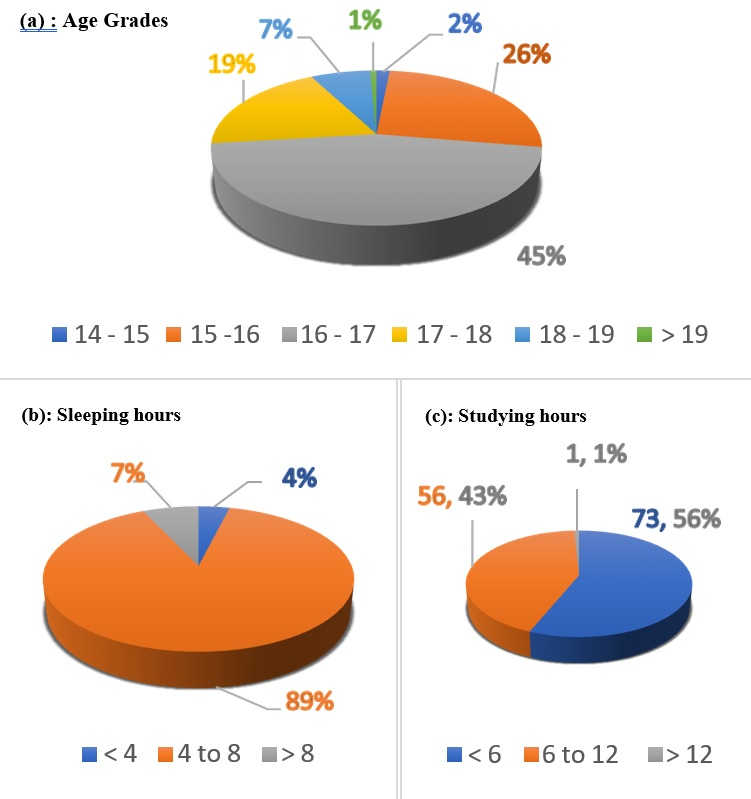
Fig. (1): Demographic Information
(a): The distribution of recorded age
grades of the sample. 2 students were aged between 14 --
15 years, 34 students were between 15 -- 16, 59 students
were between 16 -- 17, 25 were aged between 17 -- 18, 9
students were between 18 -- 19, and only one student was
above 19 years. (b): Shows the average
sleeping hours among students. 5 students used to sleep
less than 4 hours/day during school months, 116 students
used to sleep 4 to 8 hours/day, while 9 students used to
sleep more than 8 hours/day. (c): This
pie chart illustrates the average studying hours of the
two populations. Only one student used to study more than
12 hours/day, 56 students used to study 6 to 12 hours/day,
while 73 students used to study less than 6 hours/day.
Table [3]
below indicates that there was no statistically significant
difference between age, gender, educational grade, and
studying hours between both populations. However, there was
a statistically significant difference between academic
performance, sleeping hours, number of extracurricular
activities, and the variety of their categories.
Table[3] : Demographic information comparison between both
educational systems.
STEM
Non-STEM
P value *
Age (mean ± SD)
16 ± 0.925
16 ± 0.947
0.979
Gender (M/F)
11/54/14
3/36/12
0.300
Academic performance
A (90-100%)
B (80-89%)
C (70-79%)
10 69 0
24 23 4
< 0.001
Study hours
< 6 hours
6-12 hours
> 12 hours
38 40 1
35 16 0
0.060
Sleep hours
< 4 hours
4-8 hours
> 8 hours
3 75 1
2 41 8
0.007
Activity Categories
None
1
2
3
4
5
6
7
1
8 5 14 18 13 10
10
6
18 11 7 4 2 1
2
< 0.001
Number of activities (mean rank)
76.65
46.59
< 0.001
*The mean difference is significant at the 0.05 level.
2. Perceived stress scale Responses Table [4]
below shows the responses of 130 students to the perceived
stress scale questionnaire, the questions from 1 -- 10
correspond to the validated PSS -10 copy.
Table [4]: PSS -- 10 responses
Question Number (Count, Percent)
0 (Never)
1 (Almost Never)
2 (Sometimes)
3 (Fairly Often)
4 (Very Often)
Question 1
5
(3.8%)
11
(8.5%)
45
(34.6%)
46
(35.4%)
23
(17.7%)
Question 2
5
(3.8%)
14
(10.8%)
29
(22.3%)
53
(40.8%)
29
(22.3%)
Question 3
2
(1.5%)
6
(4.6%)
20
(15.4%)
45
(34.6%)
57
(43.8)
Question 4
9
(6.9%)
24
(18.5%)
49
(27.7%)
28
(21.5%)
20
(15.4%)
Question 5
14
(10.8%)
51
(39.2%)
45
(34.6%)
17
(13.1%)
3
(2.3%)
Question 6
4
(3.1%)
14
(10.8%)
32
(24.6%)
57
(43.8%)
23
(17.7%)
Question 7
17
(13.1%)
32
(24.6%)
55
(42.3%)
19
(14.6%)
7
(5.4%)
Question 8
19
(14.6%)
51
(39.2%)
37
(28.5%)
16
(12.3%)
7
(5.4%)
Question 9
4
(3.1%)
12
(9.2%)
19
(14.6%)
50
(46.2%)
35
(26.9%)
Question 10
5
(3.8%)
11
(8.5%)
30
(23.1%)
36
(27.7%)
48
(36.9%)
3. Relation between demographic variables and stress
levels.
Table (5): Significance of association of respondents'
demographic/academic variables with stress score
Stress Score Mean
Standard Deviation
P value
Significance of Association with Stress Scores
Educational System
STEM
Non-STEM
26.4935
24.3000
5.69770
6.51920
.047
Statistically significant
Gender
Females
Males
27.0370
23.1522
5.69527
6.06984
< .001
Statistically significant
Educational Grade
Grade 10
Grade 11
Grade 12
23.6429
25.5455
27.0400
5.59680
6.34254
5.33448
.244
Statistically significant
Studying Hours
< 6hrs.
6 — 12 hrs.
> 12 hrs.
5.3857
25.9286
6.42976
5.77410
.884
Statistically significant
Sleeping Hours
< 4hrs.
4 — 8 hrs.
> 8 hrs.
30.0000
25.7965
21.1111
3.67423
6.05209
5.66667
.021
Statistically significant
Mean Square
df
Grade (Among STEM population)
26.697
2
.445
Statistically significant
Grade (Among non- STEM population)
78.644
2
.158
Statistically significant
a. stress score is constant when study hours = 12 hours.
It has been omitted.
There was a statistically significant negative relation
between sleeping hours and stress levels.
Table [5]. Post Hoc -- Tamhane test indicated that
the difference is mainly between individuals who sleep less
than 4 hours and those who sleep more than 8 hours.
Table [6].
Table [6] Post Hoc tests - Multiple Comparisons
Sleep Hours
Sleep Hours
Mean Difference
Sig.
Tamhane
< 4 hours
4-8 hours
4.20354
.170
> 8 hours
8.88889*
.013
4-8 hours
< 4 hours
-4.20354
.170
> 8 hours
4.68535
.116
> 8 hours
< 4 hours
-8.88889*
.013
4-8 hours
-4.68535
.116
Table [7] : Correlation between the number of
extracurriculars/ their categories and stress scores
Spearman's rho'
P -value
Significance of Association with Stress Scores
Categories of extracurricular activities * Stress
Score
.038
.674
Statistically insignificant
Number of extracurriculars * Stress scores
.036
.686
Statistically insignificant
4. Linear Regression Analysis
Linear regression test was performed using those variables
significantly associated with stress in univariable analysis
as independent variables (i.e.:gender, educational system
and sleeping hours), while stress scores were used as the
dependent variable. The regression revealed that gender and
sleeping hours were significant predictors of stress (p
values <0.001 and 0.026, respectively), while educational
system showed only marginal significance as a predictor (p
value = 0.086).
V. Discussion
This current study aims to compare stress levels between
STEM and Conventional students in Egypt and identify the
significance of association of certain demographic and
academic factors with stress levels among both populations.
Null Hypothesis (1): There will be no
statistically significant difference between STEM students
and conventional students in terms of perceived stress
levels.
According to the findings of this study represented in
table [5], this hypothesis was rejected as there
was a statistically significant difference between means of
stress levels between both populations (p = .047). This is
closely related to the nature of STEM schools in Egypt as
being boarding schools for excellent students and associated
with higher levels of competition and extracurriculars than
conventional schools -
table [3] .
Previous studies have addressed the effect of being educated
in a boarding school on stress levels and social
interactions. Children sent to boarding schools tend to
suffer from sudden and often irrevocable traumas, as well as
bullying and sexual abuse
[9]. One study analyzing the societal interactions of both
boarding and day schools' students has shown that boarding
schools' students reported higher success in gaining
autonomy from parental environments as well as higher
ability in forming romantic relationships than day schools'
students. On the other hand, adolescents from day schools
scored higher ability in peer- interactions and greater
parental support
[9]. Peer relationship has a great ability to reduce academic
stress (t = - 38.62, p < 0.001) among students
[10]. The same study revealed the significance of parental
support in handling stress among children. The study's
findings showed that the parent-child relationship can
negatively predict academic pressure (t = - 56.29, p <
0.001). The lack of the previous two factors (parental and
peer relationships) may be among the causes of the elevated
stress scores among STEM students than conventional
students.
STEM students in Egypt tend to participate in a variety of
extracurriculars with higher levels than their non-STEM
counterparts
table [3]. The reason behind this is the intensive
competition present between STEM students in terms of
academic achievement, seeking for scholarships, and
enhancing their experience and knowledge. Too many
assignments, close deadlines, and dropping entertainment
activities because of schoolwork were reported to be
significant sources of stress among 61% of students
[11], which are sources believed to be associated with extreme
participation in extracurriculars. On the other hand,
previous studies have indicated the influence of
participating in extracurriculars on reducing academic
stress levels. One study has indicated that there is a
slightly negative correlation between extracurriculars and
stress / suicidal ideation (r = −0.083,
p < 0.001), (r = −0.039, p <
0.01) respectively
[12]. Another study has shown that participating in
extracurricular activities has a significant positive
influence on academic outcomes, as well as moderating the
relationship between academic stress and coping
[6]. Despite these studies, our findings have not shown a
significant correlation between number of extracurriculars
or the variety of their categories and the reduction of
stress levels (P = .686) (P = .674), respectively.
Table [7] .
STEM students, when participating in extracurriculars, tend
to reduce their sleeping hours instead of studying hours to
cope effectively with the responsibilities that are required
by extracurriculars and to balance between academic
excellence and other activities. Our findings
table [3] , have indicated that there is a
significant difference in sleeping hours between STEM and
non- STEM students (P = 0.007), while there was no
statistically significant difference but a tendency between
studying hours among both populations (P = 0.060). On the
other hand, results in
table [5]
have indicated a significant association between sleeping
hours and elevated stress levels, indicating that decreasing
sleeping hours significantly increases stress levels among
students ( P =.021), while no statistically significant
association was present between studying hours and elevated
stress levels ( P = .884), which is indicated by prior
studies that revealed that there was a weak correlation
between stress and study hours (r = 0.062)
[13]
. Post Hoc -- Tamhane test
table [6]
shows that a significant difference in stress levels is
present specifically between students who sleep less than 4
hours per day and those who sleep more than 8 hours (P =
.013). At the same time, no statistically significant
difference was present between those who sleep less than 4
hours or more than 8 hours and those who sleep between 4 to
8 hours per day. The significant association between
sleeping hours and stress levels was indicated by several
previous studies. Prior findings have shown that 80.2% of
high school students in Lukasa were stressed due to a lack
of quality and quantity of sleep
[11]. Many students tend to be exhausted, and they get
significantly less than the recommended 9 hours of sleep,
70% of them reported that they were often or always stressed
by workload
[14]
. Poor quality sleep is proven to be significantly
associated with elevated mental stress levels as well (p <
0.001)
[15].
Null Hypothesis (2): There will be no
statistically significant difference between males and
females in terms of perceived stress levels.
This hypothesis was rejected by the outcome results
represented in
table [5],
which indicates there was a statistically significant
difference (<0.001) between males and females in terms of
perceived stress levels. This finding is consistent with the
findings of a preceding study which revealed that women were
more likely than men in experiencing higher levels of stress
[16]
. For more specification, a previous study has indicated
that women score higher levels of stress on the PSS -10
compared to their male counterparts
[17]
. This study has indicated that self- distraction, emotional
support, venting, and instrumental support were common ways
among students and especially females to cope with stress
states and perceive temporal relief from stressors. One
study has shown that Egyptian female dental students score
higher levels of stress than males due to personal and
clinical factors, workload, and performance pressure
[18]
. Another study done on high school students in Lusaka
revealed that upon the conduction of the questionnaire, 62%
of males reported being stressed because of domestic
responsibilities compared to 81.5% of females
[11]. On the other hand, other findings indicated that females
were better than males in handling academic stress
[19]
. Another study has indicated that higher secondary male
students are subjected to higher academic stress levels than
their female counterparts
[20]
. Furthermore, a neutral finding has indicated that there
was no statistically significant difference between males
and females on the perceived stress scale
[21]
. Past studies have suggested several reasons behind females
being more subjected to stress. Daily stress associated with
routine role functioning, gender caring role-related stress,
gender violence, sexist discrimination, being more
emotionally involved than males in social networks, and
being affected by others' stress, are among the significant
sources of stress to females
[22]
.
Null Hypothesis (3): There will be no
statistically significant difference between different
educational grades (Grades 10 & 11 & 12) in terms of
perceived stress levels.
According to the results shown in
table [5],
there was no statistically significant difference in
perceived stress levels among the three populations (grades
10 & 11 & 12) (P = .244). Although by comparing means of
stress levels among three populations, it can be inferred
that means of stress levels have increased by the
advancement in educational level, (Grade 10: Grade 11: Grade
12) = (23.6429: 25.5455: 27.0400). Therefore, this
hypothesis was approved by the results. These findings
contradict previous studies that aimed to compare different
educational grades in terms of stress levels among high
school students as well as university students. One study
has indicated that 28% of grade 11 students experience high
or extreme stress compared to 26% of grade 12 students,
indicating that significant stressors included lack of time
for revision, queries from society, and parental
expectations
[23]
. Variety in these factors may be the reason behind the
difference in the findings. Other findings have shown that
junior university students experienced higher perceived
stress levels than senior students (M=18.49, SD=5.46) & and
(M=15.58, SD= 5.36), respectively
[21]
. On the other hand, a contradictory study to the previous
findings revealed that mid-senior Egyptian dental students
showed some higher stress levels than junior students
[18]
.
Upon performing the linear regression test, findings
revealed that sleeping hours and gender are significant
predictors of stress, while educational system was found to
be not a major cause and a significant predictor of stress
among high school students.
Poor sleep is proven by previous findings to be a
significant predictor and closely related to stress. A
preceding study done on King Abdulaziz University's students
have shown that upon the preforming an electronic
self-administered questionnaire, results indicated that 65%
of students experienced stress, while 76.4% of them suffered
from poor sleep quality. Findings revealed that the increase
in stress levels is a significant predictor of stress
(Cramer's V = 0.371, P < 0.001)
[24]
. Another study done on medical students have shown that 76%
of students were suffering from poor sleep quality, and 53%
of them were suffering from elevated stress levels. Logistic
regression test has revealed that students who do not
experience stress are less likely to have poor quality of
sleeping states
[25]
. Sleep deprivation or Insomnia triggers the body to release
Cortisol hormone during day hours, and potentially to
maintain an alert state of the body. Sleep and stress
responses are greatly associated in the physiology of human
body, as both share the the hypothalamic- pituitary-axis
(HPA). A disruption in the function of HPA leading its axis
to be acute can disrupt sleeping cycles. Upon experiencing
prolonged or chronic stress, hypothalamus and pituitary
glands send messages to the adrenal gland to secrete more
cortisol, leading to an overly active HPA axis.
Major findings of this study have revealed the significant
difference in stress levels between STEM and non-STEM
students and suggested that a possible reason is that
over-participating in extracurricular activities by STEM
students has reduced the quality and quantity of sleeping
hours, which is significantly associated with elevated
stress levels. On the other hand, participation in
extracurriculars hasn't affected study hours between both
populations, which was found to be not significantly
associated with elevated stress levels. Females have shown
higher stress scores than their male counterparts on the
PSS. And it is found that advancement in educational level
was not significantly associated with elevated or reduced
stress levels in general. The same results were found when
splitting the sample upon the educational system and
examining the relation between educational levels and stress
scores in each population independently
table [4].
Further studies that are concerned with similar topics and
aspire to build upon this study may be concerned with
determining stress differences between the genders more
thoroughly, within STEM students or non-STEM students
independently, to examine if there is a difference in coping
abilities between males and females in both educational
systems.
As the data reveal, there is no association between stress
levels and extracurricular activities; nevertheless, further
studies may be employed to determine if there is a specific
sort of extracurricular activity that relieves stress, such
as physical, literary, or social activities.
The study's findings may be shared with educational
institutions, including teachers and administrators, to
investigate possible methods to minimize student stress
levels as the outcomes of the study could be used by
educational departments to assess their curriculum and make
the necessary adjustments.
The study findings revealed that STEM students suffer from
elevated levels of perceived stress compared to their
non-STEM counterparts, psychological guidance is required,
and mental health instructors should be present in the
educational environment to asses students overcome
psychological problems when faced.
During the research process, there were certain situations
in which we faced some limitations. For instance, recall
bias, is a serious risk that can potentially influence the
validity of survey data. It usually occurs because of
individuals' failure to recall or recount their experiences,
which can lead to errors in their responses. This risk could
be considerable since the research variables' most recent
encounter was three months ago. An approach to reduce recall
bias was to employ multiple-choice questions with all
possible responses that could aid respondents in remembering
their answers. Another important limitation was represented
in the limited number of responses, a total of 130 responses
may be inefficient enough to come up with strong and
reliable data despite the significant effort made to widen
the spread of the questionnaire and the daily reminders sent
to respondents. However, there was a remarkable lack of
responses that may decrease the findings' validity. In spite
of lack of responses, the findings were consistent to a
great extent with previous findings in the same feild.
Future reseach can be conducted employing a greater number
of respondents to ensure the validity of the data.
Furthermore, the original copy of the PSS-10 requires
responses to situations that have occurred a month before.
However, we have utilized the PSS-10 questionnaire in
structuring an online survey that was concerned with
situations that happened during a 3- month period before. A
limitation that may influence negatively the accuracy of
responses. However, we considered the employment of MCQs to
reduce the recall bias.
Moreover, the research was concerned with Egyptian students
and educational systems. Taking into account socioeconomics
and cultural themes, it was hard to identify earlier
literature studies on related topics that represent reliable
findings closely related to the study topic. Nevertheless,
similar socioeconomic and cultural conditions were
maintained during researching in the literature.
Finally, the short time frame for collecting data,
conducting the analysis, and discussing results and
recommendations was a great challenge during the research
process.
IV. Conclusion
This study was the first of its kind aimig to assess the
variation in the prevalence of perceived stress between two
types of educational systems in Egypt: STEM and conventional
secondary systems. Taking into consideration social,
academic and extracurricular factors, and utilizing a
significant number of statistical tests for data analysis.
The sample (130 high school students) was chosen randomly,
and respondents were asked to fill in an online Arabic
survey to identify specific demographic information and
determine stress score through the perceived stress scale --
10. The analytic tests done on the results revealed that
STEM students are subjected to higher levels of perceived
stress than conventional students. Lack of strong parental
relationship, excess workload, and intensive competition
contribute to this significant difference in stress levels.
However, the most important factor was the lack of quality
and the reduced quantity of sleep hours, which may be a
result of over participating in extracurriculars.
Additionally, we found that there was a significant
difference between the two genders in terms of stress
levels. Upon analyzing the influence of these factors on the
overall mental health of students, addressing them and
establishing appropriate mental health screening in STEM
schools is an essential step that may aid in developing the
creativity, innovation, and enthusiasm of students and
reducing negative emotional and mental problems that may
affect academic or social performance among students.
V. References
[1]
A genetic approach for tackling sickle cell disease
Mohamed Mohamed | Mo'men Emam
(STEM High School for boys-6th of October.)
Abstract
SCD is a serious inherited hemoglobinopathy that was
responsible for the mortality of 376000 patients in 2021.
The number of infants born with this genetic disorder was
raised by 13.7% within the time interval from 2000 to 2021.
Its fetal complications and painful VOC episodes are
associated with a reduced quality of life and
hospitalization and healthcare burden. Most SCD therapies
are symptom-managing focused rather than curing the disease
itself. This study mainly focused on the most
life-threatening complications including cardiovascular
complications and acute splenic sequestration, medications
managing or curing them including hydroxyurea (HU) and gene
therapy. HU was found to be effective in reducing cell
sickling and was associated with improvements in organ
functions represented in decreased acute chest syndromes and
crises requiring blood transfusion. Its drawbacks were
obvious in reduced sperm count and restricting erythroid
cells' growth. Curing SCD gives lentiviral Gene therapy an
advantage compared to HU. However, more research should be
done on developing gene therapy to find out the reason and
solution of malignancies reported in some cases.
I. Introduction
The disease of sickle cell anemia (SCD) was common in Africa
for about 5000 years. A story of researching, discovering
complications, and finding out medications, was written by
great scientists, like chemist Dr. Linus Carl Pauling, Dr.
Ingram, and others, to make an evolution from calling
patients "ogbanjes" in Africa to the use of gene therapy
techniques to treat it
[1]. The disease is related to hemoglobin mutations that cause
many disorders including sickle cell anemia. This disease
starts with a single mutation in hemoglobin creating sickle
cell hemoglobin (HbS). As a result, the shape of blood cells
(from the name of the disease, sickle cell anemia) becomes
crescent-like by a process of sickling the blood cells by
interactions among erythrocytes, leukocytes, thrombocytes,
and vascular endothelium. That leads to a blockage in the
bloodstream resulting in dangerous complications and can
lead to death. The complications have different levels, and
some may not require hospital visits and others require
intensive care units (ICU)
[12]. Cardiovascular complications and acute splenic
sequestration are some of those that can lead to death in
both adults and children. Cardiovascular complications are
clearly related to SCD by the fact that SCD can cause
blockage near the heart. These complications can lead to a
low supply of oxygen to the body leading to hard pain and
high anemia. Because of the body's need for oxygen for its
main functions, SCD affects those functions badly. Also, the
spleen has an important role in the human body as it deals
with dead blood cells. So, it is easily affected by closing
splenic veins, by Vaso-occlusion, resulting in a
complication called acute splenic sequestration (ASS). It
leads to low hemoglobin levels, anemia, enlargement in the
spleen size, probably splenectomy, and a mortality rate
greater than 20 %. Generally, fetal hemoglobin (HbF) is
known for its ability to reduce the effect of SCD
[6]. That encouraged the researchers develop a medication
called hydroxyurea. This medication can solve many of the
cases and people who stick to it are predicted to have a
longer life than others who don't stick to it. When the
level of HbF becomes in- between 20% and 33%, SCD has no
effect on the patients. However, some patients don't respond
to this medication positively and others have no effects at
all. Another group of patients respond negatively and some
of the complications deteriorate. So, scientists recommend
only the minimum effective level of this therapy to avoid
these negative cases
[12]. Another studied medication is lentiviral Gene therapy. It
depends on the gene addition method, by lentiviral vectors,
to reduce the effects of HbS. Its bad side effects are not
popular, making it a recommended treatment for SCD.
II. Hemoglobins
The human hemoglobin (Hb) is the factor that controls how
the human body will be. Characteristics like length, eye
color, and others have resulted from its function. There are
many types of hemoglobin in humans. Some of them are healthy
and normal and others are abnormal and can cause many
disorders
[1]. Mainly, the normal hemoglobins are adult hemoglobin
(HbA), fetal hemoglobin (HbF), and HbA2. Typically, they
consist of two different parts, which are Heme and Globin.
Heme is a combination of an iron atom and porphyrin. The
term porphyrin means a heterocyclic tetrapyrrole ring
system. The four rings of porphyrin are connected,
cyclically, by methene bridges
[21]
. Globin is made up of 2 alpha chains and 2 beta chains.
This is HbA (α2 β2). Other normal hemoglobin types are HbA2
(α2δ2), which has 2 delta chains instead of the beta chains,
and HbF (α2γ2), which has 2 gamma chains instead of the beta
chains. The alpha chain consists of 141 amino acids and the
origin of the two chains is the alpha gene cluster of
chromosome 16, while beta chains are comprised of 146 amino
acids and their origin is the beta gen cluster in chromosome
11
[6]. Adult hemoglobin (HbA) and fetal hemoglobin (HbF) have
similar genes since they exist on chromosome 11. However,
HbF production decreases in an accelerated manner after
birth. In the healthy conditions, adults have 96:98%,
<3.5%, and <1% of HbA, HbA2, and HbF respectively. In
addition, HbA2 is just a minor component in the blood cells
in humans. So, HbA is specifically the normal one after
birth
[21]
.
Sickle cell anemia patients have a high percentage of
abnormal hemoglobin called hemoglobin S (HbS). HbS is
different from HbA as HbS has a valine in the 6^th^ position
in the beta chains instead of amino acid. So, this mutation
causes the "sickle cell disease"
[6]
III. Sickle Cell Anemia
i. Sickle cell anemia history
Sickle cell anemia was common in Africa for about 5000 years
but that was not recorded well
[1]. Some scientists believe that the origin of SCD mutation
happened about 70—150,000 years ago. It is known that the
term "ogbanjes" was used by African people to describe weak
babies who were sickle cell anemia patients in the distant
past
[6]. Over the last two centuries, there were observations on
humans and animals that led to the full discovery of sickle
cell anemia. Firstly, in 1840, at the London Zoological
Garden, a scientist called Gulliver noticed strange- shaped
red blood cells in the blood cells of the deer in the garden
[4]. They were crescent or sickle- shaped. At the same time,
the white-tailed deer in North America in the forests of
Michigan were dying because of Vaso-occlusive problems. In
1905, two French scientists published a report about "half-
moon corpuscles" in the blood of 5% of 243 local Algerians
who were anemia patients. The scientists wrongly related
these sickle erythrocytes to malaria instead of SCD. Also,
in 1904, a patient called Walter Clement Noel visited the
hospital of Chicago Presbyterian since he was suffering from
an ulcer on his ankle
[1]. His physicians were James Bryan Herrick and his intern
Ernest Eddward Irons
[6]. After checking Noel's blood, Dr. Irons noticed strange
blood cells and named them "peculiar, elongated, and
sickle-shaped". So, by the end of 1910, Dr. Herrick
connected the abnormalities in the red blood cells' shapes
to the sickle cell anemia disease when he reported on
"Peculiar Elongated and Sickle-Shaped Red Blood Corpuscles
in a Case of Severe Anemia" in the "Archives of Internal
Medicine". That was the first time to do so, as a result,
1910 is described as the discovery year of sickle cell
anemia disease
[1]. The first scientist who denominate the disease by "sickle
cell anemia" was Verne Raheem Mason in 1922
[6]. In 1927, it was discovered that removing oxygen makes red
blood cells of patients, with sickle cell anemia, sickle. In
addition, some of the patients' families' blood cells were
sickling by removing oxygen although they had no symptoms.
So, those people were called "sickle traits". That was the
first discovered cause-effect relationship between the
sickling of sickle cells and acidic conditions and low
oxygen, by two scientists called Hahn and Gillespie
[10]. In 1949, other two physicians, called Dr. James V. Neel
and Col. E. A. Beet, proved that sickle cell anemia is an
inherited disease that the patients are homozygous and carry
two alleles of sickle cell anemia while sickle cell traits
are heterozygous and carry one allele of sickle cell anemia
[1]. In the same year, the famous chemist Dr. Linus Carl
Pauling with his co-worker Dr. Harvey discovered the
cause-effect relationship between an abnormality in the
chemical structure of hemoglobin molecule and sickle cell
anemia
[10]. Sickle cell anemia is the first disease that took the
name "molecular disease". This term was coined by Dr. Linus
Carl Pauling and Dr. Harvey after their findings. Thanks to
this discovery, Dr. Linus Pauling received a Nobel Prize in
1954
[1]. After two years, the details of the irregularity of
hemoglobin in sickle cell patients were discovered clearly
by a scientist called Dr. Ingram. In 1956, he found that the
6^th^ position of the amino acid chain has amino acid valine
instead of glutamic. Counting from the amino- terminal, that
6^th^ position was the only strange one on the whole amino
acid chain of SCD patients' blood
[6]. That was one of the most important discoveries in sickle
cell anemia. In the following years, more details were
discovered, and the complications were clearly related to
the disease itself. It was found that the mutation of
glutamine-to- valine substitution happens in the beta-globin
chain at chromosome 11. To ensure supporting SCD patients
and their families Dr. Charles F. Whitten in the 1970s
helped the "Sickle Cell Disease Association of America"
(SCDAA) to be founded. Nowadays, 90% and 50% of SCD patients
can live to the age of 20 and 50 respectively. The average
age of SCD patients is about 58 years for women and 53 for
men. This indicates the improvement in curing and supporting
SCD patients. Because in the past, "ogbanjes" were dying at
an early age
[1].
ii. Pathophysiology of SCD
The pathophysiology of sickle cell anemia starts with the
arising of Sickle cell hemoglobin (HbS). That happens
because of the mutation in the hemoglobin (Hb) beta chain,
as at the 6^th^ position, it has the amino acid valine,
while the normal one is glutamate. This glutamine-to-valine
substitution occurs as a result of an original mutation when
the 6^th^ codon in the beta- globin chain has thymine
instead of adenine
[25]
. This mutation creates the HbS and enables it to form
polymers under deoxy conditions
[13]. In addition, it causes abnormality in molecular stability
and solubility. The deoxy conditions result in forming a
polymer, increasing its viscosity, and decreasing
solubility. Also, the deoxy conditions make HbS form
tactiods, a gel-like material
[1]. There is an equilibrium between the tactiods and the
liquid- soluble form of HbS. This equilibrium is affected by
the concentration of HbS, the existence of other
hemoglobins, and oxygen tension. Oxygen tension affects the
formation of the polymer. Polymer formation happens only in
the deoxy state and the presence of oxygen increases the
liquid state. In addition, the tactiods form of HbS happens
when the concentration of HbS is greater than 20.8 g/dL. The
existence of Fetal hemoglobin (HbF) can cause decreasing in
the tactiods formation. So, patients that have high levels
of HbF have weaker disease than patients that have low HbF
levels
[1]. So, HbS effects do not occur clearly until the age of six
months to 2 years after declining the level of HbF. Also,
people who are compound heterozygotes for HbS have one-
third concentration of HbF, of all hemoglobins, which is the
needed concentration for protecting their cells from
deoxy-induced damage
[1]. HbS causes chronic anemia in patients as the life cycle
of their blood cells is 10-20 days instead of the normal
life cycle, of 90-120 days
[12]. The upregulation and expression of endothelial adhesion
molecules, the formation of dense red cells, and repeated
sickling of the red blood cells cause one of the most
dangerous processes which is Vaso-occlusion
[1]. Many different reasons affect this process
[18]
. One of the most important reasons is the formation, or
expression, of "adhesion molecules" on blood cells. Cells
adhere to each other and to the vascular endothelium
[10]. When this process happens in postcapillary venules, it
increases the times of microvascular transit
[1]. Stasis is caused by increased leukocyte recruitment and
Inflammatory activation of endothelium in addition to the
adhesion of sickle red cells. Many adhesion molecules are
expressed on sickle cells. For example, CD36, α-4- β-1
integrin, intercellular adhesion molecule‐4 (ICAM‐4), and
Basal cell adhesion molecule (B- CAM) are all formed on the
sickle red cells
[10]. During the crisis, there is a huge, expressed amount of
phosphatidylserine (PS) on the sickle cells' membrane. That
leads to formatting microparticles (MP) and contributes to
increasing the crisis. Microparticles are used as a
measurement of the activity of the disease of sickle cell
anemia
[18]
. Vascular cell adhesion molecule‐1 (VCAM‐1) increases on
the endothelial cells with the help of interleukin‐18
(IL‐18) and tumor necrosis factor alpha (TNF‐α) in
inflammatory processes. There is another way that leads to
erythrocyte-endothelium adhesion. That happens by molecules
called "bridging molecules". Von Willebrand factor (vWF),
thrombospondin (TSP), and fibronectin (FN) are some of those
molecules that help erythrocyte- endothelium adhesion
[18]
. Nitric oxide (NO) existence helps to the sickling the red
blood cells which in turn leads to hemolysis. Hemolysis
contributes to the existence of free hemoglobin and further
leads to Vaso-occlusion. Reticulocytes are usually released
by hemolysis
[18]
. In addition, α-4- β-1 integrin and ICAM‐4 are common
adhesive molecules in reticulocytes which have very large
amounts of them. In fact, erythrocytes bind to reticulocytes
and endothelium in sickle cell anemia because of ICAM‐4's
ability to bind to not only α-4- β-1 integrin, but also very
late antigen (VLA‐4)
[1]. α-4-β-1 integrin has the ability to bind to many kinds of
adhesive proteins, or molecules, such as vWF, thrombospondin
(TSP), ICAM-4, and laminin in its soluble case. However, it
is found that its antibodies can inhibit the adhesion of
sickle erythrocytes.
All these adhesion processes lead to many crises and can
damage the internal organs. The most affected organs are the
lungs, the heart, and the kidneys. In babyhood, sickle cell
anemia can affect them by frequent infection because of
Haemophilus influenza, salmonella, and streptococcus
pneumonia. Also, it can lead to a of the dorsum of the feet
and hands, which is called dactylitis
[17]
. So, all these steps and pathophysiology from the mutations
that lead to all these complications make sickle cell anemia
one of the most dangerous diseases.
IV. Complications
i-insight
The slender biconcave shape of RBCs gives them the ability
to gather forming rouleaux, preventing individual RBCs from
clumping together in micro- blood vessels to avoid
Vaso-occlusion. Furthermore, this slender shape results in a
noticeable strength and elasticity obvious when they squeeze
through distorted narrow blood capillaries
[16]
. SCD alters the RBCs' shape resulting in impaired
physiology. These sickled cells are broken down prematurely
by the spleen resulting in sickle cell anemia. Also, they
form multi-cell adhesions combining with leukocytes and
blood platelets clogging narrow blood vessels
(Vaso-occlusion) giving rise to acute pain crises and
depriving body organs and tissues of proper blood
circulation, depriving organs of their adequate supply of
nutrients and oxygen, leading to organ damage (more
significantly noticed on the spleen) and eventually organ
failure.
Figure 1: The frequency VOCs endured by patients during
the first year of follow up.
A study conducted on 8521 SCD patients (through a
follow-up interval of 2.7 years) showed that Vaso —
occlusive crises (VOC) are the primary reason behind SCD
care utilization and medical contact like ER visits and
inpatient admissions where the study recorded an average
of 2.79 VOCs per patients in the first follow up year,
0.90 of which were handled in an ER setting. In addition
to 0.51 VOCs handled in an outpatient setting, 0.24 VOCs
were handled in an office setting, and 0.09 VOCs were
handled in other settings such as a pharmacy. necrosis
(AVN), acute chest syndromes (ACS), and kidney failure.
Further complications include priapism, strokes, leg
ulcers, asthma, chronic pulmonary hypertension, and sudden
death as well (all of which are "hemolysis-endothelial
dysfunction" sub-phenotype-associated complications)
[20]
. Current medications depend on managing the disease
symptoms. However, researchers are working on a lentiviral
gene therapy. SCD medication will be covered in a later
section. Before that, the most important complications
need to be addressed in more detail.
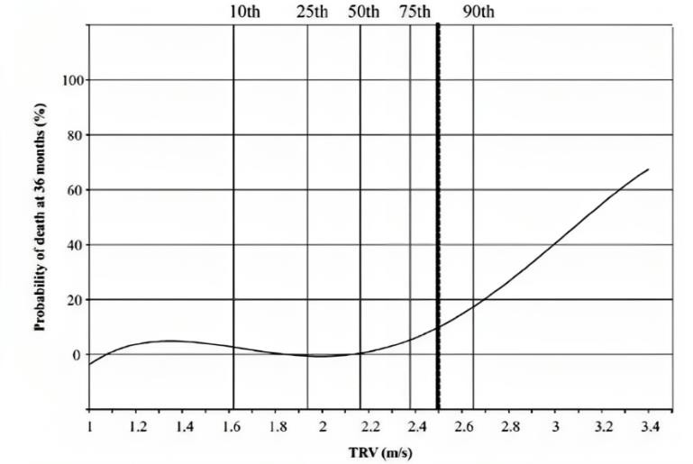
Figure 2: the top SCD complications associated with
complicated VOC episodes (according to primary and
secondary diagnosis claims).
In the first year of follow-up, 3,493 ER visits and 1,705
hospital visits related to VOC episodes and SCD
complications were identified. For about 85% of those ER
visits and hospitalizations, VOCs were the primary reason
for admission, while the rest 15% had SCD complications as
the primary reason.
Considering the four SCD genotypes, HbSS and
HbSβ^0^-thalassemia are known to be the most severe ones
and are termed as sickle cell anemia (SCA), while HbSC and
HbSβ^+^ are more benign (severity variation from one case
to another must be considered)
[7]. Even patients with milder SCD forms typically suffer
from painful crises in addition to other severe
complications including avascular
ii-Cardiovascular complications
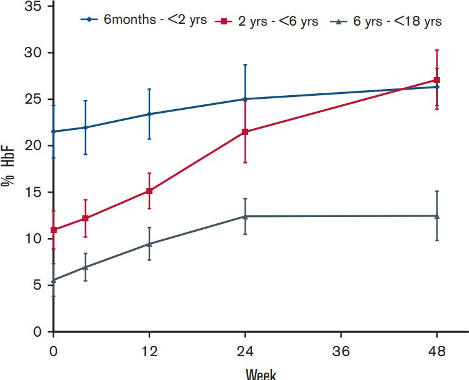
SCD is a vascular disorder, mainly driven by interactions
between endothelium and the blood formed elements
including sickled erythrocytes, leukocytes, inflammatory
proteins, ...... etc. This leads to VOC episodes and
severe organ damage. Cardiovascular and endothelial
changes driven by SCD differ a bit from those of
non-hemolytic anemia. In patients suffering from anemia,
the cardiac output (CO) increases to compensate for the
low oxygen-carrying capacity of blood, and the cardiac
index rises proportionally according to the severity of
anemia. This higher output is sustained by higher stroke
volume rather than elevating the heart rate or the
preload. The decrease in vascular resistance accounts for
this increase in stroke volume. Vasodilation of resistance
arterioles, exploiting previously dormant cutaneous and
muscular vessels besides new vessel growth initiated by
hypoxia, and reduced blood viscosity are mainly
responsible for this resistance drop. Elevated stroke
volume and dropped vascular resistance give rise to other
physiological changes including the renin-
angiotensin-aldosterone system stimulation, salt and water
retention by the kidney, and a volume overload state.
Consequently, chronic volume overload triggers the
dilation of all cardiac chambers, developing eccentric
hypertrophy as a reaction to increased wall stress
[20]
. In SCD, a significant drop in vascular resistance
associated with an obvious rise in cardiac index (CI = CO
/ body surface area) are noticed compared to those of
anemia, suggesting additional factors contributing to
this, potentially ischemia-induced new vessel growth along
with hemolysis induced inflammation. CI gives an insight
into the function of the right ventricle and dropped CIs <
2.0 L/min/m2 are associated with a high risk (10%) of
death within a year
[15]. Moreover, SCD patients generally suffer from
cardiomegaly along with increased left ventricular
end-diastolic diameter and left ventricular mass index.
SCD-associated complications are reversible and greatly
depend on hemoglobin. This was obvious in Blood transfusions
for men with SCD which effectively reduced the stroke volume
(−10.8±4.9 mL) and the cardiac index (−0.5±0.2 L/min/m2) as
well. Exactly, the reverse was seen in women, where an
increase in the stroke volume was noticed (−0.5±0.2
L/min/m2). Most clinical studies of SCD patients report a
normal or elevated left ventricular systolic ejection
fraction. Although it seems that SCD patients don't have
functional cardiomyopathy, slower shortening of
circumferential myocardial muscle fibers, besides improper
measures of cardiac systolic function are more common with
SCD patients compared to other sorts of anemia.
Additionally, impaired left ventricle relaxation and
diastolic dysfunction are noticed in cases with SCD giving
rise to a 3.5-fold increase in mortality. Cases suffering
from SCD possess an elevated blood pressure compared to sex
and age-compatible people, and higher blood pressure
compared to patients with beta-thalassemia major despite
having less hematocrit. Increased blood viscosity and the
development of renal or vascular injury may be a satisfying
explanation for that. Because of this, patients with SCD are
more vulnerable to stroke and increase the probability of
death.
The right shift of the Hb-oxygen dissociation curve declares
a decreased hemoglobin oxygen affinity, supplying the
peripheral hypoxic tissues with more oxygen and increasing
oxygen extraction in anemic patients. This mechanism is
mainly initiated by elevated 2,3-diphosphoglycerate levels.
Sickled erythrocytes (in adults) seem to have an inefficient
oxygen extraction, despite possessing plenty of (2,3-DPG)
and sphingosine-1- phosphate (S-1-P) as well. Moreover,
while practicing sports, oxygen extraction doesn't rise
significantly compared to intact individuals, where it just
increases from 24% to 39% compared to a significant rise
from 25% to 50% in healthy individuals. In contrast, anemic
adults were able to extract up to 80% of arterial blood
oxygen content. Loss of functional capillaries, increased
capillary wall thickness, less capillary transit time, and a
larger count of artery-to-vein shunts may be a convincing
reason for these disorders. Oxygen extraction can be
calculated from the following formula:
Oxygen extracted (mL) = arterial O2 content (mL / dL) _
cardiac output (L / min) _ 10dL / L \ (arterialO2 content -
venousO2 content) / (arterialO2 content).
[6]
For some cardiac complications, there are no approved
therapies till this moment. These include pulmonary
hypertension (PH), whether precapillary or postcapillary
disease (observed by right heart catheterization), raised
pulmonary artery systolic pressure (according to Doppler
echocardiography from the tricuspid regurgitant jet velocity
(TRV)), left ventricular diastolic heart disease (using
conventional and tissue Doppler echocardiography), raised
level of N-terminal pro—B-type natriuretic peptide
(NT-proBNP), dysrhythmia, and unexpected death as well.
Further complications include chronic kidney disease with
associated proteinuria, microalbuminuria, and
hemoglobinuria.
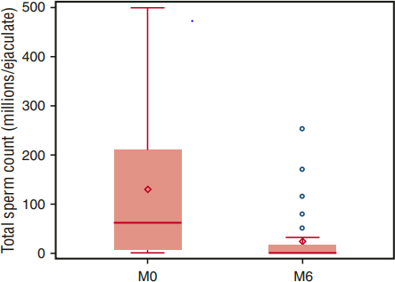
Figure 4: A comparison between PH and non-PH SCD
patients according to different PH indices obtained by
right heart catheterization in the study of the National
Institute of Health PH cohort study.
Mainly, SCD patients developing pulmonary arterial
hypertension (PAH (precapillary disease)) have progressive
elevation in pulmonary vascular resistance, smooth muscle,
and intimal proliferation, and in situ thrombosis as a
common cause, eradicating pulmonary arterioles and
resulting in a progressive heart failure in addition to
reduced exercise capacity
[3]. PAH is defined according to an average pulmonary artery
pressure ≥ 25 mm Hg (with 15 mm Hg as the normal value),
along with a left ventricular end-diastolic pressure ≤ 15
mm Hg and a pulmonary vascular resistance value ≥ 3 Wood
Units. On the other hand, pulmonary venous hypertension is
a result of an increase in the pressure downstream of the
pulmonary arterioles and capillaries, usually associated
with elevated left heart filling pressures because of
diastolic or systolic heart failure. These two hemodynamic
forms of PH are among the most common complications
encountered by SCD patients.
Tricuspid regurgitant jet velocity is considered a direct
measurement of blood velocity returning from right ventricle
to the right atrium during the systole according to Doppler
echocardiography. This parameter is used for a variety of
purposes including right ventricular systolic pressure
calculation (equivalent to the pulmonary artery systolic
pressure). It can also be used as a measure of PH. For
example, a value between 2.5 m/s and 3m/s identifies 25% to
39% of patients with a mean pulmonary pressure ≥ 25 mm Hg.
In addition, it is linked to Lactate dehydrogenase (LDH) and
plasma-free hemoglobin, which are known to be two biomarkers
of intravascular hemolysis that may lead to endothelial
dysfunction and death within SCD patients
[23]
. Small fluctuations in the value of this parameter ≥ 2.5
are associated with an increased risk of mortality. A study
published by Creteil (located in Paris) declared that TRV <
2.5 m/s is associated with less risk of death compared to
TRV values ≥ 2.5 m/s which is linked to a 6.81 mortality
ratio.
[11]. Although SCD is common in sub-Saharan Africa, frequent
high TRVs haven't been reported in Africa. Moreover, higher
TRVs are associated with less 6-minute walk distance
[2].
Figure 5: The percentage of patients having 6-minute
walk distance within various TRV intervals.
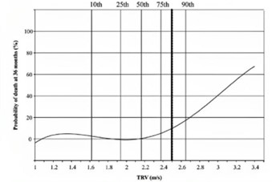
Figure 6: The relation between elevated TRVs and
increased risk of mortality within a year
iii- Acute Splenic Sequestration Crisis (ASSC)
Acute Splenic Sequestration (ASS) is one of the most common
complications of sickle cell anemia. Researchers define it
as a drop in hemoglobin level with no less than 20%. This
drop is related to an enlargement in spleen size by 2 cm at
least compared with the patient's normal conditions
[26]
. The splenic sequestration starts with a blockage of
splenic veins because of sickling blood cells in it
resulting in occlusion. The blood entering the spleen is now
normal and in good condition. However, the blood cells can't
exit the spleen well. These events can harm the circulatory
system as it leads to hypovolemia and anemia [ 1]. In their
first decade of life, sickle cell patients face ASS and
specifically between five months and 2 years. Other patients
may face ASSC later in their life at about 8th decade
[26]
. In the crises, there are many reasons that make doctors
determine if the patient has ASS or not. For example, sudden
violation of anemia and splenomegaly, where the spleen
becomes enlarged notability. In addition, on ASSC, the bone
marrow becomes active and after blood transfusion to the
patient, the size of the spleen returns to the case before
ASSC
[12]. There is another complication related to the spleen
caused by sickle cell anemia called hypersplenism. But there
is a difference between hypersplenism and Splenic
Sequestration which is the fact that the spleen is always
enlarged in hypersplenism, and its size doesn't regress
after blood transfusions
[1]. Depending on the level of riskiness, the attacks of ASS
are separated into different types, which are minor attacks
and major attacks. A moderate increase in spleen size and a
quick decrease of the level of hemoglobin by 2—3 g/dl
distinguish minor crises. While in major attacks the spleen
size increases significantly, the anemia is greater than
that of minor attacks as the level of hemoglobin reaches 2-3
g\dl, and it leads to hypovolemia. It is thought that the
cause of ASSC is associated with upper respiratory tract
infection, and specifically, infection with human Parvovirus
B19
[1]. ASSC diagnosis is done clinically, and complete blood
count (CBC) is usually used to indicate the level of anemia,
and reticulocytosis, in addition to white blood cells (WBC)
and platelets as their level decreases
[12]. It is highly recommended to treat ASSC in a short time.
Close monitoring and clinical evaluation should be done
carefully. The intensive care unit (ICU) should keep the
patients with major ASSC. Intravenous fluids should be given
to the patient in ASS. Patients also should be protected by
giving them H. influenzae vaccines, meningococcal, and
pneumococcal. Blood transfusion is usually used with ASSC
patients. However, over-transferring can increase blood
viscosity. Blood viscosity may be greater as the stuck blood
in the spleen can exit it and enter circulation after blood
transfusion
[1]. It is important to measure the hemoglobin level after
blood transfusion and keep it at its level before ASSC
whatever it was
[12]. After one major attack, splenectomy is popular as the
spleen becomes non- functional after that. In minor attacks,
splenectomy is not highly recommended
[1], however, this step may be taken after two minor attacks
[12]. It is common to depend on chronic blood transfusion but
that has its own risks. Blood-borne infections, iron
overload, hepatitis, allosensitization, and others make
blood transfusion not trusted
[1]. Although, on stopping blood transfusion, many patients
will return to ASSC. So, the fact that splenectomy is
recommended after two minor attacks is supported by the
mortality rate of 20 %
[12].
V. Medications
i-Hydroxyurea
Hydroxyurea (HU) is the first U.S. Food and Drug
Administration FDA-approved medication for sickle cell
disease. By inhibiting the ribonucleotide reductase enzyme,
this cytostatic agent drains the deoxyribonucleotide
reserves within the cells (used in DNA synthesis and
repair). Also, this NO- releasing drug demonstrates a
continuous inhibition of erythroid cell growth (reaching
20-40% within 6 days) and erythroleukemic K562 cell growth
(reaching 65% within 2 days)
[24]
. Its hematological consequences include elevated fetal
hemoglobin level (a threshold of 20% is suggested to prevent
recurrent Vaso occlusions), steady state hemoglobin level,
and mean cell volume (MCV) as well
[27]
. On the other hand, a significant drop in the populations
of leukocytes, reticulocytes, blood platelets, and hemolysis
markers (bilirubin and LDH for example) is noticed
[19]
. Comparing the morphology of erythrocytes before enduring
hydroxyurea therapy, the blood film shows significantly
reduced intracellular cell sickling. The main principal
mechanism of action of HU is thought to be augmented fetal
hemoglobin. Reduced leukocyte count caused by bone marrow
suppression triggered by HU is expected to play an important
role in Vasso- occlusion prevention as leukocytes are
thought to be effective in VOCs initiation. The Multicenter
Study of Hydroxyurea (MSH) declared a 50% reduction in the
annual rate of acute pain crises along with a significant
drop in the rates of acute chest syndrome and blood
transfusion requiring crisis in the patients on which the
study was carried out (HU was commenced at 15 mg/kg, this
dose is elevated by 5 mg/kg/day to reach the maximum
tolerated dose). Analogous outcomes were obtained from
studies carried out on pediatric populations such as the
BABY-HUG study which included children aged between 9 and 18
months. prospective non- randomized studies imported
improved organ function represented in the treatment of
pulmonary hypertension, secondary stroke prevention, lowered
transcranial Doppler velocities, prevention of cerebral
infarction, and preservation of splenic function
[28]
. For some of these, other studies couldn't reproduce these
results. improvements including a reduction in
life-threatening acute crises, less risk considering
progressive organ damage, and improved life expectancy are
noticed in patients who adhere to the therapy in the long
term and have good clinical and hematological responses.
This is supported by the studies of each of the MSH, the
Brazilian pediatric cohort, and the Laikon Hospital in
Athens, Greece
[12]. Another study conducted on 383 patients (59 died during
the follow-up period) was designed to explain whether
HU-induced HbF is associated with organ damage prevention
and improved survival. The patients were assigned to four
quartiles depending on the maximum HbF. Only 71% of the
patients in the lowest HbF quartile were alive, compared to
90% in the second quartile, 91% in the third quartile, and
86% in the highest one. The study also stated that almost
all of the patients in the highest quartile (97%) were
assigned to the HU group (75% of the highest quartile
patients were given the recommended doses), compared to only
33% in the lowest group (and only 18% were given the
recommended doses)
[9]. This is because HbF (α2γ2) lacks β-globin chains which
provides it with anti- sickling effect in vitro by the
interference with hemoglobin S polymerization
[5].
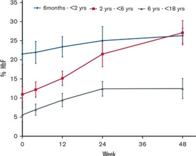
Figure 7: HU impact on HbF in patients of different ages.
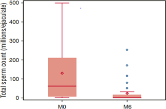
Figure 8: comparing the sperm count before and after 6
months of HU intake.
Unfortunately, some SCD complications don't show
improvement and may even deteriorate more during HU
therapy, including childhood avascular necrosis and
priapism. Moreover, 25-30% of patients suffering from SCD
have suboptimal or no response at all to HU treatment
[14]. Furthermore, the HUSTLE trial reported long-term
toxicities in children. Also, myelosuppression is a common
HU adverse effect among patients intaking higher doses and
older patients. To reduce its probability of occurrence,
the minimum effective dose is recommended. HU also has
negative effects on spermatogenesis as it reduces sperm
count and motility which normally don't return to normal
even after giving off HU intake. Also, azoospermia was
reported in patients treated with HU
[4].
ii- Lentiviral Gene therapy
Contrary to the other SCD symptom-focused therapies, Gene
therapy works to cure the disease itself. Unprecedented
advances in genomic sequencing made the way for discoveries
of new molecular tools for genome modification which made
gene therapy a promising medication for SCD. Though bone
marrow transplantation and allogenic blood are known to cure
SCD, donor availability restrictions (recent studies
imported that less than 25% of patients found a suitable
intrafamilial donor) and graft-versus-host disease resemble
significant drawbacks when they are compared to gene therapy
[31]
. Until now, only two techniques of gene therapy are known
(gene adding and gene editing). Lentiviral gene therapy is
among various gene addition therapies that use a variety of
viral vector systems as lentiviral or adenoviral vectors
(due to their ability to introduce new genetic information
into the living cells). Recently developed methods allowed
the transfer of specific genes without viral replication
which increases the potential of developing a gene therapy
for SCD. These gene modifications target hematopoietic stem
cells (HSCs) (as they can be a life-long source of normal
RBCs) and take place ex vivo in specialized facilities to
avoid off-target genotoxicity that may result from systemic
delivery of viral vectors. These therapies aim to minimize
the effect of βS either by producing normally functioning
hemoglobin or anti-sickling hemoglobin. β-globin-based gene
addition strategies work on normal adult hemoglobin
synthesis by incorporating and disappears during the first
year of life. BCL11A is responsible for stopping γ-globin
synthesis to switch to adult hemoglobin (HbA). After this,
HbF represents only < 1% of the total hemoglobin in
erythrocytes. Patients with hereditary persistence of fetal
hemoglobin (HPFH) along with SCD mutation have a mild SCD
phenotype (due to reduced HbS concentration and HbF
anti-sickling properties). Thus γ-globin-based gene addition
therapy targets increasing HbF by addition of γ-globin
genes. Reversing the repression of γ-globin expression is
considered an alternative. In lentiviral gene therapy, HSCs
are harvested from the patient, genetically modified ex vivo
in cell culture, and then reinfused into the patient. To
safely get through the harvesting procedure, patients are
prepared through hydration and blood transfusions. Usually,
patients undergo several collection cycles to harvest enough
cells for gene therapy. Lentiviral vectors (which are
derived from HIV) precede all vector systems in gene
addition strategies
[29]
. However, this thought was shaken by myeloid malignancies
reported from patients following the therapy
[30]
. The genes of the virus used to obtain a lentiviral vector
have been separated into individual plasmids. The lentiviral
vector is obtained from transient expression of these
plasmids and is loaded only with necessary genetic c
material needed to be transferred. Thus, it lacks the genes
of replication and is self-inactivating due to a 3' long
terminal cancellation. Because they incorporate into
actively transcribed regions of the DNA, lentiviral vector
offers an advantage over retroviral vector which
incorporates near gene regulatory regions
[32]
. β-globin genes into the DNA within the cell. The drawback
concerning this strategy is leaving βS mutation intact,
resulting in HbS still present in erythrocytes. The addition
of anti-sickling gene variants is also under development.
This enables tracking the added gene expression. ΒA-T87Q and
βAS3 are the two variants currently being discussed.
Normally, γ-globin combines with α-globin to form HbF
beginning in the third trimester of fetal development.
Figure 9: Gene therapy techniques.
VIII. Conclusion
HbS is the main cause of SCD. Reducing HbS and/or its
effects will manage SCD riskiness. It was found that blood
transfusions can lead to many side effects making it not
recommended by researchers in treating SCD. Hydroxyurea is
generally used to manage the complications and can't prevent
all the disease. In addition, hydroxyurea can increase
different disease complications while treating a specific
complication. So, it was concluded that the smallest
functional dose of Hu is highly recommended than overusing
it. On the other hand, gene therapy techniques can treat the
disease itself and can help humanity end the crisis of
sickle cell anemia. In addition, it is not a chronic
treatment, and patients will not need hospital visits after
extracting enough hematopoietic stem cells to be gene-
modified. Another key conclusion in gene therapy treatment
is to use lentiviral, not retroviral, vectors to increase
the level of treatment in the therapy. So, the research
question was answered by the fact that lentiviral gene
therapy has a good potential to save SCD patients.
It is preferred to do future research to discover the hidden
opportunities in lentiviral gene therapy to help poor
patients as it is expensive nowadays. Hence, it may not be
available in places like Africa where the disease spreads
and the health care levels are not high to enhance such a
technique. That is noticed that economic aspects were not
focused on in this paper.
IX. References
A Novel Framework in Leveraging Optimization Physics Models
using Quantum Computing: Techniques for the 2-D Hubbard Model
Jefferson Lin (Northeast High School)
Mentor: Ahmed Ayman (El-Sadat STEM School)
Abstract
The new and emerging field of quantum computing harnesses
the understanding of the complex dynamics of quantum
systems, promising to advance and revolutionize scientific
fields that can be applied in our world. However, realizing
this potential currently faces its challenges: scaling
error-corrected qubits, parameter spaces, and efficiently
compiling quantum circuits given hardware constraints. This
paper reviews techniques to address these obstacles by
integrating automatically differentiable quantum circuits
(ADQCs) with tensor networks (TN) to enable reverse-mode
automatic differentiation for efficient optimization. We
propose applying this ADQC-TN framework to the 2D Hubbard
model, which is a foundational model of strongly correlated
electron systems exhibiting rich phase diagrams, including
unconventional superconductivity. This framework can
elucidate detailed mechanisms, such as how dopant atoms
influence superconducting electron pairing, by training the
model's hopping, interaction, chemical potential, and other
parameters on experimental measurements. Robust optimization
represents a pivotal bridge between quantum computing and
experimental condensed matter physics to advance
quantum-based materials modeling and discovery, which has
already seen success from the extension of the ground state
of quantum lattice models with low fidelities. Successfully
trained Hubbard models could facilitate the analysis and
understanding of the effects of parameter-tuning and the
potential of defects on superconductivity that can aid in
other future modeling discoveries through bridging the gap
between quantum computing and physical engineering.
I. Introduction
When John Dalton first discovered the atom, a whole quantum
world was waiting to be unveiled, a world where the
principles of reality break down and what governs is beyond
the naked eye. Based on these quantum mechanics, Feynman and
other scientists envisioned using quantum computers to
simulate quantum systems under the premise that an initial
quantum state can be unitarily evolved with a quantum
computer that is polynomial in size and evolution time
[1]
. Such a potential, where a model Hamiltonian behavior could
be simulated, became more than just an idea that physicists
can use to broaden their understanding and determine what is
intractable with classical, traditional computers, from the
smallest distances to cosmological extents
[2]
. Because classical computers are especially bad at
simulating quantum dynamics in predicting how a highly
entangled quantum state will change with time
[3]
, this newfound role of quantum computers in astronomically
advanced modeling across physics, chemistry, and other
domains
[4]
requires new tuning parameter methodologies to achieve more
robust, scalable, and programmable methods in concurrence
with technology application
[5]
. To match the new growing demands of limited hardware,
costly simulations, being differentiable, challenging
parameter spaces, and more, finding a way to optimize model
parameters to match real measurements to have more accurate
models and simulations compared to experimental results is
becoming a necessity as shown in Fig. 1.
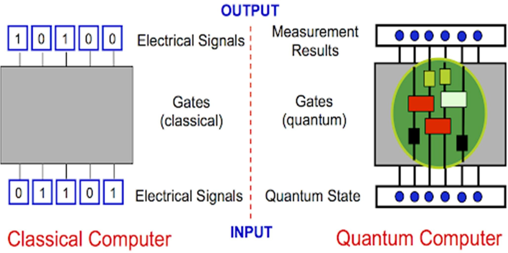
Fig. 1. Illustration of classical computing and quantum
computing structure with differing capabilities. Source:
[6]
Classical simulations of physical systems typically begin by
solving differential equations, for the first order has the
approximation $x(t+dt) \approx x(t) + f(x)dt$. However, when
we try to simulate the microscopic world in classical
computers, the equations of motion are too complex as they
are limited by conventional computing and classical physics.
So, we must use quantum computing to simulate quantum
systems. Through quantum computing (QC), a complex quantum
system can be isolated and controlled with sufficient
precision to maintain quantum coherence
[7]
. We can manipulate these quantum states themselves, unlike
classical computers, by implementing a universal set of
quantum logic gates to approximate any unitary operation on
the simulator’s qubits. Because Hilbert space grows
exponentially with system size $dim(H_{qubit})^{\otimes N}$,
simulating quantum many-body dynamics on a classical
computer becomes intractable. Quantum simulators can exploit
effects such as entanglement, superposition, and parallelism
to encode and manipulate state space and operations
compactly, allowing for massively parallel computation on
the state vector, circumventing the limitations of classical
simulation to develop quantum algorithms that scale sub-
exponentially in resources with the system size and desired
accuracy. QC offers a computational advantage by
meticulously using an exponentially ample Hilbert space for
quiet registers (usually through sampling from quantum
states created by random entangling circuits) but is limited
to specific tasks and problem 2 types. This advantage can be
seen in molecular simulations with one such approach using
Lie-Trotter-Suzuki product formulas
[8]
for Hamiltonian simulations, which reduces scalar error when
each decomposition can be implemented into a quantum
circuit. Similarly, recent developments in more optimal
differentiable quantum generative models DQGMs
[9]
(on solving Fokker-Planck SDE equations) sampling enable the
encoding of classical data into quantum states and the
optimization of the quantum circuit parameters. All of this
brings an essential discussion of using these quantum
systems to sample, solve efficiently, and model problems to
reap the far-fetching benefits of QC in cryptography,
simulations, optimization, and machine learning.
II. Quantum Physics
A. Schrödinger's Equation
In simulating quantum mechanics, we are first interested in
the solution of the time-dependent Schrodinger equation,
$$ j\hbar \; \frac{\partial}{\partial t} |\;
\psi(t)\rangle \; = \hat{H}|\psi(t)\rangle $$
(2.1.1)
where $H = -\frac{\hslash^2}{2m} \nabla^2 + V$ represents
the Hamiltonian or the total energy of the wavefunction
$\psi$ This can be further thought of as $\psi (t) =
e^{-iHt} \psi (0)$ propagates the initial state $\psi (0)$
‘s evolution through time. The Schrodinger’s equation is a
useful representation of quantum dynamics because it
fundamentally describes how quantum systems evolve and their
Eigen states, respectively. Additionally, it takes a
time-independent form $\hat{H} \psi = \hat{E} \psi$, but we
will be focusing mainly on the time-dependent form and the
applications resulting from it.
B. The Hamiltonian Approximation
The first idea is to approximate $\psi (t+ \Delta t)$ as $(I
- iH\Delta t) \psi (t)$ like classical conventions, but,
however, it is not satisfactory enough. We must turn to
using the operator $e^{-i} \: \Delta t$ for $\psi (t +
\Delta t) = e^{-iH \Delta t} \psi (t)$ , under a
sufficiently small-time step ∆𝑡 . For local Hamiltonians
like Ising and Hubbard models, we can efficiently simulate
by decomposing into smaller subsystems such that their
complexity is $O(polyN)$ , since applying $e^{-iHt}$
directly is expensive. For Hamiltonians like these as
sub-Hamiltonians, it is first formulated by $H = \sum^b_a
H_a .$ Then, we can apply the Trotter-Suzuki to approximate
and decompose the time evolution operator,
$$ e^{-iHt} =\; e^{-it} =\; \lim_{n \to \infty}
\Biggl(\prod_{a}^{b}e^{-iHa\frac{t}{n}}\Biggl)^n $$
(2.2.2)
This simplifies to,
$$ \Biggl(\prod_{a}^{b} e^{-iHa\frac{t}{n}}\Biggl)^n \; +
\; O \: \Biggl(\frac{b^2 t^2}{n}\Biggl) $$
(2.2.3)
The full Hamiltonian is decomposed into $b$ local terms
$H_a$ with $e^{-iH_a t}$ representing its approximate
evolution under the error $O (\frac{b^2 t^2}{n})$ For $n$
Trotter steps, there is a tradeoff to balance between
accuracy and efficiency because the error increases for more
terms that do not commute $H{a_{1}} H{a_{2}} \ne H{a_{2}}
H{a_{1}}$ under the time evolution $e^{-iH_a t} .$ So, in
this first order error approximation, when $b$ increases,
the error increases as slowly as $n$ time steps is also
increased respectively. This means that at the cost of more
matrix multiplication, the accuracy improves. Let’s look at
the Hubbard model as a simulation example
C. The Hubbard Model
The Hubbard model describes quantum tunneling as shown in
Fig. 2 between neighboring lattice sites and on-site
interaction between two fermions of opposite spin
[10]
. To construct our Hamiltonian, we can imagine a lattice of
sites holding up to two electrons that can be spin up or
down, hopping from one site to the next, written as
$$ \displaylines{ \hat{H}= \; - \sum_{ij} \sum_{\sigma} \:
t_{ij}(\hat{a}^{\dagger}_{i \sigma} \hat{a}_{j \sigma} \:
+ h.c.) \; \\ + \frac{1}{2} \sum_{ijkl} \sum{\sigma
\acute{\sigma}} \; \langle ij|v|kl \rangle
\hat{a}^{\dagger}_{i \sigma} \hat{a}^{\dagger}_{j
\acute{\sigma}} \hat{a}_{l\acute{\sigma}}
\hat{a}_{k\sigma}.} $$
(2.3.1)
where $t_{ij}$ is the hopping parameter between sites $i$
and $j$ , and $v$ the Coulomb potential. Under the two
approximations of restricting hopping to only nearest
neighbors and Coulomb interaction to only on-site
[11]
and adding a chemical potential term $\mu$, we have our
second quantized 2-D Hubbard model,
$$ \displaylines{\hat{H}= \; -t \sum_{\langle i,j \rangle
,\sigma} (\hat{a}^{\dagger}_{i, \sigma} \hat{a}_{j,
\sigma} \; \\ + \; \hat{a}^{\dagger}_{j, \sigma}
\hat{a}_{i, \sigma}) + U \sum_{i} \hat{n}_{i, \uparrow}
\hat{n}_{i, \downarrow} \; - \; \mu \sum_{i,\sigma}
\hat{n}_{i,\sigma} . }$$
(2.3.2)
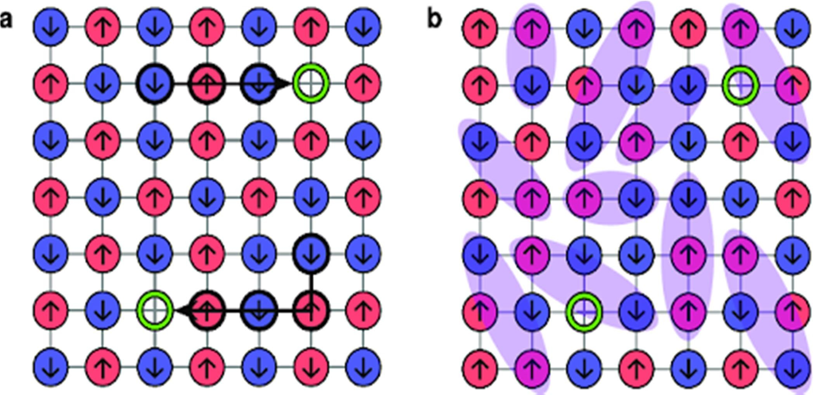
Fig. 2. Illustration of 2-D cartoon quantum tunneling of
Hubbard fermions. Source:
[12]
The first term represents the kinetic energy of electrons
$t$ between neighboring sites $\langle i,j \rangle$ with a
$a^{\dagger}_{i, \sigma}$ (creator) creating an election
occupation at site $i$ with spin $\sigma$ and $a_{j,
\sigma}$ (annihilator) removing an electron occupation at
site $j$ with spin $\sigma$ respectively. This is followed
by the second term $U$ of the potential energy from the
on-site Coulomb repulsion between electrons with opposite
spin using the number operator $n_{i, \sigma} =
a^{\dagger}_{i, \sigma} a_{i, \sigma}$ for particles with
spin $\sigma$ at site $i$ . The final term $\mu$ represents
the chemical potential term needed when describing arbitrary
electron fillings, not just half-fillings, and affects the
total number of particles. When half-filling, the Hubbard
model exhibits a Mott metal-insulator transition, taking the
system from a metal to an antiferromagnetic insulator.
Beyond the Mott transition, the Hubbard model provides
insights into diverse broken symmetry phases and phase
transitions in strongly correlated systems. The competition
parameters $\frac{U}{t}$ between the potential energy term
$U$ that favors localization and insulating behavior and the
kinetic energy term $t$ that favors delocalization and
metallic behavior, alongside the chemical potential $\mu$,
give rise to the rich physics of magnetism and
superconductivity. This framework of quantum lattices is
widely believed to contain the essential ingredients of
high-temperature superconductivity because of its delicate
competition between the parameters. Doping of charge strips
and superconductivity turned by parameter t′ has shown the
prediction of a Luther-Emery (LE) liquid that demonstrates a
close interplay between charge and superconductor
correlations
[13]
. The Hubbard model thus serves as a simplified theoretical
foundation for understanding complex interacting quantum
materials. However, the model’s simplicity is deceptive as
it is a mathematically difficult problem to solve due to its
many-body nature, with an exact solution only found in the
1D case
[14]
. A simple example of this model is to consider a system
with just two sites,
$$ \psi=|n_{1 \uparrow} n_{1 \downarrow} \rangle | n_{2
\uparrow} n_{2 \downarrow} \rangle $$
(2.3.3)
having $2^4$ possible states depending on the kinetic energy
determining how the initial filled each lattice is. This
state of an isolated quantum system with $n$ components is
represented by a state vector in a Hilbert space of
dimension $2^n$ possible states for $n$ qubits with each
qubit able to be in a superposition of 0 and 1 . If we want
to simulate the dynamics of a quantum system by discretizing
time into steps of length $\Delta t$ at each time step, we
need to multiply the state vector by the propagator matrix
corresponding to evolving the system for a time ∆𝑡.
Therefore, the propagator matrix has dimensions $2^n \times
2^n$ with the computation cost scaling as $O(2^n \times
2^n)$ (see Fig. 3). For most cases, this exponential scaling
makes the exact simulation of quantum systems with even 50 −
100 qubits completely impractical on classical computers due
to the exponential growth of the operator that leads to the
discussion of using optimization techniques.
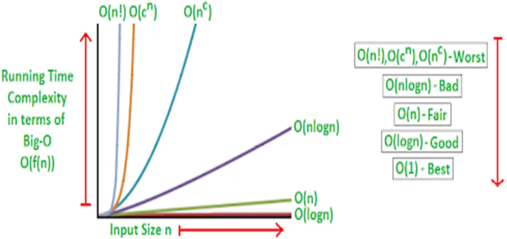
Fig. 3. Demonstration of Big-O complexities. Our goal is
to find a low computational cost towards the bottom of the
graph. Source:
[15]
III. Quantum Computing
A. Jordan Wigner-Mapping
To utilize quantum computing, we must transform the
Hamiltonian into a set of operations accessible or
understandable to quantum computers. Namely, we can use the
simple Jordan Wigner transformation for second quantized
Hamiltonians to map occupations to qubit orientations,
simulating fermionic systems on qubits and gates by using
Pauli-$X$ and -$Y$ to satisfy $a^{\dagger}_{i} | 0
\rangle_{i} = 0, a_{i} | 1 \rangle_{i} = 0,$ and
$a^{\dagger}_{i} | 1 \rangle_i = 0,$
$$ a^{\dagger}_{i} = \frac{X_i - i Y_i}{2}, a_i =
\frac{X_i + i Y_i}{2} . $$
(3.1.2)
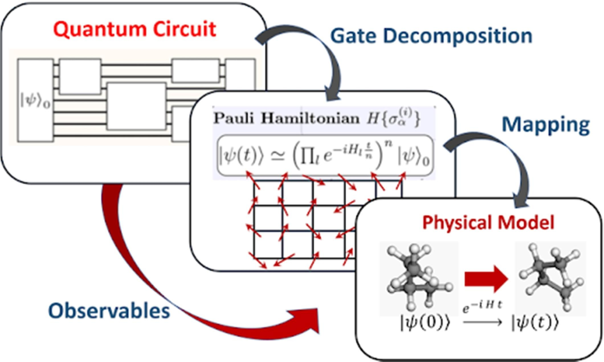
Fig. 4. Illustration of state preparation and mapping of
models with the intermediate step of transformation.
Source:
[16]
For this mapping to capture the antisymmetric
characteristics of fermions $a^{\dagger}_{i} a_j =
-a^{\dagger}_{j} a_i,$ we must intersperse Pauli-$Z$ to
remedy the fact that Pauli Operators do not commute for $XY
\ne -YX,$ but rather for $XZ = -ZX$ and $YZ = -ZY$:
$$ \displaylines{ a^{\dagger}_{1} = \frac{X_1 - i Y_1}{2}
\; \Huge\oplus \normalsize 1 \Huge\oplus \normalsize 1 \;
... \Huge\oplus \normalsize 1 \\ a^{\dagger}_{2} = Z_1
\Huge\oplus \normalsize \frac{X_2 - i Y_2}{2} \;
\Huge\oplus \normalsize 1 \Huge\oplus \normalsize 1 \; ...
\Huge\oplus \normalsize 1 \\ a^{\dagger}_{n} = Z_1
\Huge\oplus \normalsize Z_2 \Huge\oplus \normalsize ...
\Huge\oplus \normalsize \frac{X_n - Y_n}{2} . } $$
(3.1.3)
We get,
$$ X_i Y_i = i Z_i \newline \therefore n_i = a^{\dagger}_i
a_i = \frac{1-Z_i}{2} . $$
(3.1.4)
Over the Jordan-Wigner transformation, the Hubbard
Hamiltonian in equation (2.3.2) becomes
$$ \displaylines{ H = -\frac{t}{2} \sum_{\langle i,j
\rangle} Z_{j+1:i-1} (X_i X_j + Y_i Y_j) + \\ \frac{U}{4}
\sum_i (1-Z_i^{\uparrow})(1-Z_i^{\uparrow}) -
\frac{\mu}{2} \sum_{i, \sigma} (1-Z_i^{\sigma}) . } $$
(3.1.5)
Other mappings include the Bravyi-Kitaev
[17]
, Parity, and those that can perform more advanced qubit
reductions available in quantum computing softwares like
Qiskit
[18]
. From this transformation, we can break down the
Hamiltonian into two terms such that $H = H_0 + H_1,$ where
$H_0$ is the kinetic term, and $H_1$ the other two
interaction terms. Then, by applying the Trotter-Suzuki
decomposition, we get
$$ e^{-iHt} = \lim_{n \rightarrow \infty}(e^{-iH_0
\frac{t}{n}} e^{-iH_1 \frac{t}{n}})^n . $$
(3.1.6)
This allows us to approximate the time evolution operator by
breaking up the evolution into successive n short time steps
and repeating while taking larger n improves the accuracy of
the approximation. However, we can begin to see the
complexities and computational cost arising from
higher-order approximations. The natural instinct from this
is try to find optimization techniques to circumvent this.
B. Tensor Network Optimization
Now that we can convert our Hamiltonian into quantum
computing language, we must face the fundamental problem of
optimizing a quantum circuit: efficiently exploiting
parameters. We can solve this through differentiable
programming given hardware constraints by minimizing the
loss function that encodes the problem we want to solve,
$$ \alpha_{t+1} = \alpha_t \; - \eta \nabla_\alpha
\mathcal{L} (\alpha, t) $$
(3.2.1)
where $\alpha$ are the parameters, $\eta$ the learning rate,
and $\nabla \mathcal{L}$ the gradient operator on the loss
function. This loss function can be largely responsible for
the feedback on how well a quantum circuit is performing
given a set of parameters, updating it each time for
optimization, and is commonly used in machine learning. We
can use tensor networks (TN), useful mathematical, graphical
representations of multi-dimensional arrays that can store
information through tensor nodes in a computation graph. We
can significantly enhance optimization by exploiting
automatic differentiation in the tensor computation graph.
This technique of backpropagation exploits the chain rule of
a partial differential to propagate the gradient back from
the network output and calculate the gradient of the weight
respectively
[19]
. With the forward pass being
$$ |\psi\rangle=U(\alpha)|\psi_0\rangle \newline \langle O
\rangle = \langle \psi |O|\psi \rangle $$
(3.2.2)
where $U(\alpha)$ representing a quantum circuit with
parameters $\alpha$ acting on initial state $| \psi_0
\rangle$ to produce output state $| \psi \rangle$ , followed
by the expectation value of $O$ , a physical observable that
could be represented by a Hermitian operator. We can begin
to see the similarities with the original system quantum
evolution representation for application,
$$ \psi(t)=e^{-iHt} \psi(0). $$
(3.2.3)
From this, the implications of applying backpropagation
through the expectation value computation to get gradients
with respect to circuit parameters tying to the simulation
of quantum systems are obvious. After this forward pass, we
can backpropagate (backwards pass) this through the chain
rule and see the loss function $L$ depending on the
expectation value $\langle O \rangle$,
$$ \frac{\partial L}{\partial \alpha} = \frac{\partial
L}{\partial \langle O \rangle} = \frac{\partial \langle O
\rangle}{\partial \alpha} $$
(3.2.4)
Representing this in tensor networks through the traversing
of data flow as in nodes, we can visually see the chain rule
and reverse-mode automatic differentiation
[20]
,
$$ \displaylines{ \alpha \rightarrow W^1 \rightarrow W^2
\ldots W^n \rightarrow L \newline \frac{\partial
L}{\partial \alpha} = \frac{\partial L}{\partial W^n}
\frac{\partial W}{\partial W^{n-1}} \ldots \frac{\partial
W^1}{\partial \alpha}. \newline \leftarrow \leftarrow
\leftarrow \leftarrow \leftarrow \leftarrow \leftarrow }
$$
(3.2.5)
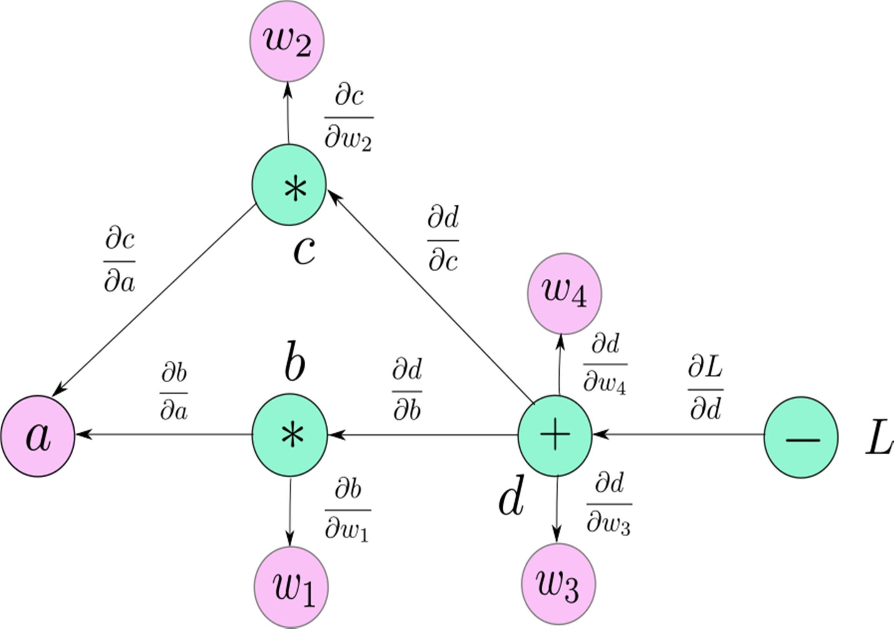
Fig. 5. Illustration of tensor networks through
backpropagation to minimize a loss function. The
transaction channels can be represented by multiple
tensors that can split off respectively depending on
intended algorithms that are widely applicable in
machine learning. We can also visually see the
backpointing technique in storing checkpoints. Our
single $\alpha$ tensor network serves as a fundamental
representation in equation (3.2.5). Source:
[21]
We can also see that the resulting relationship of $O$
relating to physically meaningful observable and arbitrary
intermediate tensor $W$ are analogous in the role they play.
In order to reduce memory usage, we can employ the
backpointing technique, conceptually like checkpointing (see
Fig. 5), where one can simply store the tensor every few
steps in the main node. Relying on differentiating through
these tensor networks has shown state-of-the-art
calculations of specific heat of the Ising model,
variational energy, and magnetization of the
antiferromagnetic Heisenberg model
[20]
as an efficient compression of quantum states.
C. Automatically Differentiable Quantum Circuits Tensor
Networks (ADQC-TN)
Now that we have discussed optimization, how can we leverage
these tensor networks and automatically differentiate them
in quantum circuits? We have the tools of TN to simulate
quantum models with ample Hilbert space through the
backpropagation technique to reduce complexity, but what do
we do with them? The simple answer is reframing our thinking
to apply to quantum circuits.
Remember our goal is to simulate a model onto quantum
circuits,
$$ |\psi_{tar}=I(\alpha)|\psi_{evol}\rangle $$
(3.3.1)
where $| \psi_{tar} \rangle$ is the target state evolved
from operation $U(\alpha)$ on $| \psi_{evol} \rangle$ state.
We want to minimize the error between the target and evolved
state,
$$ F=-\frac{1}{N}\ln | \langle \psi_{tar} |
U(\alpha)|\psi_{evol}\rangle| $$
(3.3.2)
where $F$ is the negative logarithmic fidelity that
quantifies the closeness between the $| \psi_{tar} \rangle$
and $| \psi_{evol} \rangle$ states over operation
$U(\alpha)$ . Therefore, we just need to find a particular
set of unitary gates or operations on $\delta^*$ parameters
that minimizes $F$ , our respective loss function. This can
be done by updating the gates towards the opposite direction
of their gradients and integrated with TN
[22]
,
$$ \displaylines{ \delta^{\boldsymbol{\cdot}} = U \Lambda
V^{\dagger} \newline \delta^{\boldsymbol{\cdot}}
\leftarrow \delta^{\boldsymbol{\cdot}}_0 - \eta
\frac{\partial F}{\partial \delta^{\boldsymbol{\cdot}}} }
$$
(3.3.3)
where $\delta^{\cdot}$ projects to a set of unitary gate
$\delta^*$ under $Tr(\delta^{\cdot} \delta)$ to be maximized
from constraint $\delta$ . This is then fed into the
backpropagation integrated with TN. All we have to do after
is apply our desired Hamiltonian into this system and
compare it with traditional methods
IV. Applications
A. Variational Quantum Eigensolver (VQE)
One current, powerful application is the Variational Quantum
Eigensolver (VQE)
[23]
, a hybrid quantum-classical algorithm to find a
Hamiltonian’s minimum eigenvalue and eigenstate. VQE aims to
minimize energy by optimizing a set of parameters $\alpha$
for a chosen ansatz quantum circuit. The circuit has two
purposes: prepare the ansatz wave function $| \psi (\alpha)
\rangle$ and measure the expectation value $\langle \psi
(\alpha) | H | | \psi (\alpha) \rangle$ which gives the
energy. A classical optimizer uses this measurement to
adjust $\alpha$ to lower the energy toward the true ground
state. Starting with initial parameters $| \psi
(\alpha_0)\rangle = e^{-iH | \psi (\alpha_0) \rangle} |
\psi_1 \rangle$ the ansatz circuit prepares the trial
wavefunction, where $| psi_1 \rangle$ is a simple starting
state. In variational quantum algorithms like VQE, the loss
function is typically the expectation value and minimizing
the loss, we find the ground state energy. Measuring the
expectation energy $E(\alpha_0)$ provides an upper bound on
the true ground state energy:
$$ E(\alpha_0) = \langle\psi(\alpha_0)|H|\psi
(\alpha_0)\rangle \ge E_0 $$
(4.1.1)
The classical optimizer then generates new parameters
$\alpha_1,$ using $E(\alpha_0)$ to guide it closer to the
minimum. This optimization loop of state preparation,
measurement, and classical processing repeats until
converging on an ansatz $| \psi (a^*) \rangle$ that
minimizes $E(\alpha) \approx E_0$ .This hybrid quantum
algorithm is useful for quantum chemistry and optimization
problems that looks analogous to the issues we can solve
with ADTNAQCs. VQE implementations on existing quantum
hardware are limited by qubit error rates, the number of
qubits available, and the allowable gate depth
[24]
, and new techniques implementing better optimization
methods and representation of these compact spaces like
ADQCs and TNs are necessary for the continued further
application of quantum computing despite quantum hardware
restrictions as shown in Fig. 6.
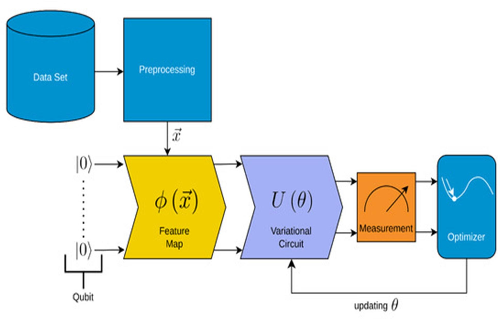
Fig. 6. Illustration of the application of quantum
computing for manipulating data sets. We can visually see
here the usage of optimization techniques and programming
for a desired output, dependent on the algorithm. Source:
[25]
B. Modeling
The advent of Automatically Differentiable Quantum Circuits
(ADQCs) allows for preparing many-qubit target quantum
states by optimizing gates through differentiable
programming via backpropagation. ADQCs introduce
unconstrained, differentiable latent gates projected to
unitary gates satisfying quantum constraints, and therefore
optimizing these latent gates layer-by-layer yields
efficient state preparation using ADQCs, obtains low
fidelities, and can reduce matrix product state (MPS)
representations with a compression ratio of $r \sim
O(10^{-3})$
[22]
. Likewise, tensor networks are a powerful mathematical tool
that can provide a compact representation of
high-dimensional quantum states and quantum many-body
physics
[26][27]
by formulating tensor networks as differentiable computation
graphs. A key advantage is directly computing tensor network
output gradients, enabling the evaluation of observables.
This yields optimal performance for infinite 2D tensor
networks and finding the ground states of lattice models
[20]
. When integrated with ADQCs, TN can demonstrate intelligent
quantum circuit construction combining machine learning
techniques, a promising approach for training and optimizing
quantum systems using modern differentiable programming.
Such applications can already be seen in the development of
built-in ADQC programs such as Yao
[28]
, which can optimize a variational circuit with 10,000
layers using reverse-mode AD and constructing 20 sites
Heisenberg Hamiltonian in approximately 5 seconds. By
utilizing this paper's framework and quantum computing
softwares, one can model and optimize their desired models.
V. Future Research
There are two main sectors of future research from ADQC-TN
optimization on models: other physical models and applicable
optimization. Future research into non-local Hamiltonians
and other respective techniques and approximations extends
to models beyond the 2D Hubbard model. Similarly, higher
dimensions and more complex, accurate models are good
starting points. Having a framework to see which methods
apply to what, so that it can be tailored for real
applications, would be branching out. The frame-work
proposed for optimizing parameters in this paper relies
mainly on quantum computing software. The work in more
advanced and enhanced libraries and programing could
determine usability, automation, utilization, and
integration into real-world systems. New loss functions,
flexible architectures, and alternative quiet mappings, in
combination with more methodological and pragmatic
engineering fronts, will aid in the discovery and
application of accurate, performant quantum models.
Furthermore, future research can also be seen in real-world
applications of the techniques discussed in this paper. The
integration of machine learning methods with automatic
differentiation and tensor networks using quantum circuits
can help in model tuning, complex algorithms, and
optimization in the fields of artificial intelligence and
quantum simulation. This can already be seen in
[29]
, where hybrid neural network weight tensorization can be
represented by a tensor-train data format to compress
parameters that developed an energy-efficient machine
learning accelerator. More motivation can be seen in
[30]
for the intellectual combination of tensor networks and
neural networks for potential applications in information
fusion and more specifically, what neural networks has
already seen development like natural language processing
and robotics can be improved.
VI. Discussion
Further technical examination of this ADQC-TN approach can
reveal several aspects of the modeled Hamiltonian and
optimization as a field. Firstly, alternative
transformations such as the Bravyi-Kitaev algorithm offer
potential for more efficient reductions that could reduce
overall circuit depth, and more detailed analysis
quantitatively comparing circuit complexity under different
fermionic qubit mappings could in advantageous
transformations for a given model. Secondly, this tensor
network architecture design space is extensive and dependent
heavily on depth, entanglement, connectivity, and the
desired model. Architectures balancing expressiveness and
trainability may be particularly well-suited, but systematic
evaluation of tensor network configurations' usage will be
essential in creating performant models applicable beyond
physical domains. Thirdly, while mathematically convenient,
reliance on fidelity as the sole optimization metric is not
ideal and is best alongside incorporating alternative
domain-specific loss functions for training towards precise
experimental objectives under a given objective. Fourthly,
while simplified, differentiable programming is still in its
infancy and requires more development on its widespread
software, meaning modeling difficulty and complexity will
depend similarly on the software used.
This paper lays a framework for optimizing the 2-D Hubbard
Hamiltonian model implementable in quantum programming
languages. For other models alike, it can be done in three
simplistic steps: This paper lays out a framework for
optimizing the 2-D Hubbard Hamiltonian model implementable
in quantum programming languages. For other models alike, it
can be done in three simplistic steps:
Integrate our desired Hamiltonian model and utilize any
unique simplifications and/or approximations in equation
(2.3.2).
Transform that Hamiltonian to qubit (QC) language via
the desired transformation seen in equation (3.1.5).
Apply an optimization method to find the desired output
and/or parameters of the Hamiltonian model using
equation (3.3.3).
VII. Conclusion
Pursuing a simplified framework in leveraging optimization
and programming techniques that can be used to transition
from theoretical quantum physics to applied quantum
computing is essential in further understanding the
promising use of new quantum simulation methods and
integration of quantum hybrid methods over just classical
simulations. This paper has proposed a framework for
optimizing parameters of the 2D Hubbard model by integrating
automatically differentiable quantum circuits with tensor
networks. We reviewed techniques for gradient- based
optimization via backpropagation through ADQCs to enable
efficient tuning of quantum circuits. The Hubbard model was
transformed into qubit operators using the Jordan-Wigner
transformation to implement on a quantum circuit. By
minimizing the fidelity error between target and evolved
states, the ADQC-TN framework can optimize model parameters
to match experimental measurements. The proposed ADQC-TN
optimization framework for simulating the 2D Hubbard model
offers a path forward despite hardware constraints. As
quantum computing matures, techniques like differentiable
programming will help implement precise quantum models to
revolutionize our understanding of complex quantum
materials. New research into complex quantum systems and
their applications in quantum computing is necessary for the
diversity of software and paradigms. Techniques alike
leverage what is already known but make it better and more
applicable to reduce problems from new growing demands like
computational complexity costly simulations, and is
scalable, to name a few. By outlining a methodology of the
potential application of automatic differentiation using
tensor networks in models like the Hubbard model, this paper
summarizes the problems faced and current, novel solutions
to it. This can go beyond simulating just local models and
be more applicable to other parameters in increasing
complexity. As the times of our technology try to catch up,
looking from a different perspective and way of thinking
will help in the endeavor to make sense of and apply these
innovations despite the limitations of our time.
VIII. References
D. Wecker, M. B. Hastings, N. Wiebe, B. K. Clark, C.
Nayak, and M. Troyer, "Solving strongly correlated
electron models on a quantum computer," Phys. Rev. A,
vol. 92, no. 6, pp. 062318, Dec. 2015, doi:
10.1103/PhysRevA.92.062318.
C. W. Bauer et al., "Quantum Simulation for High
Energy Physics," arXiv, Apr. 07, 2022, doi:
10.48550/arXiv.2204.03381.
J. Preskill, "Quantum Computing in the NISQ era and
beyond," Quantum, vol. 2, pp. 79, Aug. 2018, doi:
10.22331/q-2018-08-06-79.
M. Reiher, N. Wiebe, K. M. Svore, D. Wecker, and M.
Troyer, "Elucidating reaction mechanisms on quantum
computers," Proc. Natl. Acad. Sci. U.S.A., vol. 114,
no. 29, pp. 7555—7560, Jul. 2017, doi:
10.1073/pnas.1619152114.
J. Fraxanet, T. Salamon, and M. Lewenstein, "The
Coming Decades of Quantum Simulation," 2022, doi:
10.48550/ARXIV.2204.08905.
C. W. Bauer et al., "Quantum Simulation for High
Energy Physics," PRX Quantum, vol. 4, no. 2, p.
027001, May 2023, doi: 10.1103/PRXQuantum.4.027001.
Q. Liu, "Comparisons of Conventional Computing and
Quantum Computing Approaches," HSET, vol. 38, pp.
502—507, Mar. 2023, doi: 10.54097/hset.v38i.5875.
O. Kyriienko, A. E. Paine, and V. E. Elfving,
"Protocols for Trainable and Differentiable Quantum
Generative Modelling," arXiv, Feb. 16, 2022. Accessed:
Aug. 21, 2023. doi. 10.48550/arXiv.2202.08253.
E. Cocchi et al., "Equation of State of the
Two-Dimensional Hubbard Model," Phys. Rev. Lett., vol.
116, no. 17, p. 175301, Apr. 2016, doi:
10.1103/PhysRevLett.116.175301.
V. Celebonovic, "The two-dimensional Hubbard model: a
theoretical tool for molecular electronics," J. Phys.:
Conf. Ser., vol. 253, p. 012004, Nov. 2010, doi:
10.1088/1742-6596/253/1/012004.
C. Miles et al., "Correlator convolutional neural
networks as an interpretable architecture for
image-like quantum matter data," Nat Commun, vol. 12,
no. 1, p. 3905, Jun. 2021, doi:
10.1038/s41467-021-23952- w.
H.-C. Jiang and T. P. Devereaux, "Superconductivity in
the doped Hubbard model and its interplay with
next-nearest hopping t'," Science, vol. 365, no. 6460,
pp. 1424—1428, Sep. 2019, doi:
10.1126/science.aal5304.
X.-W. Guan, "Algebraic Bethe ansatz for the
one-dimensional Hubbard model with open boundaries,"
J. Phys. A: Math. Gen., vol. 33, no. 30, pp.
5391—5404, Aug. 2000, doi:
10.1088/0305-4470/33/30/309.
J. W. Z. Lau, K. H. Lim, H. Shrotriya, and L. B. Kwek,
"NISQ computing: where are we and where do we go?,"
AAPPS Bull., vol. 32, no. 1, p. 27, Sep. 2022, doi:
10.1007/s43673-022-00058-z.
A. Tranter, P. J. Love, F. Mintert, and P. V. Coveney,
"A Comparison of the Bravyi— Kitaev and Jordan—Wigner
Transformations for the Quantum Simulation of Quantum
Chemistry," J. Chem. Theory Comput., vol. 14, no. 11,
pp. 5617—5630, Nov. 2018, doi:
10.1021/acs.jctc.8b00450.
M. Watabe, K. Shiba, M. Sogabe, K. Sakamoto, and T.
Sogabe, "Quantum Circuit Parameters Learning with
Gradient Descent Using Backpropagation," 2019, doi:
10.48550/ARXIV.1910.14266.
H.-J. Liao, J.-G. Liu, L. Wang, and T. Xiang,
"Differentiable Programming Tensor Networks," Phys.
Rev. X, vol. 9, no. 3, p. 031041, Sep. 2019, doi:
10.1103/PhysRevX.9.031041.
P.-F. Zhou, R. Hong, and S.-J. Ran, "Automatically
Differentiable Quantum Circuit for Many-qubit State
Preparation," 2021, doi: 10.48550/ARXIV.2104.14949.
J. Tilly et al., "The Variational Quantum Eigensolver:
a review of methods and best practices," 2021, doi:
10.48550/ARXIV.2111.05176.
J. M. Clary, E. B. Jones, D. Vigil-Fowler, C. Chang,
and P. Graf, "Exploring the scaling limitations of the
variational quantum eigensolver with the bond
dissociation of hydride diatomic molecules," Int J of
Quantum Chemistry, vol. 123, no. 11, p. e27097, Jun.
2023, doi: 10.1002/qua.27097.
S. Raubitzek and K. Mallinger, "On the Applicability
of Quantum Machine Learning," Entropy, vol. 25, no. 7,
p. 992, Jun. 2023, doi: 10.3390/e25070992.
R. Orus, "A Practical Introduction to Tensor Networks:
Matrix Product States and Projected Entangled Pair
States," 2013, doi: 10.48550/ARXIV.1306.2164.
R. Orus, "Tensor networks for complex quantum
systems," 2018, doi: 10.48550/ARXIV.1812.04011.
X.-Z. Luo, J.-G. Liu, P. Zhang, and L. Wang, "Yao.jl:
Extensible, Efficient Framework for Quantum Algorithm
Design," 2019, doi: 10.48550/ARXIV.1912.10877.
H. Huang, L. Ni, and H. Yu, "LTNN: An energy efficient
machine learning accelerator on 3D CMOSRRAM for layer-
wise tensorized neural network," in 2017 30th IEEE
International System-on-Chip Conference (SOCC),
Munich: IEEE, Sep. 2017, pp. 280—285. doi:
10.1109/SOCC.2017.8226058.
M. Wang, Y. Pan, Z. Xu, X. Yang, G. Li, and A.
Cichocki, "Tensor Networks Meet Neural Net-works: A
Survey and Future Perspectives," 2023, doi:
10.48550/ARXIV.2302.09019.
A quantitative study: How inflammatory diet affects different
neurotransmitters' function and their relation to memory
disorders.
Abdelrahman Gamal (Ismailia STEM high school)
Adam Hassan (Fayoum STEM high school) Karim Morgan
(Gharbiya STEM high school) Mentor:
Habiba Sorour
Abstract
Alzheimer's disease has been a case study for a long time,
discoveries brought hypotheses and reasons related to the
disease mechanism. This study aims to bring a clear
understanding of the significant impact of human actions
such as diet and Alzheimer's disease. Diet indirectly
impacts the human body and significantly the brain, in the
case of memory disorder diet affects the neurotransmitters
that play an important role in the function of the brain and
memory. The study used various relations between variables,
hypotheses show that a transmembrane protein plays a key
role in neurodegeneration and later it disturbs the
neurotransmitter's function. Through the study, information
showed that diet styles cause oxidative stress which is
considered one of the main reasons that cause
neurodegeneration. The study shows the impact of each
variable on the other and leads these findings to the main
case study of Alzheimer's disease.
I. Introduction
The brain is an Extortionary organ as it is responsible for
thoughts, memories, and movement of the body systems and
function, furthermore, the brain health acquires attention
and care. Due to the brain's vulnerability to some
disorders. cognitive brain disorders occur due to the
detectable destruction of brain connections or networks
between neurons, and neurodegenerative diseases such as
Alzheimer's disease (AD), Parkinson's Disease (PD),
Schizophrenia, Depression, and Multiple Sclerosis (MD). Some
of these disorders are mainly caused by the imbalance of the
neurotransmitter levels or the disturbance in its function.
Neurotransmitters are basically messengers, molecules in the
nervous system are used to transmit messages between neurons
through synapses.
Alzheimer's disease is a cognitive disorder, where About 55
million people have dementia, and %60 of this population has
Alzheimer's disease. The onset stage of this disease is
memory loss, and in later stages, the patients could have
problems with speaking, eating, and swallowing or the
disability to walk.
Yet the neurological disorders in some cases of its
distributions are in some point revolve around human actions
and habits such as diet and how it could increase the
chances of Alzheimer's disease development. This paper will
focus on contributing relations and mechanisms in terms of
represented information on the impact of diet on Alzheimer's
disease and presenting relations between different variables
that have an important role in the study, variables due to
diet impact such as oxidative stress others belong to
Alzheimer's disease causes such as amyloid beta, and
acetylcholine. The study contributes to the relationship
between these variables and their significant role in the
case of Alzheimer's disease and diet.
i. Inflammatory Diet
The body's natural, important defense against microbial
infections, tissue damage, and trauma is called
inflammation. It supports the body's ability to recover from
injury and protect itself. Inflammation promotes the immune
response by enlisting innate immune cells that are capable
of producing inflammatory cytokines (i.e., signaling
proteins). Particularly, the innate immune system of the
body is under the control of the gene transcription factor
kappaB (NF-κB). However, Inflammation can be harmful if it
persists for a long time. When (NF-κB) is continuously
activated as a result of consuming inflammatory food,
inflammation becomes chronic. Chronic inflammation causes a
dysregulated immune response, which disturbs physiological
functions that are meant to be homeostatic.
Inflammation hugely contribute to causing diseases such as
inflammatory bowel disease (IBD), [diabetes mellitus],
[asthma], cardiovascular diseases, [depression,] Alzheimer's
disease (AD), and different types of cancer[1]Inflammatory and anti-inflammatory foods:
Diet can influence different stages of inflammation.
Inflammation can result from being exposed to environmental
toxins, aging, or chronic stress.
On one hand, the over consuming of inflammatory foods can
cause inflammation, including red meat, processed meat,
snack cakes, pies, cookies and brownies, bread and pasta
made with white flour, deep-fried items — French fries and
fried chicken —, and high-sugar food — such as candy, jelly,
syrup, soda, bottled or canned tea drinks, and sports
drinks.
On the other hand, healthy eating patterns help put
inflammation down and stay healthier. These patterns can be
achieved through being committed to consuming particular
types of supplements found in food, including Omega-3 —
found in different types of fish, nuts, and seeds-, Vitamin
C — found in fruits and vegetables —, and polyphenols —
found in the wise consuming of tea, coffee, and dark
chocolate.[2]
ii. Neurotransmitters
Mechanism: Neurotransmitters are the nervous system's way of
delivering messages to the rest of body organs and parts
through nerve cells. Each neurotransmitter is responsible
for a function, which may be moving a certain muscle,
activating memory or appetite, controlling blood pressure,
.... etc.
[3]
They are also involved in the processes of early human
development, including neurotransmission, differentiation,
the growth of neurons, and the development of neural
circuitry
[9]
. Certain neurotransmitters may appear at different points
of development. For example, monoamines, neurotransmitters
responsible for controlling basic emotions and affecting
major depressive disorders, are present before the neurons
are differentiated
[9]
.
At presynaptic nerve terminals, neurotransmitters are
primarily released via vesicular action. Neurotransmitters
are released into the synaptic cleft mainly via
calcium-evoked exocytosis of presynaptic vesicles. The
neurotransmitter- containing vesicles are attached to the
plasma membrane by active zones, specialized regions on the
presynaptic plasma membranes. Action potentials cause
calcium to enter the presynaptic cleft, which causes the
active zones to fuse with the vesicles and release
neurotransmitters. The fusion of neurotransmitter-containing
vesicles and the active zone is mediated by several
proteins. The exocytosis of neurotransmitters from the
presynapse may be inhibited and activated as well by these
proteins; Synaptobrevin-2, SNAP-25, and syntaxin-1
collectively make up the soluble N-ethylmaleimide sensitive
factor attachment protein receptors (SNAREs), which are
essential for membrane fusion and ultimately exocytosis.
[4]Acetylcholine and Serotonin: The
neurotransmitter acetylcholine (ACh) is primarily
responsible for memory-related processes. Furthermore, it is
crucial for cognitive, memory, and learning processes in
brain nerve cells. It moves voluntary muscle, muscle
movement you control, all over the human body by binding to
muscarinic receptors. It also regulates heart contractions
and blood pressure, lowers heart rate, moves food by
contracting intestinal muscles, increases stomach and
intestine secretions, causes glands to secrete substances
like tears, saliva, milk, sweat, and digestive juices,
regulates the flow of urine, and contracts muscles that
control nephrons.
On the other hand, it causes skeletal muscle to contract by
binding to nicotinic receptors, which releases adrenaline
and norepinephrine from the adrenal glands, activating the
sympathetic nervous system in humans.
[5]
Serotonin, also referred to as 5- hydroxytryptamine (5-HT),
is a monoamine neurotransmitter. In addition to its
hormone-like properties, it plays a part in morphogenesis,
the biological process by which both body structure and form
emerge during embryonic development. It also has a
significant impact on a number of other bodily processes,
such as mood regulation (when serotonin levels are normal,
you feel more alert, emotionally stable, happier, and
calmer, and vice versa), regulating sleep (along with
dopamine, serotonin helps the brain regulate how well and
how long a person sleeps), wound healing (serotonin narrows
blood vessels, which slows blood flow and causes clots to
form), and bone density (high levels of serotonin lead to
weak bones and vice versa).
[6]
iii. Alzheimer's disease
Alzheimer's disease is a progressive brain disorder that
deteriorates with time, characterized by significant changes
in the brain due to the accumulation of certain protein
deposits. This process ultimately leads to brain atrophy
and, in some cases, brain cell death
[13]
. Gradual decline in memory, cognitive abilities, and social
skills is a hallmark of Alzheimer's, making it the leading
cause of dementia
[13]
.
In the United States, approximately 6.5 million individuals
aged 65 and older live with Alzheimer's disease, with more
than 70% of them being 75 years or older
[14]
. Globally, of the roughly 55 million people living with
dementia, an estimated 60% to 70% are believed to be
affected by Alzheimer's disease
[14]
.
On a global scale, the year 2020 witnessed over 55 million
individuals grappling with dementia. According to data from
Alzheimer's Disease International (ADI), the number of
people afflicted with dementia has nearly doubled
approximately every two decades
[14]
.
The primary symptom associated with Alzheimer's is memory
loss. In its early stages, individuals with the disease may
recognize their struggles with memory recall and clear
thinking. Alzheimer's-induced changes in the brain
progressively lead to challenges in six key areas: memory,
cognitive abilities, decision-making, planning and executing
tasks, behavioral shifts, and the loss of fundamental skills
[12]
.
However, according to (ADI) research, the majority of people
who are now living with dementia have not received a formal
diagnosis. Only 20-50% of dementia cases are recognized and
documented in primary care in high-income nations
[14]
. This treatment gap is undoubtedly considerably wider in
low and middle-income nations, with one research in India
claiming that 90% of patients go misdiagnosed
[14]
. If these figures are extrapolated to other nations, it
appears that almost three-quarters of people with dementia
have not been diagnosed, and hence do not have access to the
treatment, care, and organized support that a formal
diagnosis may bring. Alzheimer's disease patients typically
live between three and eleven years after diagnosis
[14]
. However, some people survive for 20 years or more
[13]
. The degree of disability at the time of diagnosis can have
an impact on life expectancy
[13]
. Untreated vascular risk factors, such as hypertension, are
linked to a higher rate of Alzheimer's disease progression
[12]
.
Alzheimer's disease is classified into five detailed stages:
The first stage: Preclinical Alzheimer's disease: During
this time, neither the patient nor those around them will
notice any symptoms
[12]
. This stage of Alzheimer's can last for years, possibly
even decades. New technologies can identify the tangles
development, which develop when tau proteins change shape
and organize into structures. These are hallmarks of
Alzheimer's disease
[12]
.
Additional biomarkers for Alzheimer's disease have been
discovered. These are present in blood tests and may suggest
a higher risk of disease
[12]
. These biomarkers can be used to help confirm an
Alzheimer's disease diagnosis, usually after symptoms
develop
[12]
. Newer imaging techniques, biomarkers and genetic tests
will become more important as new treatments for Alzheimer's
disease are developed
[13]
.
Second stage: Mild cognitive impairment due to Alzheimer's
disease: Mild cognitive impairment causes minor deficits in
memory and thinking skills
[12]
. These modifications aren't large enough to have an impact
on job or relationships
[12]
. Memory lapses may occur in people with MCI when it comes
to knowledge that is normally easily remembered
[12]
. This could include recent discussions, activities, or
appointments.
Individuals with Mild Cognitive Impairment (MCI) may also
encounter challenges in gauging the time needed for various
activities. Estimating the number or sequence of steps
required to complete a task can become problematic, and
making well-informed decisions might grow more challenging
[12]
.
It's important to note that not everyone with MCI progresses
to Alzheimer's disease. Typically, MCI is diagnosed based on
a thorough assessment of symptoms and the clinical judgment
of healthcare professionals. However, if necessary, the same
diagnostic tests employed to identify early-stage
Alzheimer's disease can also be used to ascertain whether
MCI is a result of Alzheimer's disease or another underlying
cause.
Moving on to the third stage: Mild dementia attributed to
Alzheimer's disease. Alzheimer's disease is often recognized
during the initial phases of mild dementia. At this point,
both family members and medical professionals observe
significant difficulties in memory and cognitive reasoning
[12]
. These symptoms notably impede everyday functioning.
This stage of detecting memory loss of recent activities,
trouble with problem solving and sound judgment, changing
personality, and getting lost or misplacing belongings
[12]
.
Fourth stage: Moderate dementia due to Alzheimer's disease:
People get more confused and forgetful during the moderate
dementia stage of Alzheimer's disease. They begin to require
more assistance with daily activities and self-care
[13]
.
Fifth stage: Severe dementia due to Alzheimer's disease: It
is the late stage of Alzheimer's disease, where mental
function continues to decline. The disease is also having an
increasing impact on movement and physical capacities
[12]
.
Patients in this stage lose the ability to communicate, and
experience a decline in physical abilities, for instance,
they cannot walk without assistance
[12]
. Moreover, they require daily assistance and personal care
[13]
.
II. Methods
The study contributes the different relation between
variables and how these variables impact each other to
better understand the mechanism of Alzheimer disease, with a
clear understanding of these relations, the study could
demonstrate the significant impact of diet on Alzheimer's
Disease. The aim connection is between diet and Alzheimer's
Disease, the variable relation is the connection dots which
start with Amyloid- β as the key role in Alzheimer's disease
pathogenesis and considering the role of the
neurotransmitters. On the other side of the study, the diet
has various styles with each having its significance though
this study contributes the diet styles that have a
significant correlation with Alzheimer's disease, in terms
of the diet styles such as vegetarian diet that cause
oxidative stress which is responsible for the inflammation
and neurodegenerative disorders in the neurons. The
significant contribution is the experimental data of the
vegetarian diet food and its impact on disturbing vitamins
and mineral levels in the body, in that matter, vitamins
deficiency such as vitamin B12 and vitamin D that vegetarian
diet food lack, these vitamins absent or deficiency could
increase the risk of Alzheimer's disease.
(I) Role of Amyloid- β in Alzheimer's disease pathogenesis
Figure 1: represent the stages of APP cleavage in the
neuron membrane
Amyloid β (Aβ) is considered a critical reason for the
development of Alzheimer's disease (AD) the senile plaques
(SPs) and intracellular neurofibrillary tangles (NFTs),
which results in the loss of neurons and synapses. The SPs
are formed by aggregation of (Aβ) as some studies propose
that it is a small protein composite of 39-43 amino acids
[18]
.
At (B) phase in Figure 1: represents the
two cleavage processes of Amyloid precursor protein (APP),
it is a transmembrane glycoprotein with a large luminal
domain and a short cytoplasmic domain. In processing of
cleaving the (APP) and Aβ formation, APP could go through
either an amyloidogenic or non-amyloidogenic pathway
[18]
.
The amyloidogenic pathway is the process of Aβ formation, in
this pathway APP is firstly cut by β-secretase, producing
soluble β-APP fragments (APPβ) and a C-terminal β fragment
(C99), C99 is further cut by γ-secretase, generating APP
intracellular domain (AICD) and Aβ as a non-soluble fragment
[3]
.
The non-amyloidogenic pathway is another way to prevent the
formation of Aβ, as APP is firstly cut by α-secretase within
the Aβ domain, producing soluble α-APP fragments (APPα) and
C-terminal fragment α (C83), C83 is then cleaved by
γ-secretase
[3]
.
i. Biochemistry of Amyloid β-Protein and Amyloid Deposits in
Alzheimer's Disease
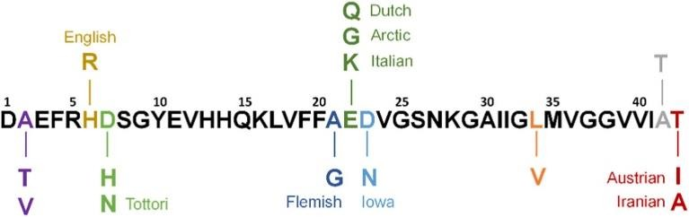
Figure 2: code sequence of amyloid plaques
Amyloid (A) is a 39-43 residue amyloidogenic peptide that
is deposited in the extracellular amyloid plaques
[6]
, whose 1-letter code sequence is shown in
Figure 2. That defines the brain of
people with Alzheimer's disease (AD). On chromosome 21,
there is the gene for amyloid beta precursor protein.
Moreover, it is formed by the enzymatic cleavage of APP,
the Amyloid Precursor Protein, a type-1 transmembrane
protein produced in many organs, particularly the central
nervous system (CNS)
[6]
.
Figure 3: microscopy image of a neurotic (senile) plaque
in the cortex of an Alzheimer's patient
According to some studies on modern research on the
fundamental mechanism of Alzheimer's disease (AD). The
meningovascular amyloid subunit in Down's syndrome brains
was the same "β-protein," as they had dubbed it. Glenner
drew attention to this evidence of a crucial biochemical
link between Down's syndrome and AD, a theory he had
championed in a foresighted paper in Medical Hypotheses as
early as 1979 (Glenner 1979)
[15]
. Glenner reasoned that since trisomy 21 caused an
accumulation of Alzheimer-type A in arteries and plaques,
familial AD may well be caused by a deficiency in the
-protein precursor on this chromosome. Glenner omitted to
mention the variability of familial types of AD and the
possibility that many cases may not be genetically
determined, at least at the time.
Figure 3 represents a Confocal microscopy
image of a neurotic (senile) plaque in the cortex of an
Alzheimer's patient that has been three- dimensionally
rebuilt. Amyloid -protein is colored red by an antibody to
identify extracellular amyloid, and tau is colored green
by an antibody to reveal closely related dystrophic
neurites. The plaque core, it should be noted, is not a
single, porous mass of amyloid, but rather is broken up
and contains aberrant cell processes intercalated therein
[8]
.
ii. Amyloid beta and acetylcholine
Figure 4: Aβ and cholinergic transmission
Figure 4 shows the Targets of Aβ that
modulate cholinergic transmission:
(1) Aβ reduces the activity of pyruvate dehydrogenase, an
enzyme that generates acetyl coenzyme A (CoA) from
pyruvate, (2) Aβ reduces high-affinity uptake of choline;
(3) long-term or high-dose exposure to Aβ reduces activity
of the choline acetyltransferase (ChAT) enzyme; (4) Aβ
reduces acetylcholine (ACh) content; (5) Aβ reduces ACh
release from synaptic vesicles (SV); (6) Aβ impairs
muscarinic M1-like signaling. AChE = acetylcholinesterase,
Ch U = site of choline uptake, M2 = presynaptic muscarinic
M2 receptor, N = presynaptic nicotinic receptor, PtdCho =
phosphatidylcholine.[16]
The studies of APP and Aβ
[17]
, suggest the notion that overexpression levels of Aβ
peptide, and the aggregation of Aβ that cause subcellular
alterations or neuronal loss in selected brain regions.
The great levels of Aβ peptide may incentivize the
formation of neurofibrillary tangles in tau in some
experiments on mice[18]
. Furthermore, these results suggest that Aβ peptides have
a role in the neurodegenerative process in which the nerve
cell loses its function and dies.
Degeneration of neurons and synapses in the brain along with
AD, could be located within regions that contain high levels
of plaques and tangles
[17]
. Regions include the hippocampus, entorhinal cortex,
amygdala, neocortex, and basal forebrain cholinergic
neurons, Biochemical investigations indicated that there are
neurotransmitters including acetylcholine (ACh), serotonin,
noradrenaline, and somatostatin, as they are differently
related with AD
[4]
.
The findings include a reduction in the activity of the
ACh-synthesizing enzyme, and choline acetyltransferase
(ChAT)
[17]
, in the neocortex, which correlates with dementia. Reduced
choline absorption, and ACh loss of cholinergic neurons from
the basal forebrain region it was hypothesized that is due
to the inactivity of acetylcholine could cause a cholinergic
deficit in the hippocampus and neocortex of brains of those
with AD and these cholinergic neurons is either spared or
affected in the late stages of the AD[17]
.
Basal forebrain cholinergic neurons loss has led to the
study of ACh receptors in the brains of AD patients. ACh
affects the central nervous system by interacting with
G-protein-coupled muscarinic and ligand-gated cation channel
nicotinic receptors. Five distinct muscarinic receptor
subtypes, m1—m5. Studies suggest that AD patients have a
decrease in muscarinic receptors in their brains.
III. Results
i. Vegetarian diet lack of vitamins associated with AD.
The vegetarian diet is a diet style based on consuming
plant-based food, however, this diet style may be beneficial
in many aspects but it was noticed that this type of diet
may increase the risk of some cognitive diseases such as
Alzheimer's disease, due to the plant-based food lack of
some essential vitamins such as vitamin D and vitamin B12.
Vitamin B12, are essential water-soluble micronutrients that
have to be consumed in sufficient quantities in the diet.
They are necessary for preserving hematopoiesis and the
health of neurons
[11]
. In affluent nations, vitamin B12 insufficiency is
uncommon, although it is widespread and affects 10 to 15% of
people over the age of 60 and 25 to 35% of people over the
age of 80
[11]
. The antioxidative property of vitamin B12, with B12
deficiency, might lead to the oxidation of lipids, proteins,
and nucleic acids and so it could contribute to the
development of age-related diseases, in which oxidative
stress is a major factor, including AD
[10]
, and Parkinson's disease.
In which the different processes that were explored on how
vitamin B12's antioxidant effects work, including direct
scavenging of ROS, particularly superoxide in the cytosol
and mitochondria, and indirectly increasing ROS scavenging
via maintaining glutathione levels
[10]
. Additionally, vitamin B12 may offer defense against
oxidative damage brought on by inflammation. Vitamin B12
reduction is associated with an increase in interleukin-6
production and TNF-α levels. Interleukin-6 has a role in
inducing hyperphosphorylation of tau and TNF-α increases the
Aβ burden by upregulating β-secretase production and
increased γ-secretase activity
[10]
.
A study was done on 15 different groups
[11]
, with the objective of finding a positive result on vitamin
B12 deficiency and the increase in oxidative stress. This
study is a collection of different scientists' studies on
this topic, the data were based on experiments from
different countries in India, Egypt, Romania, Turkey, Italy,
Oman, and Jordan.
These studies were based on some common terms of vitamin B12
markers and oxidative stress biomarkers such as MDA, GSH,
TAC, TAS, and SOD that basically support increased oxidative
stress or reduced antioxidant capacity in case of lower B12
status.
In these data there were different study cases of the 15
groups: there were two retrospective studies (RS), two
cross-sectional studies (CS), and seven case- control
studies (CC).
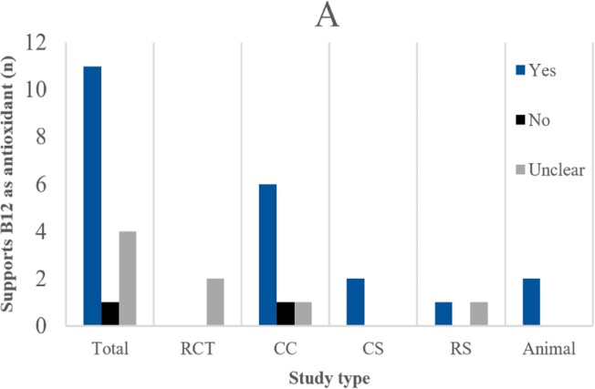
Figure 5: the Number of studies that overall support, do
not support, or show unclear results regarding the
antioxidant properties of B12, in total and per study
type.
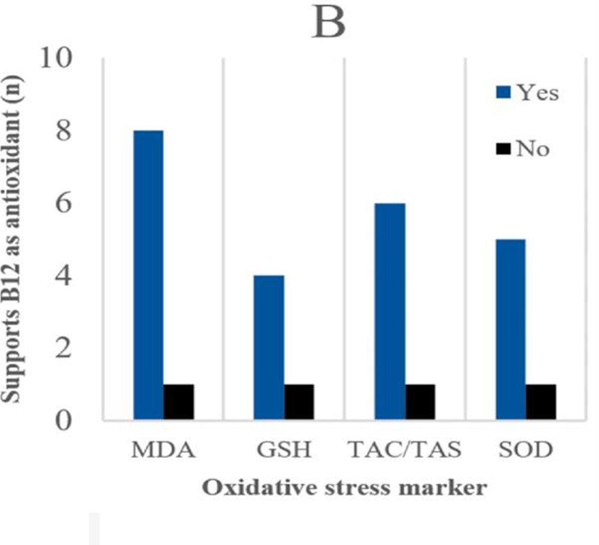
Figure 6: Number of statistical tests for all study types
for common oxidative stress biomarkers that significantly
(p < 0.05) support increased oxidative stress or reduced
antioxidant capacity in case of lower B12 status.
The study results showed that the majority of the
experiments contribute to the main objective.
Nine out of 15 studies supported the antioxidant properties
of B12 (60%). One did not (6.7%). Five showed unclear
results (33.3%). As shown in Figure 5[11]
.
Five CC studies, one CS, one RS, and two animal studies
supported B12 as an antioxidant. Notably, the potential
antioxidant effect of B12 was unclear for both RCTs due to
their broad-spectrum micronutrient interventions. As shown
in
Figure 6
[11]
.
IV. Discussion
Oxidative stress is a condition caused by an imbalance
between production and accumulation of oxygen reactive
species (ROS), including superoxide radicals (O2), hydrogen
peroxide (H2O2), hydroxyl radicals (OH), and singlet oxygen
(^1^O2), in cells and tissues and the ability of a
biological system to detoxify these reactive products. The
majority of ROS are produced by mitochondria. Cellular
respiration, the lipoxygenases (LOX) and cyclooxygenases
(COX) involved in the metabolism of arachidonic acid, as
well as endothelial and inflammatory cells, can all produce
O2
[5]
.
Environmental stressors, including UV, ionizing radiation,
pollutants, heavy metals, and anti- stress medications also
contribute to increasing ROS levels, which lead to the
occurrence of oxidative stress. Numerous diseases, including
Parkinson's disease, Alzheimer's disease (AD), amyotrophic
lateral sclerosis (ALS), multiple sclerosis, depression, and
memory loss, have been linked to oxidative stress; oxidative
stress plays a role in the loss of neurons and development
of dementia in Alzheimer's. The toxic peptide _β_-amyloid,
which is produced by free radical action and frequently
found in the brains of AD patients, is at least partially
responsible for the neurodegeneration seen during the onset
and progression of AD
[11]
.
ii. Oxidative stress and the amyloid beta peptide in
Alzheimer's disease
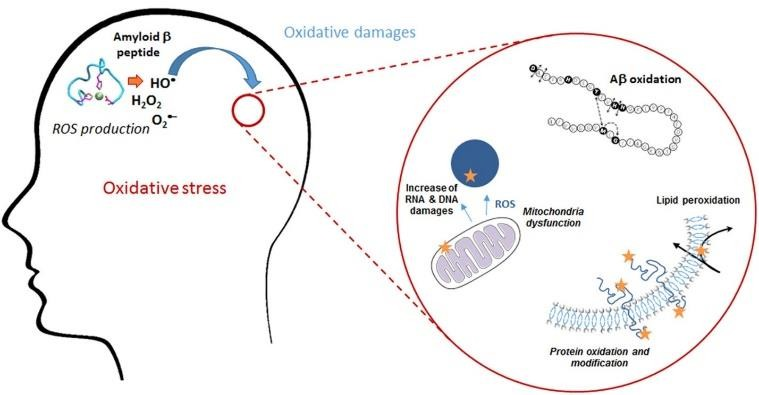
Figure 7: shows the detailed process of the oxidative
damage.
Oxidative stress is known to play an important role in the
pathogenesis of a number of diseases
[7]
. It is specifically associated with the etiology of
Alzheimer's disease (AD), an age-related neurodegenerative
illness that is the leading cause of dementia in the
elderly. Furthermore, AD is characterized by intracellular
neurofibrillary tangles and extracellular production of
senile plaques formed of aggregated amyloid-beta peptide
(A) and metal ions such as copper, iron, or zinc
[5][6]
.
Active metal ions, for example, copper, can speed up the
production of Reactive Oxygen Species (ROS) when bound to
the amyloid-β (Aβ). Thus, ROS can be produced in the
hydroxyl radical, which is the most reactive one, which
may lead to oxidative damage on both the Aβ peptide and
surrounding molecules (proteins, lipids, etc. )
[7]
.
Given the importance of oxygen, the many systems for
producing and eliminating ROS, and their regulation, it is
not surprising that oxidative stress has been linked to a
wide range of disorders. Furthermore, oxidative stress can
become a vicious cycle, as the created ROS can degrade
biomolecules, leading to further ROS accumulation. For
example, when ROS attack metalloproteins, they can cause the
release of redox-competent metal ions, leading to an
increase in ROS production. Additionally, the brains of
people suffering from neurodegenerative disorders such as
Alzheimer's and Parkinson's reveal oxidative damage, and
oxidative stress appears to be a factor in many of them.
Because the brain consumes so much dioxygen (20% of total
body consumption), it may be especially vulnerable to
oxidative damage under oxidative stress
[6]
.
Apart from the global reduction in the brain volume, one of
the hallmarks of Alzheimer's disease is the existence of
amyloid plaques in the brain, which is caused by the
"deposition of a special substance in the cortex," as first
described by Alos Alzheimer. These plaques, also known as
senile plaques, are seen in the extracellular space of the
AD brain, notably in the hippocampus. They are predominantly
made up of a peptide called Amyloid- (A), which aggregates
and produces mostly -sheet rich fibrils. The existence of
intracellular neurofibrillary tangles in the brain
[3]
, which are also seen in Parkinson's disease (PD) and are
made up of hyperphosphorylated Tau protein, is another
feature of the disease. To stabilize microtubules, this
microtubule-associated protein typically interacts with
tubulin.
Metal ions such as zinc, iron, and copper are found in the
brain, as previously stated. They are required to modulate
neuronal activity in synapses and are engaged in
metallo-protein biological processes. Metal ion homeostasis
is impaired in various illnesses, including Alzheimer's, and
concentrations and distribution are far from normal. Cu and
Zn levels, in particular, can reach up to three times the
typical levels found in healthy brains. Furthermore, amyloid
plaques isolated from AD brains contain a significant
concentration of these metal ions. Because they can bind to
A at physiological concentrations, their coordination
modalities are of interest in understanding their function
in Alzheimer's disease
[6]
.
ROS are radicals and molecules formed when molecular oxygen
is incompletely reduced. They are created in modest amounts
during the in vivo metabolism of oxygen, via four sequential
1-electron reductions of O2 that result in the creation of
H2O. They are required for cell homeostasis and play a
crucial role in signaling, but they are also reactive
oxidants that can damage biomolecules
[6]
.
iii. Oxidative stress and diet
Reactive Oxygen Species (ROS) and Reactive Nitrogen Species
(RNS), which are involved in metabolism, development, and
stress response, are essentially what produce oxidative
stress. This unbalanced state may cause oxidative damage by
oxidative modification of cellular macromolecules,
structural tissue damage from cell death via necrosis or
apoptosis, and cell death via apoptosis. ROS are highly
reactive molecules with unpaired electrons that can affect
how biological processes work. Proteins, lipids, and nucleic
acids may undergo structural and functional damage as a
result of oxidative stress.
Oxidative stress is basically caused by mitochondria via
oxidative phosphorylation that generates intracellular ROS.
Meanwhile, ROS causes a mitochondrial malfunction. The NADPH
oxidase family (NOX) and oxidative phosphorylation in
mitochondria are the main sources of H2O2. For an organism
to remain in a healthy state, the proper ROS are required.
However, excessive ROS has been linked to a variety of
health issues, such as obesity, cancer, cardiovascular
disease, and neurological illnesses.
Cognitive diseases such as Parkinson's disease and
Alzheimer's disease are examples of neurodegenerative
diseases that affect the elderly. They are characterized by
a progressive loss of neuron cells and diminished mobility
or cognitive function. Mitochondrial dysfunction is one of
these disorders' key traits. To supply the energy
requirements for cellular functions, particularly the
synthesis of neurotransmitters and synaptic plasticity, the
mitochondria in neurons have a crucial role. Increased
mitochondrial permeability, mitochondrial disorganization,
oxidative damage to mtDNA, weakened antioxidant defenses,
and shortening of telomeres are all associated with
mitochondrial dysfunction. Due to their high energy needs,
high fatty acid content, high mitochondrial density, and low
bioavailability of antioxidant compounds and antioxidant
therapy, neurons are particularly vulnerable to oxidative
stress. In Alzheimer's disease, Aβ aggregation causes Ca2+
release from the endoplasmic reticulum to the cytoplasm,
which could lead to a decrease in the accumulation of ROS.
Neuronal functions are impaired, which further leads to
neuroinflammation and neuronal loss.
Diet can control mitochondrial disease. A study found that
patients with Lennox-Gastaut syndrome (LGS), a common form
of refractory epilepsy, with mitochondrial dysfunction,
experienced a significant clinical improvement in both
seizures and cognitive performance. Patients with heart
failure benefit from taking more docosahexaenoic acid (DHA),
an n-3 polyunsaturated fatty acid. By binding to membrane
phospholipids, lowering the viscosity of mitochondrial
membranes, and speeding up the uptake of Ca2+, DHA
supplementation can enhance the DHA content in mitochondrial
phospholipids, preventing the onset of left ventricular
failure.
Unpaired electrons are produced by cells during regular
cellular respiration as well as under stressful conditions,
usually via oxygen- or nitrogen- based byproducts. These
highly unstable pro-oxidant compounds have the potential to
oxidize nearby biological macromolecules. Over time, the
development and buildup of reactive pro-oxidant species can
harm lipids, carbohydrates, proteins, and nucleic acids.
This oxidative stress has the potential to exacerbate a
number of age-related degenerative disorders, including
Alzheimer's and Parkinson's.
There are various diet styles and one of the most common
diet styles is the Western diet, which is considered by the
high intake of saturated fats, highly refined carbohydrates,
and animal-based protein and a deficiency in the consumption
of plant- based fiber. It has been shown that people who eat
a Western diet food are more likely to develop chronic
disease and have higher levels of oxidative stress. In the
Western diet style, consuming too much fat causes oxidative
stress, mitochondrial damage, and inflammation. High-calorie
diets disrupt redox processes, accelerating aging signs and
raising the risk of chronic diseases.
Antioxidants that include vitamins, and minerals can
counteract this oxidative damage as they play a role in
protecting the cell from free radicals such as ROS and RNS.
Therefore, diet plays a crucial role in health, via specific
food consumption that could disturb antioxidant levels in
the body, therefore affecting cellular function and disease
risk, emphasizing the importance of balanced nutrition and
lifestyle interventions.
V. Conclusion
In conclusion, this research adds to our understanding of
the complex interactions between nutrition, inflammation,
neurotransmitters, and oxidative stress in Alzheimer's
disease. It underlines the importance of dietary and
lifestyle changes in lowering the risk of Alzheimer's
disease and lays the groundwork for future research into
targeted therapeutics. As we continue to learn more about
the complexity of neurodegenerative disorders, a
multifaceted strategy that includes nutrition, neurobiology,
and oxidative stress management may hold the key to a better
future for people at risk of Alzheimer's disease.
Our research has revealed numerous crucial findings,
offering light on prospective routes for additional
investigation and therapeutic approaches. Our findings
highlight the significant role of nutrition in the
development and progression of Alzheimer's disease. We've
discovered that an inflammatory diet high in processed
foods, red meats, sweet desserts, and high-sugar beverages
promotes chronic inflammation, a known cause of AD. In
contrast, we've highlighted the protective potential of
anti-inflammatory foods like Omega-3 fatty acids, vitamins,
and polyphenols, which may reduce the risk of AD.
Amyloid-β (Aβ), a key player in AD pathogenesis, has been
explored in the context of its interactions with
neurotransmitters and oxidative stress. Our findings suggest
that Aβ accumulation can disrupt cholinergic and
serotonergic neurotransmission, contributing to cognitive
decline. Moreover, the interplay between Aβ, metal ions, and
oxidative stress may accelerate neurodegeneration.
Oxidative stress emerges as a common denominator linking
inflammatory diets, neurotransmitter dysregulation, and Aβ
toxicity in Alzheimer's disease. The Overproduction of
reactive oxygen and nitrogen species (ROS and RNS) causes
cellular damage, notably in mitochondria, and contributes to
neurodegenerative processes. Managing oxidative stress by
food and antioxidants may provide therapeutic benefits.
Our findings highlight the possibility of dietary treatments
in reducing the risk and course of Alzheimer's disease.
Individuals who follow an anti- inflammatory diet may reduce
chronic inflammation, support neurotransmitter balance, and
combat oxidative stress, boosting brain health and memory
preservation.
VI. Refernces
A comparison: galactic formation & evolution through
semi-analytic and numerical hydrodynamic frameworks in the
context of extragalactic astronomy.
Malak Elsaied (Gharbiya STEM High School)
George Salib (STEM High School for boys 6th of
October)
Abstract
In our never-ending cosmic quest to understand the origin of
the universe, galactic evolution is profound, as galaxies
make up a considerable portion of our universe.
Additionally, understanding galactic evolution and the
phenomena involved will provide us with the necessary
foundation to make predictions about the fate of galaxies
and our Milky Way. Although many advances have been made in
the field of cosmology, our knowledge of galactic formation
and evolution still possesses key gaps. To understand
galactic evolution, cosmologists design models of the
universe and simulate galactic evolution under the effects
of dark matter, dark energy, and baryonic matter. In this
article, we mainly discussed two types of frameworks used in
designing galactic simulation models: the semi-analytic and
numerical hydrodynamic frameworks; we also talked briefly
about the N-body and Lamda Cold Dark Matter frameworks.
Numerical hydrodynamic simulations provide a tool for
investigating the complex and dynamic interactions between
numerous physical processes. Meanwhile, semi-analytic models
use analytical approximation techniques to handle a range of
variables. When choosing a simulation model, the
computational complexity of the hydrodynamics framework and
the uncertainty of the semi-analytic models prove to be a
conundrum. So, we have discussed both frameworks, comparing
their advantages and limitations. We concluded that
currently both frameworks complete each other's
shortcomings, and for a superior understanding of galactic
formation and evolution, a more comprehensive framework that
combines both approaches is needed.
I. Introduction
There is still a lack of knowledge regarding the mechanisms
that led to the formation and evolution of the earliest
galaxies, following the Big Bang. Understanding the
mechanisms underlying their formation and evolution is
crucial to understanding how galaxies will develop in the
future. According to previous research
[1][2][3][4][5], models have been created to aid in the attempt to
comprehend and study the processes of galaxy formation
through cosmologicalsimulations. The numerical hydrodynamic
simulations and semi-analytic models are derived from these
frameworks. Both have widespread use, and each has
advantages and disadvantages. Given the enormous number of
variables involved, numerical hydrodynamic simulations offer
a tool to explore the intricate and dynamic interplay
between many physical processes. While semi-analytic models
use approximation analytical methods to cope with a variety
of variables. The physical processes of galaxy creation and
evolution, several models used to represent these processes,
numerical hydrodynamics simulations, semi-analytical models,
and examples for both models are included in this review
article.
II. The Physical Processes of Formation and
The models used to comprehend and implement the formation
and evolution of galaxies mostly include the physical
processes covered in this section.
i. Gravity
The first galaxies are thought to begin as small clouds of
dust and stars, and as other clouds come near them, gravity
ties them together. The cosmological parameters and the
characteristics of dark matter affect the shape and
magnitude of the primordial power spectrum of density
fluctuations. The number of dark matter halos of a
particular mass that have collapsed at any given moment can
be calculated from this spectrum, which is processed by
gravity to determine how quickly these halos expand
throughout cosmic time through merging and accretion
[6]. It also controls the spatial organization of dark matter
halo clusters. According to the conventional theory, each
galaxy is born within one of these "shadowy" haloes.
Gravitation and dynamical friction progressively drive the
orbits to decay until the galaxies combine in halos that
each contain their central galaxy. Mergers can have
significant impacts on galaxies, including causing bursts of
star formation and accretion onto supermassive black holes
at the center, as well as changing the structure and
appearance of the galaxy
[6].
ii. Hydrodynamics and Thermal Evolution
Intense shocks are created during the collapse of an
excessively dense province made of gas and dark matter,
which raises the entropy of the gas. The gas's ability to
reflect thermal energy away and cool down successfully will
then decide how the gas evolves in the future. Two-body
radiative processes are the main cooling mechanisms
important for galaxy formation during most of cosmic
history. At a temperature of more than 10than 10^7^ Kelvin,
gas becomes entirely collisionally ionized and cools mostly
through bremsstrahlung (free-free emission)
[6]. Collisionally ionized atoms can return to their ground
state and electrons can join with ions in the temperature
range of 10^4^ K to 10^7^ K. The collisional
excitation/deexcitation of heavy metals (metal line cooling)
and molecular cooling are the two processes that cause
cooling below 10^4^ K. If radiative cooling is ineffective
after collapse and shock-heating, a pressure-supported
quasi- hydrostatic gaseous halo may develop. Then, in a
process that is commonly referred to as a cooling flow, this
gas will progressively cool. A different name for this is
"hot mode" accretion
[6]. The gas will collapse until it is supported by its
angular momentum once it cools and loses pressure support.
Without ever producing a hot quasi-hydrostatic halo, the gas
may accrete straight onto the proto galaxy if the cooling
time of the gas is short relative to the dynamical period
[7]. According to cosmological hydrodynamic simulations, gas
tends to flow along relatively cold, dense filaments during
this type of "cold mode" accretion
[6].
iii. Star Formation
Once the gas has condensed into the halo's central regions,
it may start to self-gravitate or be driven more by its
gravity than by dark matter. If cooling processes prevail
overheating, then a runaway process can occur in which Giant
Molecular Cloud (GMC) complexes form, and eventually some
dense cloud cores within these complexes collapse and reach
the extreme densities required to ignite nuclear fusion.
This is because gas cools more quickly the higher its
density, so if cooling processes dominate, then a run-away
process can occur
[6]. Many aspects of this process are still unclear, though.
According to observations
[8][9], 1% of molecular gas turns into stars every period of free
fall, which is a practically universal efficiency for star
formation
[10]. The gas is often transformed into star particles using a
probabilistic sampling approach based on a calculated star
formation rate
[10]. Many cosmological simulations are unable to distinguish
between individual cores, much less the scales on which GMC
emerges. Therefore, to describe star formation, all current
cosmological simulations use empirical sub-grid recipes.
Since cold, dense gas eventually gives rise to stars,
simulations convert a portion of this gas into collisionless
star particles, which reflect coeval, single-metallicity
stellar populations that are characterized by an underlying
initial stellar mass function
[10]. A few simulations additionally take star clusters into
account as the primary unit of star formation by enabling
the expansion of star particles through accretion from the
surrounding medium. This is an alternative to the
probabilistic sampling strategy and helps to better mimic
the clustered nature of star formation. Modern galaxy
formation models track stellar evolution and the mass return
of these stars to the gas component after stellar particles
have been generated.
iv. Star Formation Feedback
Less than 10% of the current global baryon budget, according
to observations, is in the form of stars. We would
anticipate that most of the gas would have cooled and
generated stars by the present day in Cold Dark Matter (CDM)
models without any sort of "feedback" (or suppression of
cooling and star formation). This "overcooling problem" was
acknowledged even by the forerunners of the earliest models
of galaxy formation within a CDM framework, who hypothesized
that the energy from supernova explosions may heat gas and
possibly blow it out of galaxies, impeding star formation
[6]. It is now understood that a variety of processes, like
photo-heating, photoionization, and winds, that are
connected to massive stars and supernovae may have a role in
star formation inefficiency and large-scale winds that lower
galaxies' baryon fractions. Again, the majority of
cosmological simulations are unable to resolve these
physical processes in detail. Therefore, almost all the
current models use sub-grid recipes to try to simulate their
impact on galaxy scales
[6].
v. Black Hole Formation and Growth
As the remains of Population III (metal-free) stars, through
the direct collapse of extremely low angular momentum gas or
stellar dynamical processes, the first black holes may have
formed in the early universe
[11]. These black holes can expand by either absorbing gas with
very little angular momentum or by generating an accretion
disk that drains the gas's angular momentum through
viscosity. These processes are modeled via sub-grid recipes
since they are, once more, poorly understood and nearly hard
to model explicitly in cosmological simulations
[6]. The most likely scenario is that the black holes develop
at high redshifts as the remains of the first generation of
Population III stars have passed their prime. It is still
unclear how exactly these first stars formed, but
hydrodynamical simulations indicate that they had masses of
about a few hundred Solar masses and left behind
intermediate-mass black hole remnants
[12].
Cosmological black holes have an additional characteristic,
angular momentum, in addition to their mass. Essentially,
merging with another black hole and material accretion are
the two processes that alter a black hole's spin
[12].
vi. Active Galactic Nuclei (AGN) Feedback
Strong observational evidence suggests that a supermassive
black hole is present in most spheroid- dominated galaxies,
which make up most of all big galaxies. A straightforward
calculation shows that the energy released in creating these
black holes must be greater than the host galaxy's binding
energy, indicating that it could have a significant impact
on galaxy formation. However, how effectively this energy
can couple to the gas in and around galaxies is still
unknown
[6]. High-velocity winds, which may be expelling the cold
interstellar medium from galaxies, and hot bubbles that
appear to be produced by enormous radio jets, which may be
heating the hot halo gas, are two observational indicators
of feedback linked with AGN. In modern cosmological
simulations, AGN feedback is also handled with sub- grid
recipes
[6]. Active galactic nuclei relate to observational phenomena
related to accreting supermassive black holes, including
electromagnetic radiation, relativistic jets, and
less-collimated non- relativistic outflows
[10]. Quasar and radio modes, which are used differentially in
simulations, are the two most prevalent divisions of this
feedback. Some galaxy formation models, however, claim that
cosmological simulations lack the resolution necessary to
accurately distinguish between the two feedback modes and to
keep the number of feedback channels to the minimum
necessary to match the observational data. These models do
not make this distinction
[10]. The radiatively efficient mode of black hole growth is
linked to quasar mode feedback, which is frequently
implemented through energy or momentum injection under the
assumption that the bolometric luminosity corresponds to the
accretion rate and that a fixed portion of this luminosity
is deposited into the nearby gas
[10]. Radio-mode feedback occurs by highly collimated jets of
relativistic particles, which are frequently coupled with
X-ray bubbles containing enough energy to compensate for
cooling losses. This feedback mechanism is therefore thought
to be crucial for controlling star formation in large
galaxies. As soon as the accretion rate drops below a
threshold level, radio-mode feedback is frequently
incorporated as a second subresolution feedback channel
[10]. The subresolution models for supermassive black holes are
still unclear considering that they must cross a gap between
real accretion and feedback and the scales that can be
defined with simulations
[10].
vii. Stellar Populations and Chemical Evolution
Many modelers convolve their predicted star formation
histories with straightforward stellar population models
that provide the Ultraviolet — Near Infrared Spectral Energy
Distribution for stellar populations of a single age and
metallicity
[13], folding in an assumed stellar Initial Mass Function to
directly compare models and observations
[6]. In many models nowadays, gas recycling from star mass
loss is considered in simulations in a significant way. It
is also clear that stars pollute the intergalactic medium
out to great distances from galaxies as they develop and
undergo supernovae, producing and dispersing heavy metals
throughout the gas that surrounds galaxies
[6]. Due to several factors, including (1) the highly enhanced
cooling rates at intermediate temperatures in metal-enriched
gas, (2) the metallicity-sensitive luminosity and color of
stellar populations of a given age, and (3) the production
of dust by heavy elements, which dims and reddens galaxies
in the UV and optical and re- radiates the absorbed energy
in the mid-to-far IR, chemical evolution is a crucial
component of galaxy formation. The treatment of chemical
evolution is currently present in many cosmological models
of galaxy formation
[6].
viii. Radiative Transfer
Star and AGN radiation can have a significant effect on
galaxy formation. Gas can be directly heated by radiation,
and it can also change cooling rates by altering the
ionization state of the gas (particularly for gas that is
metal-enriched)
[6].
Additionally, the measured total luminosity, color, and
observationally determined morphological and structural
properties of galaxies can all be significantly impacted by
the transmission of radiation of various wavelengths through
and by scattering dust, particularly in the rest-frame UV
and optical, which are frequently the only wavelengths
available at high redshift. Due to the additional processing
cost, most current cosmological simulations that are
performed to low redshift do not self-consistently include
radiative transfer
[6]. To estimate the observed pan-chromatic characteristics of
galaxies and their line emission, radiative transfer across
a dusty interstellar medium can be calculated in
post-processing with a high enough resolution
[6].
The effects of radiation in the context of galaxy formation
simulations have only been examined in a small number of
simulations
[10]. This lack of detailed radiation hydrodynamics
investigations is mostly due to the difficulty of numerical
radiative transfer due to the high dimensionality brought on
by the frequency and directional dependence of photon
propagation
[10].
III. Current Simulation Frameworks
The many advances happening in cosmology over the past
decades have enhanced our understanding of galactic
formation and evolution. This resulted in a heap of
frameworks and models that can simulate galactic evolution
to a relatively great extent based on sub-grid recipes. Due
to computational limitations, these sub-grids are used and
parametrized, and these parameters are tuned based on
current observations of galactic properties. Although some
of these techniques have been able to reproduce current
observations and give us many insights into galactic
evolution, their accuracy remains questionable. Three
popular, and currently used, frameworks are the
Semi-analytic framework, the Numerical Hydrodynamics
framework, and the Lambda, Einstein's cosmological constant,
Cold Dark Matter (ΛCDM) framework.
It is worth clarifying that the ΛCDM framework is in itself
built on the hydrodynamics framework and was considered a
hydrodynamic model until it was publicly accepted and used
as a framework to build variants of the ΛCDM model. Thus, we
will be limiting our discussion to a brief introduction to
the ΛCDM framework.
i. The Semi-analytic Framework
The semi-analytic framework, sometimes called the
"phenomenological galaxy formation framework," approaches
each of the physical processes mentioned above using
approximate, analytic techniques. Due to this approximation,
semi-analytic models possess a modular framework, which
means it is straightforward to revise the implementation of
various phenomena to reproduce a more detailed simulation
according to current observations
[14]. The degree of approximation varies considerably with each
model and its desired results based on the complexity of the
simulated physical processes. This approximation makes the
semi-analytic framework computationally inexpensive.
Therefore, it can simulate galactic evolution at a large
order of magnitude. However, semi-analytic models involve a
large degree of approximation, and the extent to which this
approximation affects the simulation's results has not yet
been well assessed
[12].
ii. The N-body/Numerical Hydrodynamics Framework
The N-body framework (or gravity solvers) is the basic
structure for various simulation models (e.g., hydrodynamic
models and even semi-analytic models). In N-body models, the
simulated portion is divided into a chosen number of
particles, or "bodies," hence the name N-body. Then, the
forces acting on each particle by the surrounding ones are
computed, and the simulation evolves by recomputing the
forces in a set time step. Additionally, the boundaries of
the simulation volume are comoving and evolve periodically,
and the expansion rate of the simulation boundaries is
computed using the Friedmann equations (derived from
Einstein equations within the context of General
Relativity), but the equations are solved using the
Newtonian versions since General Relativity corrections are
mostly negligible
[6].
Hydrodynamic models, which use the N-body technique to
simulate dark matter, utilize direct simulation (i.e., the
equations of the physical processes are solved for every
particle). This increases the level of accuracy of
hydrodynamic models over semi-analytic ones, but it also
makes them computationally expensive. However, if Moore's
law is true, hydrodynamic models will continue to expand as
our technology does.
Although hydrodynamic models are not as "flexible" as the
semi-analytic ones, they can be modified to suit the
required results (i.e., some processes may be approximated
or omitted). Many variants of hydrodynamic models exist. For
example, GADGET-2 or "GAlaxies with Dark matter and Gas
intEracT" relied on smoothed particle hydrodynamics (SPH) to
compute the interactions between dark matter and gas clouds
[15]. On the other hand, FLASH uses reactive hydrodynamic
equations and thermonuclear reaction networks to study the
nuclear flashes on the surfaces of white dwarfs and neutron
stars
[16].
iii. The Lambda Cold Dark Matter (ΛCDM) Framework
Our modern theory of cosmology suggests that the universe
mainly consists of dark matter and dark energy, which
together account for more than 95% of the energy density of
the universe. In the most popular ΛCDM model, dark matter is
considered cold (slow-moving), collisionless, and makes up
~25% of the cosmic mass-energy density, and dark energy is
represented by a "cosmological constant" Λ, comprising ~70%
of the cosmic mass- energy density. The remaining ~4% is
baryons (which in the context of this model includes
leptons), i.e., ordinary atoms that make up the universe we
can see
[6]. Although Baryonic Matter only makes up ~4% of the
universe, most of the profound problems are with simulating
this type of matter as it prompts many complex phenomena.
Numerical N-body techniques have been used to extensively
study the growth of structures in dissipationless (dark
matter only) ΛCDM simulations. As
[6]
mentioned, "The gravitationally bound structures that form
in these simulations are commonly referred to as dark matter
halos, and the abundance, internal structure, shape,
clustering, and angular momentum of these halos over cosmic
time has been thoroughly quantified." The ΛCDM paradigm has
been thoroughly judged and proved to be successful at
explaining and reproducing observations on scales larger
than a few kpcs (e.g.
[17]). Thus, it provides a framework for shaping models of
galactic evolution.
IV. Semi-analytic Models
The approach known as "semi-analytic modeling" or
"phenomenological galaxy formation modeling" uses an
analytical strategy to tackle the many physical processes
related to galaxy formation
[12]. The degree of approximation, just like in N-
body/hydrodynamic simulations, varies significantly with the
complexity of the physics being treated, from precisely
calibrated estimates of dark matter merger rates to
empirically motivated scaling functions with large parameter
uncertainty (for example, in the case of star formation and
feedback - just like in N-body/hydrodynamic simulations)
[12].
These semi-analytic models monitor things like the amount of
gas that accretes onto halos, the amount of hot gas that
cools and becomes stars, the removal of cold gas from the
galaxy via feedback processes, and the heating of the halo
gas. The models are based on the dark matter halo merger
history discovered by N-body simulations. Like the output of
comprehensive hydrodynamic simulations, the outcome of such
a calculation is an anticipated galaxy population that can
be contrasted with observable data
[10].
When compared to N-body/hydrodynamic simulations, the
semi-analytic approach has the main benefit of being
computationally less expensive. This enables the quick
investigation of parameter space and model space (i.e. the
introduction of new physics and evaluation of their impacts)
as well as the creation of samples of galaxies that are
orders of magnitude larger than those made possible with N-
body approaches
[12]. Another advantage of semi- analytic models is their
efficiency, which allows for a large range of calculations
to be performed using multiple model variations
[10].
The primary limitation is that they require a higher level
of approximation. It has not yet been thoroughly determined
how much this matters. Studies comparing semi-analytic and
N- body/hydrodynamic calculations have generally found
agreement (at least on mass scales well above the resolution
limit of the simulation), but they have been restricted to
simulations of single galaxies or simplified physics (e.g.,
hydrodynamics and cooling only)
[12]. Semi-analytic models also have the drawback of being less
self-consistent than hydrodynamic simulations. Furthermore,
because the gas component is not resolved, researching
precise gas features, such as circumgalactic gas, is not
directly achievable with these models
[10].
An example of a semi-analytic model is
[18], which simulates the co-evolution of galaxies, black
holes, and active galactic nuclei. A fresh semi-analytic
model that, within the context of the ΛCDM cosmological
framework, self-consistently traces the growth of
supermassive black holes (SMBH) and their host galaxies.
According to the model, the energy released by accreting
black holes controls how big they grow, powers
galactic-scale winds that can expel cold gas from galaxies
and generates strong jets that heat the hot gas atmospheres
around groups and clusters
[18]. The new models correctly predict that star formation
should be considerably, but not entirely, quenched in huge
galaxies at the current time. They also accurately reproduce
the exponential cut-off in the stellar mass function and the
stellar and cold gas mass densities at redshift z∼0. The
relationship between SMBH mass and bulge mass that has been
found can be naturally reproduced by the model of
self-regulated SMBH growth. The models give predictions for
the cosmic histories of star formation, stellar mass
assembly, cold gas, and metals as they investigate the
overall creation history of galaxies and black holes. Models
based on the 'concordance' CDM cosmology were shown to
overestimate star formation and stellar mass at high
redshift
[18]. Less small-scale power models anticipate less star
formation at high redshift and great agreement with the
history of stellar mass assembly as observed, but they may
have trouble explaining the cold gas in quasar absorption
systems at high redshift
[18].
V. Numerical Hydrodynamic Models
Hydrodynamic models are employed to solve the equations of
the physics concerned with galactic evolution (e.g.,
hydrodynamic equations) via direct simulation. In this
method, the equations of gravity, hydrodynamics,
thermodynamics, and radiative cooling/transfer are solved
for a chosen number of points, depending on the available
computational power, in a grid (particle-based) or along the
flow path of a fluid (mesh-based), or a hybrid of both,
depending on the specifics of each model. These three
methods are classified, respectively, as Lagrangian methods,
Eulerian methods, and arbitrary hybrids of both.
In Lagrangian methods such as the popular Smoothed Particles
Hydrodynamics (SPH) model, the particles are treated as
programming objects, where each particle carries the
information about the fluid and moves freely within it.
However, as
[6]
mentioned "A key drawback is that this method (SPH) does not
explicitly conserve energy and entropy in adiabatic flows in
the case of variable smoothing lengths." Eulerian methods
divide the fluid into discrete cells and compute the
advection of the fluid's properties through the cell
boundaries in the grid. Eulerian methods are superior in
handling shocks and surface instabilities. On the other
hand, Lagrangian methods are more adaptive and provide more
dynamic range per computational expense, and variants such
as Entropy-conserving (EC-)SPH have mitigated the flaws in
the "Classic" SPH (e.g.,
[19]
and
[20]). Then, the Pressure-entropy (PE-)SPH mitigated the flaws
in the EC-SPH variant
[21]. Although this makes the Lagrangian method superior, the
implementation of Adaptive Mesh Refinement (AMR) balanced
the scales; AMR provides the adaptivity of the Lagrangian
method by subdividing, in real-time, each cell into smaller
ones (i.e., increasing the simulation's resolution). It is
worth mentioning the hybrid models that employ both methods,
as the gap between the Lagrangian and Eulerian methods is
closing. For example,
[22], a hydrodynamic simulation that utilizes an arbitrary
Lagrangian-Eulerian, has critical advantages over both
Lagrangian and Eulerian methods. Because previous models,
that employed these methods, have yielded similar results,
it is still unclear which one of these three methods is
superior
[6].
In practice clever techniques (e.g., particle- mesh, tree
algorithms, etc.) are used to reduce the computational
complexity of the simulation to something manageable by our
current technology. Collisionless dark matter can be
modelled relatively easily using N-body techniques since it
only interacts through gravitational fields
[12]. However, baryonic matter must also be computed, which
increases the computational complexity of the simulation as
more equations must be added to the mix. As more physical
phenomena are considered (such as AGN feedback, chemical
evolution, star formation feedback, and SMBH formation), the
limits of hydrodynamic modelling start to appear. Our
current computational capabilities are insufficient to model
all these processes in detail, in addition to the current
modest numerical understanding of many of these processes,
forcing the use of semi-analytic techniques to encompass
these processes.
In both the N-body and hydrodynamic frameworks, there is a
trade between the details, accuracy, and resolution of the
simulation. This can be deduced from Fig. 1. As we move from
the "Dark matter only" column, which only needs N-body
methods, to the one with baryonic matter added, which uses
hydrodynamic methods, we see a drop in the resolution of the
simulation: the Millennium-XXL simulation
[24], in the bottom-left corner, is a multi- hundred billion
particle simulation, while the Illustris simulation
[25], in the bottom-right corner, only reached a particle count
of more than 18 billion particles. This is due to the added
computational complexity by, also, simulating baryonic
matter. The same pattern can be seen in the transition from
the "Large volume" statistical row to the "Zoom" detailed
one. The particle size decreases from the multi-hundred
billion particles in the Millennium- XXL simulation to 1.47
billion particles in the Aquarius simulation
[26]; this is caused by the many "detailed" physical phenomena
taken into consideration when simulating the "Zoom" row. The
"Large volume" row uses some clever methods to approximate
the effects of such physical phenomena; this is attributed
to the immense number of particles needed to remotely derive
the statistical properties of the simulated galaxies.
Fig. 1. Visual representations of some selected structures
and galaxy formation simulations. In the left column are
dark matter simulations, which use the N-body framework.
The right column is hydrodynamic simulations, which
simulate dark matter using N-body methods and baryonic
matter using the hydrodynamic framework. The top row
consists of "small" detailed simulations, while the bottom
row consists of large-volume simulations that are used to
derive global properties.
[10]
Although the hydrodynamic framework can provide valuable and
accurate insights into galactic evolution, our current
computational power limits its capabilities. So, to keep its
accuracy, it can be only used on large-scale simulations
with undesirable approximations or on small, but
comprehensive, simulations (e.g., single galaxies or small
clusters).
As mentioned above, when some of the physical processes are
simplified or ignored, the number of particles (or size of
the mesh depending on the used technique) can be greatly
increased by orders of magnitude. For example, the
cosmological simulation code GADGET-2
[15], which uses a tree algorithm coupled with SPH, is the
largest pure dark matter simulation, containing more than 10
billion particles, since dark matter can be simulated
relatively easily without requiring substantial
computational power. As a result of
[15], many properties of dark matter halos are, now, known to a
very high accuracy. Moreover, when radiative cooling and
star formation were added to the simulation the number of
particles had to be dropped to 250 million. This illustrates
how computational complexity can greatly affect the
simulation's accuracy and/or resolution, and researchers are
forced to either simplify and approximate phenomena or
downsize the simulation's resolution.
VI. methods
We used two inclusion/exclusion criteria to narrow our
research down to the focus of this paper. First, we included
the research papers related to, and only to, the
hydrodynamics and semi-analytic frameworks and the
implementation of different physical processes through them.
[6],
[10], and
[12]
were the most helpful resources that helped us throughout
this research journey. They discussed in detail the
cosmological simulations of galaxy formation. Lastly, we
excluded all the research concerned with the Milky Way
Galaxy only, since this paper focuses on these models in the
context of extragalactic astronomy.
VII. Conclusion
From the physical processes, we can conclude that the
implementation of star formation as a sub-resolution model
with individual stars as its building blocks will still be
necessary in future cosmological simulations
[10]. In addition to that, it is crucial to comprehend the
cosmic evolution of the angular momentum and mass amount of
black holes since the spin of a black hole can significantly
affect its radiative effectiveness and jet power.
Semi-analytic models' advantage of being computationally
inexpensive allows them to be simulated on the scale of
galaxy clusters and possibly bigger. Thus, they can,
relatively easily, make predictions of galactic properties
(e.g., luminosity function and morphology) of various
parameter values. However, these results are limited by the
uncertain assumptions and approximations used in these
models. On the other hand, hydrodynamic models have produced
results that are similar to observations, as they have the
advantage of following the evolution of baryonic matter and
dark matter content of the universe in complete generality
[23]. Despite this advantage, the relatively small resolution
size due to the computational complexity of hydrodynamic
models limits our ability to derive statistical properties
(e.g., luminosity function) and study the effects of varying
the simulation parameters. As a result, when hydrodynamic
models reach their limit (i.e., the maximum resolution
concerning computational power), they result in a
semi-analytic technique to simulate the computationally
expensive and "chaotic" phenomena (e.g., star formation
feedback and AGN).
As it was clearly emphasized, the main problem facing both
frameworks is the resolution and accuracy of the model
versus the current and available computational power.
Logically, as technology keeps advancing, our ability to
solve more complex equations and include many more complex
phenomena (as we interpret them more intimately) in both
simulations will continue to improve considerably.
It may seem that as our computational capabilities increase,
the semi-analytic framework will become obsolete. This
thought would hold true if we could somehow reach enough
computational power to simulate each particle in our current
universe, and that is "near" impossible. The two frameworks
can be thought of as yin and yang; they complete each other,
and only considering one approach is insufficient.
Currently, insights are gathered from each framework
independently, as models use only one technique. However, to
fully understand galactic evolution, a unified model that
encompasses both semi-analytic and hydrodynamic techniques
into one coherent framework is a necessity.
The agreement in predictions of simulation models that use
different techniques suggests that the galactic evolution
modelling is headed in the right direction. However, there
are still some processes that are not traditionally included
in current models such as magnetic fields and cosmic rays,
but they have been considered in relatively few research
papers (e.g.,
[27],
[28], and
[29]).
VIII. Acknowledgment
We cannot deny the tremendous help we got while writing this
article. We would like to thank all the amazing people at
Youth Science Journal for their oversight and guidance. We
would, also, love to thank our mentor Mustafa Mohammed for
his guidance and support.
IX. References
AI and Cardiovascular Diseases: An Overview of Deep Neural
Networks in Electrocardiogram Analysis
Mostafa Ayad (El-Shahed Tayar Mohamed Adel Shebl School)
Nour Sherif (Obour STEM School)
Ziad Hassan (STEM High School for Boys — 6th October)
Mentor: Mohamed Mahmoud (STEM High School for Boys — 6th
October)
Abstract
This paper gives an overview of the advancements in
Artificial intelligence (AI) for the prognosis and treatment
of cardiovascular disease (CVDs). AI techniques, inclusive
of machine learning algorithms, have proven promise in
analyzing medical photos for computerized detection of
cardiac abnormalities and risk stratification.
Decision-guide systems driven by way of AI useful resources
in optimizing remedy strategies via leveraging patient facts
for personalized interventions. Integration of AI with
wearable devices and faraway monitoring structures allows
real-time facts collection, early detection of cardiac
activities, and powerful remote care control. However,
demanding situations associated with information
privateness, set of rules bias, and regulatory frameworks
need to be addressed. Collaborative efforts amongst
clinicians, researchers, and policymakers are crucial for
harnessing the whole capacity of AI in CVD care.
I. Introduction
According to the World Health Organization, cardiovascular
disease (CVD) is the most prevalent mortality determinant in
the world, taking an estimated 17.9 million lives each year,
which is approximately one-third of global mortality
[1][2][3]. It is expected to account for more than 23.6 million
deaths annually by 2030
[4]
. More than four out of five CVD deaths are due to heart
attacks and strokes, and one-third of these deaths occur
prematurely in people under 70 years of age
[1]
. CVDs have become a major health issue negatively affecting
the economic and social development of the whole world
[4]
. Cardiovascular disorders are considered to be serious
health issues. Although there are various kinds of cardiac
illnesses, heart diseases are the most common
[5]
. In the last ten years, traditional medication and surgery
have been able to lessen the mortality rate and symptoms
associated with CVDs; however, there is still a deficiency
in clinical strategies for either repairing the damaged
myocardium following myocardial infarction (MI) or averting
the potentially fatal development of heart failure (HF).
Conventional medicine is less intrusive but may harm organs
or have other detrimental side effects
[4]
.
The early detection of cardiovascular diseases is one of the
greatest difficulties facing physicians. This is due to
several factors that affect health such as high blood
pressure, increased cholesterol, abnormal pulse rate, and
many other factors
[5]
. Therefore, utilizing and developing AI methods in the
diagnosis of CVDs is crucial, as it can analyze the factors
and predict the possibility of the disease, and increase the
accuracy of the detection to more than 80%
[5]
.
Machine learning techniques in the medical field have been
expanding widely in recent years. The main idea of utilizing
machine learning is to develop systems that can predict
based on experience and stored data
[5]
. Some great examples of utilizing machine learning in the
medical field include predicting and treating disease,
providing medical imaging and diagnostics, discovering and
developing new drugs, and organizing medical records. Deep
learning is a subset of machine learning, where deep
learning structures algorithms in layers to form an
artificial neural network that can learn and make decisions
on its own. The majority of artificial intelligence (AI) in
our daily lives is powered by deep learning in one way or
another. The difference between deep learning and machine
learning is as follows: deep learning is capable of
ingesting unstructured data in its unprocessed form (text,
photos, etc.) and automatically identifying the set of
characteristics that differentiate various data categories
from each other, while machine learning relies more on human
input to acquire knowledge
[5]
. The set of attributes that human experts need to
distinguish between different data inputs is determined;
often, this requires more structured data to learn.
A neural network with three or more layers is, by
definition, a deep neural network, or DNN. Most DNNs
actually have a lot more layers in practice. To identify and
categorize occurrences, detect patterns and relationships,
assess possibilities, and make predictions and judgments,
DNNs are trained on vast volumes of data. A deep neural
network has many layers that help improve and optimize the
predictions and judgments made by a single-layer neural
network, resulting in predictions and decisions that are
more accurate. It is now possible to detect brain tumors
using a type of DNN, with accuracy significantly lower than
before. Furthermore, deep neural networks had a significant
transformative effect on electrocardiogram (ECG) analysis.
This paper comprises deep neural network techniques used in
analyzing ECG signals for the prediction of CVDs, how it is
done, and the effectiveness of using convolutional neural
networks in ECG analysis.
Chapter Ⅱ provides information about AI applications in
cardiovascular diseases, a brief explanation of ECG signals,
and deep neural network models. Chapter Ⅲ comprises an
explanation of the structure and mechanism of convolutional
neural networks, while chapter Ⅳ discusses new technologies
used in CVD diagnosis and AI outperforming prediction.
II. AI and Electrocardiograms
i. The potential of utilizing AI in CVD diagnosis
Digital healthcare encompasses the provision of tailored
health and medical services, the utilization of electronic
devices, systems, and platforms, as well as the integration
of a wide range of medical services
[6][7]. By connecting healthcare with ICT (Information and
Communication Technology), it can help to prevent, diagnose,
treat, and manage diseases
[7][8]. The rapid advancement of Artificial Intelligence (AI)
technologies has enabled healthcare professionals to
increase their ability to process the vast amount of data
generated through wearable devices used in the monitoring of
patients' health
[9]
.
This section provides an overview of the existing literature
on the utilization of Artificial Intelligence (AI) to
analyze wearable sensor data to predict and diagnose
cardiovascular disease.
Wear-able devices
The utilization of wearable devices in the health sector is
advancing rapidly, particularly in the areas of
telemedicine, patient tracking, and mobile health systems.
The utilization of these devices for remote monitoring and
diagnostics of common cardiovascular diseases has been the
subject of research
[10]
. Examining the potential and challenges of wearables
[11][12], specific barriers and knowledge gaps (HR and activity
tracking) have been identified in the field of clinical
cardiovascular healthcare wearables. The utilization of
Artificial Intelligence (AI) and recent cutting-edge
technologies has been extensively examined in all areas of
Arrhythmia Care
[9]
. The Department of Drug Development (DL) has been a
pioneering field of research for many years, and this paper
provides an overview of the challenges and potential of this
field in cardiovascular medicine
[9]
. End-to-end DL can also be used for resting ECG signal
analysis to identify structural cardiac abnormalities, which
can then be used to effectively screen symptomized
populations
[9]
. Talking about risk prediction models in CVD, the
biomarkers can be used for early detection of the disease as
well as risk predictions
[13]
.
Risk Prediction Models
A risk prediction model is a statistical regression model
that relates the disease outcome with the characteristics of
an individual. Risk prediction models are commonly referred
to as risk stratification models or prognostic models. A
risk prediction model typically includes multiple risk
factors (or predictors) that are significantly related to
the disease outcome. The association of a risk factor with
the outcome of the disease is assessed based on the relative
risk associated with that risk in the population, rather
than in a single individual. A risk score may be calculated
from a Risk prediction model for each individual, with a
higher risk score indicating an increased risk of the
disease. The risk score can be used to classify individuals
into groups with different levels of risk of the disease.
People in the high-risk groups are targeted for intervention
strategies
[14]
. Discrimination refers to the ability of a risk prediction
model to separate those who do and do not have the disease
of interest
[15]
. This method is used to measure the likelihood of a risk
prediction model assigning a higher risk score to a random
sample of individuals who are expected to develop a disease
within a specified time frame than to those who are not
expected to develop the disease within that time frame. It
was initially developed to assess the accuracy of
classification in distinguishing signals from background
noise in radar detection
[14][15]. A model with perfect discrimination will give higher
predicted risk scores for all cases than for non-cases even
if the predicted risk score does not match the observed
risk.
ii. Electrocardiograms: properties and advantages.
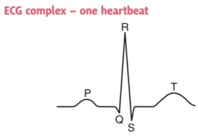
Figure 1: illustrating the ECG complex for a heartbeat
Before delving into Electrocardiograms and their
properties, a basic understanding of the heart must be
achieved. The human heart operates mostly by intrinsic
electric impulses. These impulses first arise in the
sinoatrial (SA) node, located at the top of the heart's
upper-right chamber (the right atrium), which is also
known as the heart's "natural pacemaker." These impulses
flow through the heart through a process known as
conduction where the impulses travel to the ventricles
causing their contraction in a phenomenon known as
ventricular contraction. This contraction is considered a
representation of one heartbeat. In normal cases with no
abnormalities, this rhythm is recorded as a sinus rhythm
and is considered the basic rhythm of the heart.
This previously mentioned electrical activity can be
recorded via a device known as an electrocardiogram. This
device mainly records the starting point of these impulses
and their conduction through the heart. An ECG is mainly
administered to patients suffering from symptoms of CVDs
such as blackouts or strokes as they're usually caused by
an irregular heart rhythm. Electrocardiograms have various
types depending on the condition that's being checked for.
The most important types are the stress test, which
monitors the heart during exercise to detect CVDs such as
coronary artery disease; the Holter monitor, which
monitors for longer periods; and the resting 12-lead ECG,
which is used in a resting state and is considered the
optimal type of ECGs. To record an ECG, electrodes must be
inserted in the limps and chest to record different views
of the heart. These views are called leads and the number
of leads is not equal to the number of electrodes. For a
full picture of the heart, a 12-lead ECG is optimal which
is why 12-lead ECG tests are preferred.
To interpret the reading of an ECG, some basics must be
understood. The ECG visualizes each ventricular
contraction (heartbeat) by one ECG complex as shown in
figure 1.
Figure 2: illustrates a healthy heart rhythm
There are 5 main points in an ECG complex those being "P",
"Q", "R", "S", and "T". The "P" wave shown here is a
representation of the electrical activation of arterial
muscle. The PR interval is the amount of time needed for
the impulse to travel from the artery to the ventricle.
The QRS complex symbolizes the spread of the impulse
causing ventricular contraction. The ST interval showcases
the full activation of the ventricles, while the "T" wave
shows the return of the ventricles to a resting electrical
state. Without any abnormalities, a normal beat should be
a succession of one P wave, a QRS complex, and finally a T
wave. The way those waves and intervals are displayed can
tell a lot about the condition of the heart. For example,
if the QRS complexes are compressed together, this
indicates a higher heart rate. They can also indicate the
rhythm of the heart based on how consistent QRS complexes
are. Ideally, the reading of a healthy heart via ECG
should look like figure 2.
The professionals reading an ECG recognize certain patterns
and rhythms that indicate different CVDs. For example,
figure 3 shows a rhythm that indicates a complete heart
block while figure 4 shows a pattern indicating acute
ischemia
[15][16].
Figure 3: shows a complete heart block
Figure 4: acute ischemia with T wave inversion
iii. Types of deep-learning models used in ECG analysis.
Deep learning (DL) is a class of machine learning that
performs much better on unorganized or huge data with
increased high-performance computing, which made it more
popular at present. It focuses on creating and training
complex neural networks to learn and make intelligent
decisions from large volumes of data. Deep learning is
called "deep" as it passes the data through numerous layers,
where each layer can gradually extract features and pass the
data to the next layer. The first layers extract low-level
features, and the later layers combine features to create a
comprehensive representation. Deep learning models are built
using artificial neural networks, which are computational
structures inspired by the organization of neurons in the
human brain. These networks consist of layers of
interconnected nodes (neurons) that process and transform
data. Nowadays, deep learning is used in a lot many
applications such as Google's voice and image recognition,
Netflix and Amazon's recommendation engines, Apple's Siri,
automatic email and text replies, and chatbots
[18]
.
Deep neural network models had a transformative impact on
analyzing electrocardiograms. It led to many significant
advancements such as improved accuracy, where some studies
have experimentally demonstrated that deep learning features
are more informative than expert features for ECG data
[19]
Several deep Learning (DL) models have been developed to
improve the accuracy of different learning tasks, including
Multilayer Perceptron (MLP), Convolutional Neural Network
(CNN), Recurrent Neural Network (RNN), Long Short-Term
Memory (LSTM), and Deep Belief Network (DBN), Generative
Adversarial Networks (GANs).
Convolutional Neural Network (CNN):
CNNs represent a class of deep neural networks (DNNs) that
are widely applied for image classification, natural
language processing, and signal analysis. A standard CNN
is composed of several convolutional layers followed by a
batch normalization layer, nonlinear activation layer,
dropout layer, pooling layer, and classification layer
[19]
. Section Ⅲ will focus on CNNs in detail.
Recurrent Neural Network (RNN):
It has been widely used to solve tasks of processing time
series data, speech recognition, and image generation, and
recently, ECG signal denoising and ECG classification.
RNNs, including variants like Long Short-Term Memory
(LSTM) and Gated Recurrent Unit (GRU), are suitable for
sequence data like ECGs. They can capture temporal
dependencies and patterns in ECG waveforms, making them
useful for tasks such as heart rate prediction, rhythm
classification, and anomaly detection. A typical RNN
includes an input layer, a hidden layer, and an output
layer, where at each time step, the RNN receives an input,
updates its hidden state, and makes a prediction. While
RNN is highly suitable for short-term dependent problems,
it is ineffective in dealing with long-term dependent
problems. That's why the types mentioned long short-term
memory (LSTM) and gated recurrent unit (GRU) were
introduced to overcome the shortcomings of RNN
[20][21].
Multilayer Perceptron (MLP):
The most popular supervised neural network, MLP, is
successful in learning complex systems. Despite being
variable, the MLP architecture consists of numerous layers
of neurons coupled to one another in a feed-forward manner
[20]
.
Generative Adversarial Networks (GANs):
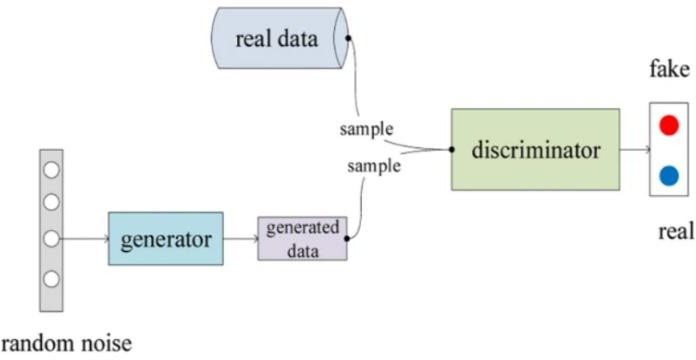
This type of model consists of two sub- models: a
generative model G that captures the data distribution
of a training dataset in a latent representation and a
discriminative model D that calculates the probability
that a sample generated by the generator comes from the
true data distribution
[21]
. It can be useful in data augmentation or simulating
abnormal conditions for training and testing
classifiers. figure 5 illustrates the architecture of
the GAN.
Deep Belief Network (DBN):
DBN is a powerful learning model used to model evolving
random variables over time. It is composed of multiple
Restricted Boltzmann Machine (RBM) layers. The function of
each RBM in a layer is to receive the inputs of the
previous layer and feed the RBM in the next layer
[20]
.
Figure 6 shows a brief comparison between DL models:
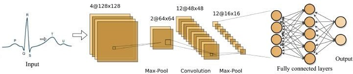
Figure 6: DL models comparison
III. Convolutional AI in ECG Analysis:
i. Convolutional neural networks (CNNs) and their
applications.
As mentioned previously, CNNs are the most prominent
category of neural networks, especially in high-dimensional
data like images and videos. It falls under the supervised
learning category of neural networks. CNN is a multi-layer
neural network, which consists of multiple back-to-back
layers connected in a feed-forward manner [20, 22]. It is
stimulated by the neurobiology of the visual cortex, which
contains convolutional layer(s) pursued by fully connected
(FC) layer(s), with the probability of the existence of
subsampling layers between these two layers
[22]
. The main layers include the convolutional layer,
normalization layer, pooling layer, and fully-connected
layer, as shown in figure 7. The Three first layers are
responsible for extracting features, while fully connected
layers are in charge of classification. Thus, the primary
application of CNN exists in databases, where the number of
nodes and parameters required to be trained is comparatively
large
[22]
.
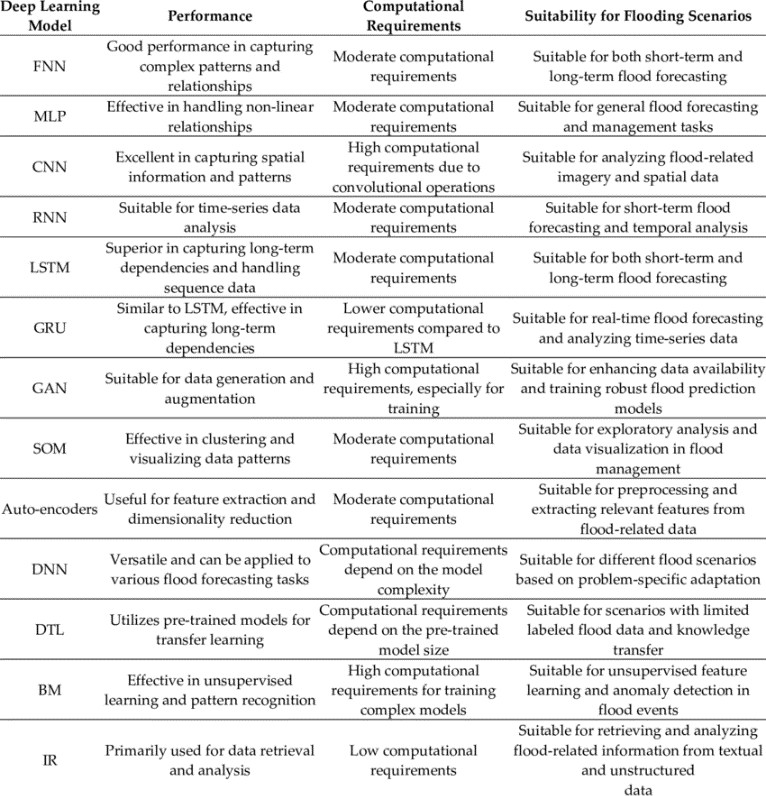
Figure 7: illustrates the architecture of CNN
[20]
.
Here is its structure in more detail:
Convolutional layer:
The convolutional layer plays a vital role in the
operation of CNNs. It is the main building block that
determines the output from the given input. This output is
achieved through a feature detector, which is known as a
kernel. Before understanding what a
kernel does, it should be taken into consideration that
any digital image consists of a matrix of pixel values
from 0 to 255 (channel), where zero corresponds to black
color and 255 to white color. In a typical digital camera,
an image consists of 3 of these channels, each one
corresponding to one of the RGB colors (red, green, blue).
A kernel is a matrix with initial values. When the data
hits the convolutional layer, the layer convolves the
filters over the height and width of the information data,
and while that it computes the dot product between the
input and filter values of each matrix (which are the
initial values of the kernel), therefore building a 2-D
activation map of that filter
[22][23]. Figure 8 visualizes this process. "From this, the
network will learn kernels that 'fire' when they see a
specific feature at a given spatial position of the input,
which is known commonly as activations"
[23]
. Each kernel will have an associated activation map,
which will be stacked along the depth dimension to create
the convolutional layer's whole output volume
[23]
.
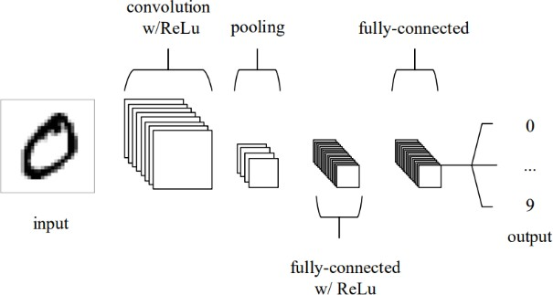
Figure 8: a visual representation of a convolutional
layer
[23]
.
Pooling layer:
The main aim of this layer is to reduce the dimensionality
of the maps, by keeping the most important parts and
discarding the rest, therefore decreasing the parameters,
the time complexity of the model, and the probability of
overfitting
[23]
. In this stage, each activation map in the input
undergoes scaling its dimensionality using the "MAX"
function by the pooling layer. Max-pooling layers are the
most common pooling layers, where they have kernels of a
dimensionality of 2 × 2. "This scales the activation map
down to 25% of the original size - whilst maintaining the
depth volume to its standard size"
[23]
.
Fully connected layer (FC):
The FC layer is a typical deep NN, where it consists of
directly connected layers of neurons, with no other layers
connected in between them
[23]
. In other words, each neuron in each layer is connected
directly to each neuron in the two adjacent layers to this
layer. The aim of this layer is to build predictions from
the activations to be classified into categories and to
associate features to each particular label. Figure 9
shows a simple CNN architecture.
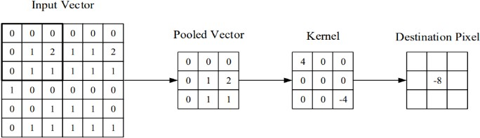
Figure 9: CNN architecture
[23]
.
ii. Discuss how CNNs are adapted for ECG analysis.
The analysis has three main steps: data preprocessing,
feature extraction, and classification. The ECG signal is
characterized by high noise and high complexity, therefore
during the preprocessing stage, the signals are denoised and
padded or cut into segments with equal sizes. In feature
extraction, features can be extracted from the morphology of
the ECG signal in the time and frequency domain or directly
from the heart rhythm
[24]
. The time domain feature is the analysis of mathematical
functions, data, and signals with respect to time, while in
the frequency domain feature, instead of considering how a
signal changes with time, the focus is on the various
sinusoidal components that make up the signal. The spectrum
frequency is found by applying a fast Fourier transform to
the time domain signal, where there are some spectral
features that should be used for CVD classification, which
include the main frequency peak, the spectral component with
maximal power content, and the spectral content below the
main peak. An ECG is a 1-D signal, so it can be fed directly
into 1-D CNN or transformed into an image and processed by
2-D CNN, depending on the specific purpose of analysis
[24]
. The convolutional filters of the convolutional layers
extract features from the ECG signal. Convolutional filters
slide across the signal, capturing local patterns such as
QRS complexes and ST-segment changes. Max-pooling or
average-pooling layers reduce the spatial dimensions of the
feature maps, focusing on the most important information.
Finally, fully connected layers are used to classify signals
into different types of heartbeats or diseases according to
the features extracted
[24]
. CNNs are trained using labeled ECG data, where each
segment is associated with a specific diagnosis.
Detecting Myocardial Infarction (or heart attacks) using
CNNs:
In this study, CNNs are used to detect myocardial infarction
(MI) without relying on the detection of ST deviation or T
peak and without extracting handcrafted features. Instead,
it utilizes continuous wavelet transform and a CNN
architecture to process the ECG data as 2D images. The ECG
signal is divided every five seconds and normalized to the
normal distribution. "The data segment is passed to a
continuous wavelet transform with bior1.5 mother wavelet and
scale from 1 to 256"
[25]
. This transforms ECG signals to be processed by the CNN as
2D data instead of 1D signals. This 2D data is mapped to RGB
images with sizes 256 \* 256 to serve as the input for the
CNN
[25]
. The CNN architecture includes Two convolutional layers,
two max-pooling layers, two ReLU activation layers, two
fully connected layers, and a softmax layer for
classification. The study reports a sensitivity (true
positive rate) of 92.04% and a specificity (true negative
rate) of 82.85% for the proposed CNN- based method. In
conclusion, the findings suggest that the learned features
in the convolutional layers are promising for extracting
relevant information for MI detection.
iii. Benefits of CNNs in ECG analysis
As already discussed above, the ECG is a powerful tool in
the hands of cardiologists as it can lead them to detect
premature cases based on analysis of the formed waves. While
this is a very common method in ECG analysis, it can lead to
a variety of human errors that can cost people their lives.
This is the reason that research into CNNs, as discussed
above, has been heavily leaned on. The exact reason that a
deep learning AI like CNN trumps humans is that its
interpretation heavily differs from one cardiologist to
another. This is because humans can interpret the different
signals and rhythms differently due to either different
backgrounds and experiences, not taking sex, age, and
ethnicity into account, or being biased towards one view
before analyzing the test. The CNN algorithm takes all the
previous into account as it can conclude certain phenotypes
through a patient's electrocardiogram reading thus rendering
itself superior to an average cardiologist, or experts in
some cases, as will be proven later in this paper
[26]
.
While it is proven that CNNs perform better than human
cardiologists
[27]
, what makes them stand out against other AI algorithms?
First of all, computer- generated analysis of ECGs had been
done before by cardiologists, but it was severely limited in
what it could detect because it had to be fed manual
recognition algorithms and was bound by rules set in stone.
This is a problem as ECGs vary greatly from one person to
the other thus these systems couldn't fully process all
input information. Not only that, but the input fed to the
system by humans gave rise to random and systematic errors
in calculations. CNNs, on the other side, are fully
automated and reach an accuracy similar to that of experts
due to their ability to self-learn as discussed before
[26]
. Additionally, CNNs are fed tons of inputs that are labeled
by humans. These inputs often have correlations with certain
CVDs that have not been discovered by experts yet. This
allows CNNs to put these pieces together and offer a level
of analysis way higher than that of expert cardiologists.
Lastly, the ability of CNNs to self-learn means that the
more input, in this case, patients' readings, the more it
learns about CVD patterns thus improving its ability to
detect premature cases
[28]
.
In an attempt to prove the practicality of CNNs in ECG
analysis, some researchers
[28]
, created a CNN algorithm and fed it with information that's
held in most institutions and then combined each
institutional databank with the other to allow the CNN to
have enough data. This data was then analyzed by expert
cardiologists and was then extracted. The CNN was then fed
38 repeating patterns that are the most relevant in ECG
diagnosis.
The CNN was then tested using 38 samples of those same
patterns and the results were as shown in figure 10.
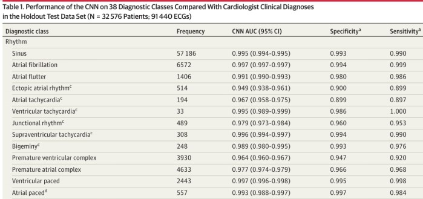
Figure 10: shows a sample of the results of the ECG CNN
analysis
This high rate of specificity and sensitivity shows that
CNNs are highly viable in CVD diagnosis as they were quite
high, especially for rhythm and conduction diagnosis. The
CNN also showed high AUCs (area under the curve) of at least
0.96 for 32 out of 38 diagnoses. The system only faced
exceptions in ectopic atrial rhythm, nonspecific
interventricular conduction delay, prolonged QT, and
posterior infarct
[28]
.
The CNN system also proved successful in detecting 2
dangerous CVDs in the form of Atrial fibrillation (AF) and
Human Cardiac Fibroblasts (HCF). AF is a CVD that increases
the risk of strokes, heart failure, and ER visits. The
danger of AF is only worsened by the fact that 20% of the
affected are asymptomatic. A group of experts performed an
experiment where they used a CNN fed with data from about
126,000 patients that were validated by experts. Patients
were then tested for their sinus rhythm which was analyzed
by the ECG. Any case that was flagged by CNN in the first 31
days was considered AF positive. In the end, the results
were a sensitivity of 79.0%, a specificity of 79.5%, and an
accuracy of 79.4% in detecting AF patients using the input
data thus recognizing AF in its unrecognizable stages. The
case with HCF is similar. HCF is a highly malignant CVD that
can cause premature death. The problem with manual ECG
analysis of HCF is that its readings are non- specific and
are indistinguishable from other CVDs. After a CNN had been
fed data from 2,500 patients and about 50,000 control
samples, the ECG was able to diagnose HCF using its ECG
reading without the more commonly used methods of
echocardiography combined with the clinical history. After
being tested with 612 HCF patients and about 13,000 control
samples, the CNN reached a sensitivity of 87% and
specificity of 90%
[26]
.
While CNNs have a high advantage over cardiologists
[27]
, experts, and other AI methods, they have their
shortcomings. The first one is data control. Data control is
essential for a CNN to facilitate the quality of the input
data which in turn would affect the output data. So, feeding
a CNN with correct, supervised, and reviewed data is
essential in developing a CNN algorithm. The databank also
has to be severely secure to avoid corruption of the data
from third parties. Finally, CNNs are considered black
boxes. Black boxes are models that are not 100% understood
by humans as they cannot pinpoint the methodology the CNN
uses to reach its output thus detrimenting the ability of
human assists
[27]
.
IV. Autocardiogram necessity
i. Integration with new technologies: body sensors, MRI,
echo, and more
The utilization of cutting-edge technology has become
increasingly pertinent in the treatment and diagnosis of
cardiovascular disorders
[29]
. Body sensors are one such technology that can be used to
monitor and measure heart and vascular health parameters
[29]
. These devices, such as smartwatches or wearable devices,
are placed on the body and collect data such as heart rate,
physical activity level, and stress levels
[29]
. Medical professionals can utilize this information to
evaluate cardiac health and modify treatment regimens
[29]
. Magnetic Resonance Imaging (MRI) is also utilized for the
diagnosis and monitoring of heart and vascular disorders
[30]
. Magnetic resonance imaging (MRI) provides a comprehensive
view of the cardiac anatomy, enabling visualization of the
internal organs and vessels to detect any alterations or
anomalies
[30]
. This data can be utilized to create tailored treatment
plans and track patient progress
[30]
. Echography is a medical procedure that utilizes sound
waves to generate visual representations of the
cardiovascular system and blood vessels
[31]
. Medical professionals can visualize cardiac activity,
assess cardiac function, and comprehend the cardiac anatomy
[31]
. Echo is also capable of determining the size and
functionality of the heart's atria and chambers, as well as
diagnosing conditions such as coronary artery stenosis and
defective heart valves
[31]
. In the field of cardiovascular disease, these cutting-edge
technologies are utilized to enhance diagnosis and provide
clinicians with precise information about patients' health
conditions, enabling them to implement effective treatment
plans
[29]
. The integration of these technologies with pertinent
medical data is essential for providing cutting-edge and
efficient care to patients with cardiovascular disease
[29]
. This integration is constantly being developed and is
anticipated to lead to future advances in patient treatment
and care
[29]
.
ii. AI-analyzed ECGs: Accurate decision-making and
complications prediction
Electrocardiogram (ECG) analysis is a way of assessing and
tracking cardiac hobby by studying the electrical indicators
produced in the course of cardiac cycles
[32]
. The development of generation and the fast advancement of
Artificial Intelligence (AI) have enabled the usage of AI
inside the interpretation of ECGs for the motive of creating
particular selections and predicting complications in
cardiovascular diseases
[33]
. Artificial Intelligence-primarily based ECG analysis makes
use of the training of AI models primarily based on earlier
affected person information and complicated algorithms to
process the data and extract pertinent statistics
[33]
. Data are gathered from an extensive populace of patients
with cardiovascular issues and evaluated via trained
fashions
[33]
. These models benefit from insight from data and increase
state-of-the-art understanding of styles and records that
may be accrued from ECG recordings
[33]
. Artificial Intelligence-Superior Electrocardiography (ECG)
can offer good-sized blessings in the treatment of
cardiovascular problems
[33]
. For example, they may be applied to make precise
diagnoses, examine capacity dangers, and suggest appropriate
remedy courses
[33]
. Due to its capacity to manage big volumes of statistics
and to become aware of patterns and unique traits, AI-
assisted ECG analysis can provide precise effects and enable
healthcare professionals to make informed and well-timed
picks
[33]
. In addition, the usage of Artificial Intelligence (AI) to
analyze ECG facts can help in the identification of capacity
headaches related to cardiovascular sicknesses
[33]
. The ECG statistics can then be analyzed by using
artificial intelligence-trained fashions to stumble on
unique characteristics and trends that propose the chance of
complications, consisting of acute coronary syndromes
[33]
. This can facilitate timely diagnosis and treatment to save
you headaches and decorate treatment effects
[33]
. Artificial Intelligence-primarily based Electrocardiograms
(ECGs) are a first-rate step forward in the remedy and
analysis of cardiovascular sicknesses, allowing clinicians
to make informed choices concerning remedy, diagnosis, and
diagnosis of capability complications
[33]
. This technology allows scientific professionals to enhance
patient consequences and enhance first-rate care for those
laid low with cardiovascular problems
[33]
.
V. Conclusion
After reviewing multiple research papers and filling in
others' gaps, the paper was able to deduce the validity of
AI-aided ECG analysis. It was first concluded that
autonomous analysis of an electrocardiogram using a
deep-learning AI method called a convolutional neural
network. This method proved a high success rate as it
successfully deciphered the patterns of the ECG and their
implications. Not only that but it was able to accurately
detect cardiovascular disease at a higher success rate than
cardiologists and much earlier. It also proved to be able to
interact with IOT technologies such as body scanners and
smartwatches to offer 24/7 tracking of the human heart
without intrusion or discomfort and at great accuracy.
Finally, it was able to perceive complications due to CVDs
before their occurrence and prevent the advancement of the
disease. While it is not known when this technology will be
widely available to the public, it has without a doubt
proven itself. Also while this tech is highly accurate and
precise, it takes years to train the algorithms responsible
for it, which might render it highly impractical until a
database is established.
VI. References
Auroras as Habitability - Indicators Exploring the Conditions
for Life on Exoplanets
Abstract
For thousands of years, humans have marveled at auroras —
lights from solar winds interacting with Earth's magnetic
field. Although we know a lot about auroras in our solar
system, we are just starting to study them on exoplanets.
Studying these lights on other planets helps us learn about
their magnetic fields, winds, and atmospheres. This review
dived into emerging exoplanetary aurora research, studying
how we detect them from far away. We discussed what these
auroras can tell us about magnetism, habitability, and
possible life beyond our solar system. The Aurora borealis
indicates planet habitability by indicating a magnetic
field, which is crucial for life as it helps to maintain
water on the surface of the planet and protects it from
harmful radiation from its parent star. The study of auroras
in exoplanets is essential to our understanding of the
universe and its diverse phenomena. We also explored the
challenges of observing exoplanetary auroras, shedding light
on future discoveries about these radiant displays. Delving
more into potential biosignatures, it can be stated that the
magnetic fields of the exoplanets can be one of the leading
signals of their habitability. According to our analysis of
various works such as those of Ramirez and Lazio, who
considered magnetic fields to be of great importance in
protecting habitable zones, we concluded that auroras are
reliable indicators of any form of life on exoplanets.
I. Introduction
Auroras, also known as polar lights, are natural light
displays that occur in the polar regions of planets. They
are instigated by solar ionized particles plummeting into
the Earth's upper atmospheric layer at velocities of up to
45 million mph. The magnetic field of the Earth afterward
guides the particles toward the Arctic and Antarctic
regions. The charged particles enter Earth's atmosphere,
exciting gas atoms to generate auroras. The color of auroras
is determined by the gas mixture present in the atmosphere.
The aurora's green color comes from oxygen, while nitrogen
creates purples, blues, and pinks. There are several places
around the world where auroras often appear. Some of the
popular destinations include Iceland, Norway, Finland,
Sweden, Canada, and Alaska.
While auroras have been extensively studied in our solar
system, little is known about auroras in exoplanets.
Observations and potential findings about auroras in
exoplanets have been limited because of the difficulty in
identifying them from Earth. However, new advancements in
satellite telescope technology such as the Low-Frequency-
ARray (LOFAR), an SKA predecessor that has exceptional
sensitivity at 150 MHz, opened the possibility of detecting
radio waves from neighboring exoplanets and their host
stars, enabling us to make more exact observations. For
instance, in research '[1]
, auroral emissions in the atmosphere of a hot Jupiter
exoplanet were discovered. The research discovered that the
planet's magnetic field and its host star's stellar wind
interacted to produce the auroras. Other scientists
predicted that Proximab, the exoplanet closest to us
orbiting an M dwarf star, could be a likely candidate for
producing detectable radio emissions from Earth due to its
proximity
[2]
. The prediction was announced in 2017 and was confirmed in
2019 by A Vidotto and others. They concluded that GJ 876b in
the constellation of Aquarius, YZ Cet b in the constellation
of Cetus, and GJ 674 b in the constellation of Ara could
also present good prospects for radio detection
[3]
. In the same year, scientists discovered that planetary
magnetic fields could be one of the key ingredients for
determining planetary habitability
[4]
.
Exploring auroras in exoplanets is critical in our quest to
understand the universe and the various phenomena that occur
within it. Auroras are a beautiful and awe-inspiring sight,
but they also provide valuable information about the
magnetic fields of planets and the processes that drive
them. By studying auroras in exoplanets, we can gain insight
into the conditions and environments of these distant
worlds, which can ultimately help us better understand our
planet and its place in the cosmos. Additionally, studying
auroras in exoplanets can help us identify potentially
habitable worlds since the presence of auroras may indicate
the presence of protective magnetic fields that can shield
the planet's surface from harmful cosmic rays. Overall,
exploring auroras in exoplanets is a crucial step to our
ongoing exploration of the universe and the search for life
beyond our planet.
Our research focuses on investigating auroras as a potential
biosignature for detecting life on exoplanets since they can
reveal magnetic fields generated by the planet's core, which
are critical for life's development and sustenance. The
presence of planetary magnetism could significantly impact
the long-term survival of the atmosphere and liquid water on
rocky exoplanets. The discovery of habitable exoplanets
would have profound implications on our understanding of the
universe and our place in it. It would also raise new
questions about the nature of life and its ability to thrive
in a variety of environments.
The outline of the paper is as follows. The next section
details the early studies on the presence of exoplanetary
auroras, both pre-2000 and post-2000. Section 3 is entirely
devoted to auroras and their formation. It also covers the
many varieties of auroras and their occurrence on other
planets. Section 4 provides a comprehensive explanation of
the magnetic field, its properties, and the general concepts
of the Magnetic Dynamo Theory. This section also contains a
mass of information about magnetic fields in other planets
and their presence in Earth-like exoplanets. The influence
of the auroras on the habitability of exoplanets is
discussed in Section 5 of the paper. Section 6 presents an
instance of a habitable exoplanet that also experiences
aurora on its surface. Section 7 reviews previous research
on the indication of habitability through auroras and
magnetic fields. The discussion section discusses firm facts
and evidence as well as our view while the concluding
section summarizes our review.
II. Early studies
i. Pre-2000 studies on the presence of exoplanetary auroras
In this part of the section, we provide a short overview of
'historical' (pre-2000) works on auroras in exoplanets. The
exploration of auroras in exoplanets prior to the year 2000
was limited due to technological constraints. Hence, studies
on auroras in exoplanets were primarily theoretical and
conceptual. However, it laid the foundation for
understanding the potential presence and characteristics of
these fascinating phenomena beyond our solar system.
Researchers laid the groundwork by adapting our
understanding of magnetospheric physics to potential
exoplanetary scenarios and set the stage for future
advancements.
The work of Donahue and colleagues in the late 1970s was
instrumental in shaping early discussions on exoplanetary
auroras
[5]
. They speculated on the possibility of auroral emissions
resulting from interactions between a planet's magnetic
field and the solar wind, suggesting that such emissions
could be detected through spectroscopic analysis.
Building upon this foundational concept, P. Zarka's study
further expanded our understanding
[6]
. Published in the Journal of Geophysical Research in 1998,
this seminal work delves into the correlation between
auroras and radio emissions in the outer planets of our
solar system. By examining these radio emissions associated
with auroras, the study offers insights into the complex
interactions between planetary magnetic fields, charged
particles, and atmospheric gases. Zarka's research
contributes to our knowledge of auroras and paves the way
for studying similar phenomena in exoplanetary systems.
Another important advancement was the development of the
Magnetospheric Imaging Instrument (MIMI) on the Cassini
spacecraft, which was launched in 1997. MIMI was designed to
observe the magnetospheres of Saturn and its moons, but it
also provided valuable data on the auroras on Saturn. This
data helped scientists better understand the processes that
drive auroras in exoplanets.
ii. Post-2000 studies on the presence of exoplanetary
auroras
Over the past few years, there has been an upturn in the
study of auroras in extrasolar planets, highlighted by
noteworthy improvements in observational methods and
theoretical models. In this part of the section, we dive
into the post-2000 era of research on this engaging
phenomenon, marking the significance of this period.
Focusing on work after the year 2000 is crucial because of
the accelerated speed of technological advancements and the
coming breadth of our understanding of planets beyond our
solar system. Ongoing progress in space-based telescopes,
spectrographic techniques, and computer simulations have
granted scientists the opportunity to gain new insights into
the proportions of atmospheres and magnetospheres in
exoplanets.
Extending this line of reasoning, the study by W. M. Farrell
et al theorized that magnetized exoplanets may emit radio
frequencies, similar to the planets in the Solar system with
emissions reoccurring during the planetary rotation period
[7]
.
Expanding on this premise, the study authored by Helmut
Lammer et al. in 2007, revealed that extreme ultraviolet
(XUV) radiation from active M stars leads to atmospheric
expansion and extended exospheres
[8]
. It suggested that Earth-like exoplanets with weakened
magnetic spin orientations might suffer a decrement of
dozens to hundreds of bars of atmospheric pressure due to
coronal mass ejections (CME) -induced O ion pickup.
Atmospheres with CO2/N2 mixing ratios below 96% experience
increased exospheric temperatures and expanded environments,
leading to stronger atmospheric erosion. Magnetic moments
are crucial for protecting exoplanets' expanded upper
atmospheres and for the detectivity of habitability. This
study also revealed that Earth-like exoplanets orbiting
around low-mass M stars with high CO2 mixing ratios and
strong magnetic dynamos can preserve their atmospheres if
exposed to XUV fluxes less than 50 times the Sun's current
flux
[8]
. However, stars emitting XUV radiation higher than 70-100
times the solar flux may pose problems for atmospheric
stability due to CME ion pickup. The combination of intense
XUV radiation and CME plasma interaction can result in high
non-thermal atmospheric loss rates of 10-100%. CO2-rich
exoplanets exposed to lower XUV radiation should have strong
magnetic moments to preserve their atmospheres
[8]
.
The work by J. F. Kasting et al. states that exoplanets
orbiting M dwarfs are believed to be the most possible for
detecting habitable zones since they are able to maintain
liquid water on their surfaces
[9]
.
Developing this core idea, the research of A. West in 2008
suggested that the habitability of M dwarf planets is
influenced by their active host stars and high flare and
coronal mass ejection rates, which remain active for a
significant portion of their lives
[10]
.
However, another study called "Effects of M dwarf magnetic
fields on potentially habitable planets" by A. A. Vidotto
proved that intense activity could pose a threat to
habitable zone planets due to high-energy radiation and
intense stellar wind/CME, potentially causing the loss of
their atmospheres
[11]
. They found that hypothetical Earth-like planets with
similar terrestrial magnetization would have magnetospheres
that extend up to 6 planetary radii. To sustain an
Earth-sized magnetosphere, the planet would need to orbit
farther out or require a magnetic field ranging from a few
Gauss (G) to a few thousand Gauss (G). The study also found
that the required rotation rate for early- and mid-dM stars
are slower than solar ones.
Exoplanetary radio emission, powered by intense winds and
CMEs, can be used to probe magnetism in exoplanets, despite
potential dangers to planetary atmospheres.
B. Burkhart and A. Loeb predicted Proxima b, our closest
exoplanet, could emit radio emissions as high as 10−26
W⋅m−2⋅Hz−1 (1 Jy) at 0.02 MHz
frequency
[12]
.
Now returning to M dwarfs, previous works of A. A. Vidotto
suggested that rocky planets are more likely to have
magnetic moments similar to or smaller than Earth's, so
lower magnetic field values are preferred
[13]
. However, the study found a weak dependence of the planet's
radio flux density on its magnetic field strength. The study
reveals that K2-45b has the largest radio power due to its
size, but its estimated flux density is small. Other
planets, like YZ Cet b, GJ 1214 b, GJ 674b, GJ 436b, and
Proxima b possess the highest magnetic induction levels.
III. Auroras
i. Auroral formation mechanisms
Auroras occur as a result of interaction between charged
particles from the Sun and the magnetic field of the Earth.
Specifically, the heat from the Sun's outermost layer of
atmosphere, the corona, makes its hydrogen and helium atoms
vibrate and shake off protons and electrons. These particles
are then too fast to be contained by the Sun's gravity after
which they group as plasma. It travels away from the sun and
that is called the solar wind. When this electrically
charged gas collides with atoms and molecules in the Earth's
atmosphere, it emits energy in the form of light. This
mechanism is, therefore, called "Solar Wind and
Magnetosphere Interaction" (Figure 1)
[14]
.
The Earth nevertheless creates a detour, the magnetosphere,
to stop the solar wind from entering the Earth directly.
When the magnetosphere is overwhelmed by a fresh wave of
visitors, the wind has the chance to resume its journey to
the atmosphere. This phenomenon, known as a coronal mass
ejection, happens when the Sun launches a huge ball of
plasma into the solar wind. A magnetic storm is produced
when one of these coronal mass ejections strikes Earth and
overpowers the magnetosphere. The magnetosphere is put under
extreme strain by the powerful storm until it abruptly snaps
back, hurling some of the detoured particles toward Earth.
They are pulled down to the aurora ovals by the magnetic
field's retracting band. Hence, "Magnetic Field Alignment"
takes place in regions closer to polar circles
[15]
.
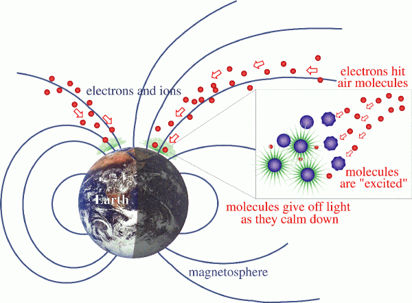
Figure 1: Process of formation of auroras
[18]
.
With the assistance of oxygen and nitrogen atoms 20 to 200
miles above the surface, the Sun's particles ultimately
generate their stunning light display after traveling 93
million miles across the galaxy. The atomic constituents
get activated and radiate light when they make contact
with the atmospheric composition at the atomic level.
Hence, this process is known to be the "Excitation of
Atmospheric Gases"
[16]
.
"Relaxation and Emission of Light" occurs when the hues of
the sky are influenced by the photon's wavelength from an
atom. The tones of sapphire and scarlet are a byproduct of
the excitation of nitrogen atoms, while the shades of lime
and crimson are yielded through the excitation of oxygen
atoms
[17]
.
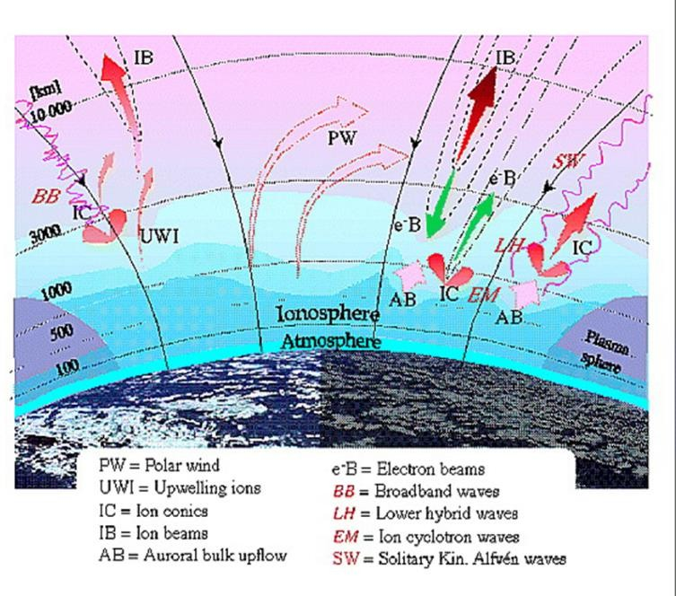
Figure 2: Noon-midnight cross-section of
ionosphere−lower magnetosphere summarizing phenomena
involved in the heating and escape of ionospheric
plasmas
[19]
.
A magnetic field significantly impacts the interaction
between a planet and the solar wind, affecting the global
distribution of energy dissipated into atmospheric gases.
A planet without an intrinsic magnetic field may appear
more exposed to atmospheric ablation, but the net loss may
be comparable with or without a magnetic field. The
presence of a magnetic field concentrates electro-
mechanical energy dissipation at the planetary end of flux
tubes, which link with the boundary layer between the
solar wind and its magnetic field and the planetary
magnetic field and its enclosed plasma. This region
accelerates charged particles, generating the aurora
[19]
.
The high-latitude ionosphere-magnetosphere region is a
rich and interesting area in the space plasma universe,
accessible for direct measurements. Its energetic
processes contribute to the expansion and escape of the
ionosphere beyond geospace's outer regions. Figure 2
illustrates the range of processes driving these outflows
upward and outward
[19]
.
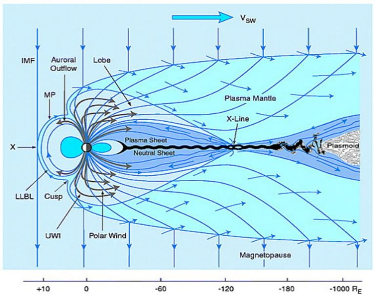
Figure 3: The global circulation of plasmas in Earth's
magnetosphere occurs during the noon-midnight meridian
[19]
.
Ionospheric outflows from high-latitude ionosphere- lower
magnetosphere generation regions flow on magnetic field
lines into magnetospheric regions like the tail lobes and
plasma sheet. If these outflows remained on polar lobe
field lines, they would be lost from the magnetosphere.
However, they join the convective circulation of plasma in
the magnetosphere as they expand out of the ionosphere.
These emerging ionospheric plasmas flow across the
magnetic field into the closed field line region of the
plasma sheet, carrying the current responsible for the
stretched magnetotail. Ionospheric flows from nightside
auroral regions are injected directly into the plasma
sheet, which is the primary source of plasmas for the
quasi-trapped hot plasmas of the inner magnetosphere.
These ionospheric plasmas populate the ring current in
considerable quantities. (Figure 3)
[19]
.
ii. Types of Auroras
A diffuse aurora is a widespread and faint type of
auroral display resulting from the scattering of charged
particles along the Earth's magnetic field lines,
creating a gentle and uniform glow in the night sky.
They lack distinct shapes and patterns. Typically, they
are seen during periods of low geomagnetic activity. The
term "diffuse" describes the spread-out nature of the
light emitted by this type of aurora
[20]
.
Discrete auroras are well-defined and localized bright
regions within the auroral display, and they are
characterized by distinct arcs or bands of concentrated
light in the sky. Some researchers even reported
occasional mysterious sounds. Unlike other types of
auroras, discrete ones have ribbon-like structure which
shapes them into intricate shapes. This term describes
the specific, clearly visible features of auroras that
stand out from the overall auroral glow
[20]
.
An "Alfvén Aurora" occurs when Alfvén waves, which are
plasma waves with a component parallel to the magnetic
field, interact with charged particles, particularly
electrons. This interaction leads to the acceleration of
electrons and contributes to the formation of auroral
emissions. Alfvén auroras were first proposed as a
theoretical concept in the late 20^th^ century and were
several years later observed and confirmed through
satellite and ground-based observations. They have
unique features such as vertical stripes and dynamic
movements. The term "Alfvénic" is derived from Hannes
Alfvén, a Swedish physicist who made a significant
contribution to the studying the formation of auroral
emissions
[20]
.
iii. Aurora properties
Shape, altitude of emission, solar activity influence, and
sounds are all various characteristics of auroras.
Shape: Auroras often appear as waves with smooth arcs or
chaotic patterns due to three factors which are
convergence of magnetic field lines towards magnetic
poles, collision of charged particles with gas
molecules, and atmospheric density
[21]
.
Wavelength color relation: The different colors of
aurora are produced when different atoms and molecules
are excited to various energy levels. For instance, the
most common color pale green can be seen at the
wavelength of approximately 5500 nm as a result of
oxygen having been excited to the Singlet S state,
whereas another less common color deep red is visible at
the wavelength of around 6250 nm as a result of oxygen
having been excited to the Single D state
[22]
.
Activity: During periods of high solar activity, such as
solar flares and coronal mass ejections, auroras can
become more vivid and occur at lower latitudes than
usual
[23][24]
.
Sounds: People have occasionally described hearing
tremulous sounds or crackling noises connected to
auroras. These noises are thought to be caused by
electromagnetic waves from the auroras interacting with
the magnetic field and atmosphere of the Earth. Further,
the experiments should be repeated to make sure the
sounds come from auroras
[18]
.
IV. Aurora simulations
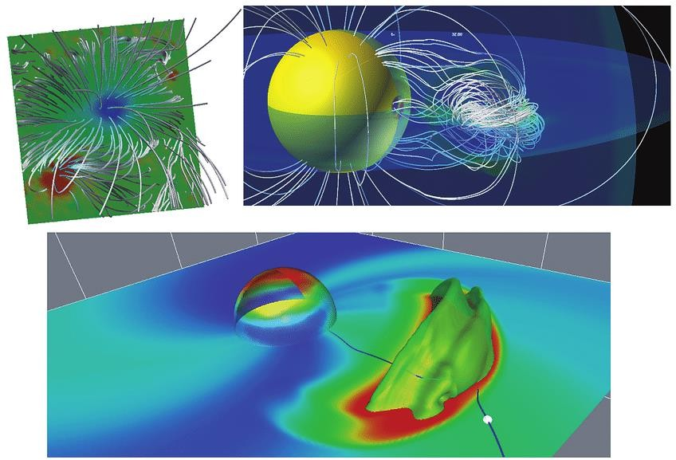
Figure 4: The structure of magnetic field lines in the
flaring region and CME was computed using data from the
Hinode satellite observed between December 12 and 13,
2006
[25]
.
The Japanese satellite Hinode conducted an experiment to
establish initial and boundary conditions for solar flare
onset and CME propagation from the sun to Earth. The
large-scale structure of the quiet auroral arc is believed
to be formed due to the interaction between magnetosphere
and ionosphere, with ionospheric feedback instability
being a candidate. Auroral energetic electrons, which
excite emission lines in aurora, need to be accelerated by
an electrostatic double layer created by kinetic processes
in micro-scale instability (Figure 4).
The results of the interlocked space weather simulations
of the solar active region model (top- left), the solar
coronal model (top-right), and the heliospheric model
(bottom) are shown in Fig.4
[25]
.
In the same year, Macro-Micro Interlocked (MMI) examined the
impact of microscopic instability on quiet auroral arc
formation. The left panel of Figure 5 displays the
distribution of ionospheric plasma density from 18:30 to
19:00 local time, with a large peak located around 70.5˚
latitude. The increase in plasma density is attributed to
the ionization of accelerated electrons produced by
microscopic instability, which is triggered by the linear
growth of field-aligned current. The growth of plasma
density reduces the absolute value of the latitudinal
electric field at ionosphere height, as shown in the middle
panel of Fig. 5. The right panel of Fig. 5 illustrates how
the distribution of field-aligned current is influenced by
the variation of the ionospheric electric field
[25]
.
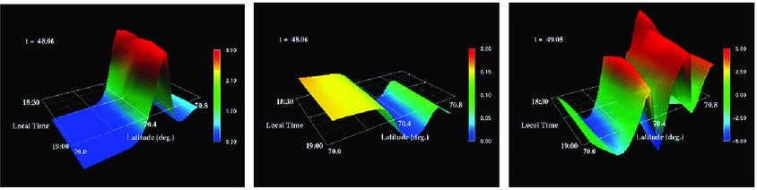
Figure 5: MMI aurora simulation's result
[25]
.
V. Auroras on other planets and moons
Recent developments in the exploration of planets have
discovered auroral phenomena on different planets and moons
in our solar system. This part of the section explores
noteworthy examples of auroras out of Earth's confines,
contributing to a deeper understanding of space weather
phenomena.
Jupiter, a gas planet known for its enormous magnetic field,
provides a good example of auroras on a planetary scale.
Driven by the interaction between Jupiter's magnetic field
and charged particles, these auroras exceed Earth's in size
and intensity
[26]
.
Auroral phenomena appear on Saturn and its moon Enceladus
too. The latter one contributes charged particles to
Saturn's magnetic field. This interaction results in
auroral-like emissions, also referred to as "atmospheric
jets". Atmospheric jets share some similarities in
appearance with auroras but they are different in their
origin and characteristics. Atmospheric jets tend to occur
at lower latitudes and may involve different physical
processes not yet understood by scientists
[27]
.
Uranus and Neptune, located on the outer fringes of our
solar system, produce faint yet intriguing auroral
emissions. They showcase highly tilted magnetic fields and
their auroras can occur far from the poles. These emissions
provide insights into the complexities of auroral formation
in solar wind interactions and unique magnetospheres
[28]
.
On Mars, aurora-like phenomena have the form of "discrete
auroras" or "nightglow". They contribute to the mosaic of
space weather dynamics in our solar system
[29]
.
IV. Magnetic field
Magnetic fields are a crucial phenomenon not only in our
solar system but also beyond it. This is an important tool
for observing, studying, and analyzing planets and giving
them characteristics. It causes various phenomena such as
sunspots, coronal heating, solar areas, and coronal mass
ejections. Understanding the nature of matter in the Solar
System is essential for understanding the mechanism
generating Earth's geomagnetic field and other planets'
magnetic fields. The magnetic field provides information
about a body's internal structure and thermal evolution, as
well as their histories. The presence and behavior of these
fields are often triggered by electrical currents deep
within the planet, providing insight into its physical state
and dynamics
[30][31]
.
All planets in the solar system have or have had internal
magnetic fields, except Venus, the Moon, and Jupiter's
satellite Ganymede. Other bodies in the solar system may
have generated magnetic fields in the past
[32]
.
Mercury: Mercury, a billion-year-old planet, has a 100 times
weaker magnetic field than Earth, which was once as strong
as Earth's, and is the only planet in our system including
Earth whose magnetic fields are generated by liquid metal
movement
[30]
.
Venus: With a slow rotation rate of 243 Earth days, Venus
uses a unique form of magnetism to protect itself from solar
winds. Its upper atmosphere, the ionosphere, interacts with
solar particles, creating a magneto tail shaped like a
jellyfish tentacle, facing away from the sun
[30]
.
Earth: Earth's magnetic field is generated by liquid metal
at its core and its 24-hour rotation. Other planets, except
Venus and Mars, have magnetic fields or traces of magnetism
that differ from Earth's
[30]
.
Mars: Mars does not have a conventional magnetic field but
instead has powerful magnetic crustal fields that create
magnetism if located correctly on the surface. These
protective bubbles help maintain Mars' vulnerable atmosphere
[30]
.
Jupiter: Jupiter, the largest planet in the solar system,
generates the largest magnetic field even larger than the
Sun. This happens due to its fast rotation and interactions
in its outer core, likely made of dense, molten liquid
metallic hydrogen
[30]
.
Saturn: Saturn's magnetic field aligns with its axis of
rotation, generated by liquid metallic hydrogen and heated
by gravity and rapid rotation of its rocky core
[30]
.
Uranus: Uranus' magnetic field is complex, tilting 59
degrees and running off center. It has two poles in some
places and four elsewhere. It meets the usual requirements
for a magnetic field with a rotation period of 18 Earth
hours and electrically charged convection currents near the
core. Scientists believe this unusual magnetic field could
be caused by electrical currents in the planet's salty ocean
[30]
.
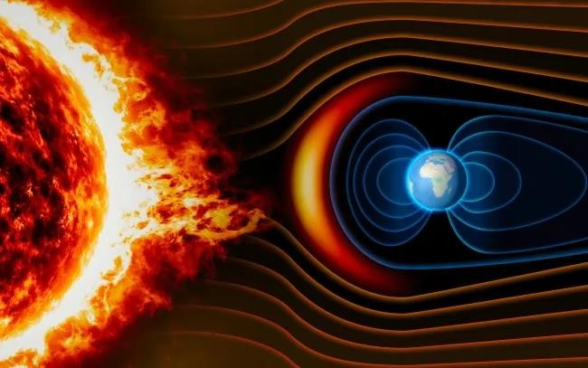
Figure 6: Earth's normal magnetic field
[34]
.
Neptune: Neptune's magnetic field is off-center and tilted
away from its axis of rotation, similar to Uranus.
Scientists believe magnetic or electrical interactions
occur closer to the planet's surface, similar to Earth
[30]
.
The existence of magnetic fields is an important aspect of
the habitability of the planet. The magnetic field
protects us from harmful radiation from the Sun and helps
keep our atmosphere from leaking into space (Figure 6)
[33]
.
i. Planetary Magnetism Development
All discoveries in planetary Magnetic fields were made by
observing magnetized objects such as the Earth or the Sun.
It can be noticed that since ancient times people have known
the existence of certain forces inherent in the Earth and
the first recordings about it were written in 11^th^ century
by the Chinese. Willian Gilbert made the first attempt to
explain the mysterious phenomenon in 1600 presenting that
the Earth was magnetic because it was rotating. However,
another explanation was proposed by Heinrich Schwabe in
1826-1843 where he discovered the 11-year sunspot cycle and
noted that geomagnetic storms corresponded to sunspot
maximums
[35][36][30]
.
In 1907, Carl Stormer and Hale discovered that charged
particles could be trapped in a dipole or magnetized sphere,
and in 1908, Hale observed that sunspots were intensely
magnetic
[37]
. Joseph Larmor introduced the fluid dynamo model in 1919,
proposing that sunspots and the Sun's magnetic field were
the result of a self-sustaining dynamo in the plasma
interior
[38]
. Blackett's magnetic theory, which did not explain Earth's
pole reversals, was replaced by Parker's fluid dynamo model
in 1955, which is still used today, despite other proposed
mechanisms
[39][40]
.
ii. Magnetic dynamo theory's general concepts
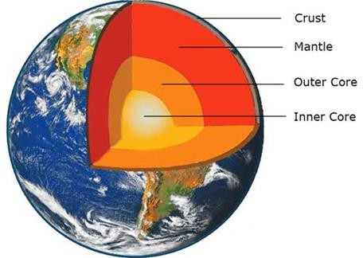
Figure 7: Composition of the Earth
[41]
.
The dynamo theory explains Earth's main magnetic field as
a self-sustaining dynamo. Fluid motion in Earth's outer
core generates an electric current, which interacts with
fluid motion to create a secondary magnetic field. This
secondary magnetic field is stronger than the original and
lies along Earth's rotation axis. The heat from
radioactive decay in the core is thought to induce
convective motion (Figure 7)
[30]
.
Electrons move through a liquid, creating electric
currents and converting energy into a magnetic field.
Planetary bodies like Earth, Moon, Mars, and asteroids
have magnetic fields, which reveal the formation of a
metallic core. This field is unique in remotely sensing a
core buried deep beneath a body's surface. This process
can tell a lot about the origin of the planetary body and
even the history of climate change for that body. To fully
grasp planetary magnetism, it is important to comprehend
the physics of dynamos and how they affect the body in
which they are found
[42][43][30]
.
iii. What then generates the magnetic field?
The magnetic dynamo theory suggests that a magnetic field is
created by swirling motions of liquid conducting material in
planet interiors. Metallic materials, such as hydrogen in
Jupiter and Saturn, have free electrons that can move
around, forming a magnetic field. To sum up, a planet's
magnetic field is generated by a moving charge and a liquid
conducting material in its interior. Rapid rotation
increases the stirred material, making the magnetic field
stronger. However, if the liquid interior becomes solid or
rotation slows, the magnetic field weakens
[44][45][30]
.
iv. Properties of Planetary Magnetic Fields
There are two types of magnetic fields, namely remanent and
intrinsic fields with an intermediate form induced by
external forces. Remanent fields indicate an object that was
once magnetized and still retains magnetism, while intrinsic
fields are active phenomena resulting from an object's
property. Most planetary magnetic fields are self-sustaining
intrinsic fields generated by an internal dynamo, following
the model proposed by Parker (1955) and later modified to
become Kinematic Dynamo Theory (Fortes 1997). This model
requires a planet to have a molten outer core of a
conducting material, convective motion within the core, and
an energy source to power the convective motion. Remanent
fields are stable and not suitable for fields with changing
polarity
[46][47]
.
A dynamo can function even if it's embedded in a
time-varying magnetic field, such as a parent planet or the
passing solar wind. This interaction between the solar wind
and a planetary magnetosphere is equivalent to a dynamo,
modulated by changes in the solar wind's plasma flow.
Planets like Earth, Mercury, Jupiter, and Saturn generate
magnetic fields in their interiors, surrounded by invisible
magnetospheres. These magnetospheres deflect charged
particles of the solar wind, creating a protective bubble
around the planet, ending in an elongated magneto tail on
the lee side. Solar ultraviolet radiation creates an
ionosphere in the upper atmosphere, which interacts with the
solar wind and magnetic field. This creates a magnetosphere
on the left side of a planet, causing particle flow to slow
and divert. The importance of magnetospheres is crucial for
planets
[46][47]
.
Celestial bodies that have weak magnetic fields rotate very
slowly. This relates to the Moon and Venus, but there can be
exceptions where the planet rotates quickly but still does
not have an appreciable magnetic field (e.g. Mars). The very
logical reason for this is that the core is no longer
liquid. Larger gas planets have magnetic fields comparable
to or larger than Earth's due to their rapid rate of
rotation
[46][47]
.
v. Earth-like exoplanets' magnetic fields
The study presents magnetic dipolar moment estimations for
terrestrial planets with masses and radii up to 12 ME and
2.8 RE, and different rotation rates
[47]
. The results show that the pure iron core, minerals
perovskite, and ferropericlase ((Mg, Fe) SiO3) mantle
composition models provide the most conservative dipolar
magnetic moment estimates for assumed planetary interior
conditions. The study also includes the locations of
transiting low-mass planets GJ 1214b, CoRoT-7b, Kepler-10b,
and 55 Cnc e, and estimated locations of non-transiting
planets Gl 581 d and Gl 581g. In the fast-rotating regime,
strong enough dipolar magnetic moments can be generated for
all planets, with the surface of those planets potentially
shielded. However, in the slow rotation regime, not all
planets will have dipolar magnetic moments strong enough to
shield their surfaces. Planets with masses below ~2ME will
have dipolar magnetic moments less than Earth's, even for
very fast rotation rates
[48]
.
V. Influence of auroras on the habitability
Modern Earth is exposed to XUV and particle emissions from
the quiescent and active Sun, including solar-wind plasma
with embedded magnetic fields. Extremes of these external
influences occur in the form of solar flares, CME- driven
plasma, magnetic-field enhancements, shocks, and related
solar-energetic particles (SEPs). Galactic cosmic rays
(GCRs) diffuse into the inner heliosphere and the planetary
atmospheres, with specific atmospheric and surface
influences potentially consequential for our technological
society and the biosphere
[49]
.
The Earth's current ion outflowing at high latitudes
consists of a light ion-dominated polar wind and heavier ion
outflows, primarily composed of oxygen ions associated with
auroral activity
[50]
. The combined oxygen ion outflows are estimated to be
10^24^ ions per second for low geomagnetic activity and
10^26^ ions per second for high activity. The solar wind
does not directly interact with the ionosphere due to a
planetary-scale magnetic field. However, it does interact
with the Earth's magnetosphere through magnetic-field
reconnection, allowing solar-wind momentum and energy to be
coupled into the magnetosphere and affects the high latitude
ionosphere, mainly in the auroral zone and cusp region
[51]
. This connection was explored by a study using data from
the Fast Auroral Snapshot (FAST) Small Explorer in 2005 and
was extended in 2011 by analysis to include the effects of
Alfvén waves
[52][53]
.
VI. Impact on Proxima b's habitability
Proxima Centauri is the third and smallest member of the
triple star system Alpha Centauri, the closest star to our
Solar System. Proxima Centauri has two known exoplanets and
one candidate exoplanet: Proxima Centauri b, Proxima
Centauri d, and the disputed Proxima Centauri c.
Proxima Centauri b, with a minimum mass of 1.27 M☉ and an
orbital period of 11.2 days, is clearly located in the
circumstellar habitable zone (CHZ). This information is
supported by various studies and research
[54][55]
. The planet's upper mass limit is unknown, but it could be
rocky based on planetary population statistics from the
Kepler mission
[56]
. It is also unclear whether there could be more planets
around this M5.5V red dwarf star with its effective
temperature Teff of 3050 K
[57][58]
. The habitability of Proxima Centauri is influenced by
factors such as planetary mass, orbital evolution, and
atmospheric properties. Since Proxima Centauri is
non-transiting, the key parameter ranges determining the
state of Proxima b's atmosphere are large
[59]
. For both cases, there are parameter ranges for which it
could still possess a significant amount of water. Numerous
model studies have shown scenarios for which Proxima b could
support periods of liquid water, depending on the H2, O2,
and CO2 evolution of its atmosphere
[60]
. The study found the possibility of an even broader region
of liquid water with their 3D- general circulation model
(GCM) studies including a dynamic ocean
[61]
. The environments of close-in terrestrial-type planets
within the CHZ from their parent stars can be hospitable to
life. This answer requires the conditions of atmospheric
space weather (SW) around red dwarf stars including
quiescent and flare-driven XUV fluxes and their properties
of stellar winds. Discovery presented XUV emission from
Proxima Centauri, using reconstructed XUV fluxes that appear
to be over 2 orders of magnitude greater at the planet
location than that received by the Earth to evaluate the
associated ion escape. The calculated escaping O^+^ mass
flux from Proxima Centauri appears to be high, consistent
with the results of the study. The study also discussed the
impact of thermospheric temperature and polar cap area on
the escape fluxes. A hotter thermosphere is expected to
result in stronger outflows, but a larger polar cap area
also results in more net mass flux of ionized particles lost
to space
[62][63]
.
Research characterized the effects of stellar wind from
Proxima Centauri on Proxima Cen b, finding that the wind's
dynamic and magnetic pressure is extremely large, up to
20,000 times that of the solar wind at 1 Astronomical Unit
(AU which is about 93 million miles or 150 million
kilometers)
[64]
. The planet experiences fast and large variations in
ambient pressure, making the magnetosphere surrounding it
vulnerable to strong atmospheric stripping and atmospheric
escape. The simulations suggest Proxima Cen b may reside in
the sub- Alfvenic stellar wind at least part of its orbit
[64][65]
.
VII. Previous research on detecting habitability using the
aurora and magnetic field
Within this specified part of the section, we present a
concise summary of scholarly investigations that explore the
influence of auroral activity on the potential habitability
of exoplanets. These studies are of crucial importance in
our quest to identify habitable worlds beyond our solar
system
[66]
.
Since auroras are caused by the collision of charged
particles with a planet's atmosphere, this collision can
affect the chemistry of the atmosphere by producing reactive
species which could either enhance or deplete greenhouse
gases essential for regulation of temperature. The changed
chemistry can influence the planet's ability to retain heat
and its overall habitability. While not directly referring
to exoplanets, the studies on this statement such as of J.
Maldonado et al. discuss how this concept can help us
understand the potential role of auroras as biosignatures in
exoplanets
[66]
.
While auroras themselves may not be the primary focus,
factors relating to stellar influence are considered when
assessing habitability. A research paper by A. L. Shields
suggests that the type and activity level of a host star,
such as an M-dwarf star, can significantly impact the
habitability of extrasolar planets
[67]
. Thus, active stars can produce more intense auroras and
radiation, potentially impacting habitability.
Magnetic fields, another key factor, play a considerable
role in protecting exoplanets within habitable zones. These
zones around pre-main- sequence stars include young stars
where exoplanets might form. So, the work of Ramirez
elaborates on how magnetic activity, including auroras, can
influence the habitability of such planets
[68]
.
J. Lazio et al. would agree with the aforementioned author,
clarifying that magnetic fields protect planets from solar
and cosmic radiation which is exactly why their presence is
considered to be a critical factor in exoplanet habitability
[69]
.
Different energy sources support life on exoplanets which
could include the energy emitted during auroras. While the
study of Kopparapu and others does not directly address
auroras, it still explores the habitable zones around
main-sequence stars, considering various factors that
influence planetary habitability [70].
VIII. Discussion
The main factors influencing the habitability of exoplanets
include the evolutionary phase of bolometric luminosity and
magnetic activity of host stars, their impact on a planet,
and internal planetary dynamics. For some planets, the
luminous pre-main sequence phase of the host star may have
driven the planet into a runaway greenhouse state before it
had a chance to become habitable. The composition of the
planet, related to elemental abundances for its host star,
may determine its interior structure and influence the
tectonic history of the planet. Finally, due to the
proximity of the planet to the star and the weakening of the
magnetospheric field due to tidal locking, the stellar
environment could lead to a strong bombardment of the
atmosphere with high- energy particles and UV, either
stripping the planet of its atmosphere or leaving its
surface inhospitable to life. Conversely, auroras and
magnetic fields can serve as valid signs of life-hospitable
exoplanets, since they are interconnected with the factors
mentioned earlier. Regarding the research of Ramirez and
Lazio, magnetic fields play a crucial role in shielding a
planet from harmful stellar radiation and charged particles.
Thanks to an active magnetic field, the conditions necessary
for life are maintained on the exoplanet. Similarly, the
presence of auroras is often connected to a planetary
atmosphere interacting with its magnetic field, creating
colorful light displays. The detection of auroras on an
exoplanet could suggest the presence of an atmosphere and an
active magnetic field, which are vital for sustainable life
as evident. Moreover, the observation of auroras and
magnetic fields on exoplanets can be a key clue that
life-supporting conditions may exist.
IX. Conclusion
To sum up, exoplanetary auroras are mysterious yet
captivating phenomena that humankind has marveled at for
centuries which opened a unique window into the
understanding of space weather, atmospheric conditions,
habitability assessment of exoplanets, and, most
importantly, their magnetospheric interaction with their
stars' environment. All this brought new insights for
technological advances and testing theoretical models.
Researching this subject enabled us to unravel new aspects
in areas that were once thought to be settled and
unchangeable, such as the presence of auroras beyond our
solar system and their potential habitability.
Throughout our work, we explained the definition,
characteristics, and formation mechanisms of auroras and the
properties and concepts of planetary magnetic fields,
highlighting the possibility of auroras being a sign of life
on extrasolar planets. We decided to review this field
because we wanted to identify gaps, such as the lack of
research on the potential role of exoplanetary auroras as
biosignatures and neglection of the diversity of
exoplanetary environments across which auroras may vary.
The study of auroras on planets beyond our solar system is a
demonstration of the power of interdisciplinary
collaboration in broadening our understanding of space. This
field has brought together scientists from different
scientific disciplines like astrophysics, planetary science,
atmospheric science, and magnetospheric physics.
Astrophysics enhanced our understanding of the behavior of
host stars and the impact of stellar activity on exoplanet
environments; planetary science informs us of exoplanetary
atmospheres; atmospheric science explains the interactions
between exoplanetary atmospheres and incoming stellar
radiation; lastly, magnetospheric physics helps unravel the
intricate interplay between exoplanetary magnetospheres.
Exploring exoplanetary auroras is evidence of human
curiosity and scientific ingenuity, driving us to delve more
into the interactions between distant worlds and their host
stars. The hunt for dancing lights in alien skies shows the
complexity of exoplanetary systems, reminding us that our
understanding of the universe is most vivid when we work
together to decipher its most captivating mysteries.
X. References
Computational Biology Approach: A Journey from Gene Editing to
Adult's Mental Health
Mazen Abdelsttar | Mentor: Seif Eldein Sameh
(STEM high school for boys_6th of October)
Abstract
This research explores the intricate relationship between
gene editing, DNA transcription, translocation mechanisms,
and their impact on the mental health of individuals aged 18
and above. It seeks to contribute novel insights to this
underexplored intersection, propose potential therapeutic
interventions, and offer avenues for further exploration.
The study extensively reviews two prominent gene-editing
technologies: CRISPR-Cas9 and TALENs. It elucidates their
mechanisms and identifies potential errors occurring during
the final stages of Non-Homologous End Joining (NHEJ), which
may lead to gene disruptions and mutations. These
disruptions can significantly affect crucial gene functions
related to neural regulation, brain development, and mental
health disorders. Moreover, the study emphasizes the
significance of Homology-Directed Repair (HDR) and its
precision in effecting precise DNA sequence changes. It
highlights the potential for errors during this process and
their direct implications for neural processes and mental
health. To address the impact of gene editing on mental
health, a computational methodology using Python and the
Biopython library is proposed. Focusing on the CRISPR-Cas9
method's activity on the IDH1 gene, which is associated with
brain cancer, real-time monitoring through Bioluminescence
Imaging (BLI) is recommended as a valuable tool for
assessing gene editing efficiency and specific
I. Introduction
i. Genetic Editing and Its Relevance:
As the world trends towards gene editing, it's crucial to
carefully consider its impact---not just the immediate
benefits, but also the potential unintended consequences
that can arise when venturing into uncharted territories
without fully exploring the side effects. Gene editing, a
form of genetic engineering, encompasses the addition,
removal, alteration, or substitution of DNA within the
genome of a living organism. Unlike earlier genetic
engineering techniques that haphazardly integrated genetic
material into a host genome, genome editing is precise,
targeting specific sites for insertions.[1]
.
The process involves recognizing target genomic locations
and the binding of effector DNA-binding domains (DBDs),
leading to the creation of double-strand breaks (DSBs) in
the target DNA via restriction endonucleases (FokI and Cas).
These DSBs are then repaired through homology-directed
recombination (HDR) or non-homologous end joining (NHEJ),
constituting the fundamental mechanisms underlying genetic
manipulations through programmable nucleases
[2]
.
Future trends toward gene editing as it has a bright future
because of many factors like easily available tools,
technological advancements, increased funding, and the
potential for individualized treatments
[3]
. Another crucial factor is the intersection of computation
and biology. To analyze complex genetic data and simulate
the effects of gene editing, computational tools are
becoming increasingly important. The precision and
effectiveness of gene editing are improved by this
convergence. Gene editing is now a crucial part of state-
of-the-art therapeutic strategies for a range of genetic
diseases and conditions as a result of the convergence of
scientific and technological advancements.
Unfortunately, gene editing is a double-edged weapon. As
many as its advantages, it has many disadvantages. The
disadvantages of gene editing are explored in
[4]
. particularly in light of the ethical and societal concerns
raised by recent events. One such example is the case of
gene editing in Chinese twins
[5]
, which drew attention to the ethical dilemmas surrounding
germline editing. Germline editing involves modifying the
genetic makeup of embryos, which raises ethical concerns
about the unintended consequences of altering future
generations' DNA. This approach can lead to unintended
genetic mutations and unpredictable long-term effects,
emphasizing the risks associated with altering the human
genome. Moreover, the potential for gene editing to be used
for enhancement purposes rather than therapeutic reasons
raises ethical questions about creating a "designer baby",
where genetic traits are selected and manipulated for
non-medical purposes.
ii. DNA Transcription and Transposition:
In an ocean full of complex processes, DNA transcription,
and transportation mechanisms arise as the most important
processes that affect everything in the human body
[6]
. DNA transposition refers to the process by which segments
of DNA are relocated from one genomic location to another
[7]
. DNA transposition plays a crucial role in shaping genetic
diversity within populations. Transposable elements can
transport genetic information as they move from one genomic
location to another. This movement may introduce fresh
genetic variations, which will increase population
diversity. These transposable elements might have regulatory
components, functional genes, or sequences that have the
power to affect traits and phenotypes
[8]
.
The most important Genetic process is DNA transcription. A
DNA segment is copied into RNA during transcription.
Messenger RNA (mRNA) is the term for DNA segments that are
transcribed into RNA molecules that can encode proteins.
Non-coding RNAs (ncRNAs) are RNA molecules that contain
copies of additional DNA segments
[9]
. As the importance of this, any error can result in a huge
disaster in the human body. Errors in DNA transcription, as
discussed by
[10]
can pose significant dangers to cellular function and
genetic integrity. When the transcription process is
prematurely cut off due to errors, it results in incomplete
or aberrant messenger RNA (mRNA) molecules. These faulty
mRNAs can lead to the production of non-functional or
malfunctioning proteins, disrupting normal cellular
processes. Additionally, defective mRNA can trigger cellular
stress responses and activate mechanisms like
nonsense-mediated mRNA decay
[11]
which prevents the translation of flawed mRNAs. Such errors
in transcription can contribute to genetic disorders,
cellular dysfunction, and disease by compromising the
accurate translation of genetic information into functional
proteins.
iii. Nexus Between Mental Health and DNA Processes:
Mental health problems have become significant in the
biological world. A study in the USA estimated that around
18 to 26 percent of Americans aged 18 and older---about 1 in
5 adults---suffer from a diagnosable mental disorder
[12]
. The well-being of a sizeable portion of the adult
population is put at risk by this sizeable number. Genetics
is the primary cause of mental health disorders.
Susceptibility to mental health disorders like depression,
anxiety, schizophrenia, and bipolar disorder is
significantly influenced by genetic factors. Genetic
variations in key neural processes, including neural
development and neurotransmitter regulation, influence an
individual's vulnerability. These genetic factors interact
with environmental stressors
[13]
as explained by the diathesis-stress model, where
individuals with genetic predispositions are more prone to
disorders when exposed to stress. Genetic explanations can
reduce stigma by highlighting the biological nature of these
conditions
[14]
.
The most significant impact on mental health problems is a
result of DNA transposition. Transportation is the movement
of genetic material within a person's DNA. This movement may
exacerbate mental disorders if it interferes with genes
involved in neurotransmitter regulation, neural development,
or other aspects of mental health
[15]
. Gene disruption may result in altered brain physiology or
structure, affecting mood, cognition, and behavior.
Furthermore, transpositional events close to regulatory
regions may alter gene expression profiles, resulting in
imbalances in neurotransmitters or other signaling molecules
that are essential for preserving mental health. Such
interruptions may raise the possibility of mental health
disorders.
Although Transcription is crucial for normal cellular
function, disruptions in transcriptional regulation can play
a significant role in mental health disorders.
Stress-related psychiatric disorders such as depression,
anxiety, and post-traumatic stress disorder (PTSD) often
involve altered gene expression patterns. Epigenetic
modifications, chemical changes to DNA, and associated
proteins can influence transcription
[16]
. Stressful experiences can lead to epigenetic changes that
affect gene expression in response to environmental factors
[17]
These modifications, such as DNA methylation and histone
modifications, can silence or activate specific genes
involved in stress response and neural function.
iv. The Objectives:
Our scholarly research aims to elucidate the question: "How
can computational biology be leveraged to unravel the DNA
transcription and transposition mechanisms resulting from
gene editing that impact the mental health of individuals
above 18?" By collecting data, we will emphasize the
relationship between gene editing, and its impacts on DNA
transposition and translocation, and Mental health
disorders.
After analyzing data, we aim to utilize computational
biology to harness all its benefits in modeling and
detecting the processes of the effects of genetic editing on
DNA transcription and translocation, which have a negative
impact on mental health in order to propose potential
therapeutic interventions for a cure.
II. Literature review
This section aims to provide a comprehensive overview of the
literature relevant to this research paper. It will
summarize the potential mental issues that arise from the
negative effect of gene editing, by monitoring DNA
transposition and transcription between them. Each paragraph
in subsection-i and
subsection-ii will reference a specific
paper and present a concise summary of its findings.
Additionally, subsection-iii will highlight
the unique contributions of our work.
To conduct the literature search, Google Scholar was
employed as the search engine. The keywords "gene editing,"
"Mental health issues," "DNA transcription disruption " and
"DNA transposition" were utilized to retrieve relevant
publications. The identified papers were then categorized
based on their relevance, with the least relevant paper
listed first and the most relevant paper listed last.
i. Uncontrolled Gene Editing: Implications and Risks:
In
[18]
, the CRISPR/Cas system and its synergy with open-access
genetic data have driven a surge in genome editing research
for cereal crop enhancement, such as maize, wheat, barley,
and others. Editing outcomes, categorized as SDN-1, SDN-2,
and SDN-3, rely on DSB repair mechanisms. Genome editing
methods, including CRISPR/Cas9, Zinc finger nucleases,
TALENs, and base editing, have been applied in cereals. In
the first generation, there is an improvement in cereal
crops. However, in further generations, researchers have
realized that many negative mutations have occurred in
cereal crops.
The paper
[19]
demonstrates that Gene editing techniques like ZFPs and
TALEs show promise for mitochondrial DNA (mtDNA) editing.
However, they face limitations in delivery efficiency and
cost-intensive production. CRISPR/Cas9, with its simplicity,
could revolutionize mtDNA editing, but effective delivery of
exogenous sgRNA into mitochondria remains a challenge.
Recent studies suggest using stem-loop motifs and
mitochondrial targeting sequences (MTSs) to deliver sgRNA,
providing a proof of concept for this approach. Engineered
Cas9 and Cas12a linked with MTSs show potential for
efficient delivery. Additionally, virus-like particles
(eVLPs) have emerged as a promising transient
ribonucleoprotein (RNP) delivery platform for minimal
off-target editing. Further optimization is needed for
clinical applications of these gene-editing platforms in
mtDNA editing.
In
[20]
, it demonstrates that Gene editing in human embryos has
raised substantial ethical and practical concerns. While it
holds potential for addressing genetic disorders, unintended
negative effects have emerged. These include off-target
mutations and mosaicism, where only a subset of cells
carries the desired genetic alteration. Such genetic
variability can result in unpredictable health consequences,
underscoring the need for cautious consideration of the
benefits and risks associated with human embryo genome
editing. Ethical and regulatory frameworks must guide its
responsible use to prevent unintended and harmful genetic
outcomes.
In
[21]
, The discussed article examines the readiness for genome
editing in human embryos for clinical applications. It
raises concerns about the potential negative consequences of
such genetic interventions. The research highlights the need
for careful consideration and ethical scrutiny in utilizing
gene editing technologies in human embryos due to the
uncertain long-term effects and ethical dilemmas associated
with altering the human germline. The article underscores
the importance of comprehensive ethical and scientific
evaluation before clinical implementation.
In
[22]
, This study delves into the complex realm of human germline
genome editing, highlighting its potentially detrimental
consequences. Researchers observed negative outcomes, with
unintended mutations occurring in subsequent generations.
The occurring mutation can be Theta mutations, which can
occur as a result of various genetic processes, including
gene editing. Another type of mutation is a point mutation,
where a single nucleotide base in the DNA sequence is
altered.
In
[23]
, The experiments leading to the first gene-edited babies
exposed several negative effects. Firstly, there were
unintended genetic mutations and off-target edits, raising
concerns about the precision and safety of gene editing
techniques. Additionally, ethical failings included a lack
of informed consent, transparency, and oversight, which
posed significant ethical dilemmas. These issues highlighted
the potential for irreversible harm to individuals and
future generations, underlining the pressing need for more
stringent governance and ethical standards in genetic
editing research.
In
[24]
, Genome editing, particularly in human embryos, introduces
the potential for negative mutations that can extend to
future generations. These unintended genetic alterations may
manifest as unexpected health issues, potentially
compromising the intended benefits of gene editing. The
study underscores the importance of informed consent as a
safeguard against these undesirable genetic changes,
highlighting the ethical and scientific complexities
surrounding gene editing in the context of its potential
negative mutation effects.
The study
[25]
, demonstrates that Gene editing has raised ethical concerns
due to potential negative effects. Initial improvements in
edited crops may be overshadowed by unintended mutations in
subsequent generations. Ethical considerations revolve
around unintended consequences, such as off-target genetic
alterations, which can pose risks to human health and the
environment. Striking a balance between technological
advancements and ethical responsibility is crucial in the
context of gene editing to ensure its safe and responsible
application in medicine and agriculture.
The study
[26]
demonstrates that the p53-mediated DNA damage response,
triggered by CRISPR-Cas9 genome editing, significantly
impacts DNA transcription. When DNA damage occurs during
gene editing, p53 activates various cellular responses,
including the transcription of genes involved in DNA repair
and cell cycle arrest. This ensures that the cell can mend
damaged DNA before progressing through the cell cycle.
However, the overactivation or prolonged presence of p53 may
lead to detrimental effects. Excessive p53 activation can
suppress genes essential for cell survival and growth,
disrupting normal DNA transcription and potentially causing
cell cycle arrest or cell death. Additionally, DNA repair
during gene editing may introduce errors or mutations,
further influencing transcription. Thus, precise control and
monitoring of CRISPR-Cas9 editing are crucial to minimize
unwanted transcriptional alterations.
The study
[28]
, shows that Gene editing can significantly impact DNA
transcription. When genetic material is modified through
editing techniques, it may disrupt the normal transcription
process. Errors in the editing process, including unintended
mutations or gene insertions, can interfere with the binding
of transcription factors or RNA polymerases to the target
gene, leading to altered or impaired transcription.
Furthermore, off-target effects of gene editing can result
in unintended changes in nearby genes, potentially affecting
their transcription as well. To harness the full potential
of gene editing while minimizing these disruptions, precise
and controlled editing methods are essential to ensure
minimal interference with DNA transcription and gene
expression.
Gene editing using viral vectors can have a significant
impact on DNA transcription as mentioned in the study
[29]
. While these vectors are designed to target specific genes
and introduce desired changes, unintended mutations, and
off-target effects can disrupt normal DNA transcription
processes. Such disruptions may lead to the dysregulation of
gene expression, potentially resulting in the overexpression
or under expression of critical genes. These alterations can
have cascading effects on cellular functions, potentially
contributing to the development of diseases or other
undesirable outcomes. Therefore, understanding and
minimizing the impact of gene editing on DNA transcription
is crucial for the safe and effective application of this
technology in gene therapy and other biomedical fields. Our
paper is different from this paper because our paper will
model and mentor the process of impact to make it easier to
suggest potential core.
In
[30]
, Gene editing techniques, like CRISPR-Cas9, can
inadvertently impact DNA translocation, which is the
movement of genetic material from one location to another in
the genome. This can result in unintended structural
changes. The introduction of double-strand breaks (DSBs) by
CRISPR-Cas9 can stimulate DNA repair mechanisms. In some
cases, non-homologous end joining (NHEJ) may cause imprecise
repair, leading to DNA translocations. Additionally,
homology-directed repair (HDR) used in gene editing might
introduce sequences that differ from the original,
influencing translocation events. These alterations may
disrupt normal gene function, potentially contributing to
genetic instability or diseases. Understanding and
mitigating these effects is crucial for safe and effective
gene editing applications. Our paper is different from this
paper because our paper will model and mentor the process of
impact to make it easier to suggest potential core.
ii. The Genetic Contribution to Mental Health Issues:
The study
[31]
shows that environmental factors significantly impact mental
health, playing a pivotal role in shaping one's
psychological well-being. Such influences can lead to
adverse mental health outcomes, with long-lasting
repercussions. These effects underscore the importance of
understanding the intricate relationship between the
environment and mental health, as they are intertwined in
ways that necessitate careful consideration and ongoing
research for comprehensive mental health support and
interventions.
In the study
[32]
, Genetic factors play a substantial role in the development
of mental illnesses, as evidenced by a genome scan on a
sizable bipolar pedigree sample. The study identified
significant linkage signals on various chromosomes
associated with bipolar disorder, psychosis, suicidal
behavior, and panic disorder. Notable regions included
10q25, 10p12, 16q24, 16p13, and 16p12 for standard
diagnostic models, and 6q25 (suicidal behavior), 7q21 (panic
disorder), and 16p12 (psychosis) for phenotypic subtypes.
Many other regions also showed suggestive linkage,
underscoring the genetic complexity of mental illness. The
findings emphasize the need to dissect disease phenotypes to
expedite the search for susceptibility genes.
The study
[33]
Genetic factors have been implicated in the development of
various mental health disorders. Mutations in genes encoding
DNA repair enzymes, such as topoisomerase I-dependent DNA
damage repair enzyme TDP1, have been associated with
conditions like spinocerebellar ataxia with axonal
neuropathy. These genetic mutations can disrupt crucial
cellular processes, leading to neuronal dysfunction and
contributing to the manifestation of mental health issues.
Understanding the negative impact of genetic factors on
mental health highlights the importance of genetic research
and personalized approaches to diagnosis and treatment in
psychiatry and neurology.
In the study
[34]
, Genetic factors play a significant role in the development
of mental illnesses, contributing to their negative impact.
Research in the field has shown that transposable elements
and their epigenetic regulation are associated with mental
disorders. These genetic elements can disrupt normal brain
functions and contribute to the susceptibility of
individuals to conditions such as depression, schizophrenia,
and bipolar disorder. The intricate interplay between
genetic factors and mental illness highlights the complex
nature of these conditions, making treatment and management
challenging and often less effective.
The paper
[35]
discusses the impact of DNA translocation and transportation
on mental health outcomes in individuals exposed to
early-life social adversity. It highlights the role of
epigenetic modifications in response to adverse
environments, potentially influencing mental health. The
study underscores how social adversity can trigger changes
in DNA regulation, leading to lasting effects on mental
well-being. These findings emphasize the significance of
understanding the epigenetic mechanisms involved in mental
health vulnerability related to early-life social
challenges. Our paper is different from this one, as our
focus is on the distribution of DNA translocation and
transcription resulting from gene editing.
iii. Our Contribution:
Our paper aims to address the existing paucity of literature
concerning the deleterious effects of gene editing and its
intricate interplay with DNA transposition and
transcription, as they relate to mental health outcomes.
While considerable research has been conducted on this topic
as outlined in subsections i and ii our
study seeks to make noteworthy contributions in the
following ways:
Concentrating our investigation on a specific demographic:
adults aged 18 and above.
Establishing a comprehensive understanding of the nexus
between gene editing and mental health concerns, with a
particular focus on the linkage provided by DNA
transposition and transcription processes.
Utilizing computational biology methodologies to model and
discern how gene editing processes impact mental health,
with the ultimate goal of proposing potential avenues for
intervention.
To the best of our knowledge, our contributions are original
and introduce novel insights to the existing body of
literature. This assertion is substantiated by the thorough
review presented in both
subsections i and ii.
III. Genetic Editing and Mental Healt
i. CRISPR-Cas9 System:
CRISPR-Cas9's revolutionary gene-editing technology allows
for precise manipulation of DNA. It entails using a
single-guide RNA (sgRNA) to direct the Cas9 enzyme to
particular DNA sequences. When Cas9 reaches its target, it
causes DNA double-strand breaks. The cell's repair system
then fixes these breaks, frequently through insertions or
deletions (indels), which disrupts the gene. For more
specific changes, a repair template can be offered as an
alternative. Genes can be silenced, activated, corrected of
mutations, and even have reporter genes inserted using this
technology. Additionally, it makes it easier to study
non-coding RNAs and epigenetic changes. The adaptability of
CRISPR-Cas9 revolutionizes genetic research and has enormous
therapeutic potential. CRISPR-Cas9's system is
shown in Figure 1[36]
Figure 1 shows the CRISPR-Cas9 system
[36]
The CRISPR-Cas9 system affects mental health in many ways,
starting with the designing of a Guide RNA (gRNA). In
CRISPR-Cas9 gene editing, a specific gRNA is designed to
target a particular DNA sequence within the genome. This
gRNA serves as a guide for the Cas9 protein to find its
target. Once the Cas9 protein is guided to the target DNA
sequence by the gRNA, it acts like a pair of 'molecular
scissors' and cuts (cas9 cleavage) the DNA at that precise
location. This is known as a double-stranded break. After
this occurs, it follows two pathways for natural repair as
will be discussed in subsection iii
ii. Influence of TALENs on Mental Health:
Transcription Activator-Like Effector Nucleases (TALENs) are
a powerful gene-editing technique that has emerged as an
improvement over the Zinc Finger Proteins method.
As shown in Figure 2[39]
, the creation of TALEN constructs constitutes the initial
step in the TALEN gene-editing procedure. Each TALEN
comprises a DNA-binding domain derived from TALE proteins
and a nuclease domain derived from the FokI endonuclease.
Together, these two TALENs target one strand of the DNA
double helix at the intended editing site[39]
.
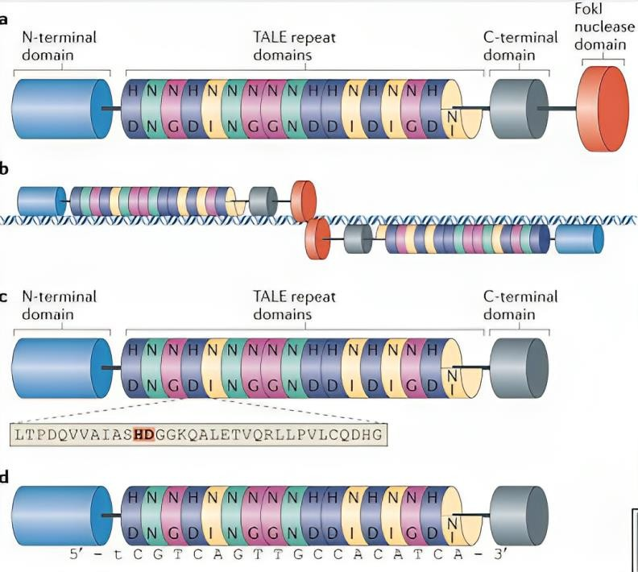
Figure 2 shows TALEN mechanism
[39]
.
TALEN Structure
TALENs consist of TALE repeats, represented as colored
cylinders, and a carboxy-terminal truncated "half" repeat.
Each TALE repeat contains two hypervariable residues
represented by letters. The TALE-derived amino- and
carboxy-terminal domains, essential for DNA binding, are
depicted as blue and grey cylinders, respectively. The
non-specific nuclease domain from the FokI endonuclease is
illustrated as a larger orange cylinder.
TALEN Binding and Cleavage
TALENs function as dimers, binding to the target DNA site.
The TALE-derived amino- and carboxy-terminal domains
flanking the repeats may interact with the DNA. Cleavage
by the FokI domains occurs within the "spacer" sequence,
located between the two regions of DNA bound by the two
TALEN monomers.
TALE-Derived DNA-Binding Domain:
A schematic diagram illustrates the structure of a TALE-
derived DNA-binding domain. The amino acid sequence of a
single TALE repeat is expanded below, with the two
hypervariable residues highlighted in orange and bold
text.
TALE-Derived DNA-Binding Domain Aligned with Target DNA
The TALE-derived DNA-binding domain is aligned with its
target DNA sequence. The alignment shows how the repeat
domains of TALEs correspond to single bases in the target
DNA site according to the TALE code. A 5' thymine
preceding the first base bound by a TALE repeat is
indicated
iii. The Errors Have Invaded Everything:
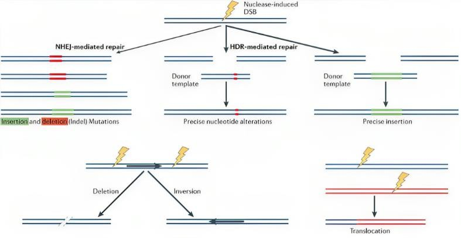
Figure 3 show the DNA repairing mechanism pathways
[39]
After the gene editing occurred however the process followed
it goes for two pathways to repaired
as shown in figure 3:
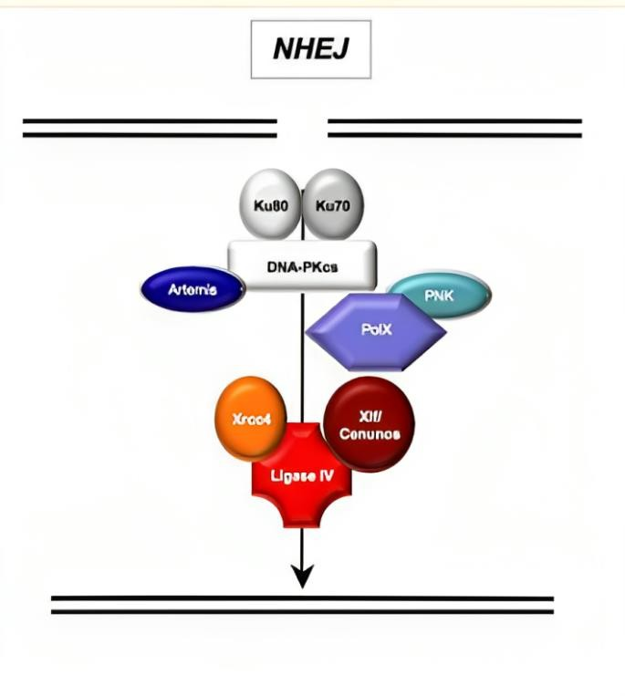
Figure 4 shows the NHEJ pathway
[37]
First pathway is Non-Homologous End Joining (NHEJ): This
pathway, occurring without template, attempts to directly
join the broken ends of the DNA. Always it goes to this
pathway. It can introduce small insertions or deletions
(indels) in the process, often resulting in gene
disruptions. As shown in Figure 2, NHEJ begins with the
binding of the Ku80-Ku70 heterodimer to the broken DNA
ends. This complex then recruits DNA-PKcs. Notably, DNA-PK
is not present in yeast. Several proteins, including
Artemis, polynucleotide kinase (PNK), and members of the
polymerase X family, process the DNA ends in preparation
for the next steps. In the final step, ligase IV, working
in conjunction with its co-factors Xrcc4 and Cernunos/Xlf,
joins the DNA ends together
[37]
The error in the non-homologous end joining (NHEJ)
typically happens when the DNA's broken ends are region.
Because NHEJ does not rely on a template to direct the
repair process, it is an error-prone repair mechanism.
Instead, the two ends of the broken DNA strands are
directly joined or ligated
[37]
. In some case the survivable gene can be only 0.1% as the
DNA cleavages again
[38]
.
Because there is no template and the NHEJ process is fast,
small insertions or deletions (indels) can occur at the
repair site. These indels have the potential to cause
mutations, gene disruptions, or frame-shift mutations, all
of which could have an impact on how well the gene and the
protein it encodes function. As a result, the error-prone
nature of NHEJ is primarily associated with the rejoining
step, where errors can occur.
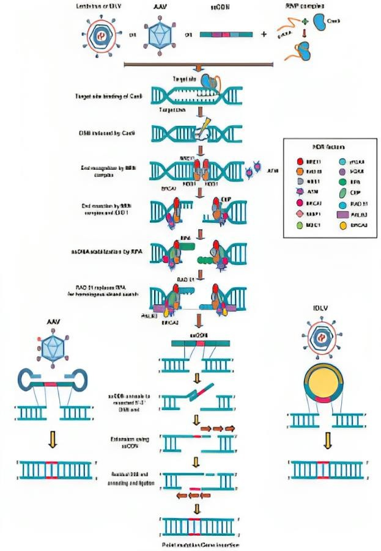
Figure 5 show HDR pathway
[40]
Many genes that are disrupted can have repercussions for
neural function, brain development, and mental health
conditions. However, this can occur due to decreased or
altered key gene responses for neurotransmitter
regulation. This, in turn, can cause transcription
deficiencies or translocation of DNA sequences. For
instance, error-prone NGEJ can lead to deficiencies in the
DLG3 (Discs, large homolog 3) gene, which is responsible
for memory and learning. Mutations in this gene can result
in Intellectual Disability, Speech and Language Delays,
and other neural disorders.
The second pathway is Homology-Directed Repair (HDR): In
this pathway, a template DNA molecule is used to repair
the break, allowing for precise DNA sequence changes to be
introduced during repair. These repairs occurred by
ordered steps
as shown is Figure 5:
In the intricate process of HDR (Homology-Directed Repair)
following gene editing, a highly coordinated sequence of
events unfolds to facilitate the precise and faithful
repair of double-strand breaks (DSBs) in the DNA.
Initially, the occurrence of DSBs activates the ATM
checkpoint, a critical regulator of DNA repair processes
and cell cycle progression. This activation is a crucial
trigger for subsequent repair steps. During the S- phase
of the cell cycle, CDK-mediated phosphorylation of CtIP at
S372 plays a pivotal role in priming CtIP for action,
ultimately leading to the formation of the BRCA1- CtIP
complex. This complex is responsible for modifying the
chromatin environment around the DSB site, making it
conducive to DNA end resection.
The MRN complex (comprising MRE11, RAD50, and NBS1 proteins)
forms a major complex with BRCA1- CtIP, and it contributes
significantly to the repair process by generating a short 3'
overhanging single-stranded DNA via the nuclease activity of
MRE11. This newly generated single-stranded DNA is
immediately stabilized by replication protein A (RPA),
preventing its degradation or unintended interactions.
Continuing the repair process, the short single-stranded DNA
undergoes further extension through the action of a complex
that involves helicases and nucleases like BLM, EXO1, WRN,
and DNA2. Simultaneously, the activation of the ATR cell
cycle checkpoint adds an additional layer of control to the
process.
With the single-stranded DNA prepared and stabilized, the
pivotal step of RAD51 loading ensues. RAD51 displaces RPA
from the single-stranded DNA and forms nucleoprotein
filaments, setting the stage for homologous search and
invasion of the repair template. It's important to note that
the specific mechanisms involved may vary depending on the
type of HDR being employed, which can include canonical HDR,
synthesis-dependent strand annealing (SDSA), break-induced
replication (BIR), single-stranded annealing (SSA), or
single-stranded templated repair (SSTR)
[40]
.
However, HDR is an accurate process that utilizes a template
and operates at a slower pace compared to the more rapid
NHEJ pathway. Nonetheless, HDR is less efficient than NHEJ,
especially that it occurs only during the S and G2 phases of
the cell cycle when sister chromatids are available as
repair templates. If gene editing occurs during other phases
of the cell cycle, NHEJ may be favored, potentially leading
to errors. Furthermore, even when a repair template is
provided, the cell may still prefer the NHEJ pathway,
resulting in the generation of small insertions or deletions
(indels) rather than precise edits.
Errors can also arise if the provided repair template does
not perfectly match the target DNA sequence or if there are
mismatches or mutations within the repair template itself.
These discrepancies can lead to inaccurate editing outcomes.
Additionally, the HDR process may occasionally fail to
complete as expected, leaving the DNA with a partial
modification or an incomplete integration of the repair
template.
In the context of genes related to mental health, any
disruption in the cell cycle, such as halting at the G2
phase due to the inability to produce spindle fibers, can
have direct effects. Errors in HDR, especially when
targeting genes associated with mental health, may result in
functional alterations that can impact neural processes.
IV. Computational methodology
As our research objective trends toward collecting data and
concluding the process by which gene editing affects mental
health, in this section, we will model this process using
figures, which will be demonstrated in the discussion
section. Our model will rely on the Python language with the
Biopython library. We chose this library because it is a
flexible and user-friendly Python library for modeling
biological processes. It offers a wide range of features,
compatibility across platforms, interoperability with
bioinformatics tools, and strong community support. It is an
important tool for computational biology research due to its
open-source nature, scalability, and integration with data
analysis libraries.
In this modeling, we utilized the CRISPR method, one of the
most commonly used gene editing methods recently, and the
IDH1 gene with its sequence
'ACGTGCAGCTGGGTGGTTGTGGTTTGCTTGGCT
TGAGAAGCAGGTTA...........', as it is the gene responsible
for 50% of gliomas (brain cancer). Mutations in this gene,
after NHEJ occurs, can lead to not only a lack of cancer
cure but also abnormal production of 2- hydroxyglutarate
(2-HG), an oncometabolite. This metabolic change interferes
with numerous cellular pathways, primarily in the cytoplasm,
affecting epigenetic control and causing DNA
hypermethylation. These metabolic changes primarily drive
cancer progression but can also indirectly impact mental
health. Abnormal metabolites and related disruptions may
induce neuroinflammation, neurotransmitter imbalances, and
other neurological effects, potentially affecting mood and
cognitive abilities
[40]
.
The model description is demonstrated in
subsection i, and code for simulation are
demonstrated in subsection ii, where the
code description will display the code.
Code Description
Importing Libraries
Bio.Seq and
Bio.SeqUtils are modules from the
BioPython library used for manipulating DNA sequences
and calculating properties such as melting temperature
(Tm).
Bio.Restriction is another module
from BioPython that is utilized to simulate the
recognition site of the Cas9 protein.
Defining Protein and DNA Classes
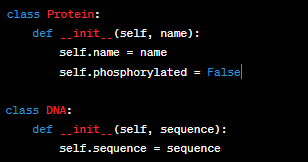
In this section, we define Python classes to represent
biological entities. Protein objects have attributes
such as name and phosphorylated to model the
phosphorylation status. DNA objects encapsulate DNA
sequences.
Defining Protein and DNA Entities:
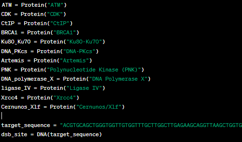
We instantiate specific biological entities using the
defined classes. For example,
ATM, CDK, CtIP, and BRCA1 represent
proteins, while dsb_site represents a
DNA sequence. These entities model key molecules and
the DNA site of gene editing. Each protein has a name
and a phosphorylated attribute, which
can be set to True or
False to simulate phosphorylation
status. DNA sequences are represented as strings in
the DNA class.
Designing gRNA
The design_gRNA function is used to
design a guide RNA (gRNA) for the target DNA sequence.
The gRNA is designed based on specific criteria,
including melting temperature and the absence of Cas9
recognition sites.
Designing Conditions X and Y:
Two conditions, X and Y, are defined based on the
presence or absence of a suitable repair template.
condition_X is
True if a gRNA is designed,
indicating the activation of the Homology-Directed
Repair (HDR) pathway.
condition_Y is the inverse of
condition_X, representing the
activation of the Non-Homologous End Joining (NHEJ)
pathway if no repair template found.
Simulation of HDR Pathway
The perform_HDR function simulates
the sequential steps of the Homology-Directed Repair
(HDR) pathway following gene editing. It includes
events such as the activation of the ATM checkpoint,
phosphorylation events, formation of protein
complexes, and additional HDR-specific
interactions.
Simulation of NHEJ Pathway
The perform_NHEJ function simulates
the stages of the Non-Homologous End Joining (NHEJ)
pathway following gene editing. It encompasses events
such as the binding of the Ku80-Ku70 heterodimer,
recruitment of DNA-PKcs, DNA end processing, and DNA
end ligation.
Mutation in IDH1 Gene
Within the NHEJ pathway simulation, we introduce a
step to simulate mutations in the IDH1 gene caused by
NHEJ. IDH1_mutated is set to True to indicate the
occurrence of mutations.
Effects of IDH1 Mutations on Cellular
Processes:
Following the simulation of IDH1 mutations, we
provide a descriptive account of the effects of these
mutations on cellular processes.
This includes the production of abnormal isocitrate
dehydrogenase (IDH) enzymes, generation of
oncometabolite 2-hydroxyglutarate (2-HG), disruption
of cellular pathways, competition with isocitrate,
loss of function in wild-type IDH enzymes, and
disruption of epigenetic regulation.
Mental Health Impact
We briefly outline the potential effects of the
cellular changes resulting from IDH1 mutations on
mental health. This encompasses concepts such as
abnormal metabolites (e.g., 2-HG), neuroinflammation,
neurotransmitter imbalances, neurological effects,
mood alterations, and cognitive processes.
V. Ethical Consideration and Study Constrain
i. Ethical Consideration:
First of all, the study protocol and ethical considerations
underwent rigorous review by the YSJ's Research Review
Board. This board meticulously assessed the study design,
methods, and data handling procedures to ensure strict
adherence to ethical guidelines. Notably, the study obtained
approval from the aforementioned board prior to the
commencement of data collection, thus safeguarding the
rights and welfare of the participants.
As for ethical considerations, the data we have collected is
among the precursors of ethical consideration in peer
review. Additionally, all sources are mentioned to ensure
credibility. In terms of transparency, since our research
paper is theoretical in nature, we employed a specific
methodology, which involved collecting data from books and
prior articles. We then analyzed this data to identify
connections between gene editing and mental health.
Subsequently, we modeled the relationship between the
CRISPR-Cas9 method and its influence on the IDH1 gene, which
is responsible for brain cancer. In the discussion section,
we outlined potential cures for these conditions.
When it comes to the ethical considerations surrounding gene
editing, particularly in the context of human genome
editing, have sparked intense debate and led to the
formulation of guidelines and regulations. The advent of
CRISPR technology, with its potential for precise genetic
modifications, has amplified these discussions.
One central concern is safety. The risk of unintended off-
target effects and mosaicism poses significant challenges.
Many experts agree that, until germline genome editing is
proven safe through rigorous research, it should not be
employed for clinical reproductive purposes. Some argue that
existing technologies like preimplantation genetic diagnosis
(PGD) and in-vitro fertilization (IVF) offer safer
alternatives for preventing genetic diseases.
However, exceptions are acknowledged. Germline editing might
be justified when both prospective parents carry
disease-causing variants or for addressing polygenic
disorders. The balance between therapeutic use and potential
misuse, such as for non-therapeutic enhancements, remains a
subject of ethical debate.
Informed consent is another complex issue. Obtaining
informed consent for germline therapy is challenging since
the affected individuals are embryos and future generations.
Nonetheless, proponents argue that parents routinely make
decisions affecting their future children, including those
related to PGD and IVF.
Justice and equity concerns arise as well. Gene editing's
accessibility could exacerbate existing healthcare
disparities and create genetic privilege. To prevent such
outcomes, ethical guidelines and regulations must be
established.
Regarding genome-editing research involving embryos, moral
and religious objections exist, and federal funding
restrictions apply in the United States. Nevertheless, some
consider such research important for advancing scientific
understanding. Research on nonviable embryos and viable
embryos under certain conditions has been permitted in some
countries, each with its own moral considerations.
ii. Study Constrains:
The study constraints of our paper were significant. Owing
to limited resources and time constraints, the designated
period for data collection was confined to a mere two weeks,
with only seven weeks allocated for the entire research
paper. This predicament imposed inherent limitations
regarding the recruitment of methods and the extent of data
analysis that could be undertaken. Furthermore, financial
constraints significantly impacted access to advanced tools
and equipment. As our research couldn't utilize advanced
model applications or laboratory facilities for monitoring
the gene editing process, the limitations of resources posed
a considerable challenge. Additionally, gene editing methods
are relatively new and complex, further exacerbating these
challenges.
VI. Discussion
i. The Findings:
We initiated our research paper by addressing the challenges
associated with gene editing, DNA transcription,
translocation, and mental health disorders. We embarked on a
comprehensive review of prior articles, focusing on the
impact of gene editing on DNA transcription and
translocation, as well as its influence on mental health.
Our research journey involved delving into review books such
as 'Principles of Genetics'[42]
, 'Genetics of Mental Disorders'
[43]
, and 'Editing Humanity' [44]. These sources provided
valuable insights into the complex interplay between
genetics, mental health, and the implications of gene
editing.
As we delved deeper into our investigation, we unraveled the
critical role of DNA repair mechanisms, particularly
nonhomologous end joining (NHEJ), as discussed in Section
III. Notably, our research highlighted the occurrence of
errors in the final steps of NHEJ, which hindered the
formation of ligase due to the absence of a template.
Building on these findings, we proceeded to model the
processes involved and, based on our analysis, proposed
potential cures, as elucidated in Subsection II. Our
research seeks to shed light on the intricate relationship
between gene editing and its impact on mental health,
ultimately aiming to contribute to advancements in
addressing these complex challenges.
ii Thermotical Potential Cure:
In the first step, we will monitor the process to allow us
to understand the activity of the CRISPR-Cas9 method on
IDH1, using it as an example to simulate these steps.
Monitoring by using Bioluminescence Imaging is useful. What
makes BLI exceptionally useful is its capacity for real-time
tracking and visualization of CRISPR-Cas9- induced changes.
It enables researchers not only to observe genetic
modifications as they happen but also to quantify their
intensity. This real-time aspect can be invaluable for
assessing the efficiency and specificity of gene editing
processes. Researchers can use BLI to monitor changes over
time, gaining insights into the dynamics of gene editing
within living organisms. Moreover, BLI is non-invasive,
minimizing disruptions to the biological system under
investigation, and it can provide longitudinal data,
allowing for the assessment of gene-editing persistence.
It's an elegant and comprehensive approach for studying the
in vivo impacts of CRISPR-Cas9 technology.
The process begins by meticulously selecting or designing a
bioluminescent reporter that aligns with the IDH1 gene's
genomic region of interest. This reporter is thoughtfully
constructed to incorporate a gene encoding a light-emitting
protein, such as firefly luciferase. The choice of this
reporter gene is critical because it will act as a beacon,
emitting light in response to any genetic changes initiated
by CRISPR-Cas9 within the IDH1 gene.
Once the bioluminescent reporter is crafted, it undergoes
genetic modification to ensure that it integrates seamlessly
into the genomic landscape surrounding the IDH1 gene. This
integration is achieved using tailored techniques like viral
vectors or direct transfection, ensuring that the reporter
becomes an integral part of the IDH1 gene environment.
With the bioluminescent reporter now strategically placed
within the IDH1 gene's vicinity, the next step involves
introducing the CRISPR-Cas9 system, guided by a gRNA
molecule, into the target cells. The primary objective is to
enable this system to initiate precise double-strand breaks
(DSBs) at predetermined sites within the IDH1 gene. These
DSBs are strategically chosen to correspond to specific
regions of interest within the IDH1 gene, allowing
researchers to monitor changes in these regions with
precision.
The hallmark of BLI's utility in this context lies in its
ability to exploit the cellular repair mechanisms, notably
the Non-Homologous End Joining (NHEJ) pathway. When DSBs
occur within the IDH1 gene, the cellular repair machinery,
including NHEJ, springs into action. NHEJ's role is to mend
these breaks, but it is known for its potential to introduce
errors during the repair process.
In the case of the IDH1 gene, NHEJ might inadvertently
disrupt the integrated bioluminescent reporter gene, leading
to a reduction in bioluminescence. This reduction serves as
a real-time indicator of CRISPR-Cas9 activity specifically
within the IDH1 gene. It allows to monitor and quantify the
impact of gene editing on the IDH1 gene in living organisms,
offering invaluable insights into the dynamics of this
process and its potential therapeutic application.
iii. DNA Ligation:
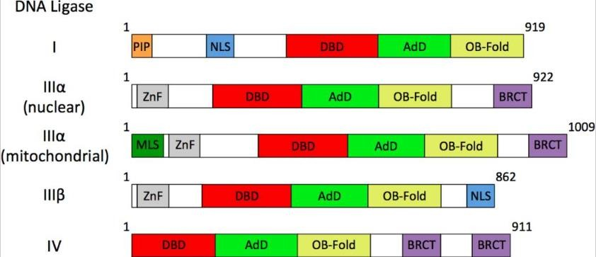
Figure 16 show DNA ligation [45]
As the error occurs in the final steps of DNA ligation, as
shown in figure 6 , in NHEJ, involving a ligase enzyme
encoding ligase enzymes into cells to correct genetic
defects will be beneficial. This correction process can be
monitored by BLI, allowing for the detection of the time
of ligation
The process of introducing specific genes, including those
encoding ligase enzymes, into cells to correct genetic
defects or enhance cellular functions involves a series of
well-defined steps. This approach holds great promise for
addressing genetic abnormalities like the IDH1 gene, as
mentioned in the research paper. To begin, DNA ligases
play a pivotal role in this process by catalyzing the
formation of phosphodiester bonds, which are essential for
sealing nicks in DNA strands. In humans, three genes
encode different DNA ligase enzymes: DNA ligase I, III,
and IV. These enzymes function in various cellular
processes, including DNA replication, repair, and
maintenance.
The first step in introducing specific genes is the
preparation of the target cells. These cells are typically
cultured and prepared for gene delivery. The next step
involves the creation of the desired genetic construct,
which may include the gene of interest, regulatory elements,
and the ligase enzyme gene. This construct is then
introduced into the target cells using techniques like
transfection, viral vectors, or electroporation. Once inside
the cells, the DNA ligase enzyme encoded by the introduced
gene becomes active. The ligase functions by first
activating ATP, resulting in the covalent linkage of an AMP
moiety to a specific lysine residue within the enzyme's
active site. This step is followed by the transfer of the
AMP moiety to the 5' terminus of a DNA nick, creating a
DNA-adenylate intermediate. Finally, the DNA ligase
catalyzes the formation of a phosphodiester bond, sealing
the nick in the DNA strand and releasing AMP [45].
This process of introducing specific genes, along with the
ligase enzymes, offers immense potential for addressing
genetic defects like the IDH1 gene mutation. By precisely
delivering corrected genes or enhancing cellular functions,
our researcher aims to develop innovative therapies for a
wide range of genetic mental health disorder disorders.
Furthermore, the use of bioluminescence imaging (BLI)
techniques can help monitor the success and progress of gene
delivery and expression within target cells, ensuring the
effectiveness of this approach.
VII. Conclusion and Recommendation
In this research paper, we have embarked on a comprehensive
journey to explore the intricate relationship between gene
editing, DNA transcription, translocation, and their impact
on mental health in adults aged 18 and above. Our study's
primary objectives were to shed light on this underexplored
area of research and propose potential therapeutic
interventions. We have made several noteworthy
contributions, including our focus on the adult demographic,
our emphasis on the connection between gene editing and
mental health through DNA processes, and our utilization of
computational biology for modeling and analysis.
Two prominent gene-editing technologies, CRISPR-Cas9 and
TALENs, have been discussed in detail. The CRISPR-Cas9
system's precision in directing Cas9 to target DNA sequences
and the influence of TALENs on gene editing have been
highlighted. We have elucidated the potential errors
occurring in the final steps of Non- Homologous End Joining
(NHEJ), which can result in gene disruptions and mutations.
These disruptions can impact key gene functions related to
neurotransmitter regulation, brain development, and mental
health conditions.
Homology-Directed Repair (HDR), a more accurate but slower
repair pathway, has also been explained. The significance of
HDR in making precise DNA sequence changes and the potential
for errors during the process have been discussed. These
errors can lead to functional alterations with direct
implications for neural processes and mental health.
To address the impact of gene editing on mental health, we
have proposed a computational methodology using the Python
language and the Biopython library. Our modeling focuses on
the CRISPR-Cas9 method's activity on the IDH1 gene, which is
responsible for brain cancer. The real-time monitoring of
this process through Bioluminescence Imaging (BLI) offers a
valuable tool for assessing gene editing efficiency and
specificity.
Additionally, we have highlighted the importance of DNA
ligation in correcting genetic defects of the gene editing .
DNA ligases, including DNA ligase I, III, and IV, play a
crucial role in sealing nicks in DNA strands. The process of
introducing genes encoding ligase enzymes into cells to
correct genetic defects has been outlined. Monitoring this
correction process by BLI allows for the precise detection
of the time of ligation.
In conclusion, this research paper has contributed to a
deeper understanding of how gene editing processes impact
DNA transcription, translocation, and mental health,
especially in the context of errors occurring in NHEJ. By
utilizing computational biology and innovative techniques
like BLI, we aim to propose potential therapeutic
interventions for genetic mental health disorders. Our paper
has successfully added new information to the literature.
Our research significantly contributes to the existing body
of knowledge by delving into the intricate relationship
between gene editing, DNA transcription, translocation, and
their impact on mental health in adults aged 18 and above.
Ethical considerations surrounding gene editing have also
been discussed, emphasizing the need for safety, informed
consent, justice, and equity in genetic research.
For further researchers, we recommend:
Addressing Limitations: It's crucial for future studies to
acknowledge and work within the limitations we have outlined
in our research. Limited resources, time constraints, and
the complexity of gene editing methods can pose challenges.
Researchers should carefully plan their studies, allocate
adequate resources, and manage time effectively to overcome
these constraints.
Exploring Potential Cures: The potential therapeutic
interventions we have proposed, such as monitoring gene
editing with Bioluminescence Imaging (BLI) and introducing
genes encoding ligase enzymes for DNA ligation, should be
further investigated. Researchers should conduct in-depth
studies to validate the effectiveness of these interventions
in correcting genetic defects related to mental health
disorders.
Utilizing Professional Equipment: To ensure the accuracy and
reliability of research findings, it is essential for future
researchers to employ professional equipment and
state-of-the-art technologies. Two notable examples of such
equipment include high-resolution microscopes with live-cell
imaging capabilities and advanced gene editing platforms
like CRISPR-Cas9 systems. These tools can provide precise
data and insights necessary for groundbreaking discoveries
in the field.
These recommendations encompass the need to overcome
limitations, delve deeper into potential cures, and utilize
advanced equipment, all of which can collectively contribute
to advancing our understanding of gene editing's impact on
mental health and the development of effective therapeutic
interventions.
VIII. Reference
Detection of Dark Matter in Neutron Stars
Reem Zidan (Maadi STEM High School)
Ahmed Kadry (Kafr El Sheikh STEM High School)
Abstract
Despite the latest advancements in the field of
astrophysics, dark matter, the vague mysterious thing
occupying vast parts of our universe, is still floating
around with its obscure nature and very hard to detect
components. This research is delving into different
approaches for detecting dark matter present in neutron
stars and calculating its mass. The approaches discussed are
considered secondary techniques in the detection of dark
matter and they are being scrutinized with the aim of
developing a new way of detecting these vague particles. For
instance, hybrid detection methods like star spectroscopy
and Gravitational Red Shift Measurements, direct detection
methods like scattering experiments, and indirect detection
methods like neutrino emissions. Results have shown that
some specific neutron stars have higher expectancy for the
presence of dark matter particles and some specific
techniques are more feasible than others in their detection.
By making the most of the latest technology like
high-resolution telescopes and software programs, it is
possible to utilize dark matter's effects on neutron stars
to assist in its detection. We believe that the detection of
dark matter and calculating its mass can pave the way for
some revolutionary discoveries regarding the hidden
intricacies of the universe.
I. Introduction
After years of research, we are still far from comprehending
dark matter's properties and identifying its components.
Dark matter's enigmatic nature continues to captivate
scientists as it constitutes the major portion of the
universe. It cannot be seen directly as it consists of
weakly interactive particles that do not interact with any
form of electromagnetic radiation making its detection
extremely challenging. However, its existence is inferred
from its gravitational effects on visible matter.
"Dark matter is thought to be the glue that holds galaxies
together"
[1]
and it has a significant role in the formation of
large-scale structures in the universe, such as clusters of
galaxies. Hence, the quest to unravel the mysteries of dark
matter remains a crucial challenge as it can pave the way
for some revolutionary discoveries regarding the hidden
intricacies of the universe.
Neutron stars are thought to be potential candidates for
dark matter interactions due to their extreme density and
strong gravitational field which makes dark matter, although
it is weakly interacting, interact with the neutrons in a
neutron star through the weak nuclear force.
In this article, we are specifying neutron stars to be
utilized for the detection of dark matter and calculating
its mass through multiple approaches. We think that Proving
interactions between dark matter and neutron stars will be a
breakthrough in our understanding of dark matter. Moreover,
it will provide new insights into the nature of neutron
stars. and the physics of the weak nuclear force.
II. Dark Matter Candidates and Interactions
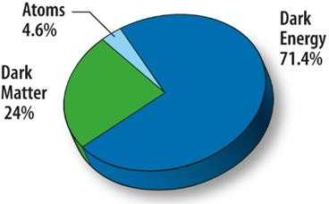
Figure 1 Pie Chart Indicating the distribution of Dark
Matter
Dark matter is a hypothetical form of matter that is
thought to account for about 27% of the matter in the
universe.
[2]
It is invisible to telescopes because it does not emit or
absorb any form of electromagnetic radiation. However, its
existence is inferred from its various effects on visible
matter.
i. Evidence that supports the existence of dark matter
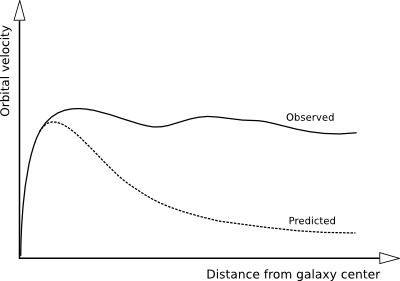
Figure 2: Description of the rotation rate of a galaxy
[5]
The rotation curves of galaxies: This curve is a plot
describing the rotation rate in a galaxy as a function
of distance from the galaxy's center. It shows that the
stars in the outer parts of galaxies are moving much
faster than they would be if they were only affected by
the gravity of the visible matter in the galaxy. This
suggests that there is a lot of unseen matter in the
outer parts of galaxies, which is holding the stars in
place.[4]
The gravitational lensing of galaxies: Gravitational
lensing is the bending of light by the gravity of
massive objects. When light from a distant galaxy passes
by a nearby galaxy, the gravity of the nearby galaxy
bends the light, causing the distant galaxy to appear
distorted. This distortion can be used to measure the
amount of dark matter in the nearby galaxy.
[6]
ii. Dark matter candidates
All the proposed candidates for dark matter are hypothetical
particles that have not yet been detected. However,
scientists are currently conducting several experiments
aimed at detecting these elusive particles.
Weakly interacting massive particles (WIMPs): These are
hypothetical particles that interact with ordinary matter
through the weak nuclear force. They are thought to be a
good candidate for dark matter because they have the right
mass and properties to explain the observed gravitational
effects of dark matter. WIMPs have the right mass and
properties to explain the observed gravitational effects of
dark matter. Nevertheless, their existence faces several
theoretical challenges.
Axions: Axions are hypothetical light particles that
interact weakly with other particles, which makes them a
good candidate for dark matter because they would be
difficult to detect, yet still able to explain the observed
gravitational effects of dark matter.
Sterile neutrinos are another hypothetical particle that is
similar to neutrinos, but they do not interact with the weak
force. They could potentially explain the observed
gravitational effects of dark matter, as well as the
observed abundance of light elements in the universe.
Nevertheless, their existence is still uncertain, and
further research is needed to confirm their existence and
properties.
III. Redshift: its relationship with dark matter
Redshift is a phenomenon in which the wavelength of
electromagnetic radiation is increased as a result of the
relative motion of the light source and observer. This
increase in wavelength is accompanied by a decrease in
frequency and photon energy. It is called "red shift"
because when the wavelength gets elongated it is displaced
towards the red light on the electromagnetic
spectrum.[7]
The cosmological redshift of light depends on both the speed
of the emitter and the distance between the emitter and the
observer. In case the emitter is moving away from us, a
redshift is observed. If the emitter is moving towards us,
whether a redshift, a blueshift, or no shift is observed
will depend on the speed vs. the distance. When the speed is
in the range of c(exp[- βD] — 1) < v < 0, with β being the
redshift constant, a redshift is observed; if the speed
equals c(exp[- βD] — 1), no shift is observed; if the speed
v is less than c(exp[-βD] — 1), a blueshift is observed.
[8]
i. Factors causing redshift:
A. Doppler effect
When a light source is moving away from an observer, the
light waves are stretched out, making their wavelength
longer. This is similar to what happens when a sound source
moves away from the listener, the further the sound source
gets, the lower the pitch of a sound wave.
B. Gravitational redshift
When light travels through a gravitational field, its
wavelength is increased as it has to work against the
gravitational field to escape which slows down its speed.
The stronger the gravitational field, the more the light is
stretched and the redder it becomes.
ii. Dark matter effect on the gravitational redshift of
cosmological bodies
Since dark matter is proved to affect the gravitational
field, it is believed that the presence of dark matter as
halos around neutron stars can cause significant difference
in the amount of the star's redshift, which can consequently
assist in calculating the amount of dark matter causing this
difference.
IV. Neutron Stars: Composition and Properties
i. Formation and Composition
Neutron stars are the remains of massive stars that died in
what is known as a supernova. The initial star's mass is
between 10 and 25 solar masses.
When these stars run out of fuel, they collapse under their
own gravity and form neutron stars. Their outer layer is a
solid crust formed from normal matter. It can reach up to 10
kilometers in thickness and it is made up of ions and
electrons. The internal part is made up of neutrons,
electrons, and protons. The neutrons are in the form of gas,
packed tightly forming a degenerate fermion gas. Protons and
electrons are also degenerate fermion gas but are less dense
than neutrons. The core of these stars may contain exotic
matter like quark matter and strange matter. However,
information about the core is yet to be verified.
ii. Properties
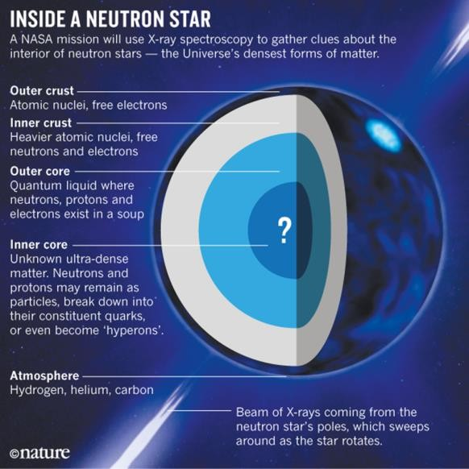
Figure 3: Neutron Star Composition
Neutron stars are incredibly dense, with a mass of about
1.4 times that of the sun, but a radius of only about 10
kilometers. Their density is about 1017 grams
per cubic centimeter, which is about 100 million times the
density of lead. It is often said that "A tablespoon of a
neutron star material would weigh more than 1 billion U.S.
tons (900 billion kg). That's more than the weight of
Mount Everest, Earth's highest mountain."
[9]
Neutron stars' temperatures can reach up to 10 million
degrees Celsius. This heat is produced by the collapse of
the star's core and the friction of the neutrons as they
collide with each other. They are also extremely magnetic,
with magnetic fields that are billions of times stronger
than the Earth's magnetic field. These strong magnetic
fields are thought to be generated by the rotation of the
star.
iii. Types of Neutron stars
Neutron stars have multiple common properties such as the
ones mentioned above. However, they can be distributed into
groups, each having special properties.
Pulsars are neutron stars that emit beams of
radiation, usually radio waves. The beams are emitted from
the poles of the neutron star as the star rotates. This
causes the pulsar to appear as if it is blinking as it
rotates. "Because of the rotation of the pulsar, the
pulses thus appear much as a distant observer sees a
lighthouse appear to blink as its beam rotates. The pulses
come at the same rate as the rotation of the neutron star,
and, thus, appear periodic."
[11]
Magnetars are an exotic type of neutron stars
with extremely strong magnetic fields reaching up to a
trillion times stronger than the magnetic field of Earth.
Magnetars release enormous amounts of x-rays and
gamma-rays making them responsible for some of the most
powerful explosions in the universe, such as gamma-ray
bursts.
[12]
. It is believed that "its magnetic field would destroy
your body, tearing away electrons from your atoms and
converting you into a cloud of monatomic ions, that is,
single atoms without electrons."
[13]
X-ray binary Systems are systems that contain a
neutron star and a companion star. The companion star can
be a main sequence star, a white dwarf, or another neutron
star. The neutron star in an X-ray binary accretes matter
from the companion star, which causes it to emit X-rays.
Table 1: Comparison of types of neutron stars
property
Magnetars
Pulsars
X-ray binaries
Magnetic Field
Extremely strong (1014- 1015
gauss)
Strong (108-1012 gauss)
Variable, depending on the type of binary system
Rotation period
Varies from milliseconds to seconds
Varies from milliseconds to seconds
Variable, depending on the type of binary system
Power source
Magnetic field
Rotational energy
Accretion of material from the companion star
X-ray emission
Yes, persistent and variable
Yes, pulsed
Yes, pulsed
Gamma-ray emission
Yes, during flares
no
sometimes
iv. Advantages of Binary Neutron Star Systems for Research:
The stars in binary systems are the most feasible type of
neutron stars for research and study. Firstly, they are
brighter as they reflect light off of each other which makes
them easier to study with telescopes.
Binary stars are more stable as they are held together by
their mutual gravitational attraction. On the other hand,
single stars can be affected by the gravitational pull of
other stars in their vicinity, which can make it difficult
to study them.
v. Mass limit of Neutron stars
This is the maximum mass a neutron star can possess before
collapsing under its own gravity into a black hole. This
happens because the strong nuclear force is not strong
enough to hold the neutrons together against the immense
gravity of the star. The limit is called the Tolman—
Oppenheimer—Volkoff limit (TOV limit), and it is estimated
to be around 2.16 solar masses. It is determined by the
equation of state of neutron matter, which is the
relationship between the pressure and density of neutron
matter. However, the TOV limit is not 100% certain. For
instance, PSR J0740+6620 is a neutron star that has a mass
of about 2.14 solar masses. This immense mass suggests that
the TOV limit may be slightly higher than 2.16 solar masses.
V. Potential interactions between dark matter and neutron
stars
It is scientifically feasible to predict the presence of
dark matter in the cores of neutron stars since it does not
interact with electromagnetic radiation and can therefore
flow into the dense matter of these stars without being
detected. Recent observations have revealed that old neutron
stars are experiencing a notable increase in temperature to
near-infrared ones. This phenomenon has led scientists to
speculate that dark matter may be penetrating the dense
matter of these stars and causing changes in their
properties. This flow of dark matter has detectable effects
on the surface of these neutron stars, particularly those
located in dark-matter-rich regions like the Galactic center
or cores of globular clusters.
i. The density of neutron stars
Neutron stars are known for their incredibly dense nature.
This density causes a critical amount of spacetime
curvature, leading to a powerful gravitational field. Due to
this strong gravitational field, it is more likely for
weakly interacting dark matter particles to be captured.
Therefore, it is scientifically feasible to predict the
presence of dark matter in the cores of neutron stars.
"Because of their strong gravitational field, neutron stars
capture weakly interacting dark matter particles (WIMPs)
more efficiently compared to other stars, including the
white dwarfs. Once captured, the WIMPs sink to the neutron
star center and annihilate."
[14]
ii. Scattering off the neutrons in the star.
Dark matter can enter neutron stars by scattering off the
neutrons in the star. This is because dark matter is thought
to be made up of weakly interacting massive particles
(WIMPs), which can interact with neutrons through the weak
nuclear force. When a WIMP scatters off a neutron, this
would cause the WIMPs to lose energy and eventually be
captured by the neutron star. Furthermore, it can transfer
some of its momentum to the neutron, causing the neutron to
move.
Scattering of neutrons in the star can have several effects
that are easily detected, including the heating of the
neutron star, the change in its rotation rate, the emission
of gravitational waves, and the production of neutrinos.
Ongoing research was conducted with the aim of studying the
scattering of neutron stars with dark matter. Firstly, The
European Pulsar Timing Array (EPTA), is a network of radio
telescopes used to measure the arrival times of radio waves
from pulsars. The EPTA studied the timing of these waves so
that scientists could look for changes in the rotation rate
of pulsars that could be caused by the scattering of dark
matter.
Secondly, The Neutron Star Interior Composition Explorer
(NICER) is a NASA satellite that is used to study the
interior of neutron stars. NICER can measure the temperature
and composition of neutron stars, which could help
scientists to determine if dark matter is present in these
stars.
Thirdly, The Large Synoptic Survey Telescope (LSST). This is
a terrestrial telescope in Chile that will be used to survey
the entire sky every few nights. This will allow scientists
to search for neutron stars that are being heated or slowed
down by the scattering of dark matter.
VI. Neutron Star: Structure and Equation of State
The neutron star structure equation of state is a critical
component in understanding the internal composition and
properties of neutron stars and how dark matter affects
them. This equation of state describes how the pressure and
energy density of matter within a neutron star depend on its
density.
In essence, it provides insights into how matter behaves
under the extreme conditions present within these stellar
remnants.
The equation of state for neutron stars is particularly
relevant when considering the detection of dark matter
within them. Dark matter, an elusive form of matter that
doesn't emit light, might accumulate within neutron stars
due to its gravitational interactions. This accumulation
could influence the star's internal structure, including its
density distribution and pressure profile.
If dark matter were to accumulate within neutron stars, it
might affect the equation of state by altering the
relationship between pressure, energy density, and density
itself. This, in turn, could lead to observable consequences
in terms of the star's properties, such as its mass-radius
relationship or the behavior of emitted radiation.
The NS equation of state (EoS) relates the pressure, P, to
other fundamental parameters. With the sole exception of the
outermost layers (a few meters thick) of an NS and newly
born NSs, the pressure in the strongly degenerate matter is
independent of the temperature. Then, the microphysics
governing particle interactions across different layers of
an NS is encapsulated in one-parameter EoS, P = P (ρ), where
P and ρ are pressure and density, respectively. Calculations
of the EoS are frequently reported in tabular form in terms
of the baryon number density, nb, i.e. P = P (nb), ρ =
ρ(nb). The EoS is the key ingredient for NS structure
calculations; its precise determination, however, is an open
problem in nuclear astrophysics and is limited by our
understanding of the behavior of nuclear forces in such
extreme conditions
[15]
.
It is also worth mentioning what Bell et al. said "While the
EoS of the outer crust is based on experimental data and is
rather well established, physics beyond the neutron drip
point cannot be replicated in the laboratory, and
theoretical models are used instead. Thus, the EoS of the
inner crust and the core are calculated in a reliable way
using methods of nuclear many-body theory.
Nevertheless, even when considering the simplest NS core
made of neutrons, protons, electrons and muons, the
reliability of this EoS decreases at densities significantly
higher than ρ0, primarily due to our lack of knowledge of
strong interactions in superdense matter. The only way to
constrain these models is through observations".[15]
,
[16]
.
Furthermore, several EoSs are found in the literature
[16]
—
[20]
In essence, the neutron star equation of state serves as a
bridge between theoretical predictions of dark matter
accumulation and observable signatures within these extreme
environments. The behavior of dark matter within neutron
stars could lead to detectable deviations from expected
neutron star properties, thereby offering a potential avenue
for unveiling the mysterious nature of dark matter.
VII. Detection Methods of Dark Matter in Neutron Stars
Dark matter particle interaction with earth detectors
happens once per year making their study challenging.
However, dense objects such as neutron stars are posed as
good targets to probe and study dark matter due to their
high mass density and compactness. In this section, we
analyze the different techniques and methods used in the
detection of dark matter in neutron stars and their
constraints.
i. Indirect Detection Methods
A. Neutrino Emissions
"The detection of these neutrinos will be complementary to
the accelerator- and reactor- based experiments that study
neutrinos over the same energy range"
[21]
. As dark matter particles annihilate or decay, high-energy
neutrinos could be yielded as byproducts. These elusive
neutrinos traverse through many dense astrophysical
environments as neutron stars with relative ease, serving as
a "smoking gun" illustrating dark matter interactions
[15]
. However, the standard model of neutrinos as we know it
cannot constitute a significant part of dark matter because
of its current upper mass limits. This limit implies that
the neutrinos would move too freely across the huge
distances in space leading to them spreading out and erasing
the patterns we see in the density of matter at those large
distances. Nevertheless, many extensions of the standard
model suggest interesting neutrino states where there are
some extra types of neutrinos for each set of particles
known as "lepton generations". These neutrinos don't
interact with the forces known to us and they are usually
termed _sterile neutrinos_ although they are not sterile in
the strict sense as they are a mix of normal, and active
neutrinos
[22]
.
B. Gamma Ray Emissions
Gamma rays are Astro particles with some unique properties
making them an excellent choice for indirect searches for
WIMP dark matter. Gamma rays are characterized by the
ability to travel to the observer without deflection,
allowing the mapping of the sources of the signal, and the
prompt emission carrying important spectral information that
can be used to characterize the dark matter particle in the
case of detection
[23]
.
In order to detect gamma rays, the photons have to be
observed from space due to the earth's atmosphere's
opaqueness to gamma rays. The Fermi Gamma-ray Space
Telescope (FGST) launched in June 2008, and formerly known
as the Gamma-ray Large Area Space Telescope (GLAST), is a
space observatory that is being used in performing gamma-ray
observations. Its main instrument is the Large Area
Telescope (LAT). The LAT consists of a pair production
detector consisting of an array of modules that form the
tracker surrounded by an anti-coincidence detector for
charged particle identification
[24]
. These detectors are sensitive to gamma rays ranging from
20 MeV to —300 GeV. The LAT detects and constructs
individual gamma- ray and charged-particle events
determining the arrival direction of the event. It operates
primarily in sky-scanning mode enabling scientists to
conduct studies all over the sky. Furthermore, the GAMMA-
400 telescope covers a similar energy range to the LAT but
with improved angular and energy resolution. According to a
study
[25]
about its capabilities, it measures the "gamma-ray and
electron + positron fluxes using the main top-down aperture
in the energy range from —~20 MeV to several TeV in a highly
elliptic orbit (without shading the telescope by the Earth
and outside the radiation belts) continuously for a long
time. The instrument will provide fundamentally new data on
discrete gamma-ray sources, gamma-ray bursts (GRBs), sources
and propagation of Galactic cosmic rays, and signatures of
dark matter due to its unique angular and energy resolutions
in the wide energy range. The gamma-ray telescope consists
of the anticoincidence system (AC), the converter- tracker
(C), the time-of-flight system (S1 and S2), the
position-sensitive and electromagnetic calorimeters (CC1 and
CC2), scintillation detectors (S3 and S4) located above and
behind the CC2 calorimeter and lateral detectors (LD)
located around the CC2 calorimeter".
ii. Hybrid Detection Methods
A. Star Spectroscopy
Figure 4: Star Spectroscopy
According to a 2019 study
[26]
"neutron star spectroscopy could constitute the best probe
for dark matter particles over a wide masses and
interactions strength". By studying the heat caused by
dark matter-neutron interactions based on the current
population of neutron stars scientists were able to draw
in the region in which black matter particles could be
detected using star spectroscopy in the luminosity vs. age
plane. See Fig (3)
[26]
for an illustrative drawing of the process.
The reasoning behind this technique relies on the simple
conversion from recoil energy to thermal energy
[27]
, in which we compute the energy transferred to a neutron
inside a neutron star is the dark matter-nucleon
scattering process in a relativist setting. "This energy
corresponds to the same recoil energy inferred in direct
detection experiments on Earth but considering
relativistic effects. For this reason, neutron stars
indeed constitute an orthogonal search for dark matter."
The flux of dark matter passing through the neutron
(1)
star is represented in the following equation: where
(Equation) is the dark matter density in the halo, and b is.
(2)
ii. Direct Detection Methods
Direct detection methods of dark matter on Earth rely on the
scattering of dark-matter particles from the halo of the
Milky Way in a detector on Earth. The latter is usually set
up deep underground as "Sanford in South Dakota"
[22]
. However, when dealing with neutron stars, the process is
much different and much more complicated.
A. Scattering Experiments
Scattering is one of the easiest and most used techniques in
the detection of dark matter. For dark matter in the GeV
mass range (neutron stars), it is possible to impact
particles and scatter off of them. This method of detection
is limited by the cross- section of the target material used
and by the excitation energy of that material. For
light-dark matter, elastic collisions can generate nuclear
recoils inside of the target's crystal lattice. The energy
of the recoil is given by:
(3)
where mN is the mass of the nucleus, q ~ vmDM is the
momentum transferred, and v ≈ 10-3c is the DM velocity
[28]
. As the equation shows, dark matter with a larger mass will
produce larger disruptions in the target material's lattice
structure, but larger target masses will reduce the
amplitude of the disruption. Scattering is the most common
method of detection due to its simplistic setup and higher
potential interaction rates.
VIII. Constraints and Applicability to Neutron Stars
The distinctive nature of neutron stars engenders both
challenges and opportunities for dark matter detection
methods:
i. Neutrino Emissions
The dense interiors of neutron stars could augment neutrino
emissions from potential dark matter interactions. However,
disentangling these emissions from the myriad neutrino
sources inherent to neutron stars is an intricate endeavor
[15]
.
ii. Gamma-ray Emissions
The magnetic fields of neutron stars could amplify gamma-ray
signals originating from dark matter interactions. Yet,
deciphering these signals from the diverse ensemble of
gamma-ray sources is a complex puzzle.
iii. Scattering Experiments
While terrestrial scattering experiments are well-
established, their adaptation to the extreme conditions
within neutron stars remains uncertain
[27]
.
iv. Gravitational Red Shift Measurements
Gravitational redshift measurements offer a tantalizing
approach to uncovering dark matter in neutron stars.
However, the intricate interplay between various neutron
star properties and dark matter interactions presents a
challenge
[28]
.
In addition, Table (2) summarizes the problems and
advantages of each method discussed.
Table 2: Comparison of various detection methods
Particle
Experiments
Advantages
Challenges
Gamma ray photons
Fermi-LAT, GAMMA-400
point back to source spectral signatures
backgrounds, attenuation
Neutrinos
ICE Cube/ Deep core
point back to source spectral signatures
backgrounds, low statistics
Cosmic Rays
PAMELA, CTA, LAT
low backgrounds for antimatter searches
diffusion, do not point back to source
In conclusion, the quest for detecting dark matter in
neutron stars necessitates a multidisciplinary effort
involving theoretical insights, observational data, and
innovative simulations. The convergence of these approaches
will determine the feasibility of detecting and deciphering
the enigmatic dark matter within the confines of these
stellar remnants.
IX. New Suggested Detection Approach
i. Gravitational Redshift Measurements
The gravitational field of neutron stars engenders a unique
environment that might unveil the presence of dark matter.
Accumulation of dark matter within these stars could alter
their gravitational field, thereby affecting the observed
redshift of emitted radiation. A discernible shift in the
emitted spectrum, as compared to theoretical expectations,
could offer a tantalizing glimpse into dark matter
interactions. Noteworthy explorations of gravitational
redshift in neutron star spectra are explained in the works
of Tang et al.
[29]
. In which a new novel approach was proposed to measure the
mass of Isolated neutron stars (INS) as there have not been
any previous measurements of any INS only ones in binary
systems.
Tang el al approach depends on using the equations of state
(EoS) constrained with gravitational wave (GW) data, nuclear
experiments, and the maximum mass of nonrotating NS. This is
because, with the constrained EoS, we can map a series of
mass— radius (M—R) points that were obtained by solving
Tolman—Oppenheimer Volkoff (TOV) equations to the
gravitational redshifts (zg) and the masses of NS.
To infer the masses of INSs using the EoS sets predicted by
GW data, nuclear experiments, and the bounds on MTOV, the
measured gravitational redshift of an NS is transformed to
its compactness; therefore, the neutron-star mass can be
obtained once the relationship of M(R) is known. For each
EoS, varying the central pressure or pseudo enthalpy, a
curve could be drawn in the M—R plane. Then, it is
straightforward to have the zg—M curves using:
(4)
where G is the gravitational constant and c is the speed of
light. Then, 1000 values of zg from the measured
distribution of gravitational redshift.
X. Discussion
The findings presented in this paper provide a comprehensive
overview of interactions between dark matter and neutron
stars, and the primary approaches used to detect it. In
addition, it also highlights the challenges facing these
approaches.
Moreover, a novel detection method is introduced utilizing
the gravitational redshift measurements to detect the
presence of dark matter; however, due to a lack of precise
data and instrument limitations, this finding should be
interpreted with caution.
Therefore, in-depth analysis of the preliminary redshift
measurements should be conducted on real- life neutron star
examples whenever the data is available. Notability these
analyses are recommended to be conducted on neutron stars of
binary systems for their numerous advantages that have been
discussed above.
In summary, this paper not only provides a comprehensive
synthesis of knowledge regarding the intricate relationship
between dark matter and neutron stars but also introduces a
cutting-edge detection method. While the gravitational
redshift approach holds promise, it is vital to acknowledge
its limitations and invest in the meticulous analysis of
real-world data to further our understanding of this complex
interplay.
XI. Conclusion
The enigma of dark matter continues to captivate scientists
while navigating its elusive realm constituting a
significant part of our universe. As neutron stars serve as
potential sites for dark matter interaction, our pursuit
encompasses direct and indirect dark matter detection
methods like neutrino emissions and gamma-ray signatures.
Yet, existing approaches face significant challenges.
Therefore, our novel approach delves more into the intricate
task of unveiling dark matter within neutron stars,
leveraging advanced technology and innovative methods,
concluding that the presence of dark matter in neutron stars
is detectable through the utilization of gravitational
redshift measurements as they offer a distinct perspective
inferring the masses of INS using the EoS sets predicted by
GW data, and nuclear experiments.
Which results in a difference between the expected mass of
INS and the mass calculated through gravitational redshift
measurements. However, due to a lack of precise measurements
and instrument limitations, applying these equations remains
unfeasible. So, further research and advancements are
required to overcome these obstacles and realize its full
potential.
XII. Reference
Enhancing Communication Abilities of the Deaf-Blind with
AI-Embedded Gloves
Kareem Adel Abdelhamid Mohamed (Alexandria STEM School)
Yahia Mohamed Soliman Hassan |
Mentor: Abdelhamid Ahmed Abdelhamid (STEM
high school for boys — 6th October)
Abstract
The presented project is an enhanced version compared to
existing solutions available for individuals who are blind
and deaf. Firstly, the Braille TTY device, priced at
$6,560, allows blind-deaf individuals to answer
calls through writing and screen display. Secondly, the
Orbit Reader, priced at $750, is a braille display
device that connects to electronic devices, enabling writing
and reading for this population. Lastly, the My Vox device
facilitates communication between blind, deaf, deaf-blind,
and unimpaired individuals, incorporating two keyboards, a
braille display, and a regular screen. To develop the
improved project, an Arduino device is utilized to control
the project's components. Blind-deaf individuals primarily
learn through kinesthetic learning and tactile experiences,
utilizing tactile sign language, tracking, tactile
fingerspelling, print on palm, and Braille. The impact of
this project on the community is significant, as it empowers
individuals with blind-deaf disabilities to lead more normal
lives, addressing their needs instead of ignoring them. Our
system has a vibration motor in each position. When a name
is sent to the gloves, its letters are translated to braille
language like the right side, and some vibration motors are
turned according to the letter. All the vibration motors are
turned when there is an object near. The prototype can
detect the object by using a smartphone. The prototype of
the project has been successfully tested in four systems:
writing, reading, obstacle avoidance, and obstacle
detection. The research methodology depends on a simulating
survey and measuring the accuracy and time.
I. Introduction
Human contact depends heavily on communication, which also
has a big impact on how we conduct our daily lives. For
normal people, it is possible to network with others,
exchange ideas, and gain knowledge from one another.
However, for those who have disabilities like blindness or
deafness, communication can be very challenging.
Communication access presents special difficulties for blind
people, which might limit their quality of life and social
participation. Their freedom and wellbeing can be increased
by learning how to communicate with and listen to others.
People with that case need more communication, social
isolation, and reduced opportunities in education and
employment. Approximately 0.2% of the global population
suffers from severe deaf blindness, while 2% experience
moderate deaf blindness. There are estimated to be over 15
million people with severe deaf blindness worldwide, just
like the population of Norway and Sweden combined[6]
. In addition to blindness and deafness, these individuals
also experience other disabilities. The causes of blind
deafness include childbirth complications, congenital
syndromes, brain injuries, inherited conditions, and
meningitis.[5]
Previous devices are too big for mobile, and they only
contain way for writing and reading.
[7]
This project will address the communication challenges faced
by individuals who are both blind and deaf by developing a
multi-functional, innovative system. This system aims to
empower deaf-blind individuals by enhancing their
communication abilities and independence in daily life. The
chosen solution integrates four essential systems to foster
full engagement with society and the surrounding
environment. These systems are managed like a glove,
ensuring the solution's portability and handiness. Two
prospects for the feasibility of the project before
implementing it are presented. The writing system displayed
three tested letters on the LCD screen. The reading system
connected to the Bluetooth module and activated the
vibration motors for each tested letter. The obstacle
avoidance system effectively detected and avoided obstacles.
Overall, the prototype.
In Egypt, this project will be the only available and most
affordable solution for the blind-deaf population,
contributing to the country's sustainable development goals
of reducing inequalities and enabling greater inclusion of
education.[9]
II. Literature Review
Figure 1: Picture of the first model of the system. The
first deaf-blind person to try it is already actively
using it at home. A second model is currently being
built.
The first prior project is MyVox—-Device for the
communication between people: blind, deaf, deaf- blind and
unimpaired. People with visual impairments face challenges
in utilizing smartphone technologies for communication due
to their limited visual capabilities, and to address this
issue, a voice- interaction-based messaging application
was developed, enabling individuals with visual
impairments to communicate using smartphones.
This application offers touch and voice command controls
as shown in figure(1), providing speech output as feedback
for each command. The application's voice-interaction
service received a Mean Opinion Score (MOS) of 3.7,
indicating that users found it to be of good quality
[2]
.
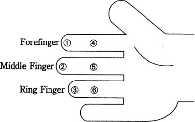
Figure 2: Proposed stimulus points.
The second prior project is a communication aid for
deaf-blind people using vibration motors. This project
proposes the use of a Braille type input/output device as
a communication aid for individuals who are both deaf and
blind. The device allows for both input and output
operations in 6- point Braille format as shown in
figure(2). It features a combined structure of a vibration
motor and a push-button switch for input/output functions.
Braille information can be easily inputted or presented
using specific hands. positions. An experiment was
conducted to determine the optimal position for presenting
Braille information, resulting in visually impaired
subjects achieving an 84% recognition rate after ten
minutes of training.
Inputting Braille information by a sighted subject yielded
a rate of approximately 36 characters per minute after
five hours of training
[3]
.
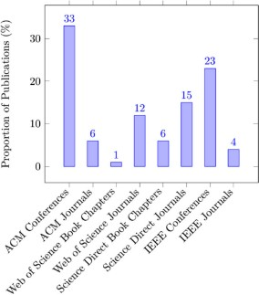
Figure 3:. The bar chart represents the proportions of
publications relevant to 'Assistive Technology for the
Visually Impaired and Blind people.
The third prior research is a study of the field of
assistive technology for visually impaired and blind
individuals. While subjective accounts have been written
in the past, we conducted an objective statistical survey
using information analysis and network-theory techniques.
By analyzing a comprehensive database of scientific
research publications from the past two decades, we
identified key research areas, growth patterns, leading
journals and conferences, and active research communities
as shown in figure(3). Our findings indicate sustained
growth in the field, with an increase from fewer than 50
publications per year in the mid-1990s to nearly 400
publications per year in 2014. This growth suggests that
assistive technology for visually impaired individuals
will continue to advance and positively impact their lives
as well as the elderly population
[1]
.
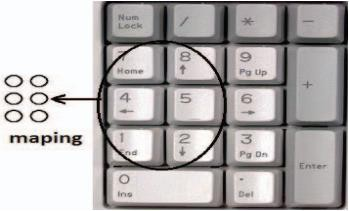
Figure 4: Digital Braille writer using numeric keyboard.
The fourth project states that the inability of blind
people to see makes it difficult for them to obtain the
most recent knowledge and technologies that could give
them alternate communication skills. Due to their
increased price and limited portability, modern
technological advancements are not easily accessible to
persons who are visually impaired.
Because of this, it has become increasingly important to
provide a quick, cheap, and portable Braille system for
persons who are blind. In this study, a novel
communication channel for deaf, blind, and visually
impaired individuals is introduced. It consists of three
distinct subsystems that offer various facilities to
enhance the communication abilities of those who are
visually impaired. The following three modules make up the
system: a portable low-cost refreshable device Using six
tiny vibrators, the Body-Braille device displays Braille
characters. ii) a straightforward Braille writer for
writing Braille characters, and iii) an SMS-based remote
communication system as shown in figure(4). This new
communication method is affordable, transportable, quick,
and precise
[4]
III. Proposed Model
i. approach and tools/techniques:
The project is a device consisting of four systems. Firstly,
the project depends on braille language, which means every
letter consists mainly of six units.
The first system is to understand what people say. The
smartphone application will be connected to the device to
send the letters that will be expressed by vibration
motors.
The project aims to send words from the blind- deaf to the
normal one through six push buttons. The words will be
shown on an LCD.
The third system is an ultrasonic sensor that will help
the blind-deaf to avoid obstacles.
The last one will be about object detection. The
application on the smartphone will send objects detected
through the camera to the Arduino.
The idea will be easier for blind-deaf people to communicate
faster, and the project can be edited by making it smaller
like a watch or a small
ii. overview of system modules
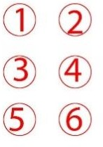
Figure 5, the keypad Keypad:
It is a set of buttons arranged in a grid or a matrix used
to enter numerical or alphabetical data as shown in
figure(5). It's a common input device used in various
electronic devices like calculators, security systems, and
mobile phones. In this project, a keypad is used as an
input device to write for normal people. Each number in
figure (2) represents a circle in braille language.
Figure 6, a vibration motor Vibration motors:
small-sized electric motors that produce mechanical
vibrations when a voltage is applied to them as shown in
figure(6). vibration motors are used to transform text
messages through vibrations for the deaf-blind.
Figure 7, the ultrasonic sensor Ultrasonic module:
An ultrasonic module shown in figure(7) is a sensor that
emits ultrasonic waves and measures the time it takes for
the waves to bounce back from an object. It is commonly
used in distance measurement, obstacle detection, and
navigation systems. In this project, an ultrasonic module
is used to detect obstacles and prevent collisions.
Figure 8, the Bluetooth module Bluetooth module:
The bluetooth module shown in figure(8) is a small
electronic circuit board that enables wireless
communication between devices over short distances. It is
used in connecting the device to the smartphone
application. It works by sending letter by letter to the
serial which is convenient.
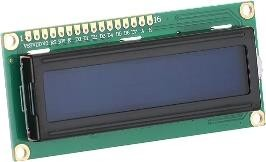
Figure 9, LCD display LCD display:
It is a flat panel display that uses liquid crystals to
produce images as shown in figure(9). It is commonly used
in digital watches, calculators, and electronic devices
that require low power consumption. In this project, an
LCD display is used to display the text messages written
on the keypad.
Figure 10, Arduino Mega Android Mega pro
It is a device to connect and program all the device's
components as shown in figure (10). It is preferable to
use because of containing many pins options. It helps to
connect all the components together.
IV. Methods
i. the prototype method.
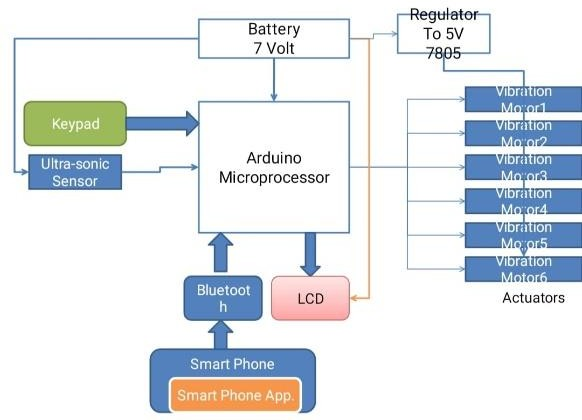
Figure 11, the flowchart of the prototype
The method to make the device in figure (11): To make the
writing part:
The first step is to connect the keyboard to the
breadboard and then connect each button of the keyboard to
the Arduino.
The next step is to write the code as follows: define two
variables, a null variable, and an empty string variable.,
Make if statement, so if each button of the six button is
pressed and represent 1 and not is equal to zero. At the
end the null string will make a unique number and each
number represents a unique letter. The letter will be
added to the empty string. There are two push buttons: 1-
to start and end writing 2- to move to a new letter.
To make the reading part: it is important to do the
following: connect the six vibration motors to the
breadboard, connect the Bluetooth driver to the Arduino, use
the application "Bluetooth connection" in making the
keyboard and, lastly, Send the numbers to the Arduino
program, and then by if conditions the vibrations will be
shown and a delay 0f 5 seconds between each letter.
For the ultrasonic part: Initially, it is important to
connect the ultrasonic to the Arduino and then program the
Arduino if the distance is less than 50cm, all the vibration
motors will be on.
To make the object detection system: It is essential to use
the object detection model on the application and connect to
the Arduino by Bluetooth. Then, letters are transferred to
braille on the vibration motors.
ii. Research Methodology:
The research methodology for the project is adjusted for
making a practical project. The research concern is to make
a project with three significant features — usable,
considerable, well-price. Depending on these criteria, the
project results will mainly focus on the qualitative results
— achieved, or not achieved. Some will be used as
quantitative results: describing the AI model efficiency.
The methodology of the research will be divided into two
parts. The first part is testing the code validity,
components status, and the accuracy of the model. The second
part is the survey for the user experience with the project,
importantly for being practical.
The main challenge of the project is the tested sample. The
experience of finding the blind-deaf and to teach him how
the device will work needs a long- term plan, extended for
years. The sample will be normal people, but the difference
is preventing their senses from work for the experiment.
V. Results
i. Survery
The aim of the survey is to simulate the experience of the
device to many people. The number of responses is 14. The
required information of the survey were:
Experience with using assistive technology.
The most comfortable shape for long-standing usage.
The time length of the survey from 1 to 10 4- The
satisfaction of the survey from 1 to 10
Do you have any experience with using assistive tech?
There are also questions about the mechanism of the gloves.
Some rules were given, and they are essential to answers the
questions.
Rules:
if all the vibration motors are on, so write avoid
If some vibration motors are turned, someone is writing
you a word
You should decide which state it is and decide the letter if
available.
These images were given to help the respondent to fully
understand.
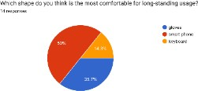
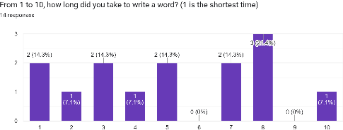
Figure 12, the conclusion of the answers of the survey
Results:
As shown if figure(12), 50% preferred the smartphone shape
while 35.7% preferred the gloves shape. 57.1% of the
respondents have no experience with assistive technology.
100% answered the first question right, 93% answered the
second right, and 78.6% answered the third right. People
rated its length on average 5.14 out of 10, meaning it is
not long or short. Respondents rated the experience on
average 5.9 out of 10.
ii. quantitive test:
The prototype was tested for these features: 1- Object
detection:
Object detection:
Table 1, model accuracy
Object name
Model prediction
Model effictiveness
mouse
mouse
50%
pen
Toothpaste
chair
chair
lamp
Refrigerator
person
person
calculator
cellphone
Laptop
Laptop
couch
bag
person
window
oven
Writing and reading
Table 2, writing and reading time.
sentence length (in letters)
Time to receive
Time to send another
7
42 sec
20 sec
20
2 min
1 min 39 sec
12
1 min 12 sec
44 sec
Average per letter
6 sec
4.87 sec
Obstacle avoidance
Table 3, obstacle avoidance accuracy
Distance (cm)
Measured distance
20
23 (15% increase)
40
40 (0% decrease)
52
56 (9.6% increase)
35
36 (2.9% increase)
50
53 (6% increase)
Result/real
106.7%
According to tables(1),(2),(3), the writing system is
considered 4.87sec/letter, and the reading is 6 sec/letter.
The model accuracy is 50%, and the ultrasonic sensor
measures the distance by an error of 6.7%.
VI. Discussion and Future plan
Depending on results, analyses and future plans have been
made. Although most people were satisfied with smartphones,
it was harder to do. Smartphones need tiny components and
complex programming. On the other hand, the gloves — the
second option in voting — were easier to do and easy to
lift.
i. reading section of the prototype:
Figure 13, the message application
The braille language is expressed by vibration motors.
90.5% of all answers were right, so that proves the
technique is good. The average estimate of the length of
the experience was 6 out of 10, so a little long time was
need. It was chosen for 6 seconds for each letter. The
letters were sent by an application as shown in figure
(14).
ii. writing section of the prototype shown in figure (15):
Figure 14, the writing section of the prototype
The average time per letter is 4.87 seconds, which varies
depending on the experience with the system. A normal
sentence needs about 1 minute 10 seconds, which considers
acceptable time, being able to improve with more practice.
iii. obstacle avoidance system:
The ultrasonic sensor worked well, but the problem is that
the wires distracted its function, so when wearing the
gloves, the ultrasonic sensor should be attached to the arm
below or it can be connected to a mobile device on the chest
or the shoes. 50 cm or less is detected accurately, so the
blind- deaf can feel the vibration if something is close to
him.
v. obstacle detection system:
Figure 15, the mobile application of object detection
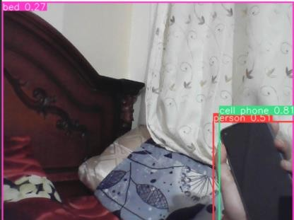
Figure 16, testing the new model
The results show that the model has a 50% accuracy, which is
unacceptable. It can only detect basic elements. However,
the connection to the application shown in figure (16) is
successful and fast.
To solve this problem in the future, another model (Yolov8)
shown in figure(17) was tested. It showed a range of
accuracy from 70 to 90 percent. The problem is to insert it
into the application. That model could be a subsequent
solution.
In conclusion, the future plans of the project:
The gloves shape will be better as a smartphone.
Using a new object detection model.
Separating the ultrasonic sensor from the original one
Using a PCB board instead of cables.
VII. Conclusion
The main objective of this project is to minimize obstacles
faced by individuals who are blind and deaf, aiming to
enhance their communication abilities. One notable aspect of
this project is its cost-effectiveness, making it a more
affordable solution compared to other alternatives. The
device's framework primarily consists of press buttons,
vibration engines, and ultrasonic sensors. By utilizing this
combination, the device enables deaf and blind individuals
to communicate more effectively. The vibration engines play
a crucial role in allowing users to read what they type on
their smartphones. The words typed on the keypad are then
displayed on an LCD screen, providing visual feedback. To
further enhance usability, potential obstacles can be
detected and avoided using an ultrasonic module.
The significance of this technology extends beyond its
immediate benefits, as it has the potential to positively
impact the lives of millions of blind and deaf individuals,
empowering them to move more freely and communicate with
greater ease.
IX. Acknowledgement
We would want to sincerely thank Allah for His mercies and
direction during our academic path. Additionally, we are
incredibly appreciative of our parents' unwavering support,
love, and encouragement. We would also want to thank
Abdelrahman Abdel Aleem, Our research instructor, Dr. Ahmed
Abdel Aleem, our project mentor, and YJS for their
tremendous advice and assistance. In addition, we want to
thank Ahmed Alaa, who is an important part of this project,
and unfortunately, he couldn't join us for the research.
Finally, we would like to express our gratitude to everyone
who contributed in any manner to our research.
X. Reference
Fulfilling eco-needs with energy-efficient metrics in
tropical-zone office buildings
Ahmed Hosny (STEM High School for Boys - 6th of
October) Abylay Iskakov (National School of Physics and
Math) Mentor:: Ziad Ahmed
Abstract
Current office buildings in temperate climate zones may
suffer from inefficient energy utilization that does not
match the workers' demands. This research was inclined to
detect the primary environmental need and determine
energy-related metrics that help to sustain those
environmental conditions. The study contained both
qualitative and quantitative methods presented from other
case studies due to the limitations we had. One of
quantitative methods included surveys that helped us to
comprehend the favorable environmental need to address from
office occupants: indoor air quality. Another quantitative
method involved analyzing energy records that served as a
tool to define energy-efficiency metrics. Contrary,
qualitative methods like interviews from experts were
beneficial for understanding the specific problem with air
quality systems, particularly regarding HVAC. To address the
needs of refining air quality, we particularly found
energy-efficient performance parameters-correlating metrics
- containing such as HVAC consumption, outdoor temperature,
and occupancy - and control systems strategies for air
quality testing: BMS, VAV, and VFD. Altogether, this
research found and promoted energy efficiency with
occupants' needs in temperate climate office buildings,
focusing on air quality improvement through refined control
systems and performance metrics. Further research can
potentially be conducted in office buildings located in more
harsh climate zones. Moreover, due to research constraints,
we were unable to conduct on-site visits to office
buildings. Therefore, our future actions will focus on
conducting in-person interviews during site visits to gain
deeper insights into environmental requirements. We will
also make efforts to obtain energy consumption records from
the building administrations.
a) Keywords: environmental needs, indoor air
quality, energy consumption, performance metrics, energy
management
b) Abbreviations:
LEED — Leadership in Energy and Environmental Design
BREEAM — Building Research Establishment Environmental
Assessment Method
HVAC — Heating, Ventilation, and Air Conditioning
GHG — Greenhouse Gas
EER — Energy Efficiency Ratio VAV — Variable Air Volume
VFD — Variable Frequency Drive BMS — Building Management
System
I. Introduction
Climate change is a globally recognized problem and is known
for its existence for a long period of time. Extensive
efforts were and are being exerted to find effective
solutions to this problem. One of the most contributing
sides to this problem is energy consumption, as to cover the
massive energy demands the world relies on non-renewable
energy resources, which produce large amounts of greenhouse
gases like Carbon Dioxide, methane, and nitrous oxide.
Therefore, constructing sustainable and energy-efficient
buildings has become essential to meet the large energy
demands of today's world. These buildings are known as green
buildings, they are known for their sustainability and
energy independence, as they use renewable resources to
cover a large percentage of energy needs or even their whole
demand. The purpose of this study is to dive deeper into the
evaluation of green building projects, which are known as
energy efficiency benchmarks, specifically for office
buildings located in temperature climate zones, as these
types of buildings consume tremendous amounts of energy and
are located broadly over the globe. Among commercial
buildings, office buildings have the largest number and have
the highest total energy consumption (about 14% of the
energy consumed by all commercial buildings)
[1]
. In a study about the energy consumption of green
buildings, it was found that heating consumption in
certified buildings, from building certification programs
(e.g., LEED, BREEAM), was 26% lower than the consumption in
uncertified buildings
[2]
. With that being said, it's concluded that constructing
energy-efficient green buildings would contribute greatly to
energy consumption quantities. This study provides an
extensive comprehensive review of the most efficient energy
metricizes and benchmarking methods to contribute to the
success of green buildings, and meeting the demands of
occupants. The aim of this study is to gather information
and data related to this topic and analyze them in a
critical scientific way to make the study of this topic easy
and accessible by engineers to assess the success of green
buildings. The purpose of this study will be fulfilled by
gathering data from scholarly sources and analyzing them due
to the lack of access to the experimental field.
II. Literature review
This literature review aims to explore the extensive field
of benchmarks and measures related to energy efficiency. The
primary focus is on how these benchmarks and metrics are
applied to evaluate the effectiveness of green building
initiatives in office buildings located in tropical
climates. By analyzing diverse scholarly sources, this
review aims to provide a comprehensive understanding of
viewpoints, approaches, and terminology related to energy
efficiency assessment. Certain researchers have made
significant contributions in this area by proposing
blueprints for the construction of sustainable,
energy-efficient structures
[3]
, whereas others have innovatively improved energy
efficiency in office buildings
[4]
. However, there exists a research void when it comes to
assessing the energy efficiency of operational buildings
(office buildings that run) with a focus on sustainability
objectives.
Firstly, within this research domain, numerous academics
concentrated on sustainable strategies applicable to office
structures, establishing criteria to define a building as
'sustainable'. Previous studies extended their exploration
beyond conventional LEED criteria and investigated
additional crucial factors that contribute to the well-being
of occupants in green buildings, such as natural
illumination, climate regulation, and indoor air quality
[4]
. Secondly, certain researchers examined the allocation of
energy within office buildings situated in tropical climate
zones, devising personalized approaches to enhance the
efficiency of energy systems. In their scrutiny of energy
distribution, a consensus emerged among most scholars that a
significant portion of energy is consumed by HVAC systems
(approximately 68%)
[5]
, which serves as a primary impediment to achieving
energy-efficient operations. To address this challenge,
numerous academics opted to integrate new technologies,
particularly wireless sensor networks, to optimize cooling
systems and achieve high scores on the COP metric
[6]
. Additionally, other scholars extended their investigation
beyond HVAC systems, proposing strategies to minimize
lighting consumption in office buildings, particularly in
regions where environmental conditions permit such measures
[7]
.
In summary, the current body of research offers valuable
perspectives on recognizing beneficial attributes of green
buildings and improving energy distribution. Nevertheless,
there is a distinct lack of thorough exploration concerning
the integration of energy optimization with the
environmental inclinations of occupants in office buildings.
This study seeks to bridge this gap by developing
energy-efficient metrics that resonate with the eco-friendly
inclinations of individuals working in office buildings
located in tropical climate zones.
III. Methods
The results reported in this research paper were conducted
using both qualitative and quantitative methods for a
stronger and more integral approach to the required results
with a net persuasive conclusion for the entire procedure,
so this research is basically mixed- method research.
i. Quantitative methods
The quantitative methods were conducted mainly using two
techniques: Surveys and energy records.
The surveys were used to configure the most impactful
environmental aspect for the occupants that they wish to be
more eco-friendly and energy-efficient, this aspect also
contributed to occupants' comfort inside the building. The
type of surveys used in our study is called post- occupancy
evaluation (POE) surveys which basically obtain feedback on
a building's performance based on surveys, spanning the
amount of approximately 300 participants. These surveys (no
access to background data or any other methodological data)
were conducted by previous scholars in two office buildings
in Australia, specifically in Sydney, which is a country
known for its temperate temperature. Implementing surveys
was a crucial step in our study because identifying the
workers' environmental preferences and improving them will
result in green and energy-efficient institutes in addition
to increasing the workers' comfort level inside their
working space, which will result in a more productive
community. The energy records used in this research were
made by scholars from Texas through observing the energy
consumption of office buildings during a period of 24 hours;
the observation records were analyzed using machine learning
and algorithms techniques and used to build up graphs on
three attributes: HVAC consumption, occupancy of the
building, and outside temperature. These graphs shed light
on some issues that can be potentially fixed for better
energy performance metrics of these buildings.
ii. Qualitative methods
The qualitative methods used in this research are only in
the form of interviews done with experts due to the
ecological consequences of inefficient energy consumption
regarding over- specification in cooling systems, which
clarified the causes of these issues. The information
collected from experts in these interviews helped eventually
in the success of green buildings.
IV. Results
Figure 1. A Conceptual Model of Occupant Well-being for
Malaysian Office Buildings.
In Malaysia, a country characterized by a tropical
climate, previous scholars conducted a case study. They
employed a qualitative analysis through interviews
(conducted by Razlin Mansor, Low Sheau-Ting) to ascertain
occupants' preferences for well-being within office
buildings
[8]
. Among the various findings, one discovery that resonates
with our research question pertaining to energy-related
matters involves occupants' preferences concerning their
health and comfort. This aspect strongly influences the
ecological considerations within office buildings,
specifically addressing factors like thermal comfort,
indoor air quality, and indoor lighting (Figure 1).
Certainly, aspects such as how occupants adapt to their
workspace, ensuring flexibility and privacy, as well as
safety measures like emergency readiness and injury
prevention, are vital for overall well-being. However, it is
important to highlight the significance of ecological
concerns because they impact not only individuals but also
the broader natural environment. Moreover, it is worth
noting that ecological preferences that occupants need for
their well-being are zial reflections of their environmental
beliefs, which are determined in a quantitative approach.
In Australia, in 2 office buildings in Sydney, researchers
utilized post-occupancy evaluation (POE) surveys to conduct
quantitative analysis in two academic office buildings.
Generally, POE is the process of obtaining feedback on a
building's performance based on surveys (conducted by
Richard de Dear, Max Deuble), spanning the amount of
approximately 300 participants. In our case, the outcomes
revealed a noteworthy correlation between occupant
satisfaction levels in POE and their environmental beliefs
[9]
. Given that addressing indoor air quality consumes a
significant portion of total energy usage (about 61.2%) and
accounts for an estimated 27% of the total greenhouse gas
(GHG) emissions, occupants exhibited greater leniency toward
their buildings, particularly favoring those incorporating
green design elements like operable windows for natural
ventilation
[9]
. On top of the great amount of energy usage, some scholars
from the tropical zone of China noted health issues that
might occur because of the components of indoor air quality
[15]
. Specifically, questionnaires (conducted by Zhu Cheng, Nuoa
Lei and other scholars) were utilized to study how people
perceive indoor air quality and its connection to sick
building syndrome. Additionally, cancer risk assessments for
these office buildings were conducted using on-site air
quality data of Chinese office buildings. The results
highlighted a significant correlation between indoor and
outdoor pollutant concentrations, with fluctuations
throughout the day. Having said that, indoor conditions were
found to be less favorable during the morning and afternoon.
While the risk assessment indicated that health problems
could exist even though the pollutant concentration levels
in the indoor environment were within the standard limits.
Figure 2. Causes of over-specification in experts'
opinion
Moving on to energy consumption again, in Malaysia, other
scholars noted the ecological consequences from
inefficient energy consumption regarding
over-specification in cooling systems
[10]
. They employed experts' interviews (conducted by Nurul
Zahirah, Nazirah Zainul and other scholars) to clarify the
causes of over-specification issues (Figure 2).
It can reasonably be inferred that those issues can be
classified into 2 categories of drawbacks: imprudence
during building (non- calculated resistance, searching for
quick solutions, size-dependent mentality) and careless
maintenance (stingy fee structures, inaccurate testing).
Therefore, the research later will propose a specific
metric that is responsible for building and controlling
new systems in office buildings.
In general, scholars attributed to green buildings' success
by acknowledging efficient HVAC systems and eliminating
harmful causes to those systems.
Among outdoor causes, radon, formaldehyde, asbestos, dust,
and lead paint can enter through poorly located air intake
vents and other openings
[11]
. Apart from over- specification, some scholars pointed out
specific technical causes through inspections of office
buildings: placement of refrigerators in front of a
thermostat, broken dampers, leaking valves, etc
[12]
.
There is much research done on devising effective HVAC
systems to satisfy occupants' needs. Beyond basic EER
metrics (a way of evaluating an air-conditioning unit's
efficiency), academics established new metrics by analyzing
energy consumption records for office buildings and
implementing machine learning algorithms.
For instance, scholars from Texas were able to track the
energy performance of buildings through various scaling
methods
[13]
(Table 1).
Table 1. Data Scaling methods.
Scaling Method
Description
Mathematical Formula
Min-Max Scaler
Used to normalize data in the range of [0, 1] For
each value in the feature, the minimum value is
subtracted and then divided by difference between
the original maximum and originial minimum
$\frac{\chi - min}{max-min}$
Standard Scaler
Used to rescale the distribution of the data by
subtracting the mean and then dividing by the
standard deviation [43]
$\frac{\chi - \mu}{\sigma}$
Robust Scaler
Primary used to remove the effect of outliers as the
centering and scaling of this scaler are based on
percentiles [44]
$\frac{x-Q_1}{Q_3 - Q_1}$
Figure 3. Effect of data scaling: (a) original data, (b)
min-max scaler, (c) standard scaler, (d) robust scaler.
Over a 24-hour time interval, the performance metric was
established by integrating values of HVAC Consumption (in
Kilowatts per Hour), Outdoor Temperature, and Number of
Users in the building (Figure 3).
The objective of performance metrics is to detect elevated
average power usage during periods of low outdoor
temperatures and reduced occupancy (Table 2).
Table 2. Clustering the values of performance metrics
Clusters Content
Min Max Scaler
Standard Scaler
Robust Scaler
HVAC kWh
Outdoor Temperature (F)
N_Users
HVAC kWh
Outdoor Temperature (F)
N_Users
HVAC kWh
Outdoor Temperature (F)
N_Users
Cluster 0
2.92041
79.321325
0.79497
1.98926
79.047934
0.625069
13.87707
83.121461
15.52785
Clutser 1
7.96495
74.409836
20.4754
8.98954
76.07863
18.82016
1.774806
70.057293
0.747598
Cluster 2
2.35077
55.230648
0.8503
2.39227
54.342054
1.759859
5.714216
66.734021
17.44433
This signal prompts building managers to adjust these
conditions to a more energy-efficient state, such as
decreasing the thermostat's setpoint
[13]
. In general, researchers mentioned the lack of control
systems within office buildings, stating that the HVAC
system needs to respond to the building's dynamic load or
dry and wet bulb temperatures, leading to inefficiencies. To
solve the issue, packaging air conditioning with metrics
like variable air volume (VAV) and variable frequency drives
(VFD) along with control and building management systems
(BMS) could respond to the changes in the building's
internal loads and ambient variations
[14]
.
V. Discussion
The primary goal for this research paper was to find the
essential environmental needs and determine the
energy-related metrics that are most efficient for the
environment, these goals were described in detail earlier in
the abstract and introduction, The objectives of this
research were fulfilled using both qualitative (Experts'
interviews) and quantitative (Surveys and energy records)
approaches. These data focused on the needs of the building
occupants when it comes to their environment and their
environmental beliefs (POE Surveys), the energy consumption
of the building based on three attributes: HVAC consumption,
occupancy, and the outdoor temperature (Energy records), and
how to fix problems related to the cooling system of the
building (Expert's Interviews). After gathering these data
and analyzing them, it was found that the most important
environmental factor to the workers is the indoor air
quality Also the energy records showed the lack of
controlling systems within office buildings. These findings
showed solutions to the objectives of our study like
improving the indoor air quality using natural ventilation
systems, using efficient control systems for the HVAC
consumption so that the building could respond to the
extensive load on specific day periods and solutions to the
problems related to the cooling systems. The quantitative
data used in this paper (Surveys and energy records) were
analyzed using descriptive statistics, which is a way of
describing a dataset statistically. The findings of this
research will contribute significantly to the development of
green buildings as the data was collected from different
sources and analyzed to come up with efficient solutions
that will shorten the way for engineers to build a green
office building that is totally green and totally
self-dependent in energy consumption. During the process of
conducting this research, we weren't able to access the
experimental field, so we had to rely on datasets collected
by other scholars, this obviously was a significant
limitation to our work as it might have affected the
accuracy of our results with a small percentage, it's also
unlikely for any future obstacles to face our study as green
buildings is increasing wildly and similar topics related to
green buildings is currently being researched by many other
scholars. For efforts willing to continue the work done in
this study we would recommend having a larger set of data
for better precision in the results, in addition, having
access to experimental fields and on-site location would
contribute greatly to the accuracy of the results.
VI. Conclusion
Throughout the work, the research played an integral part in
identifying energy consumption metrics with two purposes:
performance-measuring, managing. It determined specific
performance metrics, such as linking HVAC consumption,
outdoor temperature, and building occupancy, as well as
effective control system strategies like VAV, VFD, and BMS.
These were utilized to optimize energy utilization in office
buildings, aligning with occupants' primary environmental
needs. Throughout the study, energy records taken into
consideration by other scholars were handy in defining those
metrics. Although the initial anticipation was to formulate
highly specific HVAC usage metrics, the study revealed that
external factors facilitate a vast role in shaping the
ultimate metrics. Having said that, as we align with
occupants' ecological preferences, it became essential to
establish metrics for indoor air quality, considering that
many occupants prioritize it as a primary concern. This step
had not met any previous expectations prior to the onset of
this research. All in all, the findings from this research
were successful to bridge the gap between pointing out
momentous energy-related metrics that primarily address the
occupants' needs regarding indoor air quality in temperate
office buildings located in temperate climate zones (like
Malaysia, Australia, and Southern United States). The
further research can potentially investigate other
environmental needs of occupants: for example, both
eco-friendly and energy-efficient lighting. On top of that,
there is potential for further research in more challenging
climate conditions, such as extreme cold or high humidity
environments.
VII. Acknowledgement
First, we would like to praise God for helping us and
guiding us during this journey to yield this research paper.
Secondly, we would like to give our huge thanks and
gratitude to our biggest supporters for their invaluable
help, as without their support this work would never have
been possible:
First, to Ziad Ahmed, our respectful and patient mentor; his
feedback was the biggest contributor to our paper, and he
was available all the time for our urgent inquiries. Second,
to the Youth Science Journal management board, they were our
number one supporter throughout this entire journey; they
helped us with our biggest challenges and provided us with
useful materials that clarified many questionable things in
our research. Third, to the researchers who conducted the
papers mentioned in the references list; these scholarly
resources were our main source of information. Finally, to
our family and friends for giving us emotional support and
keeping us motivated during this process.
VIII. Tables & Figures
Figure 1. A Conceptual Model of Occupant Well- being for
Malaysian Office Buildings
Figure 2. Causes of over-specification in experts' opinion
Figure 3. Effect of data scaling: (a) original data, (b)
min-max scaler, (c) standard scaler, (d) robust scaler.
Table 1. Data Scaling methods.
Scaling Method
Description
Mathematical Formula
Min-Max Scaler
Used to normalize data in the range of [0, 1] For
each value in the feature, the minimum value is
subtracted and then divided by difference between
the original maximum and originial minimum
$\frac{\chi - min}{max-min}$
Standard Scaler
Used to rescale the distribution of the data by
subtracting the mean and then dividing by the
standard deviation [43]
$\frac{\chi - \mu}{\sigma}$
Robust Scaler
Primary used to remove the effect of outliers as the
centering and scaling of this scaler are based on
percentiles [44]
$\frac{x-Q_1}{Q_3 - Q_1}$
Table 2. Clustering the values of performance metrics
Clusters Content
Min Max Scaler
Standard Scaler
Robust Scaler
HVAC kWh
Outdoor Temperature (F)
N_Users
HVAC kWh
Outdoor Temperature (F)
N_Users
HVAC kWh
Outdoor Temperature (F)
N_Users
Cluster 0
2.92041
79.321325
0.79497
1.98926
79.047934
0.625069
13.87707
83.121461
15.52785
Clutser 1
7.96495
74.409836
20.4754
8.98954
76.07863
18.82016
1.774806
70.057293
0.747598
Cluster 2
2.35077
55.230648
0.8503
2.39227
54.342054
1.759859
5.714216
66.734021
17.44433
XI. References
How did China manage to divert global attention to the human
right abuses and genocide against the Uighur population?
Akhmetzhan Nurbike (Nazarbayev University)
Sapabekova Medina ("Dara" High School)
Abstract
This project is dedicated to the study of how China affected
the infringement of the Uighur Nation, so that countries do
not provide any help for this nation. Moreover, it explores
which pressure China puts on the Uighur nation and how
international organizations, countries impact this issue.
This topic significantly impacts on the development of the
Uighur nation, due to this there will be opportunities to
identify problems and begin to solve them in the world
market. Such questionnaires were completed by millions of
people, who have shared their knowledge and experience.
This scientific inquiry sheds light on the
manipulation of media, diplomacy, and international
relations, unveiling tactics that other governments might
employ in the future. Furthermore, this research empowers
international bodies, NGOs, and civil society to develop
more robust mechanisms for safeguarding human rights. Armed
with an in-depth understanding of how a nation effectively
diverted attention, stakeholders can formulate proactive
strategies to uphold the rights of marginalized populations
and hold responsible parties accountable.
I. Introduction
The article discusses how China's manipulation of media,
diplomacy, and international relations affects the
development of the Uighur nation. It sheds light on the
methods used by the Chinese government to divert the
attention of the world community from human rights
violations in Xinjiang.
The Uighur people were subjected to forced labor
[1]
, suppression of Uighur religious practices
[2]
, political indoctrination
[3]
, forced sterilization, forced contraception, and forced
abortion
[4]
. Numerous studies have examined the violation of the rights
of Uighurs in Xinjiang. They focused on questions such as
"how exactly is China tracking the Uighur people"
[5]
or "what responsibility does China have for the Uighurs"
[6]
. However, they do not consider how the Chinese government
managed to divert the attention of the world community from
the human rights violations. In this article, we investigate
what methods China used to achieve such a goal. Delving into
the methods, motivations and consequences of China's
actions, this study provides a comprehensive analysis of how
a nation can influence international narratives.
The Chinese government is committed to the destruction of
the Uighur nationality. The reason for such cruel treatment
of the Uighurs is their numerous attempts to free themselves
from the oppression of China and gain independence. In the
history of this struggle, the screws tightened more and more
with each new protest, with each attempt by the Uighurs to
gain independence
[7]
. Many countries of the world, from Bosnia and Herzegovina
to the United States, and international human rights
organizations express extreme concern about the rights of
ethnic minorities in China. However, despite numerous
evidences of abductions, forced assimilation, torture, the
use of slave labor and the sterilization of women, the
brutal persecution of the population continues.
[8]
i. The causes of Genocide Problem in the world.
This study starts with a description of the Chinese and
Uighur people, then it will be moved on to the
sanctification of the Uighur problem itself - how this
problem arose and what are its causes. In order to
understand the topic presented at the present moment, it
describes the current state of the Chinese government's
policy towards the Uighur people. The Chinese government is
a very authoritarian government and seeks to subjugate the
opposition in various ways. The Chinese government's methods
apply only to Uighurs and could be to all money groups
demanding liberalization or democratization in the Chinese
state
[9]
.
The findings state that China's success in distracting the
attention of the world community and the lack of assistance
from various states is due to a combination of control over
the media, diplomatic negotiations, economic power and
strategic messages. The interaction of these factors
contributes to changing international perceptions and
diverting attention from the Uighur crisis
[8]
. China is a party to several international human rights and
criminal law treaties prevention discrimination, genocide,
torture and slavery. China has placed numerous reservations
on them which prevent the treaties being fully enforced by
other states
[2]
.
ii. The importance of research.
In the conclusion of the research work, there will be
solutions of this problem, which states that Uighur genocide
requires international cooperation and diplomatic efforts.
By disseminating accurate information, human rights groups
and international organizations can help the international
community understand the seriousness of the situation and
exert public pressure to take action. It is important to
advocate transparency, dialogue and compliance with
international law in order to effectively resolve the
ongoing crisis
[1]
.
The Uighur genocide represents a severe violation of human
rights. The exploration and understanding of the genocide
are crucial to shed light on the atrocities committed
against the Uighur people and to ensure accountability for
the perpetrators.By exploring the Uighur genocide, this
research can increase global awareness and acknowledgment of
the ongoing crisis. This can lead to international pressure
on the perpetrators to end the atrocities and work toward
justice and rehabilitation for the victims. By exploring the
Uighur genocide, this research can explore ways to support
and provide assistance to the survivors and families
affected by the atrocities. This may include measures such
as aiding refugees, advocating for their rights, and
ensuring their access to justice and services
[4]
.
II. Habitation of the Uyghur Nation now
As of now, the Uyghur population continues to reside in the
Xinjiang Uyghur Autonomous Region in northwest China, where
the majority of Uyghurs are concentrated. However, it is
important to note that the situation in Xinjiang has
dramatically changed in recent years due to the Chinese
government's policies aimed at assimilation, surveillance,
and mass detention of Uyghurs
[3]
. The current habitation of the Uyghur nation is marked by
widespread human rights abuses and a diminishing sense of
autonomy and cultural identity. The situation is deeply
concerning and highlights the need for continued
international attention and action to address the ongoing
crisis.
[7]
The Chinese government has implemented a widespread campaign
of repression against the Uyghur population, including the
construction of "re-education" camps, where Uyghurs and
other Muslim minority groups are arbitrarily detained on a
massive scale. There have been reports of forced labor,
forced assimilation into the Han Chinese culture, and
restrictions on religious practices and cultural
expressions. The Chinese government justifies its actions by
citing concerns about separatism, terrorism, and extremism.
However, various human rights organizations, governments,
and experts have raised concerns about the violation of
Uyghur rights and the occurrence of crimes against humanity.
[9][10][12]
.
i. Consequences of pressure on the Uyghur nation
The Chinese government's assimilation policies have targeted
Uyghur culture, language, and religious practices. Uyghurs
are pressured to conform to Han Chinese norms, eroding their
distinct cultural identity. This suppression of cultural
expression can have long-lasting effects on the Uyghur
nation's cultural heritage and the sense of belonging among
Uyghur individuals
[2]
. Moreover many Uyghurs have experienced family separation
due to detention or forced labor. The Chinese government's
policies have led to the separation of parents from
children, siblings from each other, and spouses from one
another. This has had a profound emotional toll on Uyghur
families and communities.
The pressure and repression faced by the Uyghur nation can
contribute to increased tensions and even radicalization
among some individuals. In extreme cases, the
marginalization experienced by Uyghurs may lead to feelings
of hopelessness and desperation, potentially pushing some
individuals towards extremist ideologies or violence
[3]
. The Uyghur crisis has generated global outrage and put
pressure on governments to respond. This has resulted in
strained diplomatic relations between China and several
countries, economic consequences such as sanctions and trade
restrictions, and boycotts of companies implicated in Uyghur
forced labor.
[8]
ii. China's governmental system
The Communist Party of China is the ruling political party
in China. It holds ultimate power and authority in the
country. The party's General Secretary is considered the
most powerful position in the country. China's governmental
system is highly centralized, with decision-making
concentrated in the hands of top Communist Party leaders.
Power is exercised through a hierarchical system, with
guidance and directives flowing from the central government
to provincial, municipal, and local levels. China's
governmental system follows the principle of socialism with
Chinese characteristics.This refers to a blend of socialist
ideology and market-oriented economic reforms, combining
central planning with elements of market competition and
private ownership.
[9]
iii. Organizations fighting for Uyghur Nation's rights
Nowadays, China, having good political relations with other
countries, makes the Uighur nation separated from
international help. China bears state responsibility for
breaching every article of the 1948 Genocide Convention in
their treatment of the Uighur people of Xinjiang province
[6]
.
Parliaments around the world are now studying and debating
it, and many are considering following the path set by the
Netherlands and Canada in declaring the situation in
Xinjiang a genocide
[7]
. This is as it must be: some 152 counties are signatories
to the Genocide Convention (including also China), and each
has a duty under the Convention to make their own
determination of whether a situation meets the criteria set
out in the Convention.
More than a million Uighurs and other minorities are
estimated to have been detained in camps in Xinjiang.
Xinjiang lies in the north-west of China and is the
country's biggest region. Like Tibet, it is autonomous,
meaning - in theory - it has some powers of self-
governance. But in practice, both face major restrictions by
the central government
[7]
. The Chinese government has been accused of carrying out
forced sterilizations on Uighur women and separating
children from their families.
[4]
IV. Other countries' reaction on that issue
The U.N. The Human Rights Council, individual countries, and
international organizations have been putting pressure on
China over Xinjiang and calling on Beijing to allow U.N.
inspectors into the region to investigate
[13]
. Germany issued a joint statement on behalf of U.N. member
states condemning the "increasing number of reports of gross
human-rights violations" in Xinjiang, including "severe
restrictions on freedom of religion or belief and the
freedoms of movement on Uighur culture".
[14]
At the same time, Cuba issued an opposing statement on
behalf of 45 countries "supporting China's counterterrorism
and deradicalization measures in Xinjiang." However, the
balance of world opinion has appeared to be shifting against
China, with 16 countries signing on to the statement of
condemnation that had declined to sign a similar statement
[15]
. So far, the world has been reluctant to go much further
than condemning China's actions. Human Rights Watch issued
an extensive report on the situation in Xinjiang, making the
case that China was committing crimes against humanity.
i. International countries' policy
China has detained Uighurs at camps in the north-west region
of Xinjiang, where allegations of torture, forced labour and
sexual abuse have emerged. The sanctions were introduced as
a coordinated effort by the European Union, UK, US and
Canada. China responded with its own sanctions on European
officials
[5]
. It has denied the allegations of abuse, claiming the camps
are "re-education" facilities used to combat terrorism. But
UK Foreign Secretary Dominic Raab said the treatment of
Uighurs amounted to "appalling violations of the most basic
human rights".
US Secretary of State Antony Blinken said China was
committing "genocide and crimes against humanity". The US
said it sanctioned Wang Junzheng and Chen Mingguo for their
connection to "arbitrary detention and severe physical
abuse, among other serious human rights abuses"
[6]
. Canada's foreign ministry said: "Mounting evidence points
to systemic, state-led human rights violations by Chinese
authorities." The sanctions came amid increasing
international scrutiny over China's treatment of Uighurs.
ii. Methods of exploring research
First, a comprehensive literature review to analyze existing
scholarly works, media reports, and policy documents on the
topic were employed. This provides a foundational
understanding of key narratives and strategies. Secondly,
qualitative content analysis of international media coverage
and diplomatic statements to discern patterns in framing
were conducted. By identifying linguistic nuances, research
aims to uncover how China shapes the narrative surrounding
the Uighur issue. Thirdly, interviews with experts in
international relations and communication will offer
insights into China's diplomatic and public relations
strategies. This qualitative data will be triangulated with
media analysis to enhance our understanding. Additionally,
social media analysis and sentiment tracking will help gauge
public engagement. Ethical considerations will guide our
research, ensuring a balanced and unbiased approach. By
triangulating information from various sources, research
aims to uncover the mechanisms employed by China to divert
attention and offer a nuanced understanding of the complex
issue
[5]
. This research will contribute to a more informed global
discourse on the subject.
iii. Actions of China, which divert the attention of other
countries
China's significant economic influence around the world,
particularly through trade and investment, can often divert
the attention of other countries. Many countries have
economic ties with China and may be reluctant to criticize
or confront China on certain issues in order to protect
economic interests
[9]
. Moreover China has utilized diplomatic pressure to
discourage other countries from raising concerns about its
internal affairs or issues such as human rights violations.
This can include economic coercion, threats of trade
consequences, or diplomatic isolation. Also China tightly
controls its domestic media and internet to limit the flow
of information critical of the government or sensitive
issues. This information control can make it difficult for
other countries to fully understand and discuss certain
events or policies, diverting attention away from them.
iv. China's contribution to the Uighur nation
China has invested in infrastructure and economic
development projects in Xinjiang, which can bring benefits
to the Uighur population in terms of job opportunities,
improved access to resources, and economic growth. However,
these developments have also been criticized for displacing
Uighur communities, marginalizing Uighur businesses, and
benefiting primarily Han Chinese settlers rather than the
Uighur population.
It is crucial to approach the question of China's
contribution to the Uighur nation with a critical lens and
sensitivity to the ongoing human rights crisis. While there
may be certain aspects that have brought benefits to some
individuals or communities, they should not overshadow the
severe violations being committed against the Uighur
population and the urgent need for international attention,
accountability, and support for the victims.
V. Conclusion
The current status quo between the Uyghur and Chinese
nations is marked by significant tensions and human rights
concerns. The Chinese government's policies in the Xinjiang
region, where the majority of Uyghurs reside, have led to
widespread human rights abuses and raised serious
international concerns. Reports indicate that over a million
Uyghurs and other
The international community should continue to exert
diplomatic and economic pressure on China to address the
Uyghur genocide. This can involve sanctions, trade
restrictions, and diplomatic efforts to hold the Chinese
government accountable for its actions. Independent
international bodies, such as the United Nations or other
reputable organizations, should conduct thorough and
unbiased investigations into the human rights abuses in
Xinjiang
[7]
. Such investigations can help gather evidence, document
atrocities, and hold the perpetrators accountable.
Increased humanitarian aid should be provided to Uyghur
communities, both within China and in countries where Uyghur
refugees seek shelter. This includes providing access to
basic needs, healthcare, legal support, and protecting their
rights as displaced persons
[9]
. It is crucial to raise awareness about the Uyghur genocide
and advocate for the rights of the Uyghur people.
Governments, human rights organizations, and individuals can
engage in advocacy efforts, public campaigns, and
educational initiatives to mobilize support and put pressure
on governments to take action.
Impact of Superconductor LK-99 on Quantum Computers Maintenance
and Operational Costs.
Adam Mohamed | Kareem Walid
(STEM High School for Boys - 6th of October)
Research Supervisor: Ahmed S. Ahmed
(STEM High School for Boys - 6th of October &
Miami University Sophomore)
Abstract
This research explores the impact of the superconductor
LK-99 on the maintenance and operational costs of quantum
computers. Quantum computers have shown great potential in
revolutionizing computing by leveraging the principles of
quantum mechanics to achieve exceptional computational
power. However, the fragility of qubits - the fundamental
units of quantum computing - poses significant challenges in
terms of errors and decoherence. Efficiently managing
quantum errors requires complex error correction techniques
and the cooling of qubits to ultra-low temperatures. The
concept of room-temperature superconductivity, exemplified
by LK-99, offers a transformative solution by potentially
reducing the cooling requirements of quantum hardware. This
breakthrough could enhance the stability and viability of
quantum devices for widespread utilization. This paper
investigates the potential benefits of LK-99 in quantum
computer operations, highlighting their role in mitigating
thermal noise and improving qubit stability. The findings
provide valuable insights into the practical implications of
integrating superconductors in quantum computing systems,
paving the way for more efficient and cost-effective
utilization of these powerful machines.
I. Introduction
Supercomputers have brought about a big change by
effectively addressing complex scientific challenges that
were previously obstacles for researchers. Their remarkable
capacity to expediently execute Complicated algorithms,
compressing the timeline of tasks from weeks to minutes
compared to classical computers, and their ability to
simulate atomic-level behaviors of molecules have played
fundamental roles in scientific advancements. Even with all
the potential they hold, supercomputers have their
limitations when compared to the enormous potential of
quantum computers, which are still in development but show
great promise. The potential of quantum computers becomes
conspicuously evident through their exceptional
accomplishments. Google's Sycamore, a quantum computer
boasting 53 qubits—the foundational units of quantum
computing—successfully tackled the formidable BosonSampling
problem within a mere 200 seconds. In stark contrast,
conventional computers would require billions of years to
achieve the same feat. Another noteworthy instance is the
Fugaku quantum computer at the University of Tokyo, which
adeptly emulated the intricate process of protein folding, a
pivotal pursuit in drug development. Additionally, the
University of Maryland employed quantum computers to
replicate the behaviors of Ising model quantum magnets,
thereby unveiling insights into quantum phenomena. These
instances underscore the precision and intricacy of quantum
simulations, underscoring the profound influence of quantum
computing by yielding groundbreaking advancements. These
quantum milestones are made possible by leveraging the
tenets of quantum mechanics, particularly "superposition"
and "quantum entanglement." Superposition engenders data
parallelism, where quantum bits (qubits) exist in multiple
states simultaneously, empowering quantum computers to
navigate an extensive array of possibilities within a single
computation. This capability significantly accelerates
specific problem-solving scenarios. Furthermore, the
phenomenon of quantum entanglement permits interconnections
among qubits, enabling the instantaneous influence of one
qubit's state on another, even across significant distances.
This property empowers quantum computers to execute
intricate operations and simulations that surpass the
capabilities of classical computers.
Quantum computers distinguish themselves from their
supercomputer counterparts through various pivotal
disparities. Foremost is the fundamental distinction in
their data storage mechanisms. Supercomputers utilize
"classical bits," while quantum computers use "qubits." This
distinctive attribute empowers quantum computers to
simultaneously explore an array of outcomes, thus setting
them apart in computational efficacy. Furthermore, quantum
computers leverage specialized tools known as "quantum
gates," a departure from the conventional "logical gates" in
supercomputers. These quantum gates facilitate the
manipulation of qubits, enabling the execution of
multifaceted algorithms, which address intricate challenges
like factorization of large numbers or unsorted database
searches.
As mentioned, quantum computing holds the promise of
revolutionizing computations. Yet, this potential faces
significant hurdles stemming from the fragility of qubits.
Analogous to classical bits, qubits are vulnerable to
"decoherence," where their quantum states lose coherence due
to environmental interactions. This leads to fidelity
reduction and quantum computation errors, which amplify the
risk of inaccuracies in quantum algorithms.
Environmental factors further compound qubit decoherence.
Temperature fluctuations and electromagnetic radiation can
destabilize the quantum states of qubits, accentuating the
need to shield qubits from such interactions. Quantum errors
encompass inaccuracies in quantum computations stemming from
various sources, including qubit decoherence, gate
imperfections, and readout inaccuracies. Addressing these
errors necessitates intricate error correction techniques
that leverage redundancy to enhance the stability of quantum
computations.
Efficiently managing quantum errors involves cooling qubits
to ultra-low temperatures, nearing absolute zero, to
mitigate thermal noise and thus reduce qubit decoherence.
Cryogenic systems and innovative cooling methods have
emerged as critical tools for maintaining qubit stability
and fidelity. Notably, the concept of room- temperature
superconductivity offers a transformative avenue in quantum
computing. Identifying materials that exhibit
superconductivity at or near room temperature could
substantially alleviate the cooling requirements of quantum
hardware. This breakthrough could streamline quantum device
operations, making them more viable for widespread
utilization. This paper will explore the distinction between
classical bits and qubits, the fundamental units of
information in supercomputers and quantum computers. It will
also cover the three primary types of quantum
computers—gate-based, Annealing-Based, and superconducting
quantum computers—alongside the cooling process, popular
superconductors, and implementations of LK-99.
II. Quantum Bits
Within the world of computing, the conventional method of
storing information relies on classical bits—fundamental
units characterized by two states: 0 (off) or 1 (on). These
binary representations are subsequently translated into data
embedded within the web of a computer system. However, this
conventional approach carries inherent limitations. Notably,
it necessitates longer processing times for intricate
simulations and the resolution of complex equations. These
time-intensive endeavors arise due to the nature of
classical bits, which can occupy only one state at a given
moment. Nevertheless, this limitation doesn't imply a
barrier to computational advancements.
[1]
In recent developments, quantum computers have emerged as a
promising avenue for overcoming these challenges. While
still in their early stages of development, quantum
computers aim to address the shortcomings of current
classical systems. A significant step in this direction
involves reimagining the fundamental unit of
information—moving from classical bits to qubits. Qubits
distinguish themselves from bits across multiple parameters,
with one noteworthy distinction being their reliance on
principles derived from quantum mechanics. Notably, qubits
harness the concepts of "superposition"
$$ |\psi \rangle = \alpha \: | \: 0 \rangle + b|1 \rangle
$$
Equation 1: Qubit wave equation.
and "quantum entanglement" to their advantage. Qubits can
exist at multiple states at the same time where its state
will be shown in the wave equation $| \psi \rangle = \alpha
| 0 \rangle + \beta | a \rangle$, where $\alpha$ and $\beta$
are complex numbers that determine the probability
amplitudes of the qubit being in states 0 and 1
respectively.
[2]
This ability, influenced by quantum gates, enables the
computer to process multiple cases simultaneously.
A key quantum gate in this context is the Hadamard Gate (H),
which facilitates the creation of a superposition state
denoted by $\displaylines{H = \frac{1}{\sqrt{2}}
\begin{bmatrix} 1 & 1 \\ 1 & -1 \end{bmatrix}}$
Additionally, the pauli gates—pauli-X, pauli-Y, and
pauli-Z—play vital roles in phase change and qubit
manipulation. These gates are represented by
$\displaylines{X = \begin{bmatrix} 0 & 1 \\ 1 & 0
\end{bmatrix}, Y = \begin{bmatrix} 0 & -i \\ i & 0
\end{bmatrix}, Z = \begin{bmatrix} 1 & 0 \\ 0 & 1
\end{bmatrix}}$ respectively.
[3]
$$ \left( \begin{array}{lcr} \quad X \qquad \quad \; Y
\qquad \quad Z \qquad \qquad \quad \; \; H \\ \\
\begin{bmatrix} 0 & 1 \\ 1 & 0 \end{bmatrix} \;
\begin{bmatrix} 0 & -i \\ i & 0 \end{bmatrix} \;
\begin{bmatrix} 0 & 1 \\ 0 & -1 \end{bmatrix} \quad
\frac{1}{\sqrt{2}} \begin{bmatrix} 1 & 1 \\ 1 & -1
\end{bmatrix} \end{array} \right) $$
Equation 2: An inside depiction of the Grover's
algorithm
[71]
Figure 1: An inside depiction of the Grover's algorithm
[71]
Another significant concept underlying the quantum system
is Schrödinger's equation, which measures changes in a
function over time. It's represented as $i \hslash
\frac{d}{dt} | \psi (t) \rangle = H|\psi (t)\rangle$ A
notable algorithm that capitalizes on the concept of
superposition is Grover's algorithm for searching unsorted
lists. It employs multiple Hadamard gates to bring the
qubit into an even superposition state. Further, Pauli-Z
gates amplify the wave function's amplitudes to move
closer to the desired answer, achieved through a process
called the Oracle.
[4]
Quantum entanglement, a captivating aspect of qubits,
allows them to establish an intangible
connection—resembling an imaginary string— regardless of
the physical distance between them. This entanglement
profoundly influences the states of the connected qubits,
opening new vistas to transcend classical computing.
Quantum teleportation exemplifies this phenomenon by
transmitting the state of one qubit from a source to a
distant location. This concept holds potential
applications in distributed quantum computing, enabling
the efficient transfer of qubit states to different
processors for enhanced problem- solving capabilities. The
process of quantum teleportation involves manipulating an
entangled pair of qubits, with one serving as the sender
qubit and the other as an additional qubit. [5, 6] In
essence, operations are executed on the sender qubit,
along with the qubit intended for teleportation and the
additional qubit. These
$$\displaylines{ |\Phi^+ \rangle = \frac{|00 \rangle +
|11 \rangle}{\sqrt{2}} \;| \Psi^+ \rangle = \frac{|01
\rangle \; + |10 \rangle}{\sqrt{2}} \\\\ |\Phi^- \rangle
= \frac{|00 \rangle - |11 \rangle}{\sqrt{2}} \;| \Psi^-
\rangle = \frac{|01 \rangle \; - |10 \rangle}{\sqrt{2}}
} $$
Equation 3: The 4 bell states.
operations, represented as classical bits, are transmitted
to the receiving end, where specific actions are taken to
transform the receiving qubit's state into the desired
state. These actions correspond to what is known as bell
operations or bell states. These states are encapsulated
in four equations—Phi Plus $(|\Phi^+ \rangle)$, Phi Minus
$(|\Phi^- \rangle)$, Psi Plus $(|\Psi^+ \rangle)$, and Psi
Minus $(|\Psi^0 \rangle)$. Each equation describes the
entanglement nature between two qubits. For instance,
$|\Phi^+ \rangle = \frac{1}{\sqrt{2}} (|00 \rangle + |11
\rangle), |\Phi^- \rangle = \frac{1}{\sqrt{2}} (|00
\rangle - |11 \rangle), |\Psi^+ \rangle =
\frac{1}{\sqrt{2}} (|01 \rangle + |10 \rangle)$, and
$(|\Psi^- \rangle = \frac{1}{\sqrt{2}} (|01 \rangle - |10
\rangle)$. These states also offer insights into the
relationships between entangled qubits and find utility in
quantum error correction and addressing the challenges
posed by decoherence.
[7]
The distinction between classical and quantum computers
extends beyond their methods of data representation; it
encompasses the very process of extracting information from
operations. In classical computing, data retrieval involves
a precision-oriented approach, where data is extracted with
exact accuracy by sequentially reading the bit sequence
stored in the computer's memory. Quantum computers, however,
adopt a fundamentally different strategy for extracting
data. Instead of yielding a single definitive result,
quantum operations generate a spectrum of potential
outcomes. Through repeated execution of these operations,
varied results emerge in each instance. Subsequently, these
outcomes are compiled, and a statistical analysis is
employed to derive insights regarding the probabilities
associated with each feasible outcome.
The probabilistic nature inherent in data acquisition using
qubits introduces a critical concern involving two
phenomena: decoherence and quantum noise. These factors
exert adverse influences on the accuracy of qubit data.
Decoherence and quantum noise arise due to shared reasons,
primarily linked to external environmental interactions.
Ultraviolet radiation emitted by the sun and temperature
fluctuations during the computer's operational runtime serve
as primary triggers for these phenomena. Consequently, an
array of types of quantum computing is devoted to mitigating
the impact of decoherence and quantum noise. [8-10]
III. Types of Quantum Computers
Gate-based quantum computers
Gate-based quantum computing, a cornerstone of quantum
computational paradigms, relies on the orchestration of
quantum gates as its foundational building blocks. These
gates wield the power to manipulate the quantum states of
qubits and pave the way for the execution of intricate
quantum algorithms. Quantum gates are often represented by
unitary matrices (U) and serve as the linchpin for quantum
computation, playing a pivotal role in the processing of
quantum information.
Figure 2: CCNOT gate matrix.
An inherent property of quantum gates is their ability to
create entanglement between qubits. When two or more
qubits are entangled, the state of one qubit $|\psi
\rangle$ is inherently dependent on the state of another,
even when physically separated. This phenomenon of
entanglement constitutes a bedrock for various quantum
algorithms and quantum error correction schemes
[11][12].
One quantum gate of remarkable significance is the Toffoli
gate, colloquially known as the Controlled-Controlled-Not
(CCNOT) gate.
This three-qubit quantum gate enacts a
controlled-controlled-X (CCX) operation on its target qubit.
In classical computing parlance, it resembles a logical AND
gate controlled by two input bits—$|a \rangle \: |b
\rangle$—and employed to toggle the state of a target
bit—$|c \rangle$. The Toffoli gate is represented by the
equation: $|a \rangle \: |b \rangle \: |c \rangle
\rightarrow |a \rangle \: |b \rangle \: |c \rangle \otimes
(a \Lambda b) \rangle$ where $|a \rangle$, $|b \rangle$, and
$|c \rangle$ represent the states of the three qubits and
"$\otimes$" denotes the bitwise XOR operation, which means
that the state of the target qubit $|c \rangle$ is flipped
(X gate applied) if and only if both control qubits $a
\rangle$ and $|b \rangle$ are in the state $|1 \rangle$.
This gate finds itself ubiquitously integrated into quantum
circuit design, playing an indispensable role in the
orchestration of quantum algorithms and quantum error
correction procedures [13-16].
Quantum error correction mechanisms emerge as an imperative
facet in gate-based quantum computers, addressing the
intrinsic susceptibility of qubits to errors stemming from
multifarious sources. These errors include qubit decoherence
($\Gamma$), environmental interactions, and quantum noise.
Quantum error-correcting codes (QECCs) occupy a pivotal
position in this context, bolstering the reliability of
quantum computations. QECCs introduce redundancy by encoding
logical qubits across multiple physical qubits, obviating
the need for direct measurements. Error detection syndromes
are meticulously assessed to pinpoint errors, and corrective
operations are judiciously applied to restore the encoded
quantum state [17-19].
The SWAP gate, a fundamental two-qubit quantum gate, assumes
a prominent role in quantum computing. Its core function
lies in the exchange of quantum states between two qubits.
Analogous to its classical counterpart that swaps the values
of classical bits. The representation of the SWAP gate is
$|a \rangle \: |b \rangle \: |a \rangle$ and even if the
first qubit $|a \rangle$ is in a superposition or any
quantum state, the SWAP gate effectively swaps its state
with the second qubit $|b \rangle$. This operation underpins
multi-qubit operations, facilitating the implementation of
intricate quantum algorithms
[20]
.
Gate-based quantum computers engage in a symphony of
individual qubit operations, encompassing rotations and
flips. These elementary operations, often represented as
quantum gates (U), collectively contribute to the
realization of complex quantum algorithms, allowing quantum
computations to unfold in a meticulously choreographed
manner.
Figure 3: Depiction of the QFT's process of state
exchange
Quantum circuits, serving as visual blueprints of quantum
algorithms, assume a pivotal role in quantum computing.
These circuits are an amalgamation of quantum gates and
operations, meticulously sequenced to delineate the
step-by- step computational journey. The Quantum Fourier
Transform (QFT), often represented by a unitary operator
(U), stands as a quintessential example, facilitating a
quantum rendition of the discrete Fourier transform—a
critical operation in the quantum domain. QFT transmutes
an input quantum state |a⟩ into another quantum state |b⟩
nestled within the frequency or Fourier basis.
Figure 4: Depiction of the Quantum Phase Estimation
Algorithm (QPE)
This transformative feat finds application in a spectrum
of quantum algorithms, including Shor's algorithm for
integer factorization and quantum phase estimation
[21-25].
The Quantum Phase Estimation (QPE) algorithm, a
cornerstone of quantum computing, emerges as a potent tool
for the estimation of phase (ϕ) or eigenvalues of a
unitary operator.
QPE's importance reverberates through various quantum
algorithms, including the trailblazing Shor's algorithm
and quantum simulations. This algorithm plays a pivotal
role in deciphering intricate problems in cryptography and
quantum system simulations [26-28].
In the realm of quantum computing, where combinatorial
optimization problems pose formidable challenges, the
Quantum Approximate Optimization Algorithm (QAOA) emerges as
a beacon of hope. QAOA is a hybrid quantum-classical
algorithm meticulously designed to tackle such conundrums.
It embarks on its quest by translating the problem's
solution space into a quantum state. QAOA operates through a
sequence of quantum circuit layers, each composed of a
quantum mixer unitary $U_m$ for entanglement creation and a
problem-specific cost unitary $U_c$ encoding the objective
function. Following a variational approach, the algorithm
optimizes the circuit's parameters to approximate the
optimal solution. At each iteration, measurements are
meticulously taken to evaluate the objective function, with
classical optimization techniques fine-tuning circuit
parameters. QAOA continues this iterative process until a
predefined convergence criterion is met, striving to unearth
a quantum state that faithfully approximates the optimal
solution to the intricate optimization problem. This
endeavor holds the promise of delivering a quantum speedup
[29][30]
across a myriad of applications, thus underlining the
transformative potential of quantum computing .
Annealing-based quantum computers
Annealing-based quantum computers, also known as quantum
annealers, represent a distinct category of quantum
computing devices meticulously engineered for the resolution
of optimization problems. These cutting-edge devices find
their forefront in the work of D- Wave Systems, a leading
entity in quantum computing technology.
The underlying operational principle of annealing-based
quantum computers revolves around a process known as quantum
annealing. This technique harnesses the inherent inclination
of quantum systems to converge towards low- energy states,
rendering it invaluable in the domain of optimization
problems. Quantum annealing offers a novel approach compared
to classical annealing, which explores energy landscapes
iteratively. Instead, quantum annealing taps into quantum
tunneling and fluctuations, enabling the agile navigation of
a more extensive solution space.
In the realm of annealing-based quantum computers, problems
are aptly translated into discrete energy levels. The
ultimate objective is to discern the configuration
characterized by the lowest energy state, signifying the
optimal solution. Hence, annealing-based quantum computers
commence by initializing qubits in a superposition of
states, facilitating the simultaneous exploration of
multiple potential solutions. This fundamental concept
underpins the efficient traversal of solution spaces
[31]
.
The Ising model emerges in the form of a powerful
mathematical tool, acting as a faithful representation of
interacting spins within a given system. It forms the
linchpin for various optimization-related issues.
Annealing-based quantum computers ingeniously map these
intricate optimization problems onto Ising Hamiltonians,
thus transforming real-world conundrums into
energy-minimization tasks tailor-made for quantum
computation
[32]
.
Crucially, quantum tunneling emerges as a formidable ally,
empowering qubits to surmount energy barriers. This
capability enables them to explore the profound solution
valleys nestled within the problem's vast landscape. Quantum
fluctuations enter the equation, introducing an element of
probabilistic behavior. This facet allows annealing-based
quantum computers to traverse a rich tapestry of states,
ultimately culminating in the pinpointing of optimal
solutions. The advent of annealing-based quantum computers
heralds a transformative era in the domain of optimization
problems, offering new vistas for tackling complex
real-world challenges
[33][34]
.
Superconducting Quantum Computers
New territory within quantum computing is being explored
through superconducting quantum computers, currently in the
stages of development. This emerging approach aims to tackle
the persistent challenge of decoherence, which affects other
types of quantum computers due to interactions with their
environment, including gamma rays and temperature
fluctuations. A key issue arises as qubits move through
circuits, creating heat through friction and resistance.
This thermal effect leads to quantum noise, disrupting the
integrity of quantum information in the qubits and causing
inaccuracies in measurements.
Superconducting quantum computers introduce an innovative
solution by using a specific type of qubit called
superconducting qubits. This approach integrates the unique
properties of superconducting materials with the principles
of qubits. The result is qubits with extremely low
resistance and high conductivity, effectively minimizing
heat generation, reducing quantum noise, and countering the
negative impacts of decoherence.
Figure 4: A figure illustrating the Josephson Junction
[72]
A distinctive part of superconducting quantum computers
that sets them apart from other quantum computer types is
the Josephson junction. This integral element plays a
crucial role in establishing the necessary energy level
structure for various aspects of qubit manipulation and
coherent control over quantum states, as well as
facilitating the creation process of superconducting
qubits. The Josephson junction primarily consists of two
superconducting electrodes, separated by a thin oxide
insulating barrier that enables the flow of supercurrent
across the junction. [38, 39]
The pivotal function of the Josephson junction lies in its
ability to introduce nonlinearity into the superconducting
circuit, a property essential for controlling energy levels.
This nonlinearity arises from the sinusoidal current-phase
relationship described by the Josephson equation: $I = I_c
\: \sin(\delta)$ . Here, $I$ signifies the supercurrent
coursing through the Josephson junction—a current flowing
without resistance in a superconducting material. $I_c$
denotes the critical current of the Josephson junction,
representing the maximum current that can flow through the
junction while maintaining its superconducting state.
$\delta$, which can be expressed as $e^{i \delta}$,
encapsulates the phase difference across the Josephson
junction. This phase difference corresponds to the variance
in angles between the quantum mechanical wave functions on
either side of the Josephson junction. By accurately
adjusting this current, the energy levels within the system
can be precisely controlled. This manipulation of energy
levels empowers the execution of qubit operations, enabling
the superconducting quantum computer to perform complex
computations that wouldn't be feasible using classical
computers. [38, 39]
Superconducting qubits encompass three primary types: the
flux qubit, Transmon qubit, and xmon qubit.
The flux qubit features a configuration comprising a
superconducting loop that contains one or more interruptions
via Josephson junctions. The behavior of this qubit is
intricately tied to the loop's geometry and the number of
Josephson junctions present.
Figure 6: Illustration of the manipulation circuit of
the Transmon qubit
[74]
Figure 7: An illustration of the superconducting loop
of the Flux qubit.
Crucially, the flux qubit's states are determined by the
magnetic flux that traverses the loop, a factor controllable
through external magnetic fields. [35, 36, 41]
The energy characteristics of the flux qubit are
mathematically encapsulated within the Hamiltonian equation:
$H = \frac{h}{2} (E_m \sigma_z - E_J \cos(\phi) \sigma_x)$.
wherein, $H$ represents the Hamiltonian operator governing
the qubit's energy states. $\hslash$ denotes the reduced
Planck constant, where $\hslash = \frac{h}{2 \pi} E_m$
signifies the energy difference between the two lowest
energy states of the qubit, while $E_J$ pertains to the
Josephson energy—the parameter dictating the behavior of the
Josephson junction. $\phi$ is the magnetic flux in the
junction's loop. $\sigma_z$ are $\sigma_x$ the pauli-$X$ and
pauli-$Z$ matrices. [36, 37, 38, 39, 41]
Flux qubits offer distinct advantages, including strong
anharmonicity, which renders them less susceptible to
specific types of noise in contrast to other qubit variants.
This attribute contributes to their resilience in certain
noise-laden environments. However, it's important to note
that flux qubits can exhibit sensitivity to fluctuations in
magnetic fields, underscoring the need for meticulous
control and shielding measures to ensure accurate quantum
operations. [35, 36, 41]
Among the superconducting qubit variants, the transmon qubit
emerges as a significant contender. Its architecture entails
a superconducting island—comprising a small piece of
superconducting material—interconnected with a ground plane
through Josephson junctions. A shunting capacitor runs in
parallel with these junctions, effectively reducing the
qubit's charging energy. This reduction results in nearly
equidistant energy level spacings, a condition known as the
"transmon regime." This regime amplifies the qubit's
coherence attributes, as equidistant energy levels thwart
"spectral leakage," thereby enhancing resilience against
specific noise sources. [35, 36, 41]
The transmon qubits can be manipulated using microwave
signals, and it is measured out through microwave resonators
that are coupled to the qubit. While the equidistant energy
levels significantly bolster coherence duration and noise
resistance, a tradeoff surfaces. [35, 36, 41]
The proximate arrangement of energy levels, although
advantageous for these characteristics, can complicate
specific quantum operations and gate manipulations. This
relationship could potentially introduce challenges to the
precision of execution, thereby influencing the overall
fidelity of quantum computations.
An extensively favored design within the realm of
superconducting qubits is the xmon qubit, renowned for its
adaptability and seamless integration with diverse circuits.
Xmon qubits share the foundational characteristics of
transmon qubits, augmented by a distinctive cross-shaped
geometry that imparts heightened coherence attributes and
improved coupling to microwave resonators.
Figure 8: Illustration of the circuit for Xmon qubit
manipulation
[75]
Figure 9 & 10: (a), (b), and (c)are different
illustrations of the Quantum Electrodynamics circuit
[76]
The essence of QED circuits lies in enabling the exchange of
quantum information between qubits and resonators through
the emission or absorption of microwave photons. This
dynamic interaction is controlled by the presence of
Josephson junctions within the qubits, allowing for the
manipulation, creation, and annihilation of photons.
The interaction between qubits and microwave resonators
finds mathematical expression through the Jaynes-Cummings
model, which delineates the interplay between these
elements.
The Hamiltonian governing this relationship is encapsulated
as follows: $H = \hslash \omega_r a^{\dagger} a +
\frac{1}{2} \hslash \omega_q \sigma_z + \hslash g(a \sigma_+
+ a^{\dagger} \sigma _)$ Here, $w_r$ signifies the resonator
frequency, symbolizing the energy associated with confined
microwave photons. Operators $a$ and $a^{\dagger}$ denote
the annihilation and creation operators for the resonator
mode, respectively. The qubit frequency $\omega_q$ reflects
the energy spacing between the qubit′s discrete energy
levels, while $\sigma_z$ represents the pauli-$Z$ matrix.
The qubit-resonator coupling strength is denoted by $g$ .
$\sigma_+$ and $\sigma \_$ signify the qubit's raising and
lowering operators.
The efficacy of QED circuits extends to qubit readout, often
accomplished through techniques like "dispersive readout
setup." This method involves detuning the qubit and
resonator from each other, generating an energy shift within
the resonator frequency contingent on the qubit's state. By
finely tuning this detuning, qubit measurements can be
executed without disturbing their superposition state. This
non- destructive approach enhances qubit coherence and
permits multiple measurements to be gathered without
compromising the qubit's integrity. The underlying frequency
shift is approximated by the equation: $\chi =
\frac{g^2}{\Delta}$. where $\chi$ represents the frequency
shift employed for qubit state measurements, g signifies the
qubit- resonator coupling strength, and $\Delta$ signifies
the detuning disparity between the qubit and resonator
frequencies.
[43][44]
IV. Cooling Process of QC
Figure 11: Atomic structure of $He^3 \; and \; He^4$
An indispensable pillar of quantum computing's success
lies in the process of cooling, an essential process that
reduces thermal noise, preserving the intricate quantum
states indispensable for precise computation. At the core
of quantum computing setups stands dilution refrigeration,
a cooling method hinging on the properties of isotopes,
mainly helium-3 and helium-4.
Through the mixing of the He isotopes, remarkable
transformations transpire—a transition to a superfluid
state. This transition results in a dramatic reduction in
temperature
[45]
.
Two fundamental principles, quantum degeneracy and the heat
capacity of helium isotopes stand as the cornerstones
dictating the dynamics of dilution refrigeration. Together,
they facilitate the achievement of ultracold temperatures.
The cooling process is a multistage endeavor, systematically
extracting thermal energy to craft a stable environment for
qubits, thereby ensuring their unwavering stability and
coherence.
Figure 12: Illustration of an Adiabatic demagnetization
refrigeration (ADR)
One of the key principles governing the behavior of helium
isotopes in this cooling process is described by the Debye
Model expressed in this equation: $C_V = 9N\mathcal{k}
(\frac{T}{\theta_D})^3 \int_{0}^{\frac{\theta_D}{T}}
\frac{x^4 e^x}{(e^x - 1)^2} \: dx.$ Where $C_V$ represents
the heat capacity, $T$ is the absolute temperature, and
$\theta_D$ is the Debye temperature, which characterizes
the crystal lattice vibrations in the solid, $N$
represents the total number of oscillators, and
$\mathcal{k}$ represents the Boltzmann constant, which is
approximately $1.38 \times 10^{−23}$.
Adiabatic demagnetization refrigeration (ADR), an
alternate cooling approach deployed in quantum computing,
operates at the intersection of magnetic entropy and
temperature dynamics.
This process relies on the Adiabatic Demagnetization
Equation: $\Delta T = \frac{\mu_{0 \: M}}{C} \Delta B$ .
Where $\Delta T$ represents the change in temperature,
$\mu_0$ is the magnetic constant (permeability of free
space), $M$ is the magnetization of the material—The ratio
of magnetic moment to the volume of the material—, $C$ is
the heat capacity of the material, $\Delta B$ represents
the change in magnetic field. The meticulous orchestration
of magnetization and demagnetization cycles, as dictated
by this equation, culminates in a marked reduction in
temperature, crucial for quantum computing
[46]
.
Figure 13: Illustration of the Pulse tube refrigeration
[77]
Pulse tube refrigeration ushers in an innovative era of
quantum cooling methodologies. This approach relies on
cyclic compression and gas expansion, facilitating heat
extraction from the refrigeration stage. This heat is
subsequently transported to the cold head, initiating the
cooling process.
In the realm of pulse tube refrigeration, the concept of
Carnot Efficiency comes into play.
The Carnot Efficiency equation is a fundamental expression
in thermodynamics, and it provides an upper limit on the
efficiency of any heat engine or refrigerator. For a heat
engine, the Carnot Efficiency $\eta_c$ is given by: .
Where $\eta_c = 1 - \frac{T_C}{T_H}.$ Where $T_C$ is the
absolute temperature of the cold reservoir and $T_H$ is
the absolute temperature of the hot reservoir. Efficiency
is a critical factor in pulse tube refrigeration, as it
determines how effectively heat can be extracted from the
system to achieve the desired cooling effect [47-49].
Helium, particularly isotopes $He^3$ and $He^4$, plays a
pivotal role in the cooling process of quantum computers. A
significant distinction between these isotopes lies in their
fermionic and bosonic nature. $He^3$, with one proton and
two neutrons, possesses an odd number of fermions,
classifying it as a fermion material. This distinction
arises from the concept of fermions and bosons, each
characterized by unique properties. Fermions exhibit
half-integer quantum spin numbers $(\pm \frac{1}{2}, \pm
\frac{3}{2})$ stemming from their odd number of fermions.
Conversely, bosons have even numbers of fermions, resulting
in integer quantum spin numbers (-1, 0, 1)
[50]
.
fermions' half-integer quantum spin numbers endow them with
distinctive characteristics, notably the Pauli exclusion
principle and Cooper pairing. The Pauli exclusion principle
dictates that no two electrons within a system can occupy
the same quantum state. Mathematically represented as: $\Psi
r_1, r_2, ... , \sigma_1 , \sigma_2 , ... , \sigma_N ) = -
\Psi (r_2 , r_1 , ... , r_N, \sigma_2 , \sigma_1 , ... ,
\sigma_N)$ , where $\Psi$ represents the quantum wave
function of the N- fermion system, $r_i$ epresents the
spatial coordinates of the $i - th$ fermion, $\sigma_i$
represents the spin state of the $i - th$ fermion, and The
minus sign on the right side of the equation indicates that
the wave function is antisymmetric with respect to the
exchange of two fermions.
Cooper pairing, another unique property of fermions
facilitated indirectly by the Pauli exclusion principle, is
a quantum mechanical phenomenon observed when fermions
interact through attractive forces, often due to lattice
vibrations called phonons. Cooper pairs constitute pairs of
electrons with opposite momentum and spin, formed due to
their mutual attraction. In superconductors, these paired
electrons move without resistance. The mathematical
representation of the Cooper pair wave function is $\Psi
(r_1 , \sigma_1 , r_2, \sigma_2) = \Phi (r_1 - r_2) \cdot
(X_{\uparrow \downarrow} - X_{\downarrow \uparrow})$, where
$\Psi$ represents the Cooper pair wave function, $r_1$ and
$r_2$ are the spatial coordinates of the two fermions in the
pair, $\sigma_1$ and $\sigma_2$ are the spin states of the
two fermions, $\Phi (r_1 - r_2)$ represents the spatial part
of the wave function, describing the relative motion of the
two fermions, $X_{\uparrow \downarrow}$ and $X_{\downarrow
\uparrow}$ represent the spin part of the wave function,
indicating that the two fermions have opposite spins.
The properties arising from Cooper pairing, such as
superfluidity and fermionic nature, make fermions essential
resources in the cooling process of quantum computers and
superconductors. Superfluidity allows fluids to flow without
viscosity or resistance, even at extremely low temperatures.
It facilitates reduced decoherence and quantum noise by
minimizing thermal energy production. Superfluids also excel
as coolants, efficiently absorbing and dissipating heat with
minimal resistance, rendering them suitable for cryogenic
applications
[51]
.
Figure 14: Illustration of a cryogenic cooling system
[78]
Cryogenic cooling stands as a primary method for
maintaining the exceedingly low temperatures required for
the operation of quantum computers. Cryogenic coolers
represent specialized refrigeration systems meticulously
engineered to reach and sustain temperatures nearing or
even touching absolute zero (0 Kelvin or -273.15°C), a
critical threshold for achieving superconductivity. The
cornerstone of these cryogenic coolers is the
"Compression- Expansion cycle for cooling." Within this
cycle, a working gas, in this context, $He^3$, undergoes a
series of compressions and expansions, resulting in a
cooling effect for various systems, most notably
superconducting quantum computers.
The compression phase commences with the working gas
initially at a low pressure and temperature. using
compressors and pumps, the gas undergoes a transformation
where its pressure and temperature are significantly
elevated. Compressors actively exert work on the gas,
systematically increasing its pressure, a change that
affects its temperature. This relationship adheres to the
fundamental ideal gas law : $PV = nRT$ , where $P$
represents the gas pressure, $T$ is its temperature, and
$n$, the number of moles of gas, remains constant throughout
the process.
Employing specialized expansion valves or orifices, the
adiabatic expansion phase, signifying a thermodynamic
process devoid of heat transfer, executes a rapid expansion
of the gas. This adiabatic expansion causes a significant
reduction in temperature. The now-cooled gas then causes a
reduction in the temperature of the quantum computer,
ultimately attaining superconductivity
[52]
.
V. Superconductors
The superconducting quantum computer stands as a pinnacle in
the realm of quantum computing, distinguished by its
unparalleled precision in calculations. This extraordinary
computational power hinges on the exploitation of quantum
properties inherent to superconductive materials,
particularly their manifestation of zero electrical
resistance $(0 \Omega )$ and perfect diamagnetism $(\mu_0)$.
Figure 15: Latice structure of copper pairs
Zero electrical resistance stems from the formation of
Cooper pairs—a phenomenon described earlier. Unlike
conventional conductors where electrons traverse the
lattice structure of the material, colliding with lattice
ions and inducing resistance and heat, superconductors
exhibit a distinct behavior
[53]
.
Cooper pairs glide through the lattice without scattering
or collisions, behaving as a single entity due to their
unique quantum properties and wave function overlap. This
unimpeded flow negates the generation of heat and
resistance, thus preserving the quantum states of qubits
and reducing decoherence.
Perfect diamagnetism is another remarkable property of
superconductors, rooted in the Meissner effect. When a
superconductor is cooled below its critical temperature
$(T_C)$ and subjected to an external magnetic field $(H)$,
it generates an opposing magnetic field $(B)$ within itself.
This counteractive field nullifies the external magnetic
influence, effectively expelling the magnetic field from the
superconductor's interior. The Meissner effect is expressed
by the equation $B = -\mu_0 M$ , wherein $B$ represents the
internal magnetic field, $\mu_0$ signifies the permeability
of free space, and $M$ denotes the magnetization of the
superconductor—a manifestation of the opposing magnetic
field. Consequently, the sum of these fields results in a
net magnetic flux of zero within the material, resulting in
perfect diamagnetism. The total magnetic flux is represented
by the equation: $\Phi = \int B \cdot dA = 0,$ where $\Phi$
is the magnetic flux, $B$ is the magnetic field, and $dA$
represents the area over which the integration is performed.
This complete negation of magnetic fields results in the
material not being influenced by external forces, reducing
decoherence
[54]
.
Coherence in the context of superconducting qubits is a
pivotal property denoting the qubit's capacity to exist in a
superposition of states while preserving its quantum
attributes over an extended duration. It quantifies the
qubit's ability to maintain phase and quantum information
fidelity. On the contrary, decoherence signifies the
undesirable loss of coherence within a quantum system. In
the realm of superconducting qubits, decoherence often
results from interactions with the surrounding environment,
encompassing factors like thermal fluctuations and
electromagnetic noise. This phenomenon imposes temporal
limitations on a qubit's ability to uphold its quantum
characteristics, thereby impacting the reliability of
quantum computations
[55][56]
.
To address the challenge of decoherence in superconducting
qubits, diverse techniques and strategies are employed.
Foremost among these is error correction, a multifaceted
approach to mitigate errors arising from decoherence and
other sources. Quantum error correction codes, such as the
surface code, serve as pivotal tools for encoding quantum
information redundantly. This redundancy allows for the
detection and subsequent correction of errors. Typically,
error correction entails the encoding of logical qubits into
a greater number of physical qubits, implementation of
error-detecting codes and error-correcting procedures, and
periodic error monitoring and correction. This intricate
process safeguards quantum information from the detrimental
consequences of decoherence, enhancing the dependability of
quantum computations
[57]
.
Superconductors play a pivotal role in mitigating
decoherence due to their exceptional properties. At
ultra-low temperatures, these materials manifest zero
electrical resistance, enabling the conduction of
electricity without energy loss.
This unique trait stems from the formation of Cooper pairs
of electrons, which move coherently and devoid of scattering
within a material. Furthermore, superconductors exhibit the
Meissner effect, expelling magnetic fields entirely from
their interior. These characteristics render superconductors
invaluable in emerging technologies, particularly quantum
computing, where they are instrumental in the creation of
qubits with prolonged coherence times
[58]
.
Yttrium Barium Copper Oxide (YBCO) serves as a prominent
example of a high-temperature superconductor (HTS) that
attains superconducting properties at relatively high
temperatures, approximately -180°C (93.15 K).
This superconductor finds applications in various domains,
encompassing superconducting wires, magnets, and select
superconducting qubit implementations
[59][60]
.
Another notable HTS is Bismuth Strontium Calcium Copper
Oxide (BSCCO), which displays superconducting behavior at
temperatures over -196°C (77.15 K). BSCCO materials have a
broad range of applications, including utilization in wires,
cables, and scientific research, attesting to their
versatility
[61]
.
Figure 16: Latice structure of the Yttrium Barium
Copper Oxide HTS
Figure 17: Latice structure of the Bismuth Strontium
Calcium Copper Oxide (BSCCO) HTS
Figure 18: Lattice structure of the Mercury Barium
Calcium Copper Oxide HTS
[79]
Mercury Barium Calcium Copper Oxide $(HgBa_2 Ca_2 Cu_3 O_8
+ \delta)$ represents yet another example of a
high-temperature superconductor. It becomes
superconducting at temperatures surpassing -150°C (123.15
K) and is distinguished for its robust coupling of
superconductivity with magnetic properties. This
distinctive attribute renders $HgBa_2 Ca_2 Cu_3 O_8 +
\delta$ of significant interest both in fundamental
research and prospective applications
[62]
.
The quest for achieving room-temperature superconductivity
stands as a monumental aspiration within the realm of
quantum computing. If realized, this breakthrough holds
immense potential to revolutionize numerous technological
processes. Recent strides have brought this aspiration
within closer reach through the introduction of the
superconductor known as "LK-99."
Comprising a composition of $Cu Pb_9 (PO_4)_6 O$ and
possessing an apatite-like structure, LK-99 has generated
considerable attention due to its purported ability to
exhibit superconductivity attemperatures exceeding 400K
without necessitating external pressure. This development
holds promise for substantially enhancing cost
efficiencies in quantum computing and reshaping the
quantum computational landscape.
Figure 19: Lattice structure of the LK-99 HTS
[80]
VI. LK-99
The rise of room-temperature superconductors holds immense
promise across a spectrum of industries and scientific
endeavors. These materials stand poised to usher in a new
era of energy efficiency, particularly in the domain of
electrical transmission and distribution, where they have
the potential to drastically reduce energy losses within
power systems. The implications concerning room-temperature
superconductors extend to the realm of electronics, paving
the way for more compact and efficient devices, spanning
applications from consumer electronics to aerospace. In
healthcare, these advanced superconductors could catalyze a
revolution in medical technology, particularly in optimizing
magnetic resonance imaging (MRI) devices, ultimately
enhancing the accessibility and cost-effectiveness of
healthcare services. Furthermore, the transportation sector
stands to benefit significantly, with the promise of faster,
more energy-efficient trains and vehicles, potentially
leading to a reduced environmental footprint and improved
mobility.
In the field of quantum computing, the advent of
room-temperature superconductors carries profound
implications. These materials have the potential to
significantly enhance qubit stability, a pivotal factor in
the efficacy of quantum computers. Among the many qubit
technologies, superconducting qubits have shown great
promise, and room-temperature superconductors can provide
the stable environment necessary for qubits to maintain
their quantum states over extended periods. Moreover, the
elimination of conventional cryogenic cooling systems, made
possible by room-temperature superconductivity, holds the
promise of reducing operational costs and complexities
associated with quantum computing. This simplified cooling
requirement may also streamline the design and scalability
of quantum computing systems, potentially enabling the
development of large-scale quantum processors with the
ability to solve complex problems. Room-temperature
superconductors have the potential to democratize quantum
computing by alleviating infrastructure and operational
barriers, thereby broadening access to this transformative
technology across diverse research fields and industries
[63-66].
The unique structural characteristics of LK-99, induced by
$CU$ doping at $Pb$ sites, play a pivotal role in conferring
its superconducting properties. This stands in contrast to
conventional stress- relieving mechanisms observed in $CuO$
and $Fe$- based systems. The mechanism of strain induction,
whether from external forces or internal modifications,
underscores the broader concept of strain-induced
superconductivity. In the case of LK-99, the subtle
contraction of the unit cell volume resulting from $CU^{2+}$
substitution for $Pb^{2+}$ serves as an internal pressure
proxy, hypothetically initiating superconductivity within
Lead Apatite.
The synthesis of Lanarkite $(Pb_2 SO_5)$ involves a reaction
between $PbSO_4$ and $PbO$ , yielding a white powder upon
drying. The phase purity is verified through Powder X-ray
Diffraction (PXRD). On the other hand, the synthesis of $$
entails a high-temperature heat treatment at 725ºC for 24
hours after mixing $PbSO_4$ and $PbO$ . $Cu_3 P$ , another
essential component is synthesized via a reaction between
$Cu$ and $P$ at 550ºC for 48 hours. Combining $Pb_2 SO_5$
and $Cu_3 P$ powders in a 1:1 stoichiometric ratio and
subjecting them to a final heat treatment at 925ºC for 10
hours results in the formation of $CuPb_9 (PO_4)_6 O$, known
as LK-99. XRD analysis aligns the polycrystalline samples
with JCPDS data. Comprehensive assessments encompass phase
purity validation, magnetic levitation experiments, and
isothermal magnetization (MH) conducted at 280K on an MPMS
SQUID magnetometer, elucidating the magnetic properties of
LK-99. This breakthrough beckons for further investigation,
particularly regarding its implications for the maintenance
and operational dynamics of quantum computing.
The search mission for room-temperature superconductivity
has led to the exploration of several key mechanisms and
strategies. Early breakthroughs involved the use of hydrogen
sulfide $(H_2 S)$ under extreme pressures exceeding 100
gigapascals (GPa), which showed traces of superconductivity
at relatively high temperatures around 203 K (-70°C). While
the high-pressure requirement presents limitations, it
underscores the possibility of specific materials exhibiting
superconducting behavior under extreme conditions.
Hydrogen-saturated compounds, containing hydrogen and other
light elements like carbon, have also been the focus of
investigation as potential candidates for high- temperature
superconductivity due to their high hydrogen content and
complex crystal structures. The theoretical prospect of
metallic hydrogen, a state where hydrogen transforms into a
metal, potentially exhibiting superconductivity at very high
temperatures, including room temperature, remains a
significant challenge in terms of achievement and
stabilization under laboratory conditions. Moreover,
researchers are exploring derivatives of hydrogen sulfide
that could exhibit superconductivity at more manageable
pressures and potentially even higher temperatures. Other
avenues of research include mechanical strain engineering,
complex computational techniques, utilization of organic
materials like molecular crystals, exploration of
multilayered structures, and systematic investigations into
pressure- temperature phase diagrams [67-69].
Cryogenic Superconductors
Cryogenic superconductors, exemplified by materials such as
yttrium barium copper oxide (YBCO), demand substantial
ongoing maintenance expenditures. For instance, an
average-sized facility utilizing cryogenic superconductors
incurs annual costs of about $1 million for
cryogenic cooling infrastructure and maintenance.
Additionally, the energy consumption for cryogenic systems
can be substantial, exceeding $200,000
annually. Moreover, regular maintenance requirements result
in an estimated 5% downtime annually, impacting system
reliability and productivity.
LK-99 (Room-Temperature Superconductor)
In contrast, LK-99, as a room-temperature superconductor,
offers the advantage of eliminating cryogenic costs
entirely. This translates to potential annual savings of
approximately $1.2 million, encompassing
cooling costs, infrastructure maintenance, and energy
consumption. Furthermore, the simplified maintenance focus
of LK-99, primarily on the superconducting material itself
and its integration into the system, leads to a reduction in
annual maintenance costs to approximately
$50,000.
Prospective Financial Advantages of Adopting LK-99
The adoption of LK-99 carries significant prospective
financial advantages. By opting for LK-99 over traditional
cryogenic superconductors, organizations can achieve
estimated annual savings of around $1.15 million. This
substantial cost reduction is primarily attributed to the
elimination of cryogenic infrastructure and associated
maintenance costs.
Additionally, LK-99's inherent energy efficiency results in
annual savings of approximately $200,000,
making it a cost-effective choice for industries reliant on
superconducting technologies. Improved energy efficiency not
only reduces operational expenses but also aligns with
sustainability goals.
Another crucial aspect is the enhanced reliability of LK-99
systems, with annual downtime reduced to a mere 1%. This
improvement in uptime has a direct impact on system
reliability and productivity, reducing disruptions and
associated costs.
Moreover, industries adopting LK-99, particularly in
emerging fields like quantum computing, may gain a
competitive edge by simplifying operations and reducing
costs. This could potentially enable them to capture a
larger share of the market, further enhancing the financial
advantages of LK-99 adoption.
VII. Conclusion
Examining this research paper has unveiled the influence of
LK-99 on the maintenance and operational expenditures
associated with quantum computing. It tackles a pivotal
challenge that impedes the utilization of quantum computers,
namely, the substantial expenses linked to the cooling
procedure. This issue could be entirely mitigated by
harnessing the room- temperature superconducting
capabilities of LK- 99, reducing quantum computing's
operational costs by
$1.15 million, and enhancing the overall
efficiency of the quantum computing process.
VIII. References
Kazakhstan and the Turkic Integration
Ansar Zeinulla (Nazarbayev Intellectual School PHM Astana)
Abstract
Since gaining independence in 1991, Kazakhstan has actively
pursued friendly relations with other nations, particularly
with fellow Turkic-speaking states. This paper examines
Kazakhstan's role in Turkic integration, its current and
future participation levels, and the potential benefits of
Turkic unity for the country. The research employs a
mixed-methods approach, including interviews with teachers
and surveys among residents of Astana. Secondary research
explores existing literature on Turkic integration and
Kazakhstan's involvement.
The findings suggest that Kazakhstan plays a significant
role in Turkic integration, with a majority of respondents
viewing the level of integration as high and Kazakhstan's
role as substantial. The economy emerges as a crucial sphere
of cooperation, with many respondents favoring the
development of economic ties. Additionally, there is notable
interest in political-military cooperation, including the
possibility of Kazakhstan leaving existing alliances to form
a Turkic military alliance.
Overall, Turkic integration is seen as a valuable endeavor
for Kazakhstan, offering geopolitical independence and
economic benefits. However, the study acknowledges
limitations, such as the sample size and geographic scope,
and suggests future research to include a more diverse range
of participants and explore Turkic integration from the
perspectives of other Turkic nations.
The research aligns with existing studies and supports the
notion that Kazakhstan's active participation in Turkic
integration has strategic importance for the country. It
underscores the significance of strengthening ties with
fellow Turkic-speaking states and pursuing a deeper level of
cooperation, especially in the economic and
political-military spheres.
I. Introduction
Kazakhstan since gaining independence in 1991, has been
actively developing friendly relations with other nations.
One of the first countries with which our country
established diplomatic relations was Turkey. In 2009, the
Turkish Council was formed, which later transformed into the
Cooperation Council of Turkic-Speaking States during its 8th
summit. Our country has established close cooperation with
Uzbekistan, and strong economic and political ties have been
forged with other Turkic- speaking countries, such as
Turkey, Uzbekistan, Azerbaijan, Kyrgyzstan, Turkmenistan.
This process of Turkic integration is often referred to as
the "Turkic Council" formation, but its implications go
beyond just political cooperation. However, in general, does
this integration benefit our country?
Kazakhstan's foreign policy is multi-vector strategy, and
thus, Turkic integration is important to be one of the core
directions of this strategy. It is evident that Kazakhstan's
foreign policy aims to enhance economic ties and military
alliances through Turkic integration. This is evident from
the establishment of diplomatic relations with Uzbekistan
and the news of joint military exercises with Turkey in July
2023. Each step in Kazakhstan's geopolitical neutrality
reflects the country's future aspirations. The Kazakh
government pays close attention to strengthen its ties with
Turkic-speaking countries, as it understands the potential
benefits and changes this integration could bring.
This research will analyze about Kazakhstan being the
leading country in Turkic integration process. This Turkic
union fulfills strategic development of Kazakhstan's foreign
policy and will benefit at least in terms of geopolitics.
Nowadays, Kazakhstan is actively participating in
integrating Turkic nations and thus, the purpose of the
research: To compare Kazakhstan's current and future
participation levels in Turkic integration and determine the
potential benefits of Turkic unity for our country.
There are some of the question that will be covered
throughout the research:
The main aim of the research is to identify Kazakhstan's
role in Turkic integration.
How will Kazakhstan's level of participation in Turkic
integration change in the future?
Are there tangible benefits of Turkic unity for
Kazakhstan?
II. Context
[1]
G.Telebayev in his research states that "the idea of Turkic
integration in the modern format has at least one and half
century long history. Even before gaining the independence,
some steps of turkic integration were done in Kazakhstan."
The new idea of Turkic integration has its roots in the
1920s. What is more, the author states that the Turkic
integration "started to turn into a valuable political
factor in international relationships, one reasons of it is
the fact that The Turkic Council has obtained observer
status in the United Nations Security Council.." Telebayev
in his work totally agrees that the process of integration
in Kazakhstan has a long history and strongly believes that
a lot of steps were done, especially during the rule of its
first president Nursultan Nazarbayev.
[2]
M. Iembekova in her study states that in 2021, Turkic
integration has been upgraded into a higher level. The
Turkic Council was established in 2009 to promote
cooperation among Turkic-speaking countries.The cooperation
among Turkic countries has undergone three stages of
development: 1992- 2006, 2006-2021, 2021-present.The first
stage laid the foundations for Turkic integration and the
establishment of mutual relations.The second stage was
characterized by the development of cooperation and the
creation of new structures.The third stage is associated
with the organization of Turkic states and a commitment to
strengthening relations.Turkic countries are developing
cooperation in the economic, political, and cultural
spheres.The development of Turkic integration contributes to
peace, the stability of international relations, and the
advancement of global civilization. Kazakhstan's president
Tokayev
[3]
declared that Kazakhstan must enhance its Turkic identity
with a slogan of "TURKTIME". There are 8 main directions:
"Traditions, Unification, Reforms, Knowledge, Trust,
Investments, Mediation, and Energy". These directions are
not only the parts of culture, but also relate to the
politics and economics. Also, in the summary she notes that
"it is very important for turning Turkic world into a
significant economic, cultural-humanitarian spaces in the
XXI century. It is beneficial for every nation to develop
Turkic integration.
[3]
E.Turalin in his article wrote not only about the
integration in sphere of economy and culture, but also in
politics. At the beginning of the 20th century, Kazakhstan
and Turkey established political, economic, and cultural
ties. Turkey actively supported Kazakhstan during periods of
political and economic change. Turkey and Kazakhstan are
developing cooperation in the military, economic, and
cultural spheres. Bilateral relations are beneficial for
both countries, and their development will continue to
strengthen. Turkey aims to enhance its status as a leading
country in the "Turkic world." Kazakhstan and Turkey are
fostering cooperation in the fields of education and
cultural exchange. Strengthening bilateral ties contributes
to regional economic development and political progress.
What is more, he wrote that "cooperation between two
countries [Kazakhstan and Turkey] in military was
developed." This is the true evidence of wide range of the
Kazakh-Turkish cooperation.
[4]
S. Mukhamedzhanova and A. Shaldarbekova wrote a research
about the importance of cultural cooperation for the
preservation and development of the Turkic world. Turkic
cultural integration is a part of Turkic integration focused
on the sectoral aspect of collaboration. Motivational and
procedural aspects of Turkic integration are interconnected
and interdependent. Also, they noted that Turkic integration
has gone through three stages: institutionalization,
transformation into the Turkic Council, and the Organization
of Turkic States. This means that the cooperation between
Turkic states has developed over a long period of time. At
the end, the authors see the future of integrative
cooperation among Turkic-speaking countries as linked to the
enhancement of the effectiveness of existing institutions
and mechanisms.
[5]
Avdju in her research finalized that "Kazakhstan and Turkey
are helping in developing the Turkic civilization dialogue
and mutual security in the Eurasian region. Kazakhstan and
Turkey are two Turkic wings of the Eurasia." Economic
relations between Kazakhstan and Turkey are actively
advancing. In 2022, 15 agreements and 21 contracts were
signed, totaling 5.3 billion dollars. Cultural cooperation
between Kazakhstan and Turkey is developing in the fields of
education, science, and culture. Tourism is an important
area of collaboration, with Turkey being a popular tourist
destination. Kazakhstan and Turkey support each other in the
reform process and aim to strengthen bilateral ties.
[6]
S. Abzal states in the interview that the tendency of the
idea of creating a Great Turan (a united states of Turkic
nations) is increasing in Turkic states. Abzal stated that
"Even if you want or do not want, the tendency will
continue." There are many reasons for this: The rise of
Turkey's power and economy and the upgrade of the economies
of other Turkic nations into a new level. Also he noted that
"There are many words are being spoken, but there are few
real acts." The reasons of it: the agreements may not be
signed by each government's parts (president, parliament,
etc.). Now the integration does not fulfill the words spoken
at summits, but in the future it will be more developed.
10-20 years is too small, 50-60 years the integration would
reach European level of integration.
[7]
M. Nazerke states that "We lost 30 years, being scared of
Russia". Now as a Turkic states, we should not lost another
30 more years. It was valued "The change of the alphabet is
the first signs of cultural revolution. Turkey, Azerbaijan,
Uzbekistan and Turkmenistan had been using Latin alphabet,
while Kazakhstan and Kyrgyzstan Cyrillic. But several years
ago, the government of Kazakhstan decided to shift Kazakh
language system from the Cyrillic to a new Latin one. What
is more, the author states that the military alliance
between the Turkic states must be created in order to keep
stability and peace on their territories.
[8]
B.S. Sarsenbayev in his research stated that integration in
modern world is an act of participating in the globalization
process. Turkey, in opinion of Sarsenbayev, plays a key role
in integration process. The activity can be exampled by a
summit hold in 1992, a year after Post-Soviet nations got
their independences, and the topic of the summit was about
to create an economic union. Turkish TV started to occupy
the television media in the post soviet Turkic states in
order to show the Turkish model of development, which could
make the integration process softer and easier. The author
states that the water and political scandal problems are
decreasing the integration temps, but believes that nations
should work together.
III. Methods
Secondary research method was about relying on academic
articles related to the Turkic integration process and the
role of Kazakhstan in it.
Primary research method includes a survey. One online survey
to conduct this research was created on the platform Google
Forms. Each participant was notified that the answers will
be collected for this research purpose only. The questions
and answers were in both: Kazakh and English language
versions. This study does not cause any risk to the
participants, as it does not collect any personal data. The
survey would be held among adults who live in Astana.
Necessary materials for the research are as following:
Internet for surfing information and organizing the survey.
IV. Results
Figure 1: Result of how strong integration is.
Figure 1 shows that 57 adults who live in Astana were
surveyed. The first question was about how strong do they
think the relations between Kazakhstan and Turkic nations.
Only 4 answered as low (1-3), 24 as average (4-7), and the
majority 25 as high (8-10). The medium was 7 and mean
7.088.
Figure 2: Result of do they want to integrate with
Turkic states.
The figure 2 shows that the far majority 73.7% want
Kazakhstan to improve their relationships with these
countries, and no one is against.
The figure 3 shows that the majority answered that the
cooperation must be in the economy overall and tourism,
one sector of economy. Another major choices was the
sphere of culture and science (42.1 and 38.6 percent
respectively).
Figure 3: Result of in what spheres do you want Kazakhstan
to cooperate with Turkic states.
The figure 4 shows that only 36.8 agree and 17.5 disagree
for Kazakhstan to leave Eurasian economic block ruled by
Russia to create own Turkic economic alliance. But the
figure 5 shows that 41.8% of people are for and only 12.7%
are against for Kazakhstan to leave Russia leading military
alliance to create Turkic "Turan" alliance. However, still
significant number of people cannot answer to these
questions.
The figure 6 shows that in the integration process, 1/3
answered that Kazakhstan is the most significant player, the
other 29.8% as one of key locomotives. Only 12.3% of people
minimize the role of Kazakhstan.
The figure 7 shows that 29.8% of respondents view the
integration as beneficial to Kazakhstan, and 47.4% answered
maybe yes.
Figure 4: Result of do they want Kazakhstan to leave
EAEU to create Turkic alternative.
Figure 5: Result of do they want Kazakhstan to leave
Russia's alliance to create Turkic alternative.
Figure 6: Result of they see the role of Kazakhstan in
Turkic integration process
Figure 7: Result of do how they see the integration
process as beneficial to Kazakhstan or not.
V. Discussion
The research methodology employed a combination of primary
and secondary research methods, including surveys among
students, as well as a review of existing literature on
Turkic integration. These methods provided a comprehensive
understanding of the perspectives of educators and the
general public in Kazakhstan, but also it is worthy to
mention that not small amount of people provided their
answers as "I cannot answer". More people did not choose the
particular answer, less accurate the results would be. For
example, in the questions about should Kazakhstan leave the
existing Russia leading economic and military-political
alliances in order to create the alternative versions for
Turkic states, 43.9% and 45.5% of people could not choose
the either side of the answers: "Yes" or "No".
The survey results indicate that a significant majority of
respondents view Kazakhstan's relations with Turkic nations
as strong and express a desire for further improvement.
Economic cooperation, tourism, culture, and science are
identified as key areas of collaboration. While there is
some division on the issue of leaving existing alliances, a
substantial portion of respondents are in favor of
Kazakhstan pursuing a Turkic economic and military alliance.
Many people chose Tourism, Economy, Culture and Science as
the top spheres, in which Kazakhstan must cooperate with
other Turkic states. Since only 1 person chose the option "I
have not chosen Yes", it means that the majority is in favor
of development of relationships in many spheres. It means
that the cooperation is beneficial for Kazakhstan and
Kazakhstan should continue to integrate.
It is also important to note that S. Abzal
[7]
stated that there might be a Crimean scenario of Russian
invasion to Kazakhstan. Russia is an official ally of
Kazakhstan but the latest geopolitical situations are
shaking the geopolitical stability of the Central Asia
region, which Russia sees as its sphere of influence. At
this geopolitical shake, Kazakhstan needs a strong ally that
is comparable in power with other superpowers bordering
Kazakhstan.
In the context of Turkic integration, one-third of
respondents perceive Kazakhstan as the most significant
player, while nearly 30% see it as one of the key
locomotives in the process. A smaller percentage minimizes
Kazakhstan's role. The research predicts that Kazakhstan's
participation role in the integration of Turkic states will
continue to develop.
Overall, approximately 30% of respondents view Turkic
integration as beneficial to Kazakhstan, with an additional
47.4% expressing potential optimism. These findings
underscore the importance of Turkic integration in
Kazakhstan's foreign policy and suggest that the majority of
respondents see potential benefits in this collaborative
endeavor.
It's important to acknowledge the limitations of the survey,
primarily its geographic scope, which was limited to Astana.
To obtain a more comprehensive understanding of public
sentiment on this topic, future research should include
participants from various regions and backgrounds across
Kazakhstan and experts from various institutions or
governmental structures must be interviewed. Also, there is
a lack of knowledge among the surveyed people since many of
them answered to some questions as "I cannot answer".
VI. Conclusion
Overall, all three questions of this study were answered.
The research supports already existing studies and the
statement about what should be done by the government of the
Republic of Kazakhstan in the context of the integration of
the Turkic states.
Firstly, the survey and the secondary research have revealed
that Kazakstan actively participates in the integration
process. So actively, that the majority of people see the
level of integration as high and Kazakhstan's role as a
significant state. Kazakhstan is the participant of many
Turkic unions and even its city Turkistan became the
cultural capital of the Turkic world.
[1]
G. Telebayev's research highlights the long- standing
history of Turkic integration, emphasizing its value as a
political factor in international relations. The fact that
the Turkic Council has obtained observer status in the
United Nations Security Council underscores its growing
importance on the global stage.
[2]
M. Iembekova's study reveals that Turkic integration entered
a new phase in 2021, with the establishment of the Turkic
Council and a commitment to further strengthening relations
among Turkic nations. This development is seen as crucial
for advancing peace, stability, and global civilization.
[3]
E. Turalin's research underscores the multidimensional
nature of Kazakh-Turkish cooperation, spanning political,
economic, military, and cultural domains. The active
development of ties between the two countries reflects the
significance of their partnership.
[4]
S. Mukhamedzhanova and A. Shaldarbekova emphasize the
importance of cultural cooperation in preserving and
developing the Turkic world. They highlight the
interdependence of motivational and procedural aspects of
Turkic integration, which has evolved through stages of
institutionalization and the formation of the Turkic Council
and the Organization of Turkic States.
[5]
Avdju's research underscores Kazakhstan and Turkey's role in
promoting Turkic civilization dialogue and mutual security
in the Eurasian region, positioning them as key players in
the Turkic world.
[7]
S. Abzal sees the integration process as slow, but still
inevitable and the future of it will be better than today's.
[8]
M. Nazerke's article states that Kazakhstan needs to create
military block with Turkic states to be more independent.
[9]
Sarsenbayev's research highlights the importance of global
integration. Turkey's key role is exemplified by a 1992
summit and the spread of its development model through
Turkish TV in post- Soviet Turkic states. Despite
challenges, Sarsenbayev emphasizes the need for continued
collaboration among nations for integration.
Next, the future of Turkic integration has big potential and
people as well as the experts want Kazakhstan to be one of
its core and major states. Today, Kazakhstan role is huge
and experts, as well as people, they want to see the rise of
Kazakhstan's active participation in the Turkic integration
process.
Finally, the most important benefit of Turkic cooperation is
the geopolitical independence. The surveyed people want to
see Kazakhstan as a member of Turkic military alliance
rather than the otherwise. Kazakhstan should not fell under
Russian sphere of influence and loose many years, instead,
the military block must be created. The new military
alliance will be crucial in the independent policy of the
Republic of Kazakhstan to save the stability. The economic
alliance and cooperation would be also beneficial.
In conclusion, the research highlights the historical,
political, and practical significance of Turkic integration
for Kazakhstan, underscoring its potential to contribute to
regional and global stability and development. The study
provides valuable insights into public perceptions of Turkic
integration in Kazakhstan and offers a foundation for future
research and policy considerations in the realm of
international cooperation.
VII. Evaluation
The research was written to investigate the process of
Turkic integration and, especially, the role of Kazakhstan
in it and to determine the benefits of Turkic integration to
Kazakhstan. The research conducted in this study provides
valuable insights into the dynamics of Turkic integration
and its implications for Kazakhstan. The results gathered
form the survey and secondary research support the main idea
of the research that Kazakhstan actively participates in the
Turkic Integration.
Further research in the field of Turkic integration and
Kazakhstan's role should encompass regional variations in
attitudes, delve into policymakers' perspectives, conduct
comparative analyses with other regional alliances, assess
the impact of public awareness campaigns, and track evolving
public opinion over time. Additionally, studies should
investigate the influence of education on public
perceptions, analyze the economic effects of integration,
and include comparative case studies of other
Turkic-speaking nations. Such research is vital for a
comprehensive understanding of Kazakhstan's integration
efforts and their implications, informing policy decisions
and fostering informed public discourse. What is more,
surveyed people must be provided with the information
related to the topic that must not be biased, so that they
would less choose the option "I cannot answer".
VIII. References
Predicting The Eventual Evolution of Neutron Stars into
Blackholes Using a Supervised Machine Learning Model.
Jana Aboelmagd | Hannah Ragaie
(Maadi STEM High School for Girls)
Abstract
Although neutron stars are one of the most fascinating
objects in the universe, they each have their own special
characteristics, such as their magnetic field, deformation
rate, and rotating speed. The lifetime of neutron stars that
end up in black holes is facing insufficient focus in
research and exploration. There is not enough data on this
phenomenon, whereas studying this phenomenon opens doors in
space exploration and research in this field. The objective
of this research is to help scientists, astronomers, and
space agencies be able to classify and detect these
phenomena in space, improve their understanding of them, and
make their space journeys more efficient and easier. This
research will make a huge contribution to the understanding
of this phenomenon, in addition to collecting more data on
it that could turn space exploration into its highest state.
A proposed supervised machine learning model (ML) was
implemented based on a decision tree to solve multiple
equations derived from popular theories, such as the
equation of state of neutron-rich and dense matter and the
Tolman-Oppenheimer-Volkoff limit. To classify the evolution
of neutron stars in binary systems, whether they are about
to collapse into black holes or not. Decisions would be
based on the mass of the neutron star, and since the data
gathered had fewer than clear results, the accuracy of the
model was 100%, knowing that when having more sufficient
data and following the methodology presented here, the
accuracy would differ.
I. Introduction
The purpose of studying neutron stars is to understand the
behavioral mechanisms of matter and the nature and structure
of both the universe and gravity
[1]
. In 1939, the first calculation of neutron star models was
proposed by Oppenheimer and Volkoff. They assumed that
matter is composed of dense, free neutron gas
[2]
. Ultimately, a supermassive star's core collapses, causing
protons and electrons to scrunch together, leaving behind
what's called a neutron star. Neutron stars pack
approximately between 1.3 and 2.5 M☉; however, their
surface is city-sized, perhaps 20 kilometers across. A sugar
cube there would weigh over 1 billion tons since the matter
is cracked so tightly
[3]
.
The acceleration due to gravity at the surface of a neutron
star is more than 1011 times compared to the
surface of Earth which makes them strongly magnetized, and
the most rapidly rotating bodies in the Galaxy
[4]
. Neutron stars' nuclei cannot exist at densities exceeding
∼ (1.5 − 2.0) × 1014 g (about the weight of a
liter of water) cm-3. At these densities, the
matter becomes a uniform plasma of neutrons, protons, and
electrons
[5]
. Black hole study offers the opportunity to investigate the
evolution of galaxies, especially dwarf galaxies. It gives a
hint about the galaxies that were present closer to the Big
Bang
[6]
. Black holes are a dense matter that even light cannot
escape its event horizons because of their huge gravity.
Their masses range from supermassive black holes, whose
masses range from 100,000 to billions of times the mass of
the Sun to stellar black holes, which are born from the
passing of stars that is more massive than the Sun
[7]
. Escape velocity, the speed needed by an object to break
free of a planet's gravity can be increased either by
increasing the mass within a given radius or decreasing the
radius without changing the mass. When escape velocity \C
(Speed of Light), even light can't escape, and the enclosed
region becomes a hole
[8]
. Einstein's theory of gravity states that
when the radius of matter at a fixed mass M is reduced to a
small region with a size known as
Schwarzschild radius, Rs(M), the object
becomes a black hole and anything that passes inside that
radius can't escape even light
[9]
. However, Pulsar stars both gain mass and decrease in
radii. If the mass of the neutron star is increased by the
fallback of material that was located outside the collapsing
degenerated core of the exploding star whether in binary
systems or when it merges with another neutron star, the
neutron stars would occupy a range in mass. If its mass
exceeds the mass allowed by the
Equation of state (EoS), known as the
Tolman-Oppenheimer-Volkoff (TOV) limit, the
force of gravity overwhelms all other forces turning into a
black hole creating a mannerism at the center
[10]
. It is likely that the maximum neutron-star mass is
determined by the stiffness of the EoS and is expected to be
about 5 MA. Under the aim of exploring the miracles of both
neutron stars and black holes, a decision tree machine
learning (ML) model was reached out to serve as a network to
connect us with the world of universe evolution. Its target
is to classify pulsar stars according to whether they would
end up in black holes or not, depending on their masses,
Schwarzschild radii, gravitational waves, density, and
pressure.
II. Literature Review
i. Formation of Black Holes
According to NASA space discoveries, massive black holes
could form when a supermassive star collapses. Relatively
small black holes might form if two neutron stars merge,
producing ripples called gravitational waves
[11]
.
ii. The Fate of Neutron Stars
Figure 1 An image of AT2018cow and its galaxy. The first
obtained neutron star to turn into a black hole.
Despite the enormous density and heat of neutron stars.
During this time, neutron stars cool and become dark, cold
and lifeless. Conversely, when neutron stars in binary
star systems accumulate enough mass to exceed the
Tolman-Oppenheimer- Volkoff limit, they instead form black
holes in an event known as a neutron star black hole
merger. This event is fundamental to understanding the
properties of neutron stars and the evolution of black
holes. There are several ways a neutron star can
accumulate a mass of. A process called mass transfer can
occur, in which a nearby star transfers mass to another
star through gravitational interaction. Another common way
is the collapse of two stars. In this case, two neutron
stars could collapse and instantly form a black hole.
Another common way is the collapsing between two stars,
here the two neutron stars may collapse to immediately
form a black hole
[12]
.
iii. The History of Neutron Stars
Figure 2 Structure of neutron stars as imaged by Chandra
X-ray Observatory.
In the late 18th century, John Michell and Pierre Simon
Laplace independently hypothesized that a star could be so
massive that not even light could escape its surface.
However, research into these phenomena did not continue
until the 20th century, when Albert Einstein published his
general theory of relativity. The theory described the
influence of mass on the structure of space-time. In 1916,
Karl Schwarzschild calculated the general relativity
equation in the extreme case and discovered that the
structure of space-time would collapse on itself, creating
a region of zero volume and infinite density from which
neither matter nor light could escape black holes
[13]
.
iv. Detecting Neutron Stars
The Gamma-ray Large Area Space Telescope (GLAST) will allow
astronomers to detect even the most energetic and youngest
pulsars in the Milky Way galaxy and study the acceleration
of particles in space
[14]
. Their energy is extremely high, varying between 20 to 300
GeV
[15]
.
v. Discovering Black Holes
The existence of black holes was postulated in the 1960s.
The complete assurance of their discovery was in the late
1990s in the Milky Way and other nearby galaxies. Since that
time, huge theoretical and observational research has been
made to understand the astrophysics of black holes
[16]
.
1. Signs of Discovering Black Holes
In the past, the most significant signs of black holes were
from a few bright and relativistically beamed sources.
However, now, one of the clearest signs of black hole
activity is the presence of a compact radio core in the
nuclei of a galaxy. New surveys show that nearly all black
holes generate compact radio emissions that could be hugely
significant in large radio surveys. These cores can have
enormous significance in studying the emergence of black
holes and detecting the first generations of supermassive
black holes
[17]
.
vi. Usage of Machine Learning in Astrophysics
Machine learning models in astrophysics are often used on
manually labeled data to automate tedious tasks on large
survey datasets. However, there is a trained model on real
simulations identify galactic globular clusters (GCs) that
have black hoes within it. The goal was to help observers
search for stellar- mass black holes and to better
understand the dynamical history of black hole clusters by
identifying and studying them individually. The Model was
selected for 18 GCs transparent enough to accommodate a
black hole subsystem. The clusters designated by the ML
classifier include M10, M22 and NGC 3201
[18]
.
vii. Gravitational Waves Detectors
There are several gravitational wave detectors, including
the Laser Interferometric Gravitational Wave Observatory
(LIGO) in the USA and Virgo and GEO in Europe. Although
these devices' success is not fully guaranteed, soon the
global network of gravitational wave detectors will be
sophisticated enough to record many signals of astronomical
origin, large enough to allow the analysis of waveforms that
can reveal the structure of the sources, and sufficiently
extensive and superfluous enough to show the location of
gravitational waves. Sources in the sky through
triangulation with this functional network it should be
possible to verify the fundamental physics of gravitational
waves as predicted by general relativity. Although advanced
LIGO is expected to enable key detection and astrophysics in
most categories of gravitational waves
[19]
.
viii. The Usage of Interferometers
Figure 3 First GW received from a Binary-Neutron-Star
merger in 2017 called 'GW170817' ranging from 60 to 80
Mpc (Million Perceps)
[21]
.
The absolute purpose of the Laser Interferometric
Gravitational Wave Observatory (LIGO) is to allow the
detection of astrophysical gravitational waves and use
this information for research in physics and astronomy. In
this research, the main goal of studying LIGO devices is
to support research on the structure and equation of the
state of black holes. In addition, it measures the birth
rates, masses, collisions, and distribution of black holes
and neutron stars
[20]
.
ix. Latest Updates
The third round of LIGO observations (O3) revealed several
candidates for a neutron star-black hole merger (NSBH)
[22]
. Studying a single gravitational wave (sin-sin) allows us
to see different types of star clusters: young clusters,
globular clusters, and galactic nuclei
[23]
. On September 14, 2015, at 09:50:45 UTC, the LIGO Hanford
Observatory in Washington state recorded the convergent
signal GW150914 shown in the figure 4.
Figure 4 GW150914 is produced by the coalescence of two
black holes from their orbital inspiral and merger to the
final black hole ring down. Over 0.2s, the signal
increases in frequency and amplitude in about 8 cycles
from 35 to 150Hz, where the amplitude reach.
x. Measurement Methods of Neutron Stars' masses
Radio observations of rotating pulsars have been shown to
provide the most sensitive and precise measurements of
neutron star mass
[25]
. Pulsar timing is one of the sensitive techniques that
provides accurate and precise masses of astrometric,
rational, and orbital parameters of pulsar stars by
adjusting the observed pulse arrival times (TOA) based on
the Solar System ephemeris to convert the TOA measured at
the l observatory in Center of the cylinder of the solar
system. The masses measured using this method are consistent
with the best-known masses measured from spacecraft
observations, which are likely to provide the most accurate
measurements
[26]
.
III. Methods
The machine learning model was based on the
Decision tree algorithm, which has the
function of solving a sequence of equations utilizing inputs
from the dataset, such as neutron star masses, Schwarzschild
radius, actual radius, density, gravitational waves, and
pressure. Multiple datasets would be gathered and combined
to match the needed parameters for each equation. The model
will be developed in such a way that it could first measure
each star's Schwarzschild radii and compare them to the
actual radii to determine which ones were most likely to
collapse into a black hole This was regarded as the
first selection method to reduce the number
of neutron stars believed to be on the verge of collapsing
into a black hole.
This would be achieved by providing the model with:
$$ \displaylines{ Star = \begin{cases} Black hole, & if
R_{SC} = R_B \\ Neutron star, & if R_{SC} \lt R_B
\end{cases} } $$
where RSc is the Schwarzschild radius and RB is the actual
radius. Sense we have the condition that states that the
star is black hole if the Schwarzschild radius is greater
than or equal to its actual radius and it is a neutron star
if the Schwarzschild radius is less than its actual radius.
The second selection is to measure the critical mass, at
which point the neutron star would collapse into a black
hole if any further mass was added, as defined by the
equation of state (EoS) and the Tolman-Oppenheimer Volkoff
limit.
Figure 5 shows a schematic diagram of the model's
functions.
The final step in the selection process
was to measure the gravitational waves emitted by each
star, with the highest values indicating the presence of
gravitational collapse caused by a neutron star- neutron
star merger or a neutron star-black hole merger, which
refers to the conversion of the pulsar star into a black
hole. The model was trained and evaluated using an 80%:20%
split. Finally, the accuracy was determined by importing
the Sklearn library. It's important to mention that these
are the absolute clear, right steps to construct the
model; however, due to the insufficient datasets found and
the roadblocks faced, the model couldn't follow these
steps, and the actual methods were much simpler.
The proposed machine learning model was based on the
decision tree algorithm, which has the function of
classifying and deciding which stars will turn into black
holes and which will not, based on multiple datasets that
were gathered in order to make clear decisions.
Data-cleaning was the first step done in the practical
work, removing empty rows and incomplete data to run the
decision process smoothly and have fewer errors while
coding. According to the fact that the TOV limit was
unsuitable for the datasets we gathered, another mass
limit was needed to be dealt with in the model; however,
it is important to mention that both the TOV limit and the
used mass limit here are correct in the sense that the new
estimations of the neutron stars' mass limit are starting
from the TOV limit. The mass limit that is used here is
2.17
[27]
. most of the updated estimations are about this limit.
The way the model was trained was by measuring the
difference between the star's actual mass and the maximum
mass, then building and training the "if" condition that
the model would base its decision on. If the mass exceeds
the difference, the model will make a 'YES' decision,
which means that the neutron star will end up as a black
hole. On the other hand, if the mass doesn't exceed the
limit, the model will make a 'NO' decision.
IV. Results
The model was trained in a way that it could predict the
'Target' column of the dataset by splitting the data into
80%: 20%. This resulted in 100% accuracy, precision, recall,
and F1-score values. This was later interpreted as a result
of the few samples contained by the dataset, the
well-cleaned data where it was well-separated and easily
distinguishable by the features used in the model and lastly
the model overfit the training data where it memorized the
samples instead of learning general patterns. A Hierarchical
cluster graph was implemented by the model through
visualizing the data of the two columns 'PSR name' and
'$Mp\:(M_{\odot})$'.
Another scatter plot diagram was graphed. It visualizes the
data of the two columns, the 'Target' and the
'$Mp\:(M_{\odot})$' column.
Figure 6 Hierarchical Clustering Dendogram
illustrating the data of the pulsar stars names and
their coresponding masses.
Figure 7 Scatter plot diagram visualizing the data of
the 'Target' and '$Mp\:(M_{\odot})$' columns.
V. Discussion
i. Contribution to Space discovery
Our proposed machine-learning model facilitates the
observation and understanding of the neutron stars'
lifetime. It offers the opportunity to dive deeper into the
Big Bang theory and the formation of the universe,
additionally, it's a complement to the science of nuclear
physics and the nature of matter. Within a few seconds, data
collection, analysis, and decision-making would be
accomplished whereas solving multiple equations would
require days.
ii. Scientific theories and equations
1. Einstein's theory of general relativity:
The maximum mass of a neutron star's equilibrium
configuration as hypothesized by Einstein's theory of
general relativity, Le Chatelier's principle, and the
principle of causality wouldn't exceed 3.2 M (solar mass).
When the equation of state of matter is unknown in a small
range of densities, the extremal principle presented here
also applies
[28]
. The general relativity theory contributed to the idea of
the capability of a particle to be converted into a black
hole if its energy density exceeded a specific threshold
which was considered as a parameter for the neutron star
conversion into a black hole.
The general relativity theory only describes the properties
of time and space and mechanical and electromagnetic
phenomena in the presence of the gravitational field
[29]
. Since it deals with gravity as a geometric thing that is
derived from the curvature of space-time
[30]
.
Space-time is the combination of space and time. Physical
space was assumed by Einstein to be a three-dimensional flat
spectrum tat is also an adjustment of all conceivable point
locations, whereas time was postulated as a one-dimensional,
dimensional case, the Gaussian curvature is what specifies
the intrinsic curvature. The explanations of matter include
the energy density, the momentum density, and the stress.
Thus, these add up to a total of ten quantities. The field
equations relate the energy-momentum-stress tensor and the
Riemann curvature tensor. They are a set of ten equations
that correspond to the ten quantities in the explanation of
matter. Using a specific choice of coordinates shows the
quintessence of this relation by considering a point in
spacetime and a local inertial system in the environs of
that point
[37]
. independent spectrum from space
[31]
. The spacetime coordinates are written in superscripts as
x^k^ where k = 1, 2, 3, 4. Here the points x1, x2, and x3
describe the spatial coordinates, and x4 describes the
independent time coordinate
[32]
. Einstein field equations are the very fundamental
equations of general relativity
[33]
. These equations are nonlinear, partial deferential, and
have four independent variables
[34]
. Solving such equations can contribute allowing us to reach
answers to various physical phenomena in space such as black
holes, the death and birth of stars, besides the dynamics of
planets. The general relativity theory was one of the
theories accepted in the science community after passing all
the tests needed for its verification by observation of
gravitational lenses
[35]
.
For Einstein to derive the field equations for gravity, he
made two interrogated steps. First, he obtained those field
equations in a vacuum. Second, he obtained these equations
while matter was present from those equations in vacuum.
From here, Einstein generated his brilliant theory that he
used geometry as a miniature of gravity. Having a simple
overview, he used vectors, differential geometric background
connected to curvilinear coordinates, tensors such as the
Ricci tensor, the Riemann curvature tensor, Christoffel
symbols, and the metric tensor
[36]
. According to general relativity, the curve of spacetime is
linked to its matter content. That is the reason the field
equations are divided into three parts: the explanation of
curvature, the explanation of matter, and the relation
between them. The explanation of curvature is specified with
respect to the Riemann curve tensor. However, in the
two-dimensional case, the Gaussian curvature is what
specifies the intrinsic curvature. The explanations of
matter include the energy density, the momentum density, and
the stress. Thus, these add up to a total of ten quantities.
The field equations relate the energy-momentum-stress tensor
and the Riemann curvature tensor. They are a set of ten
equations that correspond to the ten quantities in the
explanation of matter. Using a specific choice of
coordinates shows the quintessence of this relation by
considering a point in spacetime and a local inertial system
in the environs of that point
[37]
.
$$ R_{\mu v} - \frac{1}{2} Rg \mu v = \frac{8 \pi G}{C^4}T
\mu v $$
(1)
From this equation, the Einstein field equation that
consists of a complex system of ten equations was derived.
2. Tolman-Oppenheimer-Volkoff (TOV) limit: Oppenheimer & Volkoff were the first to prove that the
neutron stars are stable, their masses become maximum for
the stiffest EoS that is consistent with fundamental
physical constraints
[38]
. The TOV equation calculates the limit of neutron stars
over which neutron degeneracy fails to stop further neutron
star collapse to become a black hole-like star.
The mathematical formulation of the TOV:
$$ -\frac{dP}{dr} = \frac{G[M(r)+4 \pi r^3
\frac{P(r)}{C^2}]}{r^2 [1- \frac{2GM(r)}{rC^2}]} $$
(2) The equation is written in Newtonian mechanics:
$$ -\frac{dP}{dr} = \frac{GM(r)}{r^2} \rho (r) $$
(3)
where $\rho$ is mass-energy density, $M$ is the
gravitational mass of the star, $P$ is the pressure constant
and $G$ is the gravitational constant
[39]
.
The Tolman-Oppenheimer-Volkoff limit is simple an
integration between the general relativity theory and the
general idea of Newtonian gravity. Solving the
Tolamn-Oppenheimer equation is built upon solving the EoS of
the cold, neutron-rich substance in chemical equilibrium
which is the only input needed. Oppenheimer and Volkoff
performed the first calculation of the construction of
neutron stars by fully depending on the Einstein theory of
general relativity. They presented the idea that neutron
stars, aided by quantum mechanical compression from their
neutrons, will turn into black holes when their mass reaches
more than seven tenths of a solar mass. The EoS that is
required as an input in order to solve the
Tolman-Oppenheimer-Volkoff equation has a relationship
between two intensive thermodynamic quantities and the
pressure. The most popular EoS is the ideal gas equation:
$P=nk_b T$. However, this equation will not work for neutron
stars because they are objects with very high densities and
low temperatures.
This equation explains the natural scale for the energy
density in terms of the mass of the fermion and fundamental
constants.
The EoS of a free fermi gas of neutrons while the
temperature is zero is given by:
$$ \displaylines{ \varepsilon_n = \frac{(mC^2)^4}{(hc)^3}
\frac{1}{\pi^2} \int_{0}^{x_F} x^2 \sqrt{1 + x^2} dx \\ =
\varepsilon_0 [x_F y_F (x^{2}_{F} + y^{2}_{F}) - \ln (x_f +
y_F)] \\ \\ nmc^2 \begin{cases} 1 + \frac{3}{10} x^{2}_{F} &
if \; x_F \ll 1 \\ \frac{3}{4} x_F & if \; x_F \gg 1
\end{cases} } $$
(4)
Here the dimensionless fermi momentum and the fermi energy
are given as:
$$ x_F = \frac{p F^C}{mc^2} \quad and \quad y_F =
\frac{\varepsilon_F}{mc^2} = \sqrt{1 + x_{F}^{2}} $$
(5)
As the former relates to the number density as presented
$$ n = \frac{k_{F}^{3}}{3 \pi^2} \quad PF = hK_F $$
(6)
As indicated, the above expression is the exact one.
However, it's instructive to provide its leading behavior in
both nonrelativistic and ultra-relativistic limits.
$$ \varepsilon_0 = \frac{1}{8 \pi^2} \frac{(mc^2)^4}{(hc)^4}
$$
(7)
In the zero-temperature limit of interest, the pressure is
obtained from the derivative of the energy density with
respect to the density. As presented:
$$ P = n \frac{\partial \varepsilon}{\partial n} -
\varepsilon \quad or \quad P + \varepsilon = n \varepsilon F
= \frac{k_{F}^{3} \varepsilon F}{3 \pi^2} $$
(8)
After all the derivatives, the EoS for energy density is:
$$ \displaylines{ p(n) = \varepsilon_0 \biggr[ \frac{2}{3}
x_{F}^{3} \; x_{F}^{3} - x_F \; y_F + \ln (x_F + y_F)
\biggr] \\ nmC^2, \begin{cases} \frac{x_{F}^{2}}{5} & if x_F
\ll 1 \\ \frac{x_y}{4} & if x_f \gg 1 \end{cases} } $$
(9)
As indicated before, the equation of state for neutron-
rich, dense matter is all that is required to solve the TOV
equation. For now, to study the structure and composition of
neutron stars. The TOV equation is presented as:
$$ \frac{DP(r)}{dr} = - \frac{G}{C^2} \frac{(\varepsilon_r +
P_r) \Bigl( M_r + 4 \pi r^3 \frac{pr}{c^2} \Bigl)}{r^2 (1 -
2 GM_r / c^2 r)} $$
(10)
$$ \frac{dM(r)}{dr} = 4 \pi r^2 \frac{\varepsilon (r)}{c^2}
$$
(11)
Here, $M(r)$, $E(r)$, and $P(r)$ are the respective profiles
for mass, energy density, and pressure.
All these calculations, which were carried out by
Oppenheimer and Volkoff, predict that a neutron star with a
value exceeding $M = 0.71 M_{\odot}$ will become a black
hole. This shows that neutron stars that exceed a certain
mass limit will collapse under their weight, and they might
attain this mass at a finite radius of $R \approx 9.2$ km in
the state of degenerate fermi gas of neutrons.
Even though the study of the TOV has been repeatedly used to
date, there is now some evidence that suggests that the
Fermi gas equation of state is not acceptable. Surely, two
neutron stars with masses of two solar masses have been
recorded. They are nearly three times larger than the limit.
This fact shows how critical nuclear interactions are to the
structure of neutron stars
[40]
.
Figure 8 As predicted by Oppenheimer and Volkoff, the
Pressure-mass relationship for the heaviest neutron
star can be maintained by a degenerate fermi gas of
neutrons Volkoff for the first time.
Figure 9 stars masses as with respect to the central
pressure as predicted by Oppenheimer and Volkoff.
There are three equations of state. Here, the
horizontal crew explains the constraints from the mass
measurements reported.
3. Schwarzschild radius: It's the radius of
the event horizon enclosing non-rotating black holes. If the
Neutron star has a mass larger than the solar mass, its
radius maybe 1.5-2 greater than the the Schwarzschild radius
[41]
. As derived by Karl Schwarzschild, any object with a radius
smaller than its Schwarzschild radius (Rs) will turn into a
black hole.
The Schwarzschild radius equation is presented as:
$$ R_{Sch} = \frac{2GM_{eff}}{C^2} $$
(12)
Here, $G$ is the gravitational constant, $M$ is the mass and
$c$ is the speed of light.
The Schwarzschild radius is derived by using the
mathematical relation in the gravitational law
[42]
.
Escape velocity, the velocity needed to leave the boundary
of an object exceeds the velocity of light if the Radius of
this mass <Rs[43]
.
Figure 10 shows the relation between the radius and
the gravitational mass, $M$, for seven Eos of Baryonic
matter, labeled by numbers from 1-7.
Figure 11 shows the maximum neutron star mass,
$M_{max}$, as a function of the fiducial density,
where $\rho_0\:=\:\rho_{𝑛𝑚}$, where nuclear matter
density $\rho_{nm}\:=\:2.7\times10^{14}\:𝑔\:𝑐𝑚^{-3}$
4. Equation of State (EoS):
To calculate the maximum mass of a neutron star to be stable
against the gravitational collapsing forces using the EoS,
following a set of conditions governed by Rhoades & Ruffini
(1974). They are imposed on the EoS of the inner core, and
they include:
The mass density is non-negative, i.e., gravity is
attractive.
Neutron matter should be fluid where the pressure at zero
temperature is a function of density.
$d\:/\:d\:\rho\:\geq\:0$, so that the zero-frequency sound
speed of neutron matter $(dp\:/d\rho)^{\frac{1}{2}}$ is
real and matter is stable.
The sound speed does not exceed the speed of light,
$dp\:/\:d\rho\:\leq c^2$, hence signals cannot be
superluminal, and causality is satisfied.
The speed of sound is equal to the speed of light $c^2$.
For densities below $\rho_o$: To measure
the maximum mass of a neutron star at densities below
$\rho_o$, the recent equations of state presented by
WFF88. The results of WFF88 represent the
best microscopic EoS for dense matter constrained by
nucleon- nucleon scattering data.
The lowest value of Mmax is determined by the maximum value
of $\rho_o$ up to which one can be confident of the WFF88
equation of state. Their results can be regarded as valid up
to $\rho_o\:=\:2p_{nm}$ at which density Mmax
= 2.9 M.
For densities lower than $2.5\times
10^{14}g\,cm^{-3}$:
To measure the maximum densities below this density, the
equation of state given by Baym, Pethick, & Sutherland
(1971) would be used, since the details of the equation of
state at these low densities do not affect the results,
whereas higher densities than $1.6\times 10^{15}g\,cm^{-3}$,
the speed of sound exceeds the speed of light
[44]
.
Figure 12 The Schwarzschild Blach Holes
5. Gravitational Waves: Gravitational
waves (GWs) are ripples that travel as waves to other
places in the universe. The mass of an object to be
identified as a black hole is not enough to only be
estimated, but also the gravitational waves of the neutron
star for stability against collapse into a black hole
should be taken into consideration
[45]
. Most of the neutron stars, after accreting huge masses
enough for the conversion turn into a type of black hole
classified as a "Schwarzschild Black Hole". They have
neither charge nor rotation with a Singularity in the
middle, also called a "static black hole" or "ideal black
hole
[46]
."
At the Schwarzschild radius, if more mass, greater than M,
was accreted, the gravitational waves will oppose and
overwhelm any other force converting the neutron star into
a dense mass of matter which is the black hole.
The initiation of gravitational radiation from neutron stars
is due to the merger of two neutron stars known as
"Binary-Neutron star- Mergers" (BNS). During the rotation
and merger, the outer surface of both stars come int
contact, forming a shear surface and a Kelvin-Helmholtz
instability develops, then forms a series of vortices. The
cores then coalesce. The merged part ends up in a stationary
configuration which further has two fates: a neutron star or
after collapsing, a Kerr black hole,
another type of black holes. Depending on the initial masses
of the BNS and on the EoS, the end of the merger is
determined.
If the masses were high and the EoS was soft, the merger
would end up collapsing into a black hole, while BNS with
lower masses and stiffer EoS wouldn't collapse into a black
hole [47].
iii. Achievements
Easy classifications of neutron stars whether they are near
to collapsing into a black hole or not were made by the ML
model without the need for solving complicated equations
where the same function was achieved by the model with a
nearly high accuracy compared to the found datasets.
Devices, such as LIGO and Virgo, and models were proposed to
be merged and under the control of an IoT platform, they
were capable of interchanging real-time data and presenting
high processing and analysis capabilities to discover the
miracles of Astrophysics and the secrets of Artificial
Intelligence.
iv. Limitations and roadblocks
Linking our model to LIGO and Virgo devices to continuously
be provided with real-time data wasn't accomplished due to
time constraints and not knowing all the aspects of the
subject since the main goal was to ensure the validity of
our experiment. Due to the lack of sufficient datasets
related to the equations' inputs led to a slightly low
accuracy and inability to implement a whole prototype
performing the functions defined, as a result, a small,
limited prototype was implemented to test both the accuracy
and the capability of it to perform a similar idea.
v. Future Plans
One of the recommended additions is linking the real-time
data provider devices to the model to both increase the
accuracy by increasing the model training time on various
data and be ready for space agencies to use and conduct
their research. Furthermore, developing the model to be able
to predict the conversion of the neutron star into a black
hole in what function of time and the probability of the
conversion. The main and most important future plan is to
construct a more sufficient and successful model by
implementing the methodology recommended in this research,
due to the fact that the data provided was not enough.
VI. Conclusion
The machine learning model that was proposed here was a
supervised one, implemented on the decision tree model, to
solve several equations in an untheoretical, much easier way
that can help to explain and discover this phenomenon more.
The equations that are purposed are based on significant
theories such as Einstein's general theory of relativity,
the Tolman-Oppenheimer-Volkoff limit, the equation of state
for cold, neutron-rich matter, the Schwarzschild radius, and
gravitational waves. Machine learning is a remarkable method
in astrophysics as it produces much more accurate results
than solving equations theoretically, and it can be linked
to tools in space. The decision of the model is going to be
based on real-time analytics from the Laser Interferometer
Gravitational Waves Observatory (LIGO) and its other
devices. The parameters used to classify this phenomenon
include mainly mass, radius, density, and pressure. As some
hardships were faced, the methodology process was not fully
clear and the accuracy measured was 100%, it is expected
that the accuracy will differ when the clearest methodology
is implemented. However, this remarkable method will face
more and more improvements later on.
VII. Acknowledgements
First and foremost, we would like to express our sincere
gratitude to Mostafa Mostafa, our mentor, for keeping an eye
on us, leading us in the right direction, and devoting a
significant amount of his time and effort. We also want to
thank the Youth Science Journal for providing young people
with the chance to be mentored in their research process by
offering qualified research resources. We also want to thank
everyone who assisted us academically in the domains of
computer science and astrophysics, particularly Abdelrahman
Bayoumy, who supported the scientific base upon which our
research is built provided the extra space catalog that
allowed us to collect enough data on stars for our research.
VIII. References
Quaternions and Octonions review, relationship with Cayley
Dickson Construction, and Contribution to Quantum Mechanics
Interpretations and 3D Rotation
Mariam Manaa (Gharbiya STEM School)
Mazen Hisham | Mentor: Hazem Abdel-Mughni
(STEM High School for Boys - 6th of October)
Abstract
Mathematics has always been the mother of sciences. The main
reasons behind this are the broadness of mathematics and its
compelling ability to translate theory into laws and
algorithms to help us understand the universe better. The
discovery of imaginary numbers was a critical moment in the
history of mathematics, extending its horizon by solving
undefinable polynomials with such a revolutionary idea. This
paper aims to clear the common misconception about the
existence of a finite number of numerical systems, explain
their applications, and extend basic algebraic properties to
conclude their origin. The focus of this paper is on the
abstract mathematical approach to higher-dimensional complex
systems, or hyper- complex number systems, of Quaternions
and Octonions, discussing the historical background of these
systems, the related fundamental algebraic concepts, their
construction, properties, operations, and finally their
real-life applications. Hyper- complex number systems are
not only beneficial in computer science and theoretical
physics but also groundbreaking within the fields of
mathematics. Accordingly, this paper summarizes the findings
throughout the history of hyper- complex numbers and
demonstrates their ability to be applied in physics, quantum
mechanics, computer graphics, and more.
I. Introduction
Hypercomplex numbers, one of the most significant
contributions to the field of mathematics, are a
generalization of complex numbers and extensions to the
widely known two-dimensional complex systems
[1]
. The development of hypercomplex numbers had a long
accumulative base of algebraic concepts that mathematicians
have built throughout the centuries, from Ancient Greek
mathematics that introduced the fundamental ideas of
imaginary numbers in the sixteenth century
[2]
. The geometrical representation of the complex plane that
consists of a real axis and an imaginary axis was introduced
by Carl Friedrich Gauss, providing the ability to express
complex numbers as ordered pairs. After multiple trials to
extend the two-dimensional complex system to higher
dimensions aiming to proceed with modeling three-dimensional
rotations
[3]
, Irish Mathematician William R. Hamilton constructed a
four-dimensional complex system that represents numbers on
the form
[3]
:
$$ q = a + bi + cj + dk $$
(1.1)
He named these sets the Quaternions — a group of four things
in Latin — the first hypercomplex numbers
[4]
,
[3]
.
The new number system introduced by Hamilton was a crucial
transition in the world of algebra and correspondingly in
the world of mathematics in the nineteenth century alongside
non-Euclidian geometry since the Quaternion number system
broke the traditional rules of vector algebra. For instance,
quaternions do not have the property of commutativity under
multiplication
[3]
.
ij = -ji
(1.2)
Thus, this discovery has opened new windows in algebra and
vector analysis.
A normed division algebra is an algebra A and a vector space
with $\parallel ab \parallel = \parallel a \parallel
\parallel b \parallel$
[7]
. Hamilton's discovery is now considered the third of four
known normed division algebras: Real Numbers $\mathbb{R}$,
Complex Numbers $\mathbb{C}$, Quaternions $\mathbb{H}$, and
Octonions $\mathbb{O}$. Octonions, the fourth normed
division algebra, was discovered after quaternions by a
colleague of William R. Hamilton named John T. Graves. Like
quaternions, Octonions are eight—dimensional number systems
that form a new non-associative and non-commutative algebra
[7]
.
Hypercomplex numbers have shown their importance in various
fields of theoretical physics and engineering, such as the
compelling contributions of quaternion algebra in face
recognition and robot kinematics. Additionally, quaternions
led to forming the basics of the modern theory of relativity
[8]
. Accordingly, the broad topic of hypercomplex number
systems is worthy of investigation throughout this paper due
to its significant additions to modern technology and its
beneficial connections to other branches of mathematics.
II. Groundwork: Algebraic Concepts
i. Elementary Definitions:
To set off the journey of the hyper-complex numbers, it is
essential to construct some elementary definitions.
According to the elementary algebra the real numbers
$\mathbb{R}$ is the set of all real values and they are
represented as a one-dimensional line. The complex numbers
$\mathbb{C}$ were formulated depending on the i or in simple
terms the imaginary number [9, 10, 11].
$$ i = \sqrt{-1} $$
(2.1)
The complex numbers are two-dimensional numbers and are in
the form of
$$ z = a + bi $$
(2.2)
Were a, b $\in \mathbb{R}$. Each complex number consists of
a real part "a" and imaginary part "bi" [9, 10, 11].
ii. Abstract Definitions:
After dealing with some elementary high school concepts, it
is time to introduce the required abstract concepts to start
our journey. While dealing with the hyper-complex numbers,
vector spaces will be finite-dimensional modules of over
$\mathbb{R}$ [7, 13, 14, 15, 16]. Vector space is a set $V$
whose elements are called "Vectors," generalizing the
concept, vector spaces are "commutative groups" under
addition. Nevertheless, vector spaces are even further than
commutative groups. Vector spaces can be scaled [13, 14, 15,
16].
$$ \vec{V} = (v_1, v_2,v_3, ..., v_n) \; \& \; c \in
\mathbb{R} $$
(2.3)
$$ c \cdot \vec{V} = (c \cdot v_1, c \cdot v_2,c \cdot
v_3, ..., c \cdot v_n,) $$
(2.4)
"c" is called a scalar. Scalars are considered as fields F.
Thus, $v \in V$ is a vector and $f \cdot v \in V$ is a
scalar $\rightarrow f \cdot v \in V$ (a "scaled vector")
[14, 15, 16].
An algebra A will be a vector space that is equipped with a
bilinear map (a function combining elements of two vector
spaces to yield an element of a third vector space), $m: A
\times A \rightarrow A$, this property is called
"multiplication" that is abbreviated as m [7, 13, 16, 17].
There is an element $1 \in A$ such that $m(1,a) = m(a, 1) =
a$. The operation called multiplication can be abbreviated
as $m(1,a) = ab$
[7][14]
. Since we are dealing with abstract concepts in algebra, we
do not assume that our algebras are associative. In algebra
A if every non-zero element has an inverse and if the
operations of left and right multiplication by any non-zero
element are reversible, then $A$ is called a skew field,
which is also called a division algebra ring when $A$ is
finite-dimensional over $k$ [7, 13, 14, 16].
A normed division algebra is also an algebra A and a normed
vector space that has $\parallel ab \parallel = \parallel a
\parallel \: \parallel b \parallel$. Therefore, A is a
division algebra. We must say that algebra A has
multiplicative inverses, such that for every non-zero $a \in
A$ exists $a^{-1} \in A$ which satisfies $aa^{-1} = a^{-1}a
= 1 \forall A$ An associative algebra has multiplicative
inverses $\iff$ it is a division algebra [7, 14, 16].
The associativity of an Algebra can be ranked to three
levels of associativity. An algebra $A$ is power-
associative if the subalgebra created by any one element is
associative [7, 18, 21].
$$ a\Bigl( a (aa) \Bigl) = \Bigl(a (aa) \Bigl) a =
(aa)(aa) $$
(2.5)
It is alternative if the subalgebra generated by any two
elements is associative [7, 19, 20].
$$ a (ab) = b(aa) = (ba)a = (aa) b $$
(2.6)
In conclusion, if the subalgebra generated by any three
elements is associative, the algebra is associative
[7]
,
[17]
,
[1]
.
$$ c(ab) = (ca)b = a(bc) $$
(2.7)
Any algebra has a trilinear map in form of $m: A \times A
\times A \rightarrow A$. This trilinear map is called the
associator. The associator is in the form of $(a, b, c) =
(ab)c - a(bc)$. The associator is a formula that measures
the failure of associativity like the commutator $(a, b) =
ab - ba$ that measure the failure of commutativity. Hence,
we can conclude that if $(a, b, c) = 0$, then the algebra is
associative
[7][17]
.
Theorem 1: The Real numbers $\mathbb{R}$,
the complex numbers $\mathbb{C}$, the quaternions
$\mathbb{H}$, and the octonions $\mathbb{O}$ are the only
normed division algebras. Moreover, The Real numbers
$\mathbb{R}$ , the complex numbers $\mathbb{C}$, the
quaternions $\mathbb{H}$, and the octonions $\mathbb{O}$
are the only alternative division algebras. Additionally,
all division algebras have dimension 1, 2, 4, or 8
The previous theorem was likely a combination of three
theorems to relate and generalize the properties of the Real
numbers $\mathbb{R}$, the complex numbers $\mathbb{C}$, the
quaternions $\mathbb{H}$, and the octonions $\mathbb{O}$.
The concept of the $\mathbb{R}, \mathbb{C}, \mathbb{H}$ ,
and $\mathbb{O}$ and $\mathbb{O}$ being the only normed
division algebras was discovered by Hurwitz in 1898
[7][22]
. The concept developed over the years till the year 1930,
when Zorn came up with his theorem that the $\mathbb{R},
\mathbb{C}, \mathbb{H}$ , and $\mathbb{O}$ are also the only
alternative division algebras
[7][20]
. After that, Kervaire
[7][23]
and Bott—Milnor
[7][24]
have proved that all the division algebras have 1, 2, 4, or
8 dimensions independently.
III. Historical Exploration Through Higher- dimensional
Complex Numbers
The ancient Greeks claimed to be the first "true"
mathematicians to think of numbers as quantities for
measurement, not as something abstract. Accordingly,
Mathematics back then was best described as 'The Science of
Quantities": Lengths, areas, volumes, etc.
[25]
. Nevertheless, this idea did not hold true for long. The
Pythagorean theorem that became widely known by the fifth
century BCE led to the unveiling of the existence of
irrational numbers, as it was found around 430 BCE that the
lengths of the diagonals of the squares were not expressible
as finite portions of the unit (i.e., the square root of two
is irrational)
[26]
. Henceforth, the realm of mathematics has been expanding
abstractly, from discovering the negative numbers in China
[27]
to the introduction of the idea of the number zero and the
production of a new algebra in the Islamic world by
mathematician Muhammed ibn Musa al- Khwarizmi (780-850)
[28]
, and to the discovery of imaginary numbers in the sixteenth
century
[29]
.
i. The History of Complex Numbers
A cubic equation associated with a problem on Arithmetica by
Diophantus (AD 200-AD 284) was as follows:
$$ x^3 + x = 4x^2 + 4 $$
(3.1)
It was noy known how the solution was determined to be 4,
but it was expected that Diophantus simplified the equation
to the form:
$$x(x^2 + 1) = 4(x^2 + 1)$$
(3.2)
The value of x as 4 can satisfy this equation, but the
solutions to similar special cubic remained a questionable
manner. Although Fra Luca Pacioli (1447-1517) stated in his
Summa de Arithmetica, Geometria, Proportioni, et
Proportionalita that there's no solution for such cubic.
several mathematicians, especially Italian scholars,
nevertheless, insisted on making attempts to find a solution
[2]
. Scipione del Ferro (1465-1526), between 1500 and 1515,
found an algebraic method to solve cubic equations of the
form:
$$x^3 + cx = d$$
(3.3)
Del Ferro kept his method a secret, but he gave it to his
student Antonio Maria Fiore (First half of the sixteenth
century) prior to his death. Despite the fact that he didn't
publish the solution, mathematician Niccolo Tartaglia
(1500-1557) claimed to find a solution for the cubic
$$x^3 + bx^2 = d$$
(3.4)
Consequently, Fiore challenged him in a thirty- problem
contest featuring different cubic cases. Tartaglia won,
discovering the solution in 1535
[30]
. Girolamo Cardano (1501-1576), who heard of the contest and
Tartaglia's solution, wanted to add the key, under the name
of Tartaglia, to the new textbook he was working on. After
accepting Cardano's invitation to Milan, Tartaglia released
his solution to Cardano under the oath of not publishing it.
Later, Cardano discovered that the breakthrough of finding
the cubic formula was Del Ferro's work in the first place.
Accordingly, he gave himself the right to break his oath
with Tartaglia and publish the solution to the cubic in his
Ars Magna (The Great Art) in 1545
[31]
.
Cardano's Ars Magna featured one case of a cubic equation
where $5 + \sqrt{-15}$ and $5 - \sqrt{-15}$ were solutions
to the quadratic $x(10 - x) = 40$. He described the square
root of a negative number as "mental torture" and proceeded
with multiplying both solutions to get $25 - (-15)$, which
is equal to 40, solving the equation. In 1572, Rafael
Bombelli (1526-1572) was the first mathematician accepting
the existence of this "mental torture" (i.e., imaginary
numbers) and concluded in his Algebra that real numbers can
be originated from imaginary numbers
[32]
.
The development of this controversial idea has gone through
many stages ever since. For instance, René Descartes
(1596-1650) came up with the term "imaginary," providing
further geometrical explanations that the imaginary slope
$i$ is $\frac{0}{0}$, which is indeterminant, making it
impossible to form a geometrical construction of imaginary
numbers
[33]
. As the series of mathematicians who tried to investigate
this idea continued their work, it's worthy of note that
Leonhard Euler (1707-1783) introduced the symbol $i$ with a
value of $\sqrt{-1}$
[34]
. Moreover, he showed that complex roots occur in conjugate
pairs: if a polynomial has a root of $a + b \sqrt{-1}$,
another root $a - b \sqrt{-1}$ must exist
[35]
.
The geometrical representation of Complex numbers on the
form $ax + bi$ that we know today as "The Complex Plane" is
accredited to Carl Friedrich Gauss (1777-1855) in the
nineteenth century, and hence the complex plane is referred
to as the "Gaussian Plane" in his honor, and the term
"Complex" is also his.
ii. The History of Quaternions
The leading character of this section, William Rowan
Hamilton (1805-1865), was able to construct complex numbers
from real numbers, complementing the work of fellow
mathematicians, namely Augustus De Morgan (1806-1871) and
George Peacock (1791-1858), who aimed for justifying the use
of harmful and complex numbers. Hamilton studied the
operations of complex numbers in the two-dimensional plane
and the geometrical interpretations of these operations. As
a physicist, he knew how necessary it is in physics to
involve problems in three-dimensional spaces. He suggested
that it must be possible to develop a system of such
operations in three dimensions and even n dimensions
[37]
. Accordingly, Hamilton was looking for numbers that hold
for the following properties:
Preposition 1:
Associativity holds for multiplication and division.
Commutativity holds for addition and multiplication.
It is distributive.
Division is unambiguous
Numbers obey the law of moduli; if $(a_1, a_2, a_3)
(b_1, b_2, b_3) = (c_1, c_2, c_3)$, then $(a_{1}^{2},
a_{2}^{2}, a_{3}^{2}) (b_{1}^{2}, b_{2}^{2},
b_{3}^{2}) = (c_{1}^{2}, c_{2}^{2}, c_{3}^{2})$
The triplets which Hamilton tried to construct were of the
form:
$$ a + bi + cj $$
(3.5)
where $j$ is the new imaginary unit, $j^2 = -1$, and the
plane consisted of three mutually perpendicular axes: the
real axis, the i-axis, and the j-axis. The significant
problem he faced was multiplyings his triplets. In his
letter to John T. Graves (1806-1870), whose enthusiasm
encouraged Hamilton to work on the theory of triplets,
Hamilton discussed this problem stating that if two of his
triplets, $a + bi + cj$ and $x + yi + zj$, the product is
supposed to equal:
$$ ax - by - cz + i(ay + bx) + j(az + cx) + ij(bz + cy) $$
(3.6)
The problem arose from $ij$: if multiplying by $i$ is
geometrically a rotation about the $j$ — axis in the 3 —
dimensional plane, then $ij$ is just the same as $j$ —
rotating about itself and vice-versa for multiplying by $j$,
and both lead nowhere. Throughout his attempts to find a
solution, he assumed that $ij = 1$ or $ij=-1$ so that the
square of $ij$ will be equal to 1, but neither of this
assumption held true for the law of moduli. He cared about
his numbers to hold true for the law of moduli that he
didn't mind neglecting the axioms of associativity and
commutativity in the field. By assuming that $ij = 0$, the
product seems to hold true for the law of moduli, but the
product of $ij$ itself is in violation of the rule since the
modulus of both $i$ and $j$ is 1 instead of 0. The same
suppression of the term can be obtained by assuming that the
$ji = -ij$ and that $ji = k, \; -ij = -l$ . By multiplying
the previously mentioned $a + bi + ci$ and $x + yi + zj$,
the result will be as follows:
$$ ax - 2b - 2c + i(a + x)b + j(a + x)c + k(bc - bc) $$
(3.7)
This results in the suppression of the coefficient k as
desired and still finds the product-point. Hamilton then
found that adding a fourth dimension to his triplets plane
will solve the algebraic problem in multiplication, adding a
new imaginary unit k equal to the product of $i$ and $j, $
where
$$ \begin{cases} i^2 = j^2 = k^2 = -1 & , & jk = -kj = i
\\ ij = -ji = k & , & ki = -ik = j \end{cases} $$
(3.8)
The new extended complex system lost the axiom of
commutativity, as it was mentioned that $ji = -ij$. Hamilton
spent 13 years from 1830 to 1843 trying to figure this
problem out, and finally wrote the preceeding attempts and
his final conclusions on October 16th 1843, to
Graves, introducing his new theory of quadruplets or
Quaternions: Numbers on the form
$$ q = a + bi + cj + dk $$
(3.9)
Where a, b, c, and d are real numbers and i, j, and k are
imaginary units, with the fundamental formula for
multiplication [25, 37, 38, 39]:
$$ i^2 = j^2 = k^2 = ijk = -1 $$
(3.10)
iii. The History of Octonions
"If with your alchemy you can make three pounds of gold, why
should you stop there?" asked John T. Graves in a letter in
which he was replying to Hamilton, who happened to be his
dear friend from college, congratulating him on the birth of
his brilliant new idea of quadruplets. On December 26th of
the same year, Graves wrote to his friend about an
eight-dimensional norm division algebra, which he named
"Octaves." Hamilton did not publish his friend's work at the
time. Consequently, young British mathematician Arthur
Cayley (1821-1895), who showed his interest in Hamilton's
theory of quaternions since the announcement of their
existence, published a paper that included the same idea of
Grave's octonions in March 1845, and they became known as
"The Cayley Numbers" [7, 39, 40, 41].
IV. Constructing The Hyper — Complex Numbers
i. Quaternions:
Since the complex numbers were constructed $z = a + bi$ in a
form of "duel or double" system. We likely are going to
consider the form:
$$ z = a + bi + cj $$
(4.1)
Where $a, b, c \in \mathbb{R}$ and $i$ and
$j$ are certain symbols
[9]
. It is noticeable from the complex numbers that we could
adopt the following addition rule:
$$ \displaylines{ (a_1 + b_1 i + c_1 j) + (a_2 + b_2 i +
c_2 j) \\ = (a_1 + a_2) + (b_1 + b_2)i + (c_1 + c_2)j } $$
(4.2)
Thinking about the rule of multiplication will guide us to a
ground-breaking conclusion. Let's start with a simple
example to build the foundation of our work.
$$ (a + 0i + 0j)(b + 0i + 0j) = ab + 0i + 0j $$
(4.3)
Which states that the multiplication for number under
$\mathbb{R}$ holds
[9]
. This rule implies that:
the product of the number $k = k + 0i + 0j$ and by a
number $z = a + bi + cj$ must equals $kz = ka + kbi +
kcj$
The equality holds for some numbers $z_1, z_2$ and some
arbitrary real numbers $a, b$ as follows:
$$ (az_1)(bz_2) = (ab)(z_1 z_2) $$
(4.4)
Furthermore, the laws of distribution, commutativity, and
associativity
[9]
. Nonetheless, the satisfaction of these laws does not imply
the probability of having unrestricted division system for
the whole system
[9]
. As example, we cannot divide 1 by $i$ as
illustrated in the following equation:
$$ (0 + 1i + 0j)x = 1 + 0i + 0j $$
(4.5)
The previous equation has no solution. This idea is not a
random coincidence. There is a possibility to show that the
previous equation satisfies the multiplication rules. Even
though it is impossible to make a division system out of the
number $z = a + bi + cj4
[9]
.
That is a major conclusion that led the Irish scientist
William Rowan Hamilton in the year 1843 to solve the problem
of the inability to create a division system by introducing
the quaternions [9, 18, 19].
$$ q = a + bi + cj + dk $$
(4.6)
The set of the quaternions can be written in the following
form
[28]
:
$$ \mathbb{H} = \{a + bi + cj + dk : a,b,c,d \in
\mathbb{R\}} $$
(4.7)
The quaternions are categorized as an associative algebra
with 1 as the multiplicative unit
[45]
.
ii. Octonions
The octonions were discovered by the Irish mathematician
John T. Graves, a friend of William Rowan Hamilton in the
year 1843 in order to generalize the study of quaternions
and extend its ideas
[44]
. To construct the octonions, we would likely use John C.
Baez
[7]
method to construct them. We will conduct the construction
of octonions by showing their multiplication table. The
octonions are a division algebra with an 8-dimensional
algebra that have 8 bases 1, $1, e_1, e_2, e_3, e_4, e_5,
e_6, e_7$
[7]
. Their multiplication is described by a multiplication
table, which elucidate the product of multiplying the
$i$th row by the $j$th column. The following table 1
illustrates the product of all permutations of an
octonion's 8 factors
[7][44]
:
Table 1 : Multiplication table of octonions
*
$e_0$
$e_1$
$e_2$
$e_3$
$e_4$
$e_5$
$e_6$
$e_7$
$e_0$
$e_0$
$e_1$
$e_2$
$e_3$
$e_4$
$e_5$
$e_6$
$e_7$
$e_1$
$e_1$
$-1$
$e_4$
$e_7$
$-e_2$
$e_6$
$-e_5$
$-e_3$
$e_2$
$e_2$
$-e_4$
$-1$
$e_5$
$e_1$
$-e_3$
$e_7$
$-e_6$
$e_3$
$e_3$
$-e_7$
$-e_5$
$-1$
$e_6$
$e_2$
$-e_4$
$e_1$
$e_4$
$e_4$
$e_2$
$-e_1$
$-e_6$
$-1$
$e_7$
$e_3$
$-e_5$
$e_5$
$e_5$
$-e_6$
$e_3$
$-e_2$
$-e_7$
$-1$
$e_1$
$e_4$
$e_6$
$e_6$
$e_5$
$-e_7$
$e_4$
$-e_3$
$-e_1$
$-1$
$e_2$
$e_7$
$e_7$
$e_3$
$e_6$
$-e_1$
$e_5$
$-e_4$
$-e_2$
$-1$
We deduce from the previous table that
[7]
:
$e_1, ..., e_7$ is a root of -1
$e_i$ and $e_j$ are anticommute when $i \ne j$
These major conclusions will help us to define the
octonions. Octonions are a generalization of the
quaternions to a higher dimensional lever, where the
octonions are in the form of
[44][45]
:
$$ \displaylines{ a = a_1 e_1 + a_2 e_2 + a_3 e_3 + a_4
e_4 + a_5 e_5 \\ + a_6 e_6 + a_7 e_7 = \\ (a_0, a_1,
a_2, a_3, a_4, a_5, a_6, a_7) = (a_0, \vec{a}) } $$
(4.8)
Where $\alpha \in \mathbb{R}$. Therefore, the set of the
octonions can be written in the form
[44][45]
:
$$ \mathbb{O} = \Biggl\{ a_0 + \sum^{7}_{i=1} a_i e_i :
a_1, ..., a_7 \in \mathbb{R} \Biggl\} $$
(4.9)
The octonions are categorized as a non-associative algebra
with 1 as the multiplicative unit
[45]
.
V. Algebraic Operations, Multiplications Diagrams, and
Mathematical Definitions
i. Quaternions
Figure 1: The multiplication diagram for the quaternions
The quaternions have a basic addition rule, similar to the
dual system of complex numbers [9, 42, 44]:
$$ \displaylines{ (a_1 + b_1i + c_1j + d_1k) + (a_2 +
b_2i + c_2j + d_2k) \\ = (a_1 + a_2) + (b_1 + b_2)i +
(c_1 + c_2)j + (d_1 + d_2)k + } $$
(5.1)
Despite that the quaternions have a basic addition rule,
they have a unique multiplication rule. To determine the
multiplication algorithm, the way to multiply $i, j,$ and
$k$ needs to be known a way by using the following diagram
1 represents the multiplication diagram for quaternions
roots
[7][9]
: (figure 1)
Given this time that
[7][9]
:
$$ i^2 = -1, j^2 = -1, k^2 = -1, ijk = -1 $$
(5.2)
$$ ij = k, jk = i, ki = j $$
(5.3)
$$ ji = -k, ik = -j, ki = -i $$
(5.4)
The previous diagram is the same as a multiplication
table, where the three components of the number are
arranged clockwise around the circle. The product of two
components results in the third component or the negative
component according to the direction of the multiplication
[7, 9, 46].
Figure 2 : A quaternion in an orthogonal state
The rules of multiplication are called Hamilton's Rules.
The set of quaternions was denoted by ℍ in honor of
Hamilton's numbers discovery. The following figure 2,
represents the orthogonal state of a quaternions and it
can be illustrated mathematically through the Hamilton's
Rules
[44][46]
:
After introducing the multiplication diagram for the
quaternions, we can multiply two arbitrary quaternions.
Thus, Let
$$ q_1 = (a_1 + b_1i + c_1j + d_1k) $$
(5.5)
$$ q_2 = (a_2 + b_2i + c_2j + d_2k) $$
(5.6)
By using the multiplication diagram
[9][44]
:
$$ \displaylines{ q_1 q_2 = a_1 a_2 + a_1 (b_1i) + a_1
(c_2j) + a_1 (d_2k) + \\ (b_1i)a_2 + (b_1i)(b_2i) +
(b_i)(c_2j) + (b_1i)(d_2k)+ \\ (c_1j)a_2 +
(c_1j)(b_2i) + (c_1j)(c_2j) + (c_1j)(d_2k) + \\
(d_1k)a_2 + (d_1k)(b_2i) + (d_1k)(c_2j) + (d_1k)(d_2k)
} $$
(5.7)
In spite the non-commutative nature of the quaternions,
dealing with them is still possible since they are
considered associative
[9][44]
.
$$ (q_1 q_2)q_3 = q_1 (q_2 q_3) $$
(5.8)
After clearing the definitions, operations, and
properties of quaternions, we are ready to learn more
about new forms of a quaternion that most of us know.
The conjugate of a quaternion is denoted as $\bar{q}$,
while the absolute of a quaternion or the magnitude is
denoted as $\mid q \mid$
[9]
.
$$ \bar{q} = a - bi - cj - dk $$
(5.9)
$$ \mid q \mid = \sqrt{a^2 + b^2 + c^2 + d^2} $$
(5.10)
From these equalities, we can conclude the following
product
[9]
:
$$ q \cdot \bar{q} = \mid q \mid $$
(5.11)
ii. Octonions
The addition operation of two octonions is identical to
the complex numbers and the quaternions [7, 44, 46].
Thus, let $a, a' \in \mathbb{O}$
$$ \displaylines{ a + a' = (a + a') + (b + b')e_1 + (c
+ c')e_2 + (d + d')e_3 + \\ (e + e')e_4 + (f + f')e_5
+ (g + g')e_6 + (h + h')e_7 } $$
(5.12)
Figure 3 : The "Fano plane" for octonions
multiplication
The octonions are ridiculously huge to deal with.
Similar to the quaternions, the octonions had a
multiplication table that can be translated into a
diagram. In order to conduct the process of
multiplying octonions, we need to calculate all the
possible products out of any permutation out of the
$\{ e_1, e_2, e_3, e_4, e_5, e_6, e_7 \}$
[7][44]
.
We are going to rely on a well-known structure in the
graph theory called the Fano plane [7, 9, 44]. The
Fano plan is an apparatus with 7 points and 7 lines.
The "lines" are the sides of the triangle, its
altitudes, and the circle containing all the midpoints
of the sides. Each pair of distinct points lies on a
unique line. Each line contains three points. The
following figure 3 illustrates the Fano plane used to
multiple octonion factors
[7]
:
Figure 4: The visualization of the "Fano plane" by
assuming that 1 ∈ 𝕆
If $e_i, e_j$ and $e_k$ are cyclically ordered in this
way, then:
$$ e_i e_j = e_k , e_j e_i = -e_k $$
(5.13)
According to the previous statement, these rules hold:
1 is the multiplicative identity.
$e_1, ..., e_7$ are square roots of -1
The Fano plane explains the algebraic structure of the
octad system of the octonions. Nevertheless, the Fano
plane of octonions multiplication is not the full
story. The octonions are projective structures over
the 2-element field $\mathbb{Z}_2$ . Precisely, they
consist of lines passing through the origin in the
vector space $\mathbb{Z}_2^3$
[7]
. In conclusion, by assuming that $1 \in \mathbb{I}$
(the octonions multiplicative identity), then the Fano
plane can be thought of as the following figure 4
which shows the visualization of the "Fano plane" by
assuming that $1 \in \mathbb{I}$
[7]
:
Note: The octonions multiplication is a
non-commutative operation. Moreover, the octonions
multiplication is also a non-associative operation [7,
18, 44, 46]. These properties can be verified through
the following example
[44]
:
$$ (u_1 \cdot v_2) \cdot w_3 = (uv)_4 \cdot w_3 =
-(uvw)_6 $$
$$ u_1 \cdot (v_2 \cdot w_3) = u_1 \cdot (vw)_5 =
(uvw)_6 $$
Where we use the notation, $u_1 = (0, u, 0, 0, 0, 0, 0,
0), (uv)_2 = (0, 0, uv, 0, 0, 0, 0, 0)$ [and so on…] for
the octonions containing only one non-zero element
[44]
VI. Cayley — Dickson Construction
The Cayley — Dickson construction is an algebraic
construction that relate normed division algebras
$\mathbb{R, C, H, O}$
[7]
. This construction proposes a sort of a pattern that
generates a sequence of infinite algebras relating each
algebra with the other. Cayley — Dickson construction
contribute to the interpretation of the non—commutativity of
quaternions $\mathbb{H}$ and the non—associativity of
octonions $\mathbb{I}$. This outstanding construction was
named after the mathematicians Arthur Cayley and Leonard
Dickson
[9]
.
As Hamilton has noted, the complex numbers in form of $z = a
+ bi$ can be thought of as an ordered pair in the form of
$(a, b)$ where $(a, b) \in \mathbb{R}$
[7][47]
. The addition operation is done with respect to respective
components and the multiplication operation is as follows
[7][47]
:
$$ (a, b) (c, d) = (ac - bd,ad + bc) $$
(6.1)
A conjugate of a complex number can be represented in the
following form
[7]
:
$$ (a, b)^* = (a, -b) $$
(6.2)
After constructing the complex numbers from the real
numbers, we can execute the same methodology with the
quaternions. The quaternions can be thought of as an ordered
pair of complex numbers. As always, the addition is done
component — wise, and multiplication is as follows
[7]
:
$$ (a, b) (c, d) = (ac - db^* , a^*d + cb) $$
(6.3)
The conjugate of the quaternions can be represented as:
$$ (a, b)^* = (a^*, -b) $$
(6.4)
And there is a pattern to a sequence of hypercomplex
numbers. The octonions can be defined as a pair of
quaternions. Furthermore, the addition and multiplication
are defined with the same formulas. This idea of an algebra
emerging from another algebra is called the Cayley — Dickson
construction [7, 9, 47].
The real numbers $\mathbb{R}$ , complex numbers $\mathbb{c}$
, quaternions $\mathbb{H}$ and octonions $\mathbb{O}$ all
have multiplicative inverses
[7][9]
. The idea of a multiplicative inverse can be concluded from
the following operation between a complex number and its
conjugation
[7]
:
$$ (a, b) (a, b)^* = (a, b)^* (a,b) = k(1, 0) \quad , \quad
k \in \mathbb{R} $$
(6.4)
The same idea holds for quaternions and octonions. As we
know, the algebras $\mathbb{R, C, H, O}$ are all considered
division algebras. Nevertheless, there isn't an infinite
sequence of division algebras. By using the Cayley — Dickson
construction we can get the algebra following the octonions
to the infinity, but our resulting algebra turns to be worse
than previous one. First, we lose the order, then we lose
the commutativity, then we lose the associativity, and
finally we lose the property of the division algebra
[7]
.
By continuously applying the Cayley — Dickson construction
to the octonions, we get a sequence of algebras of
dimensions 16, 32, 64, and so on. The first formed algebra
after the octonions is called the sedenions (a 16 —
dimensional number system)
[7][48]
. The sedenions are not real, non — commutative, and neither
associative nor alternative. However, the sedenions are not
a division algebra, and hence all the following algebras
have zero divisors [7, 49, 50].
VII. QQM (Quaternion Quantum Mechanics)
Quantum mechanics is a foundational theory in modern physics
that aims to describing physical phenomena and properties of
nature on an atomic — quantum — scale. Many scientists along
the years tried to find the correct interpretation of the
quantum mechanics theory as it might guide us to the ability
to fully describe the behavior of our universe.
The quaternion quantum mechanics QQM represented a
significant benefaction that might answer the central
question of quantum mechanics interpretation. The quaternion
quantum mechanics was proposed for the first time in the
year 1936 by Birkhoff and J. von Neumann
[51][52]
.
Quaternions are denoted as $\mathbb{H}$, where the
quaternion notation formulated by Hamilton is that a
quaternion is a sum of a real scalar and an imaginary vector
part
[51]
: $\sigma = \sigma_0 + \hat{\phi} = [\sigma_0 + \hat{\phi}]
\in \mathbb{H}$ . A quaternion $\sigma \in \mathbb{H}$ can
be written as
[51]
:
$$ \sigma = (\sigma_0 + \phi_1 + \phi_2 + \phi_3) \in
\mathbb{H} $$
(7.1)
Where $\sigma_0 , \phi_i \in \mathbb{R}^4$ be the
four-dimensional Euclidean vector space with the orthonormal
basis $\{ e_0, e_1, e_2, e_3 \}$ , such that $e_0 =
(1,0,0,0), e_1 = (0,1,0,0), e_2 = (0,0,1,0), e_3 =
(0,0,0,1)$ with a three — dimensional vector subspace $P =
span \{ e_1, e_2, e_3 \}$
[51]
. The multiplication formula is as follows
[51]
:
$$ a \cdot b = (a_0 b_0 - \hat{a} \circ \hat{b}) e_0 +
\hat{a} \times \hat{b} + a_0 \hat{b} + b_0 \hat{a} $$
(7.2)
Where $a = \sum^3_{i=0} a_i e_i \; , \; b=\sum^3_{i=0} b_i
e_i \in \mathbb{R}^4 \; , \; \hat{a} = \sum^3_{i=0} a_i e_i
, \hat{b} = \sum^3_{i=0} b_i e_i \in P$ and $\circ, \times$
means scalar and vector products in $P$
[51]
. Then we can deduce that
[51]
:
$$ \hat{a} \circ \hat{b} = \sum^3_{i=0} a_i b_i $$
(7.3)
$$ \displaylines{ \hat{a} \times \hat{b} = det
\begin{bmatrix} e_1 & e_2 & e_3 \\ a_1 & a_2 & a_3 \\ b_1
& b_2 & b_3 \end{bmatrix} } $$
(7.4)
Let $\Omega \subset \mathbb{R}^3$ be a bounded set. The
$\mathbb{H}$ — valued function can be written as:
$$ \displaylines { \sigma (x) = \sigma_0 (x) + \phi_1 (x)i
+ \phi_2 (x)j+ \\ \phi_3 (x)k \quad , \quad x = (x_1, x_2,
x_3) \in \Omega } $$
(7.5)
Where the functions $\sigma_0 (x)$ , and $\phi_i (x)$ are
real — valued functions. Continuity, differentiability,
integrability and so on are assigned to $\sigma$ must be
possessed by the four components $\sigma_0 (x), \phi_1 (x),
\phi_2 (x), \phi_3 (x), $ . Then, the Banach, Hilbert and
Sobolev spaces of $\mathbb{H}$ — valued functions can be
defined
[51][53]
. In the Hilbert space over $\mathbb{H}$,
$$ \displaylines{ L^2 (\Omega) = \Biggl\{ \sigma : \Omega
\rightarrow \mathbb{H} | \int_{\Omega} \sigma_0^2 dx \lt
\infty , \int_{\Omega} \phi_i^2 dx \\ \lt \infty ,i = \{
1,2,3 \} \Biggl\} } $$
(7.6)
We define the Sobolev spaces,
$$ \displaylines{ H^k (\Omega) = \{ \sigma : \Omega
\rightarrow \mathbb{H} | \sigma, \sigma^{(1)} , ...,
\sigma^{(k} \in \\ L^2 (\Omega) \} ,k \in \mathbb{N} } $$
(7.7)
Similarly, the functions $\sigma (t, x)$ depending on time
$t$ may be considered. The operator Cauchy — Riemann $D$
will be acting on the quaternion — valued function as
follow:
$$ \displaylines{ D\sigma (t,x) = (-div \hat{\phi})1 +
gard \sigma_0 + rot \hat{\phi}, \sigma \\ = \sigma_0 1 +
\hat{\phi} }
(7.8)
Wher $grad \; \sigma_0 = \frac{\partial \sigma_0}{\partial
x_1}i + \frac{\partial \sigma_0}{\partial x_2}j +
\frac{\partial \sigma_0}{\partial x_3}k \;, div \;
\hat{\phi} = \frac{\partial \phi_1}{\partial x_1} +
\frac{\partial \phi_2}{\partial x_2} + \frac{\partial
\phi_3}{\partial x_3}$ and
$$ rot \; \hat{\phi} = det \begin{bmatrix} i & j & k \\
\frac{\partial}{\partial x_1} & \frac{\partial}{\partial
x_2} & \frac{\partial}{\partial x_3} \\ \phi_1 & \phi_2 &
\phi_3 \end{bmatrix} $$
Under the restriction $div \; \hat{\phi}$, $D$ corresponds
to the nabla operator $\nabla$ in $\mathbb{R}^3$:
$$ D\sigma (t,x) = grad \; \sigma_0 + rot \; \hat{\phi},
\sigma = \sigma_0 1 + \hat{\phi} $$
(7.9)
Where $\sigma$ is a $\mathbb{H}$ — valued function.
Note: $DD\sigma = -\Delta \sigma$, thus
equation (7.9) links quaternion quantum mechanics to
reality in $\mathbb{R}^3$
After stating the required fundamentals to work with the
quaternions, we can start to link the quaternions with the
reality. Deformation fields represents the vector field
representation when a force is applied to an object, they
are either compression (irrotational) or twist (rotational).
The compression field is denoted by $\sigma_0 = div \: u$
and twist field is denoted by $\hat{\phi} = rot \: u$.
Helmholtz made a use of quaternions by proposing the
Helmholtz decomposition, furthermore he proved that any
deformation field $u$ can be decomposed to a compression
field $u_0$ and a twist field $u_{\phi}$
[51][53]
. Hence,
$$ u = u_0 + u_{\phi} \; , \; \sigma_0 = div \: u_0 \quad
, \quad \hat{\phi} = rit \: u_{\phi} $$
(7.10)
In the year 1822 Cauchy finished his theory of the ideal
elastic continuum or in other words the Cauchy displacement
mechanics [51, 54, 55]. Cauchy's displacement mechanics was
specified for calculating the mechanical behavior of elastic
body. Cauchy developed an equation called Cauchy equation of
motion in order to describe the elastic bodies
mathematically. The equation of motion relates the
acceleration $u$ due to the displacement with the variables
of field deformation: compression, and twist
[51][53]
.
$$ \frac{\partial^2 i}{\partial t^2} = 3c^2 grad \: div \:
u - c^2 \: rot \: rot \: u $$
(7.11)
Where $c = \sqrt{0.4 \gamma / \rho p}$ such that $\gamma$ is
young's modulus and $\rho p$ is continuum density. The
previous equation (7.11) means that the acceleration equals
the twist of the twist subtracted from the gradient of the
compression. The equation represented a huge conundrum as it
cannot be reduced to a vectorial model
[51][56]
. After many tries Hamilton realized that the problem cannot
be modelled in algebra $\mathbb{R}^3$ vector space.
Moreover, he realized it needs a 4 — dimensional vector
space. Therefore, a deformation field $\sigma$ can be
written as a quaternion such that the compression $\sigma_0$
is the scalar (real part) and the twist $\hat{\phi}$ is the
vector (imaginary part).
$$ \displaylines{ \begin{bmatrix} Mechanical \\ potential
\end{bmatrix} = [Compression] + [Twist] \Longrightarrow \\
[quaternion] = [scalar] + [vector] \\ [\sigma] =
[\sigma_0] + [\phi_1 i + \phi_2 j + \phi_3 k] } $$
(7.12)
By combining Hamilton quaternion algebra
[51]
and Cauchy's classical mechanics [51, 55, 56], it starts to
relate with the quaternion quantum mechanics. By combining
Cauchy equation of motion with Helmholtz decomposition of
fields equation and applying the divergence to it we get,
$$ \displaylines{ div \biggl( \frac{\partial^2}{\partial
t^2} (u_0 + u_{\phi}) = 3c^2 \: grad \: div(u_0 +
u_{\phi}) - c^2 \: rot \: rot \: u \biggl) = \\
\frac{\partial^2}{\partial t^2} (div \: u_0 + div \:
u_{\phi}) = 3c^2 \: div \: grad(div \: u_0 + div \:
u_{\phi}) }$$
Let's substitute by $div \: rot \: A = 0, div \: u_{\phi} =
0, \sigma_0 = div \: u_0$
$$ \frac{1}{3c^2} \frac{\partial^2 \sigma_0}{\partial t^2}
= \Delta \sigma_0 $$
(7.13)
The previous equation (7.13) represents a longitudinal wave
in $\mathbb{R}^3$
[51]
.
By combining Cauchy equation of motion with Helmholtz
decomposition of fields equation and applying the rotation
to it we get,
$$ \displaylines{ rot \biggl( \frac{\partial^2}{\partial
t^2} (u_0 + u_{\phi}) = 3c^2 \: grad \: div(u_0 +
u_{\phi}) - c^2 \: rot \: rot \: u \biggl), \\ rot \: u_0
= 0 \\ \frac{\partial^2}{\partial t^2} (rot \: u_0 + rot
\: u_{\phi}) = c^2 grad \: div (rot \: u_0 + rot \:
u_{\phi}) \\ + 2c^2 grad \: div (rot \: u_0 + rot \:
u_{\phi}) - c^2 rot \: rot (rot \: u_0 + rot \: u_{\phi})
= \\ \frac{\partial^2}{\partial t^2} = c^2 grad \: div
(rot \: u_{\phi}) - c^2 rot \: rot (rot \: u_{\phi}) \\
+2c^2 rot [grad \: div (u_0 + u_{\phi})] }$$
By substituting $\vec{\phi} = rot \: u_{\phi}$. We get,
$$ \frac{\partial^2 \vec{\phi}}{\partial t^2} = c^2
(\vec{grad \: div \phi} - \vec{rot \: rot \: \phi}) = c^2
\Delta \vec{\phi} $$
Then we replace $grad \: div \: A - rot \: rot \: A = \Delta
A$
$$ \frac{\partial^2 \vec{\phi}}{\partial t^2} = c^2 \Delta
\vec{\phi} $$
(7.14)
The previous equation (7.14) represents a transverse wave
[51]
. Therefore, we can conclude that by combining Cauchy
equation of motion with Helmholtz decomposition of fields
equation, we can form many shapes of waves.
$$ \frac{\partial^2 \sigma}{\partial t^2} = c^2 \Delta
\sigma_0 + 2c^2 \Delta u_0 $$
(7.15)
We formulated a general second — order partial differential
equation that will be used generously in the following
examples. The energy of deformation field per unit mass is
represented by the following equation
[51]
:
$$ e = \frac{1}{2} \hat{u} \cdot \hat{u} + \frac{1}{2} c^2
\sigma \cdot \sigma^* + c^2 \sigma_0^2 $$
(7.16)
$e =$ energy per mass unit in the deformation
field$\sigma = \sigma_0 + \hat{\sigma} \; , \; \sigma^* =
\sigma_0 - \hat{\sigma}$$\hat{u} = \frac{\partial u}{\partial t}$
$E_m (\Omega) =$ total energy in the deformation
solid$\tilde{V} (x) =$ external field
By substituting $\psi \sqrt{\frac{\rho p}{(2m)}} \sigma$ in
the equation (7.17) of the total energy. We get,
$$ \displaylines{E_m (\Omega) = mc^2 \int_{\Omega} \biggl(
\frac{m_P}{m} \frac{\rho p}{2m} (\frac{\hat{u}}{c} \cdot
\frac{\hat{c}^*}{c}) + \psi \cdot \psi^* \\ +
\frac{2m}{m_P c^2} V(x) \psi \cdot \psi^* \biggl) dx }$$
Let’s use the Cauchy – Riemann operator $D$ such that
$$ \displaylines{
\underbrace{\frac{\hat{u}}{c}}_\text{normalized
velocity} + \underbrace{-l_p D \sigma}_\text{normalized
gradient of mechnical potential} } $$
$$ \displaylines{E_m (\Omega) = mc^2 \int_{\Omega} \biggl(
\frac{m_P}{m} \frac{\rho p}{2m} (D\sigma \cdot D\sigma^*)
+ \psi \cdot \psi^* \\ + \frac{2m}{m_P c^2} V(x) \psi
\cdot \psi^* \biggl) dx }$$
Then by minimizing the expression we get The Du Bois Reymond
lemma
[51][57]
.
$$ -\frac{m_p^2 c^2 l_p^2}{2m} \Delta \psi + V(x)\psi =
\lambda\psi $$
(7.18)
where a constant factor on the right-hand side can be
considered as extra energy of the particle in the presence
of the field $V = V(x)$. It has to be satisfied with the
condition $div \: \hat{\psi} = 0$ where $\psi = \psi_0 +
\hat{\psi}$ Finally, we end up with the invariant
Schrödinger equation:
$$ - \frac{\hslash^2}{2m} \Delta \psi + (V(x) - \lambda)
\psi = 0 $$
(7.19)
We fully formulated the Schrödinger equation from
quaternions in the equation (7.19). By Similar approach to
the complex — time dependent
$$ i \hslash \frac{\partial \psi}{\partial t} = -
\frac{\hslash^2}{2m} \Delta \psi + V(x) \psi $$
(7.20)
We can introduce the quaternion form:
$$ \frac{1}{3} (i + j + k)\hslash \frac{\partial
\psi}{\partial t} == \: - \frac{\hslash^2}{2m} \Delta \psi
+ V(x)\psi $$
(7.21)
Let's substitute the function $\Psi (t,x) = e^{- (i+j+l)
\frac{E}{\hslash}t} \psi (x)$ in the equation (7.21). In
fact, by substituting this arbitrary function in the
equation we will get time — dependent Schrödinger equation
(7.20).
$$ \displaylines{ \Psi(t,x ) = \biggr[ \cos \biggl(
\sqrt{3} \frac{E}{\hslash} t \biggl) - \frac{1}{\sqrt{3}}
(i + j + k) \sin \biggl( \sqrt{3} \frac{E}{\hslash}
\biggl) \biggr] \psi (x), \\ \\ \frac{\partial
\psi}{\partial t} (t,x ) = \biggr[ -\sqrt{3}
\frac{E}{\hslash} \sin\biggl( \sqrt{3} \frac{E}{\hslash}t
\biggl) \\ -\frac{1}{\sqrt{3}} (i + j + k)
\frac{E}{\hslash} \cos\biggl( \sqrt{3} \frac{E}{\hslash} t
\biggl) \biggr] \psi(x), \\ \\ \frac{\partial
\psi}{\partial t} (t,x ) = -(i + j + k) \frac{E}{\hslash}
\biggr[ \cos\biggl( \sqrt{3} \frac{E}{\hslash} t \biggl)
\\ - \frac{1}{\sqrt{3}} (i + j + k) \sin \biggl( \sqrt{3}
\frac{E}{\hslash} \biggl) \biggr] \psi (x) \\ \\ -(i + j +
k) \frac{E}{\hslash} e^{- (i+j+l) \frac{E}{\hslash}t} \psi
(x) } $$
(7.22)
Obviously,
$$ \Psi (t,x) = e^{- (i+j+l) \frac{E}{\hslash}t} \psi (x)
$$
(7.22)
Then it can be concluded that that equation (7.23) implies
the equation (7.20)
[51]
. Think about the case where $\Psi_1 = \Psi_2 = \Psi_3$ and
let $\Psi : = \Psi_0 = \Psi_2 = \Psi_3$. Then $\Psi :=
\frac{i+j+k}{\sqrt{3}} \tilde{\Psi}$ solves the quaternion
time—dependent Schrödinger equation $\Leftrightarrow \Psi :=
\Psi_0 + i \tilde{\Psi}$ solves the complex Schrödinger
equation.
$$ \frac{1}{\sqrt{3}} i \hslash \frac{\partial
\psi}{\partial t} = - \frac{\hslash^2}{2m} \Delta \psi +
V(x)\psi $$
(7.24)
In conclusion, we have discussed the quaternions, Cauchy
equations of motion, Helmholtz decomposition and quaternion
quantum mechanics. We gathered the required information to
relate between the quaternions with the elasticity models of
Cauchy and derive from these models the well — known
foundations of quantum mechanics.
VIII. Three-Dimensional Rotation
One of the main applications of quaternions is the
three-dimensional rotation that describes the attitude of a
rigid body. Before getting to using quaternions to represent
three-dimensional rotation, we will briefly explore other
approaches.
i. Euler Angles
Euler angles is a common method to describe orientation as a
sequence of three rotations about three mutually
perpendicular axes. To do so, a widely used method is the
"heading-pitch-bank" system that performs the rotation
according to the following steps:
Start with the original orientation.
Heading: Perform the rotation with angle $\theta$ about
the y-axis.
Pitch: Measures the amount of rotation $\Psi$ about the
object-space x-axis or the angle of declination.
Bank: Measures the amount of rotation $\varphi$ about
the object-space z-axis.
This process gives the possibility of forming up to 12
different sequences of rotation expanded as follows:
$$ \displaylines{ \begin{matrix} xyz & yzx & zxy \\ xzy &
yxz & zyx \\ xyx & yzy & zxz \\ xzx & yxy & zyz
\end{matrix} } $$
Figure 5: The Gimbal Lock
To ensure the uniqueness of each orientation using Euler
angles, the heading angle $\theta$ and the bank angle
$\varphi$ are restricted to a domain of [-180°,180°],
whereas the pitch angle $\Psi$ (The second rotation) is
restricted to a domain of [-90°,90°]. As much as it seems
easy to perform rotations with Euler angles, an irritating
problem might be encountered in certain cases. If we set
the patch angle to ±90°, it may force the first and the
third rotations (heading and bank) to be performed about
the same axis or to be aligned. This phenomenon is known
as the Gimbal Lock, illustrated in figure 5.
To avoid this problem, the heading rotation can be performed
about the vertical axis and the bank angle is set to 0°.
However, this method is still possible to represent any 3-D
rotation with Euler angles [58, 59, 60].
ii. The Axis-Angle Representation
Euler's rotation theorem states that three- dimensional
rotation can be accomplished via one rotation about one axis
instead of 3
[61]
. Hence, an angular displacement can be described according
to 2 values: an angle of rotation $\theta$ and a unit vector
$(\theta , \hat{n})$. Since $\hat{n}$ is a unit vector with
a norm value of 1, we can multiply it by $\theta$ without
causing any troubles. Consequently, we can form what is
called an
exponential map. Such that,
$e = \theta \hat{n}$
(8.1)
and $\theta = \parallel e \parallel$
[5]
iii. Quaternion 3-D Rotation
As previously mentioned, the set of quaternions define the
elements in $\mathbb{R}^4$, but an alternative
representation of quaternions is defining them by two parts:
a scalar (real) part and a vector part in $\mathbb{R}^3$. By
this we can represent a quaternion q as
$$ q = q_0 + q = q_0 + iq_1 + jq_2 + kq_3 $$
(8.2)
where $q_0$ is the scalar and $q$ is the 3-D vector. A
quaternion with a $q_0$ value of zero is called a Pure
Quaternion. Thus, the product of a vector and a quaternion
is the same as the quaternion product of a quaternion and a
pure quaternion
[62]
. According to Euler's theorem of rotation, the rotation of
a 3-D vector occurs about an axis of rotation
u and an angle of rotation $\theta$. Thus,
for a unit quaternion
$$ q = q_0 + q = \cos\frac{\theta}{2} + u \;
\sin\frac{\theta}{2} $$
(8.3)
A vector v in $\mathbb{R}^3$ can be written
as $v = a + n$, where $a$ is the component along q and n is
normal to q. For any unit quaternion, an operator on a
vector v in $\mathbb{R}^3$ can be defined
using a unit quaternion as follows:
$$ \displaylines{ L_q (v) = qv\bar{q} = \\ (q_0^2 -
\parallel q \parallel^2)v + 2(q \cdot v)q + 2q_0 (q \times
v) } $$
(8.4)
Where $\bar{q}$ is the quaternion conjugate and $\parallel q
\parallel$ is the norm. The operator $L_q$ does not change
the length nor the direction of v. In other
words, $a$ is invariant and n is the rotation about q with
angle $\theta$. And since $L_q$ is in fact a linear
operator, $qv\bar{q}$ can be considered a rotation of
v about q with angle $\theta$.
Applying the operator on the n component, we find the
following:
$$ \displaylines{ L_q (n) = (q_0^2 - \parallel q
\parallel^2)n + 2(q \cdot n)q \\ + 2q_0 (q \times n) \\ =
(q_0^2 - \parallel q \parallel^2)n + 2q_0 (q \times n) \\
= (q_0^2 - \parallel q \parallel^2)n + 2q_0 \parallel q
\parallel (u \times n) } $$
Where $u = \frac{q}{\parallel q \parallel}$. Since $n_{\bot}
= u \times n$, we can rewrite the equation as
$$ (q_0^2 - \parallel q \parallel^2)n + 2q_0 \parallel q
\parallel n_{\bot} $$
(8.5)
Since $n_{\bot}$ has the same length as n
$\parallel n_{\bot} \parallel = \parallel n \times u
\parallel = \parallel n \parallel \cdot \parallel u
\parallel \sin \frac{\pi}{2} = \parallel n \parallel$
We can rewrite the equation as
$$ \displaylines { L_q (n) = \biggl( \cos^2
\frac{\theta}{2} - \sin^2 \frac{\theta}{2} \biggl)n +
\biggl( 2 \cos \frac{\theta}{2} \sin \frac{\theta}{2}
\biggl)n_{\bot} \\ = cos \theta n + sin \theta n_{\bot} }
$$
This rotation of n can be represented with the unit
quaternion by substituting in (8.3)
[63]
:
$$ \displaylines{ L_q (v) = \biggl( \cos^2
\frac{\theta}{2} - \sin^2 \frac{\theta}{2} \biggl)v + 2
\biggl(u \: \sin \frac{\theta}{2} \cdot \\ v \biggl) u \:
\sin \frac{\theta}{2} + 2 \cos \frac{\theta}{2} \biggl( u
\: \sin \frac{\theta}{2} \times v \biggl) \: = \cos \theta
\cdot v + \\ (1 - \cos \theta)(u \cdot v)u + \sin \theta
\cdot (u \times v) } $$
(8.7)
The same can be applied to any rotation of a vector in
$\mathbb{R}^3$ to be represented with a unit quaternion.
Representation of 3-D rotation with a unit quaternion is
preferable in multiple fields, especially in game
development, 3-D graphics, and robotics since it offers the
advantages of continuity and ease of construction compared
to other approaches such as the rotation matrices
[64][65]
.
IX. Conclusion
After the preceding investigation, we can conclude that the
study of the higher-dimensional complex numbers is a vital
field of mathematics, specifically abstract algebra,
engaging in various applications and areas of study. There
are four known norm division algebras: Real Numbers
$\mathbb{R}$, Complex Numbers $\mathbb{C}$, Quaternions
$\mathbb{H}$, and Octonions $\mathbb{O}$ with dimensions
1,2,4, and 8, respectively. The discovery of complex numbers
went through hundreds of years between acceptance and
disapproval, from unveiling the existence of the square root
of $-1$ to Gauss's construction of the two-dimensional
complex plane. In 1843, Hamilton crowned his intensive work
on complex numbers and their generalization with his
discovery of quaternions: Associative, non- commutative
under multiplication four-dimensional algebras with the
imaginary units $i, j$ and $k$ . Hamilton's rules of
multiplication: $i^2 = j^2 = k^2 = ijk = -1$ . In the same
year, John T. Graves generalized the study of Hamilton by
extending his Quaternions to eight dimensions, constructing
the Octonions: Non-associative, non-commutative under
multiplication eight-dimensional algebras of the form
$\mathbb{O} = \{ a_0 + \sum^7_{i=1} a_i e_i : a_1, ..., a_6
\in \mathbb{R} \}$, where $e = \sqrt{-1}$. The
Cayley-Dickson Construction is a method developed by
mathematicians Arthur Cayley and Leonard Dickson used to
obtain new algebras from old algebras by defining the new
algebra as a product of an algebra with itself by
conjugation.
Consequently, this construction gives us the reasons why
octonions are larger than quaternions and quaternions can
fit into the set of octonions, and so with complex and real
numbers. Additionally, it tells us why $\mathbb{H}$ is
non-commutative under multiplication and why $\mathbb{O}$ is
non-associative. Working with imaginary numbers in such ways
may seem ambiguous and ridiculous. Hyper-complex numbers are
crucial to quantum mechanics since they might be the key to
find the correct interpretation of quantum mechanics theory.
Furthermore, quaternion rotation forms the fundamentals of
kinematic modeling in robots, and octonions are essential in
other branches of abstract algebra. Thus, this paper is an
insight into the world of insane imaginary numbers with a
fascinating demonstrated ability to be applied physically in
the real world.
X. References
-->
Review of the relation between galaxy clusters and the
constraining parameters of the ΛCDM model.
Ammar Emad | Abdelhakim Mohamed-Fahmy | Omar Hassan
Mentor: Mustafa Mohammed
(STEM High School for Boys — 6th of October)
Abstract
We reviewed the relationship between clusters of galaxies
and the ΛCDM(Lambda Cold Dark Matter) model of the universe.
Since the formation and the characteristics of galaxy
clusters support the theory behind the ΛCDM model, we
discussed the formation process of galaxy clusters, their
morphological characteristics, different observational
techniques, and the parameters of the universe. We also
mention methods from other cosmological probes that agree
with galaxy cluster observations, hence, validating the ΛCDM
as the standard model of the universe.
I. Introduction
The ΛCDM model serves as the prevailing cosmological
framework that describes the evolution and structure of the
universe, as it has developed over the decades, providing a
fundamental understanding of our cosmos. The historical
development and theoretical foundations of the ΛCDM model
can be traced back to the early 20th century with Einstein's
general relativity solutions as the model's theoretical
bedrock. Over time, advancements in observational astronomy,
along with theoretical insights, have led to the refinement
and formulation of the model. Dark matter, a non-luminous
and elusive form of matter, is a key assumption of the ΛCDM
model which dominates gravitational interactions on cosmic
scales, providing gravitational scaffolding for the
formation of galaxies and large-scale structures.
Furthermore, dark energy, an enigmatic form of energy that
permeates the universe, is incorporated into the model to
account for the observed accelerated expansion of the
universe denoted by the Hubble constant Ηo. Cosmological
parameters characterize the properties of the universe,
providing intrinsic quantities that encode information about
its fundamental attributes. Determining the cosmological
parameters of the universe such as the total density
parameter and the dark energy parameter, decides the
composition of matter in the universe and determines the
dynamics within the universe. Determining these cosmological
parameters applies to many theories of gravity and particle
physics. However, to constrain these parameters we use
galaxy clusters, large-scale cosmic structures bound by
forms of gravity, which serve as laboratories for refining
the model of the universe. Their abundance, spatial
distribution, and mass measurements, measured through
optical and x-ray surveys, are used to test and refine
theoretical predictions, providing critical constraints that
allow us to distinguish between different cosmological
scenarios.
We start by examining the formation and evolution of galaxy
clusters. Furthermore, we discuss observational methods that
are used to infer data from clusters of galaxies, providing
examples of some surveys, and satellites. Moving on, we
describe the morphological characteristics of galaxy
clusters, such as their shapes, and distribution. Finally,
we define the cosmological parameters of the universe, and
their implications, mentioning examples from other studies,
and validating them through comparison with other
cosmological probes.
II. GALAXY CLUSTER FORMATION AND EVOLUTION
This chapter explores the fascinating realm of galaxy
cluster formation and evolution. We delve into the
hierarchical structures that emerge from initial density
fluctuations, the gravitational collapse and merging
processes that shape these clusters, and the assembly and
growth of these colossal objects. Additionally, we delve
into the crucial roles played by dark matter and dark
energy, unraveling their gravitational influences on
structure formation and their effects on cosmic expansion
and cluster dynamics.
A) Hierarchical structures formation
In this subsection, we explore three key aspects related to
the formation and evolution of galaxy clusters: initial
density fluctuations, gravitational collapse and mergers,
and the assembly and mass growth of galaxy clusters. We then
examine the process of gravitational collapse, in which
gravity causes celestial bodies to attract matter toward
their center of mass, leading to the formation of dense
structures. Finally, we study the mass assembly and
evolution of galaxy clusters, address the challenges of
applying the models developed to smaller structures, and
highlight efforts to stop to understand the relationship
between ordinary matter and dark matter.
1) Initial density fluctuations
The probability distribution function (PDF) of the
cosmological density fluctuations is an essential
characteristic of the universe's large-scale bodies, like
galaxy clusters. The random Gaussian distribution is what
the PDF of the primordial density fluctuations responsible
for the universe's current structures is assumed to obey in
the standard picture of gravitational instability. The PDF
stays Gaussian as long the density fluctuations are in the
linear range. However, because of the substantial nonlinear
mode coupling and the nonlocality of the gravitational
dynamics, their PDF significantly departs from the original
Gaussian form once they reach the nonlinear stage.[1]2) Gravitational collapse and merge process
Gravitational collapse happens when the force of gravity of
a celestial body attracts its matter to its center of mass.
This process is crucial to the formation of new structures
in the universe. This collapse creates highly dense
structures such as galaxy clusters, stars, and planets from
less dense structures. Collapse compression causes the
temperature to rise until a thermonuclear fusion at the
center of the star occurs. The collapse stops gradually as
the pressure exerted by the center of the star balances the
gravitational force. After this process, the star enters a
state of dynamic equilibrium until the star's energy is
consumed. Then, the star re- enters this process to
transform into a white dwarf.
[2]3) Mass assembly and growth of galaxy clusters
In the scale of galaxy clusters, the models made for other
smaller structures are ineffective in describing these huge
objects. There are many inconsistencies between the basic
models and mechanisms and the empirical data. On a scale
between 1 kpc and 1 Mpc, the connection between ordinary and
dark matter is poorly understood. Scientists have created
the GAMA(Galaxy And Mass Assembly) survey project to solve
this problem. The goal of the GAMA survey is to offer the
most comprehensive wide-area dataset for low- to
intermediate-redshift galaxies that is now technologically
feasible. This project is focused on three important keys:
improving spectroscopic efficiency, improving spatial
resolution, and increasing wavelength coverage. This project
also challenges the current CDM paradigm by detecting the
baryonic systematics of galaxy formation, measuring the dark
matter halo mass function, and estimating the galaxy merger
rates over five billion years by counting the observed close
pairings.
[3]
B) Role of dark matter and dark energy in the universe
We explore the role of dark matter and dark energy in the
universe deeply, as they are two mysterious components that
have a significant impact on the formation, dynamics, and
expansion of structures. Dark matter, although invisible,
exerts a gravitational influence on the formation of
structures, such as galaxy clusters, which scientists can
deduce by observing its effects on light. On the other hand,
dark energy is a mysterious form of energy that affects the
expansion of the universe.
1) Dark matter gravitational influence on structure
formation
According to recent studies, the universe is composed of 5%
of ordinary matter. The rest of the universe is composed of
dark matter and dark energy. Dark matter is not really dark,
but invisible. Though the dark matter is assumed to be
transparent, it has mass. Scientists were able to calculate
the mass of dark matter because of its gravitational
influence. Scientists can calculate the amount of dark
matter in a galaxy cluster by observing how gravity affects
light. This is called gravitational lensing which provides
how much mass in a cluster and where it is. Gravitational
lensing makes the light from a single source take many
paths, providing us with many images from different angles
for one source. In terms of its overall contribution to the
total mass and energy of the cosmos, scientists used
variations in the cosmic microwave background, estimating
that dark matter makes up around 27% of the universe. Dark
matter's gravitational influence and use of gravitational
lensing help scientists calculate its mass and location,
contributing to our ongoing understanding of the universe's
composition.
[4]2) Dark energy's effect on cosmic expansion and cluster
dynamics
In the 1920s, many scientists observed that there are
galaxies that move away from us. After revising data with
the general theory of relativity, researchers concluded that
the universe is expanding. In the 1980s, researchers
announced that they observed cosmic expansion precisely and
concluded that the rate of expansion is not constant. It
suggests that an unidentified force is working against
gravity to accelerate the expansion of the cosmos. This
force is later called the dark energy. Although dark matter
and dark energy are both invisible, they are so different
from each other. Dark matter connects galaxies while dark
energy pushes them away from each other. The scientists
figured out the continuous expansion of the universe when
they observed a group of supernovae called standard candles
farther away from what should it be in a deaccelerating
universe. Dark energy is estimated to account for 69% of the
universe. While dark matter and dark energy cannot be seen,
discoveries showed that these mysterious forces play pivotal
yet opposing roles in shaping the large-scale structure and
future expansion of our universe.
[5]
III. OBSERVATIONAL METHODS AND DATA
Studying celestial bodies involves a collection of many
observational methods and data sets. Classifying these
objects depends on analyzing the received data. In this
section, a review of the existing methods is provided,
highlighting their significance in astrophysics research.
Additionally, the challenges and limitations are addressed,
emphasizing the importance of careful analysis and
interpretation of these techniques.
A) Optical observations
Optical observations focus on analyzing the apparent
characteristics of galaxies and the bodies within them.
Imaging and morphological analysis of galaxies provide a
comprehensive understanding of the formation, evolution, and
visual classification of galaxies. Then, the discussion
moves to the redshift survey analysis for the identification
of galaxy clusters. Redshift surveys enable the
determination of galaxies' velocities and distances,
shedding light on the dynamics and distribution of galaxies
across cosmic scales.
1) Imaging and morphological analysis of galaxies:
As galaxies have different morphological characteristics,
analyzing their complex shapes and structures reflects the
past, present, and future of the universe which helps study
galaxies and galaxy clusters. Many schemes are used in
identifying, many of which depend on morphological features
such as the number of spiral arms, the number of nuclei, the
size of the bulge, etc. Imaging galaxies depends on several
methods whether on space or ground which will be discussed
forward. Before the advancement of technology, all the data
were taken and analyzed manually. While human analysis is
mostly accurate, with the advancement of surveys, it would
take a longer time to analyze data. In the galaxy zoo
project, it took 3 years to analyze ~300,000 galaxies. Thus,
researchers have developed machine learning algorithms to
classify, for instance, galaxies at a faster rate that keeps
up with modern surveys. Although using machine learning
algorithms helps in saving time and effort, it has certain
amounts of uncertainty which has been an ongoing research
area to maximize the efficiency of these algorithms.
[6]2) Redshift surveys for galaxy cluster
identification:
Redshift is a phenomenon that occurs when electromagnetic
radiation emitted or reflected from an object tends to lose
energy and shifts to the higher wavelength end of the
spectrum. Redshifts are caused due to several factors. The
Doppler effect is a phenomenon in which the wavelength of a
wave is changed due to the movement of either the observer
or the source of the radiation which can be computed using
Equation 1. Where Z is the redshift, v is the recessional
velocity, and c is the speed of light.
$$1+z=\sqrt{\frac{c+v}{c-v}}$$
Equation 1: Relativistic redshift
However, considering relativistic effects changes the
equation as it includes the time dilation caused by special
relativity which is computed by equation 2.
$$z=\frac{v}{c}$$
Equation 2: Classical Doppler redshift
Where Z is the redshift, v is the recessional velocity, and
c is the speed of light. Furthermore, initial redshifts
beyond our galaxy were built on the Doppler effect. But with
the discovery of the correlation between redshift and
increasing distances of the galaxy, cosmological redshift
was used to describe the redshift caused by the expansion of
the universe rather than the physical velocity of the
galaxies which is dependent on the cosmological scale
factor. Moreover, a third type of redshift appears as a
result of Einstein's theory of general relativity which is
caused by the time dilation due to gravitational wells.
[7]
Redshift surveys measure the previous redshifts in a
section of the sky to identify astronomical objects. By
combining redshift surveys and the angular positions of
the objects with the observed redshifts, a 3D distribution
of matter in the universe can be mapped, helping in
identifying large- scale structures of the universe.
Generally, spectroscopy is used to measure the apparent
wavelengths of the selected section of the sky, a field of
science that studies visible light and electromagnetic
radiations, analyzing the radiations to their spectra.
Figure 1 shows a map of galaxies plotted by the data
received from the 2MASS redshift survey.
[7]
B) X-ray observations
X-ray observations depend on unraveling the contents of the
universe through studying X-ray wavelengths. We first
discuss gas temperature, density, and X-ray emissions which
provide an understanding of the hot ionized gasses within
astronomical structures. Additionally, the determination of
cluster mass and baryon content is discussed, emphasizing
the role of X-ray observations in studying the gravitational
effects and the distribution of matter within galaxy
clusters.
1. Gas temperature, density, and X-ray emission:
X-ray emissions occur due to the hot gasses that fill the
space between galaxies known as the intra-cluster medium
(ICM for short). The ICM consists of ionized hydrogen and
helium, along with heavier elements, which emit X-rays.
Densities and temperatures of the ICM can be measured using
X- ray surveys which by analysis give the distribution of
gasses within the cluster. X-ray emissions assume the
presence of cool cores within the cluster, characterized by
a drop in X-ray emission and a peak in the surface
brightness of the X-ray emitting gas, where the temperature
of the gas is less than that of the surroundings. They
appear due to cooling flows in which the gasses cool and
fall towards the center of the cluster, releasing
gravitational potential energy and heating up again. On the
other hand, recent observations suggest that the cooling
flows aren't as strong as they are thought to be, and there
is still much debate on the regulations of gasses within
clusters. X-ray observations have also revealed other
structures within galaxy clusters, such as filaments,
bubbles, and cavities. These structures are thought to be
associated with various physical processes occurring within
the cluster. For example, gas sloshing can create spiral
patterns in the X-ray emission, while active galactic nuclei
(AGN) feedback can create bubbles and cavities. Mergers
between clusters can also produce shocks and turbulence that
contribute to X-ray emission. In addition to thermal
emission, X-ray observations have also detected non-thermal
emission from clusters of galaxies which arise from
high-energy particles accelerated by shocks in the cluster
environment. The presence of non-thermal emission provides
insights into the physical processes occurring in clusters
such as particle acceleration and magnetic field
amplification.
[8]2. Determination of cluster mass and baryon content:
One of the primary methods for determining cluster mass
using X-ray observations is the hydrostatic equilibrium
method. This approach relies on the assumption that the
intracluster gas is in hydrostatic equilibrium within the
gravitational potential of the cluster. In other words, the
pressure gradient of the gas balances the gravitational
force, resulting in a stable system. By measuring the X-ray
luminosity and temperature of the gas, underlying
gravitational potential can be inferred hence estimating the
cluster mass. However, it is important to acknowledge the
potential uncertainties associated with the hydrostatic
equilibrium assumption. Deviations from spherical symmetry,
the presence of non-thermal pressure sources, or the effects
of dynamical processes can introduce systematic errors in
mass determinations. Hence, alternative X-ray methods have
been developed to address these issues. One such method is
the X-ray mass proxy technique, which establishes empirical
correlations between observable X-ray properties and cluster
mass. By utilizing relationships between X-ray luminosity,
temperature, and mass derived from statistical analyses of
large cluster samples, estimating cluster masses can be done
without relying on the assumption of hydrostatic
equilibrium. These empirical relations provide valuable
tools for determining mass in a more robust and model-
independent manner. Additionally, using X-ray can determine
the mass of the intracluster gasses themselves, providing
more information on the gas and baryon content within
clusters of galaxies.
C) Gravitational lensing
Gravitational lensing presents a technique for studying the
bending of light by massive objects, revealing information
about the distribution of mass in the universe. We first
discuss the examination of the strong and weak lensing
effects on background galaxies, highlighting how the
distortion and magnification of light can be used to probe
the mass distribution of foreground structures.
Additionally, the discussion covers mass reconstruction and
gravitational potential mapping, which involves the modeling
and mapping of the gravitational lensing signal to infer the
distribution of dark matter.
1) Strong and weak lensing effects on background
galaxies:
Both types of gravitational lensing occur due to
predictions made by the general theory of relativity in
which massive objects can bend light passing nearby.
Strong lensing occurs when massive systems, such as galaxy
clusters, have high gravitational potential to bend light
rays passing through them, forming arcs and multiple
images as in Figure 2. These arcs give information about
the mass distribution in galaxies.
[9]
Weak gravitational lensing is the subtle distortion of the
shapes of distant galaxies caused by the gravitational
influence of foreground mass distributions. Unlike strong
lensing, weak lensing does not produce multiple images but
instead induces coherent, systematic shape distortions in
the observed galaxy population. These distortions, known
as shear, contain valuable information about the
underlying mass distribution along the line of sight.
[10]
2) Mass reconstruction and gravitational potential
mapping:
Gravitational potential mapping involves inferring the
distribution of gravitational potential, which is directly
related to the matter distribution in the Universe. Mass
reconstruction is a common tool for studying galaxy
clusters. It's used to evaluate qualitatively the matching
between the baryonic and dark matter distributions and to
explore the possible existence of dark matter. The process
involves creating mock strong lensing images, subtracting
lens light, and reconstructing lensed images. gravitational
potential mapping involves using mathematical tools to
enhance parts of the gravity field and derive maps from the
original gravity anomaly grid. These maps contain
information about rock density depth and distribution of
anomaly source rocks. By combining strong and weak lensing
measurements, we can reconstruct the gravitational potential
of massive objects and cosmic structures.
[11][12]
D) Surveys and data sources
Surveys and data sources are a fundamental part of
astrophysical research. In this part, we discuss several
surveys and data sources that aided in the study of the
cosmic microwave background and the discovery of
astronomical bodies such as galaxies.
1) Planck satellite data and microwave observations:
Planck satellite, named after Max Planck, is sent to
measure the cosmic microwave background over the whole
sky. The satellite is composed of three main parts. The
telescope focuses light onto the detectors which is done
by 2 mirrors. It also protects the detectors from the
glare of objects in the sky such as the moon or bright
planets as shown in figure 3.
The satellite has two instruments. The low-frequency
instrument, LFI, and the high-frequency instrument, HFI.
Those are in a box under the mirrors with horns that
collect the radiation. Both instruments are cooled to 20K
and 0.1K, preventing them from detecting their thermal
glow. Both instruments look at different wavelengths. LFI
looks at light with a wavelength of 10, 7, and 4 mm
(corresponding to frequencies of 30, 45, and 75 GHz),
while HFI looks at light with wavelengths between 3 and
0.3 mm (corresponding to frequencies between 100 and 900
GHz).
[13]
2) Large-scale surveys (e.g., SDSS, eROSITA, DES):
Studying the universe depends on several observational
methods. Large-scale surveys have provided insights into the
composition of the universe. The Sloan Data Sky Survey,
SDSS, main goal was to map the universe entirely. Since the
project started, it has provided data on many celestial
bodies such as galaxies, quasars, and stars. The extended
Roentgen Survey with an Imaging Telescope Array, eROSITA, is
an X-ray survey that aims to map the entire X-ray sky.
X-rays provide a unique window into some of the most
energetic processes in the universe, such as black holes,
supernovae, and active galactic nuclei. The dark energy
survey, DES, is a collaboration of scientists aiming to
investigate the nature of dark energy by analyzing the mass
distribution in the whole universe. These large-scale
surveys have revolutionized our understanding of the
universe by providing us with an unprecedented wealth of
data. The sheer volume of observations collected by these
projects would have been unimaginable just a few decades
ago.
[14][15][16]
IV. MORPHOLOGICAL CHARACTERISTICS
Morphological characteristics of galaxy clusters refer to
the physical and structural properties that describe the
appearance and arrangement of galaxies within these massive
cosmic structures. Galaxy clusters come in different shapes.
Some are Ellipsoidal, some are prolate, and others are
oblate. Sometimes, smaller groups of galaxies can be found
inside bigger ones. These clusters can also contain
different types of galaxies.
A) Shapes of galaxy clusters
Galaxy clusters have various shapes, and their shapes are
affected by many factors, like the dynamics of their
galaxies, the gravitational forces, and the distribution of
dark matter. The main shapes of galaxy clusters are
ellipsoidal, prolate, and oblate clusters.
1) Ellipsoidal, prolate, and oblate clusters:
The shapes of galaxy clusters can be determined through
observations, such as the distribution of their galaxies,
gravitational lensing effects, and X-ray emissions from hot
gas within the cluster. Ellipsoidal, prolate, and oblate
clusters are geometric shapes that galaxy clusters take.
These shapes are characterized by the distribution of
galaxies and dark matter along different axes.
Ellipsoidal clusters are like elliptical clusters but have a
more general ellipsoidal shape. This means that the cluster
can be elongated or flattened in any direction, and its
shape looks like an ellipsoid, which is a three-dimensional
oval. The distribution of galaxies and dark matter is
asymmetrical along all the three axes.
Prolate clusters are elongated along one axis, while the
other two axes are relatively shorter. The galaxies and dark
matter are concentrated along the long axis of the prolate
cluster, which results in an obvious elongation in one
direction.
Oblate clusters are flattened along one axis, with two
longer axes. They have a disk-like appearance, and the
galaxies and dark matter are concentrated in the central
plane of the cluster, resulting in a flattened shape.
The difference between prolate and oblate clusters appears
in the orientation of the elongation or flattening relative
to the observer's line of sight. If the elongation or
flattening is oriented along the line of sight, it appears
as an elongation or flattening when viewed from Earth.
Prolate clusters have their longest axis aligned with the
line of sight, while oblate clusters have their shortest
axis aligned with the line of sight.
2) The Influence of Cluster Mergers and Dynamical Processes
on Galaxy Cluster Evolution:
Cluster mergers, also known as cluster collisions or
interactions, happen when two or more galaxy clusters come
together under the gravitational pull. These events are
energetic and transformative. As clusters merge, galaxies,
hot gas, and dark matter redistribute, changing the
cluster's mass distribution and gravitational potential. An
increasing amount of data has shown that many clusters are
very complex systems. Optical analyses show that some
clusters contain subsystems of galaxies suggesting that they
are still in the phase of relaxation, sometimes after a
phase of cluster merging. Simultaneously, the interaction
generates shock waves in the intracluster medium (ICM),
heating it and intensifying X-ray emissions. This heat
affects gas dynamics and star formation in member galaxies.
Cluster mergers also accelerate galaxy-galaxy interactions,
changing galaxy morphology and star formation rates.
[17]
In addition to mergers, the occurrence of dynamical
processes plays essential roles in shaping galaxy clusters.
Cluster gravitational potentials affect the orbits of member
galaxies, impacting their positions and velocities.
Galaxy-galaxy interactions, driven by close encounters,
result in phenomena like tidal stripping of gas and stars,
transforming galaxy morphology and inducing bursts of star
formation. Dynamical friction further influences galaxy
motion as it gradually slows massive galaxies and leads to
their concentration within the cluster core.
B) Sizes and mass distribution
Galaxy clusters are giant cosmic entities, composed of
galaxies, hot gas, and dark matter, and they are not static
structures but dynamic structures that evolve on cosmic time
scales. In this subsection, we discuss two important aspects
of galaxy clusters: their size and extent, as well as their
volume configuration and proportional relationships. We
first discuss how galaxy clusters form and evolve and the
importance of characterizing their characteristics and
extent. Next, we explore the distribution of mass within
these clusters and the scaling relationships that link the
observable properties of a cluster to its total mass.
Understanding these aspects has important implications for
studies aimed at constraining cosmological parameters using
galaxy clusters.
1) Characterizing cluster size and extent:
Galaxy clusters form by the gravitational merger of smaller
clusters and groups. Major cluster mergers are the most
energetic events in the universe since the Big Bang.
Characterizing the size and extent of galaxy clusters is
essential in our quest to understand these massive cosmic
entities. Galaxy clusters, composed of galaxies, hot gas,
and dark matter, are not static but dynamic structures that
evolve over cosmic timescales. Characterizing the size and
extent of galaxy clusters is essential in astrophysics.
Galaxy clusters vary in size, shape, and composition. The
virial radius ( 𝑅𝑣𝑖𝑟 ) is a fundamental measure that
represents the boundary within which the cluster's
gravitational forces balance cosmic expansion. Optical
richness estimates cluster size based on galaxy counts
within specific magnitude ranges.
[18]2) Mass profiles and scaling relations:
The mass profiles and scaling relations of galaxy clusters
are crucial for understanding galaxy clusters as they
provide insights into the distribution of mass within
clusters and their properties.
Mass profiles are about the distribution of mass within a
cluster. It tells us where most of the mass is and how it
changes when moving away from the center.
Scaling relations are relations between the cluster's
properties and its mass. It has been found that certain
things, like a cluster's temperature, the number of galaxies
in it, or its brightness, are linked to its mass. By
measuring these characteristics, the cluster mass can be
estimated. Well-calibrated scaling relations between the
observable properties and the total masses of galaxy
clusters are essential for understanding the physical
processes that give rise to these relations. They are also
crucial for studies that aim to constrain cosmological
parameters using galaxy clusters.
[19]
C) Substructures within galaxy clusters
Substructures provide insights into galaxy formation on
intermediate scales, from galaxy groups and subgroups to
filamentary morphologies and the large-scale cosmic web.
Particular attention is paid to central dominant galaxies
and brightest cluster galaxies, examining their distinctive
yet pivotal roles as nexus points shaping respective local
environments through gravitation interactions and
evolutionary processes across cosmic history.
1) Galaxy groups and subclusters:
Galaxy groups and subclusters are important in understanding
how galaxies come together and how gravity shapes the
cosmos. These smaller structures also influence the
properties and evolution of larger galaxy clusters. Galaxy
groups are smaller gatherings of galaxies, they are part of
the galaxy clusters where a few galaxies hang out together,
bound by their mutual gravitational attraction. Galaxy
groups usually contain fewer than 50 galaxies in a diameter
of 1 to 2 megaparsecs (Mpc where 1 Mpc is approximately
3262000 light-years or 2×10^19^ miles). Their mass is
approximately 10^13^ solar masses. Galaxy groups are less
massive than galaxy clusters, and they have their special
dynamics.
[20]
Within a galaxy cluster, there can be multiple subclusters
scattered around. Each subcluster is a small collection of
galaxies, and they also can have their galaxy groups within
them. Subclusters are part of the bigger cluster, and they
contribute to the structure and dynamics of it.
2) Filamentary structures and cosmic web connections:
Filamentary structures and cosmic web connections are
fundamental components of the large-scale structure of the
universe. As they provide crucial insights into the
distribution of matter on cosmic scales.
Filamentary Structures are long, thread-like formations that
traverse the cosmos. They primarily consist of dark matter,
gas, and galaxies. Dark matter plays an essential role in
shaping these filaments as it acts as their gravitational
scaffold. Along filamentary structures, galaxies align,
forming a special pattern within the cosmic web. This web
includes a complex network of filaments, vast voids, and
massive galaxy clusters, shaping the very fabric of the
universe.
The cosmic web itself is an astonishing structure. It
connects all cosmic components, binding galaxy clusters,
galaxies, and voids together. These filaments serve as the
ways along which matter and galaxies travel. As it guides
their movement through the cosmos. Understanding the cosmic
web's architecture is crucial for understanding the
universe's evolution and testing cosmological theories.
3) Central dominant galaxies and brightest cluster
galaxies:
Central Dominant Galaxies (CDGs) and brightest cluster
galaxies (BCGs) are two distinct classes of massive
galaxies, as both play an essential role within their
respective cosmic environment. CDGs are found in smaller
galaxy groups, while BCGs are located at the hearts of
massive galaxy clusters.
CDGs are the most massive and luminous galaxies in their
groups, they are often located near the group's center. They
exert influence over the dynamics and evolution of their
group as they impact the motion and interactions of other
member galaxies. CDGs can manifest as elliptical or CD
(central dominant) galaxies, with a more relaxed morphology.
Their environments are relatively less crowded as their
environments lack the extreme densities of galaxy clusters.
On the other hand, BCGs are found within massive galaxy
clusters and are the most massive galaxies known. Most
clusters and galaxy groups contain a giant elliptical galaxy
in their centers that outshines and outweighs normal
ellipticals. The origin of BCGs begins when multiple
galaxies merge and grow within the gravitational environment
of galaxy clusters. Over time, the largest and most luminous
galaxy member emerges as the BCG, becoming a central and
dominant presence within the cluster.
[21]
D) Spatial distribution and clustering properties
Spatial distribution refers to how objects are distributed
or arranged in space, specifically on large scales in the
universe. It helps us understand the cosmic organization of
galaxies, clusters, and other structures. Clustering
properties provide insights into the degree and nature of
objects' clustering in the universe. Two of the main
clustering properties are the cluster-cluster correlation
function and the power spectrum. They are analytical tools
used in astrophysics and cosmology to study the large-scale
distribution of matter, particularly galaxy clusters.
1) Large-scale spatial distribution of clusters:
The large-scale spatial distribution of galaxy clusters is a
pivotal aspect of the universe's structure. These clusters
are organized along large filamentary structures within the
cosmic web. Furthermore, the large-scale distribution of
clusters offers insights into the formation and evolution of
cosmic structures. Numerical simulations based on these
observations help us understand how clusters form and evolve
over billions of years. In essence, the study of galaxy
cluster distribution provides a vital glimpse into the
universe's vast and complex architecture, deepening our
comprehension of its fundamental principles.
2) Cluster-cluster correlation function and power
spectrum:
The cluster-cluster correlation function, denoted as ξ(r),
assesses the clustering of galaxy clusters by measuring how
the probability of finding clusters at different separations
deviates from random distribution. Positive ξ(r) values
indicate clustering, while negative values signify anti-
clustering. Studying ξ(r) at various scales helps in
determining cosmological parameters and the distribution of
dark matter.
The power spectrum, represented as P(k), analyzes the
matter's fluctuations on different spatial scales. By
examining its shape, we gain insights into the nature of
primordial density fluctuations, influencing the formation
of structures like galaxy clusters. Observations of the
power spectrum, whether from galaxy surveys or cosmic
microwave background studies, provide crucial information
for refining cosmological models and understanding the
universe's fundamental properties.
3) Voids, superclusters, and cosmic variance effects
Voids are vast, empty regions in space without galaxies or
clusters. They are integral to the cosmic web, influencing
matter distribution and the universe's expansion. The study
of voids helps scientists test cosmological models and
understand cosmic dynamics. Superclusters are colossal,
gravitationally bound structures containing multiple galaxy
clusters. They are interconnected by filaments and represent
the densest regions in the cosmos. Superclusters provide
insights into gravitational interactions and the
distribution of galaxies. Cosmic variance effects arise from
limited observational sampling, causing fluctuations in
galaxy and cluster distribution. These variations can
introduce uncertainties in cosmological measurements.
V. CONSTRAINTS ON COSMOLOGICAL PARAMETERS
This section examines the constraints imposed on
cosmological parameters. Through statistical methodologies
like maximum likelihood estimation and Bayesian analysis, we
unravel the intricacies of error estimation, unlocking
insights into fundamental parameters shaping the cosmos by
addressing systematic uncertainties and harnessing
technological advancements.
A) Maximum likelihood estimation and Bayesian analysis
In scientific analysis, error estimation is a crucial part.
Whenever any parameter is estimated, the error must be
estimated too. Estimation is a process of obtaining model
parameters from randomly distributed observations. With the
advancement of technology during the last decades, two
popular statistical tools are used for estimation. These two
tools are Maximum likelihood estimation and Bayesian
analysis. The key difference between these two tools is that
the parameters for maximum likelihood estimation are fixed
but unknown, while the Bayesian method parameters act as
random variables with known prior distributions. Bayesian
Estimation has results more accurate than MLE, but it is
also more complex to compute than MLE. Overall, these two
techniques are important to cosmological research in the
means of error estimation.
[22]
B) Systematic uncertainties
Statistical uncertainty is caused by stochastic processes.
Fluctuations brought on by measurement errors are founded on
a constrained number of observations. Because of this, a
collection of observations from the same occurrence will
differ from measurement to measurement. The statistical
uncertainty is a gauge of the range of this variation. The
term "statistical differences between" similar measurements
of the same event were made twice are not connected.
1) Biases from sample selection and cluster
misidentification:
Any propensity that inhibits a question from being
considered objectively is referred to as bias. Bias in
research happens when one outcome or response is favorably
chosen or encouraged above others by systematic inaccuracy
brought into sampling or testing.
In astronomy, there are three main types of bias: Malmquist
bias, Bias frame, and Perturbative bias expansion. Malmquist
bias is an effect in observational astronomy to the
preferential detection of bright objects. A bias frame is
essentially a zero- time length exposure. It can be used to
adjust oblique frames when an exact time match with a light
frame is unavailable. Perturbative bias expansion is a way
to describe the clustering of galaxies on large scales by a
finite set of coefficients of the expansion, called bias
parameters.
[23]2) Controlling for astrophysical and instrumental
uncertainties:
The main uncertainty is caused by the instrument itself. The
measurements cannot be better than the instruments used to
make them. This type of uncertainty can be improved using
better instruments and newer technologies and techniques.
Another type is systematic uncertainty. This can be an error
in the setting up of the telescope. This error will not
change during the trials. To change this error, fixing and
revising every set-up piece is crucial. The last type is
random uncertainty. To fix this error, making as many trials
as possible is needed.
[24]
C) Constraints on cosmological parameters
New technology and advancement in research led to the
establishment of a precise cosmological model with
cosmological parameters with an accuracy of around 10%.
"Cosmological parameters" term refers to the parameters of
the dynamics of our universe, such as the universe's
curvature and expansion rate.
1) Density parameter $(\Omega_m)$:
The density parameter is the ratio of the density of matter
and energy in the universe to the critical density (the
density at which the universe will stop expanding). The
density used in this ratio is the sum of the Byronic
matter's density parameter, dark matter's density parameter,
and dark energy's density parameter. When this ratio is less
than one, the universe will be open and expanding forever.
If more than one, the universe will stop expanding and
recollapse. If this ratio is equal to one, the universe is
flat: has enough energy to stop expanding but not enough for
Recollapsing. To the accuracy of current studies, the
universe has a density parameter equal to 1.
[25]2) Dark energy equation of state $(\omega)$:
The equation of state parameter describes the rate at which
the dark energy in the universe evolves. This equation is
the rate of the pressure of the dark energy to its energy
density. Dark energy has a negative pressure (tension). This
feature is what allows the density to persist as the
universe expands. To have a vacuum unchanged energy, w must
be = - 1 (The pressure is equal to the energy density in
magnitude but opposite in direction. If w is greater than
-1, the dark energy will decrease as the universe expands.
Current experiments suggest that w is equal to -1.
[26]3) Hubble constant $(H_0)$:
Hubble's constant is the measure of the speed of the objects
moving away from us. Although it is named a constant it is
not. Originally, Hubble measured this value as 500km/s. Now
with the technology's availability, scientists argue about
values between 68 and 74 km/s. The constant can be
calculated using the distance to any object and its speed.
The speed is measured using Doppler's effect. The precision
of the value of this constant can lead us to discoveries in
dark matter and energy.
[27]
D) Friedmann's equations
Friedmann's equations are a set of equations that describe
the expansion of the universe due to its matter content.
Friedmann's equations provide models that describe many
observational features in the universe. In the following
paragraphs, we discuss the cosmological principle and
constants, and we derive the first Friedmann equation.
1) The cosmological principle and Einstein's field
equation:
The cosmological principle states that our universe is
isotropic and homogeneous. The isotropic property of the
universe means that on large scales the universe looks the
same in all directions which leads to no preferred direction
to look at. On the other hand, homogeneous means that the
universe looks the same from all locations, on large scales,
which means that there's no preferred location. The
cosmological principle is a fundamental part of
astrophysical research as it describes the main assumptions
of the universe's structure. Einstein's field equations
(EFE) are a set of equations that describe the interaction
of gravitation. They consist of ten non-linear partial
differential equations. In this paper, we will use the
mostly negative matrix convention, hence, making a negative
sign before the cosmological constant. Moreover, the energy-
momentum tensor has negative signs on the spatial diagonal
terms. However, using any convention will lead to deriving
the same equations. Equation 3 represents the Einstein field
equation.
[26]
$$R_{\mu v}-\frac{1}{2}Rg_{\mu}v-\Lambda g_{\mu
v}=\frac{8\pi G}{c^4}T_{\mu v}$$
Equation 3: Einstein's field equations.
Where $R$ represents the Ricci tensor, $T$ is the
energy-momentum tensor, $g$ is the FLRW metric, $R$ is the
Ricci scalar, $c$ is the speed of light, $G$ is the
universal gravitational constant and $\Lambda$ is the
cosmological constant.
[26]2) The first Friedmann equation
Before deriving the equation, let's define some constants
and terms. The scale factor, $a(t)$, is a function that
measures the changing spatial scale of the universe over
time. We will denote it as a and $\dot{a}$ as its first-time
derivative and so on. Moreover, the cosmological constant,
$\Lambda$, is a way to incorporate dark energy in the model.
The cosmological constant acts as a form of energy and
negative pressure that drives the expansion of the universe.
The scalar constant, $k$, represents the geometric shape of
the universe whether open, closed, or flat. Finally, $\rho$
and $p$ represent the density of the universe and the
pressure as a function of time, respectively. To derive the
first Friedmann equation, we take the 00 components of the
EFE's tensors, and we get equation 4.
$$\frac{(\dot{a}^2 + k c^2)}{a^2}=\frac{8\pi G \rho +
\Lambda c^2}{3}$$
Equation 4: Friedmann's first equation.3) Computing the cosmological parameters:
We can expand both sides of equation 4 and move the scalar
constant to reach a form from which we can define some
cosmological parameters. Since (Equation), we reach a
simpler form as in equation 5.
[27]
$$H^2 = \frac{8 \pi G \rho}{3} + \frac{\Lambda c^2}{3} -
\frac{(k c^2)}{a^2}$$
Equation 5: An expanded form of Friedmann's
equation.
Where $H$ represents the Hubble constant. If we divide both
sides of the equation by the square of Hubble's constant, we
define each term as a density parameter respectively as
shown in equation 6.
[26]
$$1=\Omega_{M/R} + \Omega_{\Lambda} + \Omega_k$$
Equation 6: Friedmann's first equation.
Where $\Omega M/R$ represents the total energy density
stored in the non-relativistic matter and radiation, $\Omega
\Lambda$ represents the dark energy parameter, and
$\Omega_k$ represents the spatial curvature.
[26]
To sum up, Friedmann's first equation can be altered to
define the energy density parameters of the universe,
enabling us to analyze the energy components of the
universe.
VI. DISCUSSION AND IMPLICATIONS
In this section, we further discuss and make sense of the
reviewed literature regarding the ΛCDM model, as well as
compare it with other space probes. By examining the
connection between the observed properties of galaxy
clusters and the predictions of the ΛCDM model, we can
confirm and evaluate the robustness of this standard model
of the universe.
Additionally, we briefly mention the results of galaxy
cluster studies with other space probes, such as observing
supernovae, measuring cosmic microwave background
anisotropy, and weak gravitational lensing.
A) Implications for the ΛCDM model
Validation of the ΛCDM model is essential to establish its
credibility as a reliable framework for understanding the
structure and evolution of the universe. By examining the
observed properties of galaxy clusters against the
predictions of the ΛCDM model, we can assess the degree of
alignment and consistency between theory and observations.
These implications not only strengthen our confidence in the
ΛCDM model but also highlight areas of divergence and the
need for further research into alternative models or
extensions of the current framework.
1) Validating the standard cosmological paradigm:
The review demonstrates the alignment between the observed
properties of galaxy clusters and the predictions of the
ΛCDM model, thus providing validation for the standard
cosmological paradigm. For instance,
[27]
combines high- resolution restimulations of cluster-sized
dark haloes with semi-analytic galaxy formation modeling to
compare the number. This approach allows a detailed
description of the properties of galaxy clusters. Numerous
studies have confirmed that the distribution, abundance, and
scaling relations of galaxy clusters are consistent with the
hierarchical growth of structure, as predicted by the ΛCDM
model. Furthermore, the improved semi-analytic model
utilized in the paper successfully reproduces observed
luminosity functions, metallicities, color- magnitude
relations of cluster galaxies, and the metal content of the
ICM, supporting the notion that dark matter plays a role in
the formation and evolution of galaxy clusters). The
presence of dark energy, as represented by the cosmological
constant Λ, drives the accelerated expansion of the
universe.
[27]2) Constraining deviations and alternative models:
While the ΛCDM model has been remarkably successful in
explaining various aspects of galaxy cluster properties, the
literature review reveals certain discrepancies that warrant
scientific investigation.
[28]
provides a detailed examination of these deviations. The
researchers report significant discrepancies between the
observed mass function or concentration-mass relation of
galaxy clusters and the predictions of the ΛCDM model. One
notable discrepancy lies in the concentration- mass relation
predicted by the ΛCDM model, which does not consistently
align with the observations obtained through X-ray studies
of galaxy clusters. The expected relation suggests that
higher mass clusters should have higher concentrations, but
the observed data often deviate from this trend. These
deviations challenge the precise predictions of the ΛCDM
model and indicate the potential existence of additional
factors influencing the concentration-mass relation. The
presence of these discrepancies motivates further
exploration of alternative models to explain the observed
behavior of galaxy clusters. One avenue of investigation
involves modified gravity theories, which propose
modifications to the laws of gravity on large scales. These
alternative models aim to account for the observed
deviations by altering the gravitational interactions at
play within galaxy clusters. Additionally, extensions of the
ΛCDM framework, such as models incorporating additional
forms of dark matter or modified dark energy dynamics, are
also being considered to address the observed discrepancies.
To fully comprehend the underlying causes of these
deviations, in-depth investigations are necessary. It is
crucial to assess whether these discrepancies arise from
limitations in our current understanding and modeling of
complex baryonic processes within galaxy clusters, or if
they serve as indications of new physics beyond the ΛCDM
model. Rigorous studies are required to test the viability
of alternative models and determine their ability to explain
the observed behavior of galaxy clusters.
[28]
B) Comparison with other cosmological probes
In this subsection, we compare the results of studying
galaxy clusters with other space probes to gain a more
complete understanding of the universe and its fundamental
dynamics. Additionally, we study the link between the
properties of galaxy clusters and measurements of cosmic
microwave background anisotropy, which provide insight into
the early universe and the formation of oscillations
primitive. By analyzing these different space probes, we can
validate the ΛCDM model from many different perspectives and
gain a more complete understanding of the structure and
evolution of the universe.
1) Supernova observations and cosmic acceleration:
The literature review findings regarding the relation
between galaxy clusters and the ΛCDM model align with the
observations of supernovae and the phenomenon of cosmic
acceleration. The discovery of the accelerated expansion of
the universe, inferred from measurements of Type Ia
supernovae, provides significant support for the predictions
of the ΛCDM model.
[29]
defines a new test for the cosmic distance duality relation
(CDDR), utilizing data from 61 Type Ia supernovae luminosity
distances and measurements of 61 galaxy clusters obtained
from the Planck mission and deep XMM- Newton X-ray data.
Furthermore, the literature review emphasizes the
complementary nature of galaxy cluster studies and supernova
observations in constraining the properties of dark energy
and providing additional evidence for cosmic acceleration.
These combined studies offer a more comprehensive
understanding of our universe, enabling us to probe its
structure and evolution with greater precision. The
consistency observed between these diverse observations
strengthens our confidence in the ΛCDM model as a valid
description of our universe. However, it also underscores
the need for ongoing research and exploration.
[29]2) Cosmic microwave background anisotropy and primordial
fluctuations:
The comparisons between the properties of galaxy clusters
and the measurements of cosmic microwave background (CMB)
anisotropies provide robust support for the theoretical
framework of the ΛCDM model.
[30]
offers a comprehensive analysis of this comparison. The
researchers in this study employed multi-wavelength data
from various surveys and observatories to study the
properties of galaxy clusters, CMB anisotropies, and galaxy
clustering. The study combined galaxy cluster data from the
ROSAT All-Sky Survey and the Chandra X-ray Observatory, CMB
data from the Wilkinson Microwave Anisotropy Probe (WMAP),
and galaxy clustering data from the WiggleZ Dark Energy
Survey, the 6-degree Field Galaxy Survey, and the Sloan
Digital Sky Survey III. This extensive dataset allowed for a
detailed investigation of the properties of galaxy clusters
and their relation to the CMB and large-scale galaxy
distribution. The literature review confirms that the
properties of galaxy clusters, such as their abundance and
clustering, align with the constraints derived from CMB
observations. The concordance between the observed
properties of galaxy clusters and the CMB measurements
suggests a common origin for the large-scale structures
observed in the CMB and the distribution of galaxy clusters.
These findings provide valuable insights into fundamental
processes during the early universe, including inflation and
the generation of primordial fluctuations. The study also
tested the consistency between the cosmic growth of
structure predicted by General Relativity (GR) and the
cosmic expansion history predicted by the ΛCDM model.
[30]3) Weak gravitational lensing and large-scale
structure:
The analysis of weak gravitational lensing and large-scale
structure in the literature review serves to provide robust
support for the predictions of the ΛCDM model.
[31]
present a comprehensive examination of the theory and
observational status of cosmic shear, a technique that
involves measuring the weak distortions induced by
gravitational lensing on the shapes of distant background
galaxies as their photons traverse large-scale structures.
Cosmic shear is used to probe the mass distribution of
galaxy clusters. The observed lensing signals from galaxy
clusters align with the theoretical expectations based on
the distribution of dark matter, thus confirming the role of
dark matter in shaping the large-scale structure of the
universe. Moreover, the analysis of weak gravitational
lensing and large-scale structure strengthens our
understanding of the intricate connection between the
observed mass distribution of galaxy clusters and the
underlying cosmological framework.
[31]
VII. CONCLUSION
The ΛCDM model and galaxy clusters are key to understanding
the universe's structure and evolution. The ΛCDM model,
which includes dark matter and dark energy, helps reconcile
theoretical predictions with observational evidence.
Cosmological parameters derived from this model reveal the
universe's properties, including its matter density, dark
energy density, and curvature. Galaxy clusters provide
insights into the formation and evolution of cosmic
structures. Observational methods like optical observations,
X-ray observations, and gravitational lensing techniques
offer valuable data on galaxy clusters. However, challenges
such as biases, measurement uncertainties, and contamination
need to be addressed. The study of galaxy clusters can help
determine cosmological parameters like the matter density
parameter (Ωm), dark energy equation of state (w), and the
Hubble constant (H0). The constraints on cosmological
parameters obtained from galaxy clusters can be compared
with other observational probes, such as observing
supernovae, cosmic microwave background anisotropy, and weak
gravitational lensing. The study of galaxy clusters and
their significance for cosmology opens exciting prospects
for future research. Future research must include
improvements in the observational methods and techniques,
advancing these tools will allow inferred data with low
errors. These improvements could include the development of
new high-resolution imaging, spectroscopic techniques, and
multi- wavelength observations that provide insights into
the interactions between baryonic matter and dark matter
within galaxy clusters. A more complete understanding of
baryonic physics will lead to more accurate predictions.
This synergy will allow for cross-validation of results and
tighter constraints on cosmological parameters. Galaxy
clusters can also be used to test alternative cosmological
models and exotic physics scenarios, providing insights into
the validity of the ΛCDM model.
VIII. REFERENCES
The Effect of Parasocial Relationships on the Personal
Interactions, Emotions and Behaviors of Brazilian Adolescents
and Young Adults
Maria Fernanda Souza (STIEP Carlos Marighella State School,
Brazil)
Corresponding author: Beatriz Mel Carmo (Federal Institute
of Education, Science and Technology of Rio de Janeiro-Campus
Maracanã, Brazil) Mentor: Salma Elgendy (Maadi STEM School
for Girls, Egypt)
Abstract
Nowadays, the internet plays a major role in people's lives,
especially in the formation of relationships in society. One
major form of interaction that gained a lot of space because
of the internet is the parasocial relationships, which is
defined as one-sided connections with celebrities, media
figures, or characters. Considering how much space social
media figures have in adolescent's routines and the fact
that
adolescents (approximately ages 10—22) are more easily
influenced and emotionally reactive due to the maturing of
the prefrontal cortex, it is important to investigate the
relationships they are building and the content they are
consuming. Because of that, this paper seeks to expand
knowledge on the nature of parasocial relationships by
investigating the effect of these relationships on
Brazilian adolescents and young adults. The goal is to
investigate how they impact their relationships, emotions,
and behaviors.
The research findings were based on analyses and discoveries
made through a questionnaire designed by the writers and
observational research conducted through the study of
previous works. Through that, both positive and negative
effects of parasocial relationships were discovered. It was
found that the adolescents were indeed influenced, so
strongly, in fact, that there was an increase in their
consumerism habits according to what was promoted by their
idols. However, parasocial relationships were not the main
reason for young people's screen time, differing from the
common belief. Additionally, these relationships have
provided comfort to most participants, supporting the
hypothesis that many parasocial relationships are
established because they help individuals.
I. Introduction
Figure 1: How Parasocial Relationships are formed in the
digital era Source
[5]
It is no secret that the internet plays a significant role
in people's lives. According to some studies, 90% of
adults own a smartphone
[1]
, and more than 71% of American adolescents, ages 13—17,
regularly use Facebook
[2]
.
So, it is impossible to deny the space social media
occupies, especially in adolescents' routines, and how
much it is responsible for imprinting behavioral values
and mediating relationships
[3]
. One of these types of relationships—-which became more
common with social media—-are the parasocial
relationships, defined as one-sided connections with
celebrities, media figures, or characters (which can be
real or fictional)
[4]
. As shown by Figure 1, these connections are primarily
built in through the media platforms
[5]
.
Figure 2: Drivers of parasocial relationship formation
in mass media. Source
[14]
The audience usually imagines these relationships since
they do not have contact with the person they are
following. Still, these relationships can affect viewers'
personalities, emotions, and behaviors
[6]
.
According to Giles
[7]
and Lana
[8]
, these interactions started to be established more
frequently in the twentieth century with the rise of TV
and cinema, allowing celebrities and artists to gain the
public's admiration. Now, with these public figures on
social media, the audience can follow their routines more
closely and get to know them, creating a sense of
familiarity
[9]
.
As studies show, these parasocial relationships can
satisfy emotional, behavioral, and cognitive needs
[10]
. Just like friends and family do, these connections help
viewers feel less lonely
[11]
, impact buying decisions
[12]
, and affect people's view of their bodies
[9]
and
[13]
. As shown by the chart below (Figure 2), these
relationships depend on several factors, such as
attraction to media figures, dependency on media, etc.
[14]
.
According to a study conducted by Lotun et al., parasocial
relationships established with nonfictional figures can even
contribute to lowering the number of cases of explicit
prejudice and intergroup anxiety, showing how much positive
impact these connections might have
[9]
.
In contrast, some studies have pointed out a positive
correlation between social media usage and the development
of disordered eating, body image concerns among teenagers,
high rates of suicidality and depressive symptoms among
adolescent girls, tobacco and alcohol usage, and a negative
correlation with self-reported happiness, life satisfaction,
and self-esteem among adolescents
[15]
-[24]
.
Considering how parasocial relationships are mainly
established on social media platforms and how teenagers are
more susceptible to being influenced during this time
because of the ongoing development of their prefrontal
cortex
[25]
-[28]
, it becomes necessary to analyze more deeply how much
parasocial relationships are affecting these groups. Are
these relationships able to stimulate good habits and
behaviors? Do they have a paper on creating bad habits for
teenagers? What is the influence of these relationships on
teenagers' mental health? Do they positively or negatively
impact the development of these mental illnesses?
Considering these questions, the present research aims to
understand the influence of parasocial relationships on
Brazilian adolescents aged 12 to 22, investigating the
effect of these relationships on their behaviors, social
interactions, and emotions.
II. Literature Review
Adolescence (approximately ages 10—22 years) - defined as a
transitional period between childhood and adulthood — is
marked by changes in social interaction, acquisition of
mature cognitive abilities, and behavioral development
[25]
,[29]
and
[30]
. Because the prefrontal cortex (represented in Figure 3)
and other brain regions associated with motivation's
control, emotion, and cognition are still maturing during
adolescence
[25]
-[28]
, they are more vulnerable, easily influenced, and have
heightened emotional reactivity. This possibly indicates
that they are more influenced by people and the content they
consume than a full-grown adult
[28]
.
Figure 3: Location of the prefrontal cortex Source:
[34]
Considering the current generation was born in the digital
era, the social media content they consume plays a
tremendously important role in their lives
[31]
and
[32]
. According to a Brazilian study, data collected from
teenagers in 2019 indicated they spent almost 5,8 hours
connected on their phones on weekdays and 8,8 hours on
weekends
[33]
. These numbers call the scientific community's attention
to analyze the interactions these teenagers build in the
digital environment, especially when considering how their
characters and personalities are shaped based on whom they
interact.
Some emerging studies from developmental neuroscience
indicate that the adolescent brain is highly plastic and
undergoes a significant "social reorientation"
[35]
, which might make them susceptible to social influencers
and celebrities that are present on the platform
[36]
. As described in previous studies, people tend to create
bonds with celebrities and fictional characters
[37]
-[39]
, establishing what is known as parasocial relationships.
Although nonreciprocal, these relationships look a lot like
those developed with real, flesh-and-blood humans
[40]
and share similar processes of formation and maintenance of
real-life social relationships
[41]
-[43]
.
These relationships, established mostly through social media
and TV, can significantly influence people's lives,
especially kids and teenagers
[44]
. As some previous studies show, the likelihood that
children will learn from screen media is influenced mainly
by the development of social relationships (parasocial
relationships) with on-screen characters, as much as by
their understanding of the information presented on the
screen, which directly affects their development, reflecting
on the adolescent and later periods
[44]
. According to the analysis of 570 adolescents previously
investigated as preschoolers, data revealed that those who
viewed educational programs in early childhood had better
grades, read more books, and were less aggressive. In
contrast, those who were frequent viewers of violent
programs had lower grades and were more aggressive. The
television content previously consumed by adolescents
predicted extracurricular activities, role models, and body
image, affecting their sense of self
[45]
.
Beyond the effect on personality traits, parasocial
relationships influence adolescents' and young adults'
consumerism habits, beliefs, and choices. Economics
literature proves that celebrity endorsement provides
credibility, and psychology shows that fans are conditioned
to react positively to the advice of celebrities and role
models, which can have positive and negative results,
especially considering a medical context
[46]
. A decision made because of the advice of non-professionals
could even potentially lead to death. On that account, fans
need to discern the sources of information and their
trustworthiness. However, adolescents, who are still in a
developing stage and use parasocial relationships to detach
from problems, often do not have the capability or are too
influenced to have said discernment, resulting in
exaggerated consumerism and bad decision-making.
III. Methodology
As described before, the study aims to investigate and
understand the effect of parasocial relationships on the
personal interactions, emotions, and behaviors of Brazilian
adolescents and young adults aged 12 to 22. In order to do
this, an online survey — which included multiple questions —
was developed and distributed through different social media
platforms for random and anonymous groups of teenagers to
guarantee a diverse representation of Brazil's adolescents.
The survey data was collected from August 15, 2023, to
August 29, 2023 (a period of two weeks) through the Google
Forms platform and had 83 participants, from which 84,3% (70
participants) were female, 13,3% were male (11 participants)
and 2,4% (2 participants) prefer not to identify themselves.
In the study, out of the 27 states (including the Federal
District) that are part of Brazil, 20 were represented by
one or more participants. The states that were represented
included: Alagoas (AL), Amazonas (AM), Bahia (BA), Distrito
Federal (DF), Espírito Santo (ES), Goiás (GO), Mato Grosso
(MT), Minas Gerais (MG), Pará (PA), Paraíba (PB), Paraná
(PR), Pernambuco (PE), Piauí (PI), Rio de Janeiro (RJ), Rio
Grande do Norte (RN), Rio Grande do Sul (RS), Rondônia (RO),
Santa Catarina (SC), São Paulo (SP) and Tocantins (TO). The
states that were not included were Acre (AC), Amapá (AP),
Ceará (CE), Maranhão (MA), Mato Grosso do Sul (MS), Roraima
(RR) and Sergipe (SE).
The survey counted with twenty-six questions formulated in
Portuguese, which could be taken in about three to seven
minutes. The questions and options given to the participants
were described in the order below:
How old are you?
(12) (13) (14) (16) (17) (18) (19) (20) (21) (22)
What is your gender? (Female) (Male) (Prefer not to say) What city and state are you from?Note: Answer following the Salvador-BA model; Rio de
Janeiro-RJ, etc.(Open answer)Do you consider yourself a fan of any celebrity/fictional
character?Note: This includes characters from books, movies, series,
dramas, anime, drawings, and celebrities of various types,
athletes (Football, Basketball, Formula One, Volleyball,
etc.), actors, singers, dancers, etc.(Yes) (No)If you consider yourself a fan, which category does your
celebrity(s)/fictional character(s) fall into?
(Fictional character(s) from shows, sitcoms, movies, books,
animes, doramas, cartoons, etc.) (Athlete(s)) (Singer(s))
(Actor(s) (Actress(es)) (Dancer(s)) (Others)
How often do you follow the news and social media of
these celebrity(s)/fictional character(s)? (Never) (Rarely) (Frequently) (Always) On average, how many hours do you spend on your cell
phone?
(Less than 1h) (1h-3h) (3h-5h) (5h-7h) (10h or more)
How much of the time you use your cell phone do you spend
interacting and/or checking the social networks of your
favorite celebrity(s) and/or fictional
character(s)?
(Less than 1h) (1h-3h) (3h-5h) (5h-7h) (7h-9h) (10h or more)
Do you usually interact on social media with these
celebrity(s) through comments on lives/posts and private
messages? (Yes) (No) Have you created any page/fan club dedicated to
this(these) celebrity(s)/fictional character(s)? (Yes) (No) Do you know a lot about the life of this
celebrity(s)/fictional character(s)?Note: Check yes if you know a lot about the personal life,
journey and background of this celebrity(s)/fictional
character(s)(Yes) (Somewhat) (No)Do you feel close to this celebrity(s)? Does this
person(s)/character(s) bring a sense of familiarity and
belonging?Note: Mark yes if you feel like you really have a close
relationship with the person you accompany.(Yes, a lot) (A little bit) (No)Does your relationship(s) with the celebrity(s)/fictional
character(s) influence(s) your everyday life?Note: Answer yes if you have changed your way of thinking
about certain subjects and adopted new
habits/behaviors/quirks since you started following this
celebrity(s)/fictional character(s)(Yes) (Somewhat) (No)Have you ever bought something influenced by the
celebrity(s)/fictional character(s) you follow? (Yes) (No) (No, but I wanted to/think about it) Do you feel offended when someone bad mouths/offends the
celebrity(s)/fictional character(s) you follow? (Yes) (No) Have you ever gotten into a fight/argument with someone
for offending the celebrity(s)/fictional character(s) you
follow?
(Yes) (Yes, including with close friends and family) (No)
Have you ever had positive mood swings because of any
interaction/post from the celebrity(s)/fictional
character(s) you follow? (Yes) (No) Have you ever had negative mood swings because of any
interaction/post from the celebrity(s)/fictional
character(s) you follow? (Yes) (No) Have you ever been to an event (show, theater, meet and
greet, etc.) to see/follow the celebrity(s)/fictional
character(s) you follow? (Yes) (No) Have you ever been disappointed by the
celebrity(s)/fictional character(s) you
follow/support? (Yes) (No) Do you regret any decisions made under the influence of
the celebrity(s)/fictional character(s) you
follow? (Yes) (No) Do you have any mental illness? (Yes) (No) If you suffer from a mental illness, please select all
that apply.
(Anxiety) (Depression) (Eating disorders)
(Obsessive-compulsive disorder- OCD) (Bipolar disorder)
(Schizophrenia) (Post-traumatic stress disorder- PTSD)
(Borderline personality disorder) (Others) (I don't suffer
from any mental illness)
Do you think that following a celebrity(s)/fictional
character(s) might have a positive effect(s)/negative
effect(s) on the development of the mental illnesses you
suffer from?
(Does not apply (I do not suffer from any mental illness)
(No, there were no changes in my psychological state) (Yes,
positive effects) (Yes, negative effects) (Yes, both
negative and positive effects)
Are you familiar with the concept of parasocial
relationships? (Yes) (No)
Do you identify with the following definition of a parasocial
relationship? One-sided relationships established with
celebrities, fictional characters, and digital influencers in
which one individual exerts time, interest, and emotional
energy on another person who is totally unaware of their
existence. (Yes) (No)
After each participant answered the questions, the data
collected was automatically transformed into a spreadsheet
and graphs through the Google Forms platform to identify
patterns and correlations among participants.
Considering the limitations of the research, it was decided
to follow a descriptive and correlational research design.
IV. Results
The data collected from 83 Brazilian adolescents - in which
70 were women (84.3%), 11 were men (13.3%), and two said
that they preferred not to identify themselves (2.4%) —
ranging from 12 to 22 years old resulted in the following
data collection:
Note: Before reading, be aware that the
data might not completely represent all Brazilian
adolescents because of the research limitations described
before.
The research showed that 4.8% (4 participants) of the
adolescents were 12 years old; 1.2% (1 participant) were 13
years old, 12% (10 participants) were 14 years old; 8.4% (7
participants) were 15 years old; 19.3% (16 participants)
were 16 years old; 8.4% (7 participants) were 17 years old;
10.8% (9 participants) were 18 years old; 9.6% (8
participants) were 19 years old; 13.3% (11 participants)
were 20 years old; 7.2% (6 participants) were 21 years old
and 4.8 (4 participants) were 22 years old.
From the total 83 participants, 97.6% declared that they
considered themselves fans of a celebrity or a fictional
character, while only 2.4% of those surveyed denied such. Of
those who informed that they were fans of some celebrity or
fictional character, 75.9% were fans of fictional characters
(which included characters from shows, sitcoms, movies,
books, animes, doramas, cartoons, etc.; 22.9% were fans of
athletes (s); 65.1% were fans of singers, 42.2% were fans of
actress and actors; 6% were fans of dancers and 4.8%
declared that were fans of other types of celebrities, such
as journalists, digital influencers and YouTubers. It is
essential to know that participants could select more than
one category in this part of the research to gather data
about the different categories participants were interested
in.
57.8% of the participants stated that they frequently keep
up with the news and social media of their favorite
celebrities or fictional characters. 22.8% said they rarely
keep up, and 21.7% always do. Only 2.4% answered never.
Figure 4: Hours that adolescents spent on their cell
phone per day
As illustrated below by image four, when asked how many
hours they spend on their cell phone daily, 39.8% answered
from 3 to 5 hours; 31.3% from 5 to 7 hours; 21.7% from 1
to 3 hours. 7.2% declared that they spend 10 hours or
more. No one answered "Less than 1 hour".
Next, participants were asked how much of their screen
time was spent checking and interacting with the
celebrities/fictional characters they followed. As shown
by the graph of figure five, the majority — which covers
over 61.4% of participants— said that they spent less than
one hour checking; 26.5% spent 1 to 3 hours; 7.2% spent 3
to 5 hours; 2.4% spent 5 to 7 hours and only 2.4% spent 10
hours or more.
Figure 5: Time that adolescents spent checking
celebrities's social media
63.9% declared that they do not usually interact on the
social media of their favorite celebrities and fictional
characters through commentaries on lives, publications, or
private messages, while 36.1% declared that they do. 75.9%
of the 83 participants also stated that they have never
created a fan club or page dedicated to their favorite
celebrities or fictional characters, while 24.1% stated
that they have.
When asked if they know a lot about the lives of these
celebrities or fictional characters, 48.2% of the 83
participants declared somewhat; 43.4% declared yes, and
8.4% no.
As Graph six shows, 41% declared that they do not feel
intimate with the celebrity or fictional character; 32.5%
declared that they feel a little; 26.5% declared that they
feel a lot.
Now, as Figure seven illustrates, when inquired if
celebrities/fictional characters influenced their decisions,
38.6% (yellow) declared that no, 33.7% (blue) said that yes,
and 27.7% said that somewhat (red).
Figure 6: Percentages of how much adolescents feel
intimate with the celebrities/fictional characters
they follow
Subtitle: Blue- Yes/ Yellow- No/ Red- Somewhat
Figure 7: Percentage of celebrities influence on
teenagers' lives
Next, when questioned if they had ever bought something from
a celebrity/fictional character influence, 55.4% affirmed
that they had, 27.7% declared that they did not but wished
or thought of buying, and only 16.9% said no.
From the 83 participants, 69.9% affirmed feeling offended
when people bad-mouthed and offended the
celebrity(s)/fictional character(s) they followed. Just
30.1% affirmed the contrary.
When asked if they ever argued/fought because of their
celebrities, 66.3% of teenagers said they did not; 18.1%
said that they had, and 15.7% said that they had to the
extent of fighting/arguing with family members and close
friends.
The data also showed that 82.9% of participants experienced
positive mood changes because of a publication or
interaction with a celebrity/fictional character, and just
17.1% did not. When asked about negative mood changes, 61.4%
affirmed that it did not happen to them, and 38.6% said yes.
Also, 68.7% of the teenagers who participated in the study
affirmed that they had not attended any event (show,
theater, meet and greet, etc.) to see/or follow a
celebrity/fictional character, while 31.3% affirmed they
did.
Of the adolescents inquired, 50.6% declared they had
experienced disappointment because of the
celebrities/fictional characters they follow, against 49.9%
that did not. Also, 90.4% said they never regretted any
decision taken by the influence of the celebrities/fictional
characters they follow. Just 9.6% said the contrary.
When asked if they had any mental disease, 51.8% answered
no, and 48.2% answered yes.
In sequence, the adolescents were asked what type of mental
health problems they suffered. In this question,
participants could select multiple options if they
identified with more than one illness. As shown in the graph
below, almost half of the participants (49.9%) declared that
they suffered from anxiety; 16.9% from depression; 12% from
eating disorders; 4.8% with OCD- Obsessive-compulsive
disorder; 2.4% with Bipolar disorder; 1.2% with
Schizophrenia; 2.4% with Post-traumatic stress disorder;
2.4% with Borderline personality disorder and 4.8% with
others.
Figure 8: Effects of celebrities/fictional characters of
the development of mental diseases on adolescents
Next, the participants were asked if the celebrity or
fictional character they liked had positive or negative
effects on developing the mental diseases they suffered
from. 50.6% answered that it does not apply (do not suffer
from any mental disease), 32.5% declared yes to positive
effects, 12% had no changes in their psychological
picture, and 4.8% experienced positive and negative
effects. No one stated having negative effects. All of
this data is represented by the chart below.
78.3% answered that they are not familiar with the concept
of parasocial relationships, 21.7% declared that they are.
According to the simplified definition of a parasocial
relationship, as one-sided relationships established with
celebrities, fictional characters, and digital influencers
in which one individual exerts time, interest, and emotional
energy on another person who is unaware of their existence,
51.8% of the 83 participants declared that they identify
with the definition and 48.2% declared that they do not.
V. Discussion
As shown by the data presented, most of the adolescents and
young adults who participated in the study expressed that
they, in different amounts, were fans of some
celebrities/fictional characters. Only 2 of the 83
participants declared they did not consider themselves fans
of anyone.
When analyzing which category of media figures were most
common to attract teenagers, it was observed that fictional
characters from shows, sitcoms, movies, books, animes,
doramas, cartoons, etc., were the ones that most attracted
people, with over 75.9% of participants indicating that they
were fans. The other category with a high number of fans was
singers, with a percentage of 65.1%, followed by
actors/actresses with 42.2%. This points out that for the
sample group surveyed, the groups that most can impact and
influence teenagers in the present are fictional characters,
singers, and actors/actresses, which also might be seen in
future studies on a large scale if replicated.
Although adolescents in the studies showed different
frequency levels of following the celebrities/fictional
characters on social media, it is possible to observe that
most of them did that, with only 2.4% saying that they never
accessed the celebrities/fictional characters' social media
accounts. This data indicates that most adolescents,
although on different levels, use the internet to connect
and engage with celebrities and characters they like to
follow.
Regarding the number of hours spent on the cell phone per
day, most declared having three hours or more (over 78.1%
participants), with just 21.7% declaring an average of 1h-3h
per day and none declaring less than 1 hour on the cell
phone. The majority of participants (39.8%) declared having
3 to 5 hours of screen time, which agrees with similar data
shown in a more detailed Brazilian study conducted in 2019,
which stated that teenagers' average time was about 5.8h on
weekdays and 8.8h on the weekends
[33]
. These numbers are concerning, considering that the
recommendations of the American Academy of Pediatrics (AAP)
advise that children and adolescents' screen time should be
limited to 1h to 2h per day
[47]
, calling attention to this situation.
However, although these numbers are concerning, when
participants were asked how much time they spent checking
and interacting with celebrities/fictional characters, most
(61.4%) declared spending less than one hour doing so. The
other majority (26.5%) said they spent over 1h-3h, which
seems to be an overall positive result, possibly indicating
that celebrities/fictional characters might not be the
biggest reason adolescents spend time on their cell phones.
Still, it is necessary to conduct further investigation to
discover if these numbers are accurate since the research
did not have control over them (it was solely based on
participants' declarations), and the participants might have
wrongly estimated this data. It is also necessary to
investigate which types of activities adolescents use their
phones to know if they contribute to their development and
growth. It is necessary to do so in order for society to be
aware of the activities that most grab adolescents'
attention and understand how these affect their character,
behavior, and emotions.
Surprisingly, when asked if they interacted with
celebrities/fictional characters through comments in lives,
posts, and private messages, 63.9% declared that they did
not, while just 36.1% did so. When asked if they ever
created a fan club page, the numbers were even more
considerable, and most (75.9%) declared they did not. The
reasons for these results were not described in this study —
which could be the focus of future investigations — but it
might indicate that although celebrities play some role in
Brazilian adolescents' lives, teenagers do not engage with
them as much as it is thought, maybe for not feeling close
or comfortable with them. This can be correlated and backed
up with the fact that most participants (41%) declared not
feeling intimate with the celebrities/fictional characters
they follow, with over 26.5% affirming the contrary. The
other part said they felt a bit closed to the
celebrities/fictional characters, which indicates they do
not have a strong connection with them.
Still, when questioned about the amount of knowledge they
had, most teens affirmed knowing a lot (43.3%) or somewhat
(48.2%). Correlating this with the previous data, it is
possible to say that although most adolescents might not
feel that close to the celebrities/fictional characters,
they still are aware of the most information of their lives.
Now, when asked about how much the celebrities/fictional
characters influence their daily life (which included any
change in thinking about certain subjects and the adoption
of new habits/behaviors/quirks after meeting and following
the celebrity/fictional character), a part (38.6%) declared
that not, with over 33.7% saying the opposite. The rest
(27.7%) said they were somewhat influenced. Although this
indicates that most were not influenced, it should be
further investigated since the data can be slightly limited
and inconclusive. A more thorough study will benefit this
question to define with more accuracy how much Brazilian
adolescents are influenced by celebrities/fictional people.
It would also be beneficial to investigate how they
influence these adolescents, what type of habits, behaviors,
and quirks are being spread, and compare if
celebrities/fictional characters hold a more considerable
influence in teens' lives than parents, family members,
friends, teachers, etc. to understand where these media
figures stand in adolescents' lives. Nevertheless, although
celebrities hold a certain level of influence on teens, it
is not a strong or profound influence, as indicated by the
data collected from this sample.
As expected and shown in previous studies, celebrities
influenced consumerism habits
[46]
. More than half of the participants (55.4%) declared that
they had bought something because of a celebrity/fictional
character, with 27.7% affirming they did not but
thought/wanted to do so. Just 16.9% declared that they did
not want to buy anything influenced by the media figures.
From that, it is possible to say that celebrities and
fictional characters are indeed essential means for the
Marketing industry to sell their products, especially for
teenagers and young adults. If later investigations are made
into the topic, data will probably show this more
accurately.
When asked if they felt offended if someone badmouthed or
offended their celebrity, the majority (69.9%) affirmed they
did. Still, 63.3% affirmed they never fought/argued with
anyone because of the celebrities, which means that although
they feel offended, most do not let that affect them to the
point of fighting/arguing. Just 15.7% declared that they
had, including with family members and close friends, and
the rest had fought but never with family/close friends.
Regarding positive mood changes, although the previous data
showed that celebrities/fictional characters do not strongly
influence adolescents' daily lives and actions for the
participants, they did have the power to impact the majority
(82.9%) with positive emotions. When asked about negative
mood changes, the majority (61.4%) also affirmed that they
did not experience those because of a celebrity/fictional
character. The data also showed that almost all the
participants (90.4%) never made a decision influenced by a
celebrity/fictional character that they regretted. These
relieving results indicate that celebrities might be more of
a positive influence than a negative. Still, it is essential
to note that half of the participants (50.6%) declared they
were already disappointed with the media figures they
followed at some point. The reasons for this are unknown and
might be further investigated.
Now, when participants were asked about their mental
illness, 48.2% declared they suffered from it. According to
the information collected, the three most common diseases
were Anxiety (49.4%) followed by Depression (16.9%) and
eating disorders (12%). As further data showed,
celebrities/fictional characters were able to affect
positively those who suffered from a mental health condition
since 65.86% of the 49.4% who affirmed who declared
suffering from such illness said that they saw positive
effects on their conditions, with only 24.4% affirming not
seen any change and 9,8% saying that they observed positive
and negative effects in their condition. No one declared
negative effects on their conditions. Finally, when asked if
they knew the concept of parasocial relationships, most said
no (78.3%), showing the necessity of more discussions and
the spread of information about the topic. These would allow
teens to understand themselves better and maybe even pay
attention more to the type of celebrity and fictional
characters they are taking as role models. Also, when they
received a definition of parasocial relationships, more than
half of the participants (51.8%) declared that they indeed
had developed these relationships, while 48.2% affirmed the
contrary. Again, it is essential to note that this cannot be
seen entirely as an accurate result and more like an
estimate since some participants might wrongly access the
concept and affirm they have or do not have such
relationships. In order to determine an accurate number, it
would be necessary to conduct further studies with
psychological specialists in parasocial relationships and
observe each participant's behavior more closely to obtain
more accurate data.
Now, although the present study aimed to focus mainly on
adolescents who had a parasocial relationship, since almost
half of them declared that they did not suffer from such,
the results cannot be generalized and interpreted as if all
the characteristics described are for adolescents with
parasocial relationships.
It is also important to reinforce that although the research
conducted has lots of important data that future
investigations should consider and may help formulate and
structure new studies, it has many limitations. Because it
was conducted within a short time (only about two weeks),
the sample was not as large and representative of all
Brazil's adolescents as stated before. Therefore, this
research should be considered the starting point for other
investigations into parasocial relationships rather than a
definite and conclusive study. The goal here was to call
attention to the topic of parasocial relationships and start
the field of research in Brazil rather than draw conclusions
about the topic due to the limitations of the survey.
VI. Conclusion
The evidence proves that parasocial relationships have
essential effects on the personal interactions, emotions,
and behaviors of
Brazilian adolescents and young adults, both positive and
negative. In the digital era, these connections have become
more common and start as early as childhood, directly
affecting the child's character development, which becomes
even more apparent in behaviors during adolescence.
These relationships increase the vulnerability of
adolescents and young adults since they become easily
influenced, as shown through the increase in their
consumerism habits, buying what is promoted or sold by their
"idols." However, different from the common belief,
according to the collected data, parasocial relationships
are not the main responsible for young people's screen time.
Additionally, it is possible to say that these relationships
have provided positive emotions to most participants,
supporting the hypothesis that many parasocial relationships
are established because they help individuals cope with
their emotions, which is a benefit.
It is also important to emphasize that even though most
participating adolescents and young adults (12—22) claimed
to have developed these relationships, most did not know
what the term meant, proving the lack of studies on the
issue in Brazil as well as the little reaching of the
already existing knowledge to the grand masses, reinforcing
the importance of this study.
VII. Acknowledgments
We want to express our deepest gratitude to our mentor,
Salma Elgendy, for her tireless and helpful patience and
guidance in writing this paper. Her assistance and
encouragement were indispensable and made this endeavor
possible. We also would not have been able to achieve such a
milestone without the support of the Youth Science Journal,
which gave us the opportunity and resources needed to
produce our research paper with excellence.
Lastly, we would be remiss in not mentioning our gratitude
to our friends and family, especially our parents, who have
always provided the love and unconditional belief we needed.
Their support was our biggest motivation in this process and
our personal development.
VIII. References
Ultimate security by combining Cloudflare's and Akamai's APIs
and machine learning.
Abdelrahman Abdelwahab (STEM High School for Boys - 6th
of October)
Ahmed Osama (WE for applied technology.)
Abstract
As of 2023, 30,000 websites are hacked daily, and 64% of
companies worldwide have experienced at least one form of
cyber-attack. As hacking increases, the need to implement a
secure security system increases. This paper discusses the
implementation of a security system that combines
Cloudflare's API, Akamai's API, and machine learning (ML)
algorithm. Machine learning and deep learning algorithms
were used to determine which one gets the best accuracy.
However, the XG Boost classifier determines the highest
accuracy since it can deal efficiently with large datasets
and its ensemble learning. Also, the XG Boost model was
recompiled to interact with other APIs. This project can be
used like any other API, but this project provides the
features of the two used APIs, their security layer, and the
ML algorithm. The secondary research, e.g., research papers
and datasets, method is used to get all data used in the
paper or for the implementation of the project. Qualitative
data plays a crucial role in elucidating the characteristics
and functionality of APIs- especially Cloudflare's and
Akamai's APIs-. It is employed to articulate the purpose and
mechanics of APIs, delineating how they function and their
intended usage. The IPs were collected to be used as
training data for the ML model. The data is filtered
(removing the uncompleted IPs) and examined randomly to
ensure its quality. The result was significant as the
accuracy of this project was 97.6%. Therefore, the faults
and bugs in Cloudflare's API and Akamai's API were fixed,
enhancing the security of many datasets.
I. Introduction
Due to the existence of the great growth in technologies,
the need to implement a secured network is increasing. The
gross usage of computerized systems has raised critical
threats with hacking
[1]
.
Hacking is a way to find the weak points of a system or
network and use these points to access, edit, or gain data
without legal authentication. Instead, the hackers may break
down the system
[2]
. By 2025, cybercrime will cost the world $10.5 trillion
yearly
[3]
. This amount is greater than the half Gross Domestic
Product of Europe. In 2023, 30,000 websites are hacked
daily, and 64% of companies worldwide have experienced at
least one form of cyber-attack
[3]
.
API (application programming interface) is a set of rules
and protocols that allows different software applications to
communicate and interact with each other. Cloudflare's API
is an enormous server that increases security and
reliability. "It does that by serving as a reverse proxy for
the user web traffic"
[3]
. Also, Akamai does the same with some differences such as
features. In terms of performance, Akamai cannot match the
speed of Cloudflare. In addition, Cloudflare has a free plan
for teams under 50, while Akamai does not offer any free
plan. However, they have some common properties for example
both offer a whole range of CDN services and enterprise
security and content delivery solutions
[8]
,
[9]
. However, both have been hacked.
Therefore, the implementation of a new security system is
necessary to provide security for communication, networks,
and datasets. This paper discusses the implementation of a
security system made from the combination of Cloudflare's
and Akamai's APIs and ML- to detect whether the IP is safe
or suspicious. So, by combining them, not only the security
will increase but also their features will be merged, making
many varieties for the user.
For the part of IP detection, ML and deep learning
algorithms, such as logistic regression, support vector
machine, RNN, random forest classifier, AdaBoost classifier,
and decision tree classifier, were used to determine the
highest accuracy. However, the XGBC classifier (ML model)
determines the highest accuracy.
After applying the XGBC classifier, the project could detect
and prevent suspicious IPs. XG Boost is an accumulated
learning method. And also provides more dependable
explications than other machine learning algorithms. XG
Boost is more durable than other ensemble classifiers and
confers more high-grade performance on a variety of ML data
sets. In addition, it has high performance with great
accuracy
[10]
. It can deal with imbalanced data
[10]
- some classes (target labels) have significantly more
examples than other classes in the training data. This
appeared in the collected data as the blacklist IPs were
much greater than the safe IPs.
II. Abbreviation Table
Table (1)
Words
Abbreviations
Machine learning ML
Deep Learning DL
Internet Protocol IP
Content Delivery
Network
CDN
Applicationprogramming interface
API
Distributed denial of service
DDOs
Domain Name system
DNS
Logistic Regression
LR
Recurrent Neural Network
RNN
Extreme Gradient Boosting
XGBoost
Secure Sockets layer
SSL
Transport LayerSecurity
TLS
Structured Query Language
SQL
cross-site scripting
XSS
web application firewall
WAF
III. Application programming interfaces (APIs)
The research question of this paper is "How to implement an
impenetrable API by combining Cloudflare's and Akamai's APIs
and machine learning model." Implementing such a project
will increase the security of the API and provide the
features of the two APIs.
1. API
Figure (1) illustrates the mechanism of API.
[11]
API is a set of rules and protocols that allows different
software applications to communicate and interact with
each other as Figure (1) illustrates. It defines the
methods and data structures that developers can use to
build and integrate various software components without
needing to understand the inner workings of each
component. APIs enable developers to leverage the
functionality of other software systems, services, or
platforms, making it easier to create complex applications
by using pre- built building blocks.
[7]
APIs play a critical role in modern software development
by enabling developers to access services, retrieve data,
perform actions, and integrate with external systems
seamlessly. They can be used for various purposes, such as
retrieving data from databases, interacting with web
services, controlling hardware devices, and more. APIs can
be designed for different levels of abstraction, from
low-level system APIs that interact with hardware
components to high-level APIs that provide specific
functionalities like payment processing, social media
integration, or cloud services.
[7]
2. Cloudflare
Figure (2) demonstrates the mechanism of Cloudflare
[12]
.
Cloudflare is a content delivery network (CDN) and
internet security company that offers services such as
content delivery, Distributed denial of service (DDoS)
protection, security enhancements, and optimization tools.
It operates by routing website traffic through its
globally distributed network of servers as Figure (2)
shows
[8]
.
3. DNS
DNS Configuration: Update your domain's DNS records to point
to Cloudflare's DNS servers. Cloudflare will then manage
your domain's traffic. The Domain Name System (DNS) is the
phonebook of the Internet. Humans access information online
through domain names, such as nytimes.com or espn.com. Web
browsers interact through Internet Protocol (IP) addresses.
DNS translates domain names to IP addresses so browsers can
load Internet resources
[15]
.
Each device connected to the Internet has a unique IP
address which other machines use to find the device
[15]
. DNS servers eliminate the need for humans to memorize IP
addresses such as 192.168.1.1 (in IPv4), or more complex
newer alphanumeric IP addresses such as
2400:cb00:2048:1::c629:d7a2 (in IPv6).
4. Content Delivery
Cloudflare, a leading content delivery network (CDN)
provider, leverages its extensive global network
infrastructure to optimize content delivery and enhance the
performance of websites and web applications. By
strategically distributing cached content across its network
of data centers worldwide, Cloudflare reduces latency and
accelerates the delivery of static and dynamic web content
to end-users. Through its edge server architecture,
Cloudflare efficiently caches and serves web assets,
including HTML pages, images, videos, and other multimedia
content, ensuring fast and reliable access regardless of the
user's geographical location. Additionally, Cloudflare's
content delivery capabilities include intelligent routing
algorithms that dynamically route traffic through the
fastest and most reliable network paths, further improving
response times and minimizing packet loss. With its robust
content delivery network, Cloudflare empowers organizations
to deliver a seamless and responsive user experience,
optimize web performance, and scale their online presence to
meet growing demands effectively
[9]
.
5. Security and load balancing
Cloudflare offers robust load-balancing solutions designed
to efficiently distribute network traffic across multiple
servers or data centers. With customizable routing policies
and advanced traffic management features, Cloudflare ensures
high availability, scalability, and reliability for web
applications and services. Leveraging its global anycast
network, Cloudflare intelligently directs incoming requests
to the nearest and most optimal server location, minimizing
latency and delivering a fast user experience. Additionally,
Cloudflare's load balancing features include health checks,
failover mechanisms, and traffic shaping rules, enabling
proactive monitoring of server health, automatic traffic
rerouting during failures, and prioritization of critical
traffic during peak demand. On the cybersecurity front,
Cloudflare provides a robust suite of security solutions
aimed at protecting websites and web applications from
various cyber threats. Leveraging its global network
infrastructure, Cloudflare offers distributed denial-
of-service (DDoS) protection, shielding against large-scale
attacks that aim to disrupt online services. Additionally,
Cloudflare offers a web application firewall (WAF) that
helps filter and block malicious traffic, safeguarding
against common web application vulnerabilities such as SQL
injection and cross-site scripting (XSS) attacks.
Cloudflare's security offerings also include bot management
tools to identify and mitigate automated threats, ensuring
legitimate users can access online resources without
interference. As illustrated in Figure (3). As Bumanglag and
Kettani stated, "Moreover, Cloudflare's SSL/TLS encryption
capabilities help secure data transmission between clients
and servers, protecting sensitive information from
interception and unauthorized access. With its comprehensive
suite of load balancing and security features, backed by a
global network infrastructure, Cloudflare empowers
organizations to fortify their online presence, maintain
operational resilience, and safeguard their digital assets
against evolving cybersecurity threats while optimizing web
performance and user experience."
[9]
Figure (3) illustrates how Cloudflare balances the load
[13]
.
6. Akamai
Akamai stands as a leading content delivery network (CDN)
provider. Their reputation is built upon a comprehensive
suite of services meticulously designed to refine the entire
internet experience. At the core of their offerings lies a
powerful combination of optimized content delivery and
application acceleration. This translates to a user
experience characterized by lightning-fast loading times,
smooth web interactions, and robust security measures across
the web. To achieve these results, Akamai incorporates a
range of performance optimization features. These include
asset compression, image optimization, and resource
minification, all working in concert to dramatically reduce
load times for websites and applications. The tangible
benefit? A seamless and responsive user experience — a
critical factor in driving user engagement and satisfaction.
But Akamai's expertise extends beyond content delivery. They
are specialists in application acceleration as well. This
goes beyond simply delivering content quickly. By employing
advanced techniques like caching, compression, and route
optimization, Akamai meticulously minimizes latency and
enhances the responsiveness of web applications and APIs.
The results are undeniable: a significant improvement in
user experience, a surge in user engagement, and ultimately,
business growth for organizations that leverage the power of
Akamai's services
[9]
.
7. Edge Server
Akamai's edge server configuration stands as a cornerstone
of its global network, meticulously designed to facilitate
efficient content delivery across the digital landscape.
With thousands of strategically positioned edge servers
dispersed throughout data centers worldwide, Akamai ensures
that content is seamlessly caught and served to end- users
with exceptional reliability and performance. These edge
servers are meticulously configured to optimize content
delivery, leveraging caching mechanisms to store frequently
accessed content locally. By doing so, Akamai minimizes
latency and accelerates content delivery, guaranteeing swift
access to resources regardless of users' geographical
locations. This strategic approach not only enhances user
experiences but also bolsters overall reliability, as
Akamai's edge servers are adeptly prepared to handle peak
traffic periods and unforeseen surges in demand. Through the
utilization of Akamai's edge server infrastructure,
organizations can confidently deliver content and
applications with minimal latency and maximum availability,
thereby establishing a robust digital presence capable of
meeting the dynamic needs of modern users
[9]
.
8. Security Solutions
Figure (4) provides what Akamai's API protect
[14]
.
Security Solutions: Akamai offers security solutions like
DDoS mitigation and bot protection. Integrate these
solutions to enhance security alongside Cloudflare's
offerings
[9]
as Figure (4) shows.
IV. XGBoost:
XGBoost stands for Extreme Gradient Boosting. Some
optimizations used include regularized model formalization
to prevent overfitting and tree pruning to reduce model
complexity. Due to its efficient tree-boosting algorithm and
regularized Model technique, XGBoost models often achieve
better accuracy than other machine learning algorithms. The
models can handle complexity through hyperparameters like
learning rate and number of boosting iterations. The most
important factor behind the success of XGBoost is its
scalability in all scenarios. The system runs more than ten
times faster than existing popular solutions on a single
machine [16]. For example, testing the SVM (support vector
machine) model on the data took more than an hour to run,
but XGBoost ran in 41 seconds. XGBoost model scales billions
of examples in distributed or memory- limited settings. The
scalability of XGBoost is due to several systems and
algorithmic optimizations. These innovations include the
following: a novel tree learning algorithm for handling
sparse data; and a theoretically justified weighted quantile
sketch procedure that enables handling instance weights in
approximate tree learning. Parallel and distributed
computing makes learning faster, enabling quicker model
exploration [16]. Furthermore, it is an ensemble learning
method; in other words, XGBoost combines the predictions of
multiple weak models to produce a stronger one. All the
above make the XGBoost robust and improve its accuracy.
V. Methods
i. Integration Between Akamai's and Cloudflare's API:
Combining Akamai, Cloudflare, and AI can create a powerful
solution that enhances the performance, security, and
intelligence of your web applications. To create this new
complex security, the application needs, traffic patterns,
and potential
AI Cases must be understood in the network. The code snippet
is a Python script that integrates data from Akamai and
Cloudflare, two content delivery network (CDN) providers.
The script fetches data from Akamai using its API, applies
AI-generated insights to this data, and then is expected to
apply these insights to Cloudflare using its API.
Importing Libraries: The script imports several Python
libraries, including requests for making HTTP requests,
pandas to load the data in data type pandas data frame,
sklearn for machine learning tasks, XGBoost for gradient
boosting, and imblearn for imbalanced data handling as shown
in Figure (5).
import requests
import openai
import pandas as pd
from sklearn.model_selection import train_test_split,
GridSearchCV, StratifiedKFold
from sklearn.datasets import make_classification
from sklearn.pipeline import Pipeline
from xgboost import XGBClassifier
from sklearn.feature_selection import SelectKBest, chi2
from imblearn.over_sampling import SMOTE
Figure (5) shows the Imported libraries.
From Figure (6): Akamai and Cloudflare API Configuration:
Configuration parameters for Akamai and Cloudflare API
endpoints and API keys are defined at the beginning of the
script.
# Akamai API configuration
akamai_api_url =
"https://api.example.com/akamai/data_endpoint"
akamai_api_key = "your_akamai_api_key"
# Cloudflare API configuration
cloudflare_api_url =
"https://api.cloudflare.com/client/v4/"
cloudflare_api_key = "your_cloudflare_api_key"
Figure (6) shows the code for the APIs configuration.
In Figure (7) get_akamai_data Function: This function sends
an HTTP GET request to the Akamai API endpoint using the
provided API key for authorization. It expects a JSON
response and returns the fetched data.
# Function to retrieve data from
Akamai API
def get_akamai_data():
headers = {"Authorization":
f"Bearer {akamai_api_key}"}
response =
requests.get(akamai_api_url,
headers=headers)
data = response.json()
return data
Figure (7) the code of the function desc.
Apply_insights_to_cloudflare Function as shown in Figure
(8): This function is a placeholder and lacks
implementation. It is intended to apply insights generated
by AI to Cloudflare. The specific logic for interacting with
the Cloudflare API and applying insights needs to be
implemented within this function.
# Function to apply insights to
Cloudflare
def
apply_insights_to_cloudflare(insights):
# Implement Cloudflare API requests
based on insights
Pass
Figure (8) illustrates the code to apply insights to
Cloudflare's API.
generate_ai_insights Function: This function is also a
placeholder and lacks implementation. Its purpose is to
generate AI-driven insights based on the data obtained from
Akamai. The specific AI logic for generating insights is
missing in the code, and it needs to be implemented. Figure
(9) on these insights. However, significant implementation
work is required for the generate_ai_insights and
apply_insights_to_cloudflare functions to make the script
functional. Additionally, any AI model or logic used for
generating insights needs to be incorporated into the code.
# Function to generate AI insights
(you need to implement this)
def generate_ai_insights(data):
# Use AI (GPT-3 or your choice) for
insights
# Implement your AI logic here and
return insights
Pass
Figure (9) ai meta code to connect AI script with the main
script.
Main Function: The main function is the entry point of the
script. It calls get_akamai_data to retrieve data from
Akamai and stores it in the akamai_data variable. It then
calls generate_ai_insights to generate AI-driven insights
based on the Akamai data. However, the implementation of
this function is incomplete, so it does not currently
generate any insights. Finally, it calls
apply_insights_to_cloudflare to apply these insights to
Cloudflare, although this function is also incomplete and
does not perform any actual actions on Cloudflare. Figure
(10).
# main function
def main():
# Retrieve data from Akamai API
akamai_data = get_akamai_data()
# Generate AI insights
ai_insights =
generate_ai_insights(akamai_data)
# Apply AI insights to Cloudflare
apply_insights_to_cloudflare(ai_insight
s)
if __name__ == "__main__":
main()
Figure (10) import the startup code to the whole security.
ii. Machine learning implementation:
Data Collection and Preparation: The data is collected from
a programmer in a cybersecurity company from Git Hub. The
collected data was in the form which is in Table (2); there
is an ML rule that states that when the number of features
increases, the accuracy is enhanced.
Table (2)
IP
Case (safe or suspicious)
18.148.223.130
Safe
75.39.229.204
Safe
154.41.195.168
Safe
XG boost model requires one data type as an input. For
example, the collected data has IPs that have "", which the
model considers a string (data type in Python). This
obstacle appeared after the features had been increased as
shown in Table (2). The data that will estimate the highest
accuracy should be integers- to make the model determine
relations. So, it was an obstacle. The code in Figure (11)
shows how those two obstacles were defeated. This code
serves as a framework for integrating data from Akamai,
applying AI-generated insights, and potentially making
changes to Cloudflare based
for i in range(len(df)):
if "*" not in str(df.iloc[i,0]):
x = str(df.iloc[i,0]).split(".")
b=[]
if len(x)==4:
for i in range(len(x)):
b.append(x[i])
out_csv.append(b)
b.append(df.iloc[i,1])
Figure (11) illustrates code to overcome the mentioned
obstacles.
The code iterated on all the IPs. It initially checked that
there was no "" in the IP. Then, it used the string method
"split", which splits the IP into 4 numbers- meaning four
features. The non-existence of the "." won't affect the
accuracy since it is constant in all IPs, and the same will
happen to any IP that the model will detect. leading, the
collected data to be in the form illustrated in Table (3).
Also, the cases -safe and suspicious- were replaced by 1 and
0 respectively as that enhanced the model.
Table (3) illustrates the final form of the collected data
after editing. Where 1 means safe and 0 means suspicious
IP1
IP2
IP3
IP4
Case
18
148
223
130
1
3
60
243
123
0
127
147
158
152
0
Using machine learning technology by giving some data
"blocked data - safe data" - so the AI detects the blocked
data and prevents it from accessing the application or the
network also the AI will predict if the blocked data changed
or got a new shape
[5]
. In that case, those data were gathered to check Internet
protocols instead of predicting them
[6]
. The dataset of suspicious and safe IPs was collected
(qualitative data). The number of IPs is greater than 30
thousand. The data is analyzed by using content analysis
methods. The code in Figure (12) the "pandas" library to
read the dataset. and "df.isnull().sum()" is used to check
that there are no null cells in the data frame. "df.info()"
is used to check that the type of data in the columns is
integers and how many entries.
import pandas as pd
df = pd.read_csv('save.csv')
x = df.drop("case", axis=1)
y = df["case"]
print(df.isnull().sum())
print(df.info())
Figure (12) illustrates the code that helps to examine the
data, check its preparation for the model, and split the
data into dependent and independent.
Also, "df.drop("case", axis=1)" and "df["case"]" divided the
data into two categories X (The four parts of the IPs-
independent variables) and Y (safe or suspicious- dependent
variables). Then, an XG boost model- a type of ML- was
implemented. The model trained on that data. Finally, the ML
algorithm was recompiled to interact with other APIs.
The code in Figure (13) does the following: handles the
class imbalance using SMOTE to oversample the minority class
and balance the classes, creates a classification pipeline
with XG Boost Classifier as the model, Grid Search CV will
evaluate all combinations of hyperparameters -max- depth and
n-estimators- defined and return the one with the best
validation score, and The final model is selected based on
hyperparameters that perform best on the held-out validation
data during grid search.
# Handle class imbalance with SMOTE
rus = SMOTE(sampling_strategy={0:8974 , 1:8974 })
X_res, y_res = rus.fit_resample(x, y)
# Split data
X_train, X_test, y_train, y_test = train_test_split(X_res,
y_res, test_size=0.1, random_state=1000)
# Model selection pipeline
clf = Pipeline([('feature_selection', fea_sel),
('classification',
XGBClassifier(objective='binary:logistic',
n_estimators=500, max_depth=8))])
# Hyperparameter tuning
parameters = { 'feature_selection__k': list(range(1,4)),
'classification__max_depth': [3,5,7],
'classification__n_estimators': [100,300,500]}
cv = StratifiedKFold(n_splits=5)
grid = GridSearchCV(clf, parameters, cv=cv, n_jobs=-1,
verbose=1)
# Fit the model
grid.fit(X_train, y_train)
Figure (13) illustrates the model code and some methods to
increase the accuracy.
Integrate Cloudflare, Akamai, and machine learning. will
involve leveraging APIS " AKAMAI API - CLOUDFLARE API ". and
hooks provided by these platforms to incorporate AI-driven
decisions.
iii. Monitoring and Analytics:
Using Akamai and Cloudflare's monitoring tools to gain
insights into applications - network performance, user
behavior, and security threats. Integrate analytics tools to
track user engagement, conversion rates, and other relevant
metrics.
iv. Redundancy:
Configuring failover mechanisms using both Akamai and
Cloudflare's load balancing and traffic management features.
Ensure that if one service experiences downtime, traffic
seamlessly shifts to the other without major disruptions.
v. Optimization:
Recompilation of XGBoost -ML- model based on feedback and
performance data and added it to the integration of APIs.
Finally, testing it on different strategies using
Cloudflare's API tester, which allows to test the project on
a real website.
VI. Results
i. Negative results:
Graph (1) shows the accuracy of different ML models.
One of the greatest obstacles that faced the project was
achieving a high accuracy of the ML model. For example,
the data was imbalanced, so many of the tested ML
algorithms had biases in their prediction. Graph (1) shows
the accuracy of each model. So, it may be eccentric that
although logistic regression (LR) has the highest
accuracy, it was not used. That is because the data had
blacklist IPs much greater than safe IPs, and LR can't
deal with imbalanced data, so there were biases in the
data. For instance, when the RL printed its predictions,
none of them was safe. On the other hand, by examining the
accuracy report of the XG boost classifier as shown in
Figure (14), it can be easily determined from the
precision that the model predicts both categories
according to what it learned from the training data. in
other words, no bias exists.
Figure (14) shows the accuracy report of the model.
ii. Positive results:
Graph (2) illustrates the accuracy of different trials
for APS.
The three APIs were tested using the Cloudflare tester to
test it on a real website. Firstly, Each API is tested
individually. Cloudflare -individually- started with 20%
accuracy and ended with 43%. Akamai's API's highest
accuracy was 73% even though it was running for 2 hours-
usually when the runtime increases, the accuracy
increases. When it comes to the paper's project, the first
attempt was 85.7%. However, it ended with 97.5%. Graph (2)
includes all results, showing how much the paper's
project's accuracy is greater than other APIs.
VII. Discussion
From the result section, it can be inferred that the project
addressed the research question. Furthermore, it provides
more features to the users. The project is highly
significant for organizations that look for protection of
their digital assets and data, enhance their online
presence, and mitigate various cyber threats. Also, leverage
both Cloudflare and Akamai security features to create a
multi-layered security approach. Implement Distributed
Denial-of-Service Attack " DDoS " mitigation, bot
protection, and OWASP " The OWASP Foundation " top 10
security measures through both platforms. Making them work
together will be more secure than each of them alone as they
filter out malicious traffic and ensure that the web servers
remain available and responsive during an attack. In
addition to the two APIs that can detect anything anomalous,
the ML model also supports them to do that effectively. The
project system can analyze login attempts and detect
patterns that suggest cyberattacks, helping to prevent
unauthorized access to systems and accounts.
Limitations:
The training data has IPv4. Now, there is IPv6, so when an
IPv6 sends requests, machine learning won't be practical in
this case since the ML trained on data has IPv4. However,
that won't have strong negative impacts as IPv6 isn't
familiar nowadays. Also, that is the reason why the chosen
training data is IPv4.
As the system is complicated, it requires experts to be
ready for any unexpected errors. Although the system has
high accuracy, the user should always be ready for anything.
Recommendations:
Although the familiar IPs are IPv4, the security system
should be prepared for all cases. So, it is recommended to
train the machine learning model on training data of IPv6.
The main cause that this paper didn't use IPv6 in the
training data is there is no huge dataset of IPv6.
VIII. Conclusion
Nowadays, hacking is increasing. Also, many security systems
are hacked, leading to losing data and money. Therefore, the
significance of this paper appears since it discusses the
implementation of a new security system. It is the
combination of Cloudflare's and Akamai's APIs and machine
learning. This system has the security layers and features
of the two APIs. The two APIs were combined. Then, the
recompiled machine learning algorithm was added to them. The
XG boost model-machine learning- role is to determine
whether the IP is safe or suspicious. The collected data of
the ML model is greater than 30 thousand IPs. Although the
collected data is imbalanced and large, XG boost deals with
it effectively. In addition, it is an ensemble learning
method, which increases the accuracy. Then, the project was
tested on a real website to simulate its real
implementation. The project proved its competence as its
accuracy is 97.6%. This accuracy is too high when compared
with the accuracy of Cloudflare's API or Akamai's API alone.
Finally, the project provides the features of both APIs,
their security layer, and the ML to ensure security and
enhance the APIs' industry.
Mariem El-Kady (Alexandria STEM School)
Ziad Manaa (STEM High School for Boys - 6th of
October)
Abstract
This study investigates the neural basis of schizophrenia
and its implications for treatment development.
Schizophrenia is a complex mental disorder characterised by
hallucinations, delusions, and cognitive impairments.
Neuroimaging studies consistently show abnormalities in
brain regions involved in cognition and sensory processing.
Genetic factors and environmental influences contribute to
the risk of developing schizophrenia. Current treatments aim
to address neural network dysfunction and symptom
management. However, the findings emphasise the need for
personalised and innovative treatments, ethical
considerations, and continued research to enhance
understanding and patient outcomes. The study recognizes the
heterogeneity of schizophrenia and the importance of
tailoring interventions to individual patients. Ethical
considerations surrounding the treatment of schizophrenia
patients are also highlighted, emphasising the significance
of patient-centred care. Ongoing research efforts are
crucial to deepen our understanding of the disorder, unravel
complex neurobiological mechanisms, and develop novel
interventions. By integrating scientific inquiry with
compassionate care, we can work towards a future where
individuals with schizophrenia can lead fulfilling lives and
reach their full potential. The study underscores the
urgency of advancing our knowledge and developing effective
treatments to improve the lives of those affected by
schizophrenia.
I. Introduction
Schizophrenia is a complex mental disorder characterised by
hallucinations, delusions, cognitive impairments, and social
dysfunction. It stands apart from other psychiatric
conditions due to its unique symptomatology. Understanding
the underlying neural mechanisms of schizophrenia is crucial
for the development of innovative treatments that can
effectively alleviate symptoms and enhance the quality of
life for individuals affected by the disorder
[1]
. This study aims to provide an overview of the current
knowledge regarding the neurobiological foundations of
schizophrenia and explore how this knowledge can inform the
development of therapeutic strategies.
Researchers have made significant progress in unravelling
the psychopathology of schizophrenia by investigating
various factors, including genetic influences, abnormalities
in brain structure and function, and dysregulation of
neurotransmitter systems. By gaining a deeper understanding
of these factors, novel treatment approaches can be devised
that specifically target the neural processes implicated in
this debilitating condition. This is of great importance, as
individuals with schizophrenia face a mortality rate that is
two to three times higher than that of the general
population
[2]
.
II. Understanding Schizophrenia
Schizophrenia is a psychotic disorder characterised by
disturbances in perception, cognition, and social
functioning. It affects approximately 0.32% of the global
population
[3]
. The onset of symptoms typically occurs in the early
twenties for both men and women. The symptoms of
schizophrenia can be broadly classified into three main
domains: psychotic symptoms, negative symptoms, and
cognitive symptoms.
Psychotic symptoms include hallucinations, which are
perceptual experiences in the absence of external stimuli,
and delusions, which are false beliefs that persist despite
contradictory evidence. Disordered thinking, manifested as
disorganised speech and thought processes, is also common in
individuals with schizophrenia. These symptoms contribute to
a distortion of reality and a disruption of normal
functioning.
Negative symptoms of schizophrenia involve a reduction or
absence of normal behaviours and experiences. These symptoms
may include a loss of interest or pleasure in daily
activities, social withdrawal, emotional blunting, and a
decreased ability to initiate and sustain goal- directed
behaviours.
Cognitive symptoms in schizophrenia encompass impairments in
attention, concentration, memory, and executive functioning.
Individuals with schizophrenia may experience difficulties
in maintaining focus, processing information, and making
decisions. These cognitive deficits often have a profound
impact on daily functioning and can contribute to
significant disability.
The diagnosis of schizophrenia involves a comprehensive
assessment that includes physical examinations, laboratory
tests, screenings for substance use, brain imaging scans,
psychiatric evaluations, and reference to diagnostic
criteria outlined in the Diagnostic and Statistical Manual
of Mental Disorders (DSM-5)
[4]
. The DSM-5 criteria require the presence of characteristic
symptoms over a specific period, along with impaired
functioning, in order to establish a diagnosis of
schizophrenia.
III. Neural Basis of Schizophrenia
Figure (a) - Brain Networks of Schizophrenia
Schizophrenia is associated with abnormalities in various
brain regions, including the prefrontal cortex,
hippocampus, thalamus, and striatum. These regions are
critically involved in cognitive processes, emotion
regulation, and sensory perception, all of which are
disrupted in individuals with schizophrenia.
One prominent hypothesis suggests that individuals with
schizophrenia may have altered levels of certain
neurotransmitters in their brains, particularly dopamine.
Dysregulation of dopamine signalling has been implicated
in the manifestation of psychotic symptoms. Medications
that target dopamine receptors have shown effectiveness in
alleviating symptoms, providing further support for the
involvement of dopamine in the pathophysiology of
schizophrenia.
IV. Neuroimaging studies on Schizophrenia
Figure(b) - Brain Grey Matter Damage
Neuroimaging techniques, such as positron emission
tomography (PET), functional magnetic resonance imaging
(fMRI), and magnetic resonance imaging (MRI), have been
instrumental in investigating the structural and
functional abnormalities associated with schizophrenia.
Structural neuroimaging studies have revealed
significant differences in brain morphology between
individuals with schizophrenia and healthy controls.
These differences include reduced grey matter volume,
abnormal cortical thickness, and altered white matter
integrity. Such structural abnormalities may underlie
the cognitive and functional deficits observed in
schizophrenia.[5]
Functional neuroimaging studies have provided insights
into the neural mechanisms underlying schizophrenia.
These studies have shown that individuals with
schizophrenia exhibit distinct patterns of brain
activity during cognitive tasks. Abnormalities in the
neural circuits involved in learning and memory,
processing speed, and attention have been observed,
providing further evidence of disrupted cognitive
functioning in schizophrenia.[6]
V. Genetic Factors and Neural Network Dysfunction in
Schizophrenia
Although the exact causes of schizophrenia are still
unknown, genetic factors are widely believed to play a
significant role in its development
[7]
. Research conducted on twins has provided valuable
insights into the genetic component of schizophrenia
susceptibility. Studies have shown that identical twins,
who share identical genetic makeup, have a higher
concordance rate for schizophrenia compared to
non-identical twins. This finding suggests that genetic
factors contribute to the susceptibility to schizophrenia,
even in the absence of significant psychological and
environmental factors.
In the case of identical twins, if one twin develops
schizophrenia, the other twin has a 50% chance of also
developing the disorder, highlighting the strong influence
of genetic factors
[7]
. Conversely, in non-identical twins who have different
genetic makeups, the chance of the unaffected twin
developing schizophrenia when the other twin has the
disorder is approximately 12.5 times higher than the
general population, indicating a significant genetic
predisposition
[7]
.
VI. Environmental Factors and Neural Network Dysfunction
in Schizophrenia
In addition to genetic factors, environmental influences
during the prenatal and perinatal periods have been linked
to abnormal brain development and an increased risk of
developing schizophrenia. Factors such as low birth
weight, premature labour, and birth complications like
asphyxia have been associated with disruptions in neural
circuitry and an elevated risk of developing the disorder
[8]
. Moreover, experiences of early life trauma,
urbanisation, and social adversity have been found to
contribute to neuronal network dysfunction in individuals
with schizophrenia
[8]
. These environmental stressors may impact brain
development and influence the onset and severity of
symptoms. A better understanding of the disorder can be
achieved by enhancing the discussion on the neural basis
of schizophrenia, neuroimaging studies, genetic factors,
and environmental influences.
VII. Current treatments
Moving on to current treatments for schizophrenia, despite
the limited understanding of the underlying neural
mechanisms, treatment approaches aim to address the
abnormalities in neural networks associated with the
disorder. Treatment options for schizophrenia include
medications, psychosocial interventions, and
electroconvulsive therapy.
Medications play a significant role in managing
schizophrenia symptoms. They include both first-generation
and second-generation antipsychotics, each with different
neurological side effects and costs. Examples of first-
generation antipsychotics are Chlorpromazine and
Fluphenazine, while second-generation antipsychotics
include Aripiprazole (Abilify), Asenapine (Saphris), and
Brexpiprazole (Rexulti)
[3]
.
Psychosocial interventions, such as therapies, training,
and social support, are also essential components of
treatment for schizophrenia. These approaches aim to
enhance coping skills, improve social functioning, and
promote recovery.
Electroconvulsive therapy (ECT) is another treatment
option that may be considered for individuals with severe
or treatment-resistant schizophrenia. ECT involves the
administration of controlled electric currents to the
brain, inducing a seizure. It has shown effectiveness in
alleviating symptoms in certain cases.
VIII. Methodology
Regarding the methodology employed in schizophrenia
research, several key steps are involved. These steps
ensure the systematic collection and analysis of data to
advance our understanding of the disorder.
Firstly, neuroimaging techniques, such as magnetic
resonance imaging (MRI) and functional MRI (fMRI), are
utilised to examine the structural and functional brain
abnormalities associated with schizophrenia. Stringent
selection criteria are implemented to ensure the
representative nature of the sample.
Molecular investigations play a crucial role in exploring
the genetic and environmental factors associated with the
development of psychotic illnesses. Advanced techniques,
including gene expression profiling and epigenetic
analyses, are employed to investigate these factors.
Systematic data extraction and organisation are vital in
synthesising relevant information from selected studies
and sources. The collected data is then categorised
according to specific research domains, such as
neuroimaging findings, genetic data, and environmental
factors.
The collected data is subjected to modern statistical
analysis methods to identify significant patterns and
relationships within the neuroimaging and molecular data.
Techniques such as voxel-based morphometry, functional
connectivity analysis, and gene expression quantification
are employed to analyse structural and functional brain
abnormalities.
Integration of findings from neuroimaging and molecular
investigations allows for a comprehensive understanding of
the underlying neural mechanisms of schizophrenia. By
identifying potential intersections and correlations,
researchers can gain insights into the complex nature of
the disorder.
Throughout the research process, strict adherence to
ethical considerations is of utmost importance. Respecting
participant confidentiality, obtaining informed consent,
and responsibly using genetic and personal data are
essential aspects of ethical research practices.
IX. Results
In terms of results, studies have revealed various key
findings related to schizophrenia:
Neurochemical Imbalances: The neurobiology of
schizophrenia is influenced by neurotransmitter
abnormalities. The dopamine dysregulation theory suggests
that the activation of dopamine D2 receptors, particularly
in the mesolimbic pathway, contributes to positive
symptoms such as hallucinations and delusions. PET scans
have demonstrated enhanced dopamine receptor binding in
specific brain areas, supporting this hypothesis.
Conversely, dopamine receptor hypofunction in the
prefrontal cortex has been associated with cognitive
deficiencies. Additionally, the glutamate hypothesis
proposes that decreased NMDA receptor activity leads to
glutamate hypofunction, affecting neuroplasticity and
contributing to cognitive and affective symptoms
[9]
.
Structural Brain Abnormalities: Advanced neuroimaging
methods have revealed structural anomalies in the brains
of individuals with schizophrenia. MRI examinations
consistently show enlarged lateral and third ventricles,
indicating a reduction in brain volume, particularly in
the frontal and temporal cortical regions. Diffusion
tensor imaging (DTI) studies have also indicated decreased
white matter integrity, disrupting brain connections.
Furthermore, fMRI studies have identified abnormal
activation patterns during cognitive activities, shedding
light on the neurobiological basis of cognitive
impairment.
Environmental and Genetic Factors: Schizophrenia has a
significant hereditary component. Genome-wide association
studies (GWAS) have identified risk loci associated with
genes involved in neurotransmission, brain development,
and immune response. However, genetic susceptibility
interacts with environmental factors. Prenatal infections,
maternal stress, and malnutrition have been found to
increase the risk of schizophrenia. Epigenetic processes,
such as DNA methylation and histone modifications, further
modify gene expression in response to environmental
influences.
X. Discussion
In the discussion of these findings, several important
points emerge:
Integration of Neurochemical and Structural Findings: The
combination of neurochemical imbalances and structural
brain abnormalities underscores the aetiology of
schizophrenia. Dopamine dysregulation affects both
positive and negative symptoms, while glutamate
hypofunction impacts neuroplasticity and cognitive
deficits. Structural brain anomalies disrupt neuronal
circuitry, contributing to the presentation of
symptoms.[10]
Neuroinflammation and Immune System Dysregulation:
Emerging research suggests that neuroinflammation and
immune system dysregulation play a role in schizophrenia.
Activation of microglia and elevated cytokine levels have
been associated with negative symptoms. The bidirectional
links between the immune and neurotransmitter systems
offer potential avenues for novel therapeutic approaches
aimed at immunological regulation. Anti- inflammatory
drugs, such as minocycline, hold promise for symptom
relief
[9]
.
Neurodevelopmental Trajectories: Genetic vulnerabilities
interact with environmental stressors during critical
neurodevelopmental stages, increasing vulnerability to
schizophrenia. Prenatal insults lead to long-term
alterations in brain migration, connectivity, and
neurotransmitter systems. Examining these developmental
trajectories helps identify vulnerable points and
potential targets for early intervention. Identifying
individuals at risk and implementing preventive measures
may delay the onset of symptoms.
XI. Conclusion
In conclusion, this study sheds light on the intricate
neural processes underlying schizophrenia, focusing on
neurochemical imbalances, structural brain abnormalities,
and the intricate interplay of hereditary and
environmental factors. The comprehensive understanding of
schizophrenia's neurology paves the way for groundbreaking
treatment approaches. Successful translation of research
findings into effective therapies necessitates
collaboration among researchers, medical professionals,
and pharmaceutical companies. Ongoing research into immune
regulation, early intervention, and personalised therapy
is of paramount importance to enhance patient outcomes.
Moreover, the significance of comprehending the
neuroscience of schizophrenia extends beyond the disorder
itself, encompassing broader implications for mental
health. Ethical considerations call for the responsible
utilisation of emerging technologies and equitable access
to therapy. The pursuit of improved therapies is driven by
the aspiration to enhance the quality of life for
individuals with schizophrenia and their families.
XI. References
What is the future of bioprinting in tissue engineering?
Kissamgaliyeva Alima (Nazarbayev Intellectual School of
Chemical-Biological direction)
Leila Bolat (Bilim Innovation Lyceum for Gifted Girls)
Mentor: Ahmed Shalaby (STEM High School
for Boys - 6th of October)
Abstract
This research paper summarizes the findings of previous
research about 3D bioprinting in tissue engineering.
Biofabrication, particularly in the field of regenerative
medicine and 3D in vitro models, shows great potential in
creating intricate tissue structures that closely resemble
native tissues. Preprocessing steps involve imaging the
tissue using various modalities, designing the 3D model
using CAD software, and considering the characteristics of
the tissue for proper cell line selection. The development
of suitable bioinks combining printability,
cytocompatibility, and biofunctionality remains a challenge.
Imaging techniques play a crucial role in characterizing
tissue engineering products. Conventional tissue engineering
strategies involve scaffolds, isolated cells, or a fusion of
the cells with scaffolds, while 3D bioprinting enables the
creation of complex tissue-like structures. These
advancements have the potential to revolutionize a broad and
developing sphere of tissue engineering, regenerative
medicine, and biomedical research. Used methods are
questionnaires and interviews help in collecting information
from experienced specialists and obtaining their true
opinions on the topic. As a result, bioprinting has a full
potential to develop in the future.
I. Introduction
3D bioprinting is a modern ramification of a broad field of
tissue engineering. 3D bioprinting is an additive
manufacturing technique that employs bioinks to build
structures layer by layer, mimicking the properties of
natural tissues. These bioinks, used as the printing
material, can be made from natural or synthetic materials
mixed with living cells. Optimal bioink composition and
density play a critical role in influencing both cell
viability and density. Consequently, the careful selection
of the most appropriate bioink is imperative for achieving
specific research objectives. The suitability of bioprinters
for specific bioinks can vary considerably. Therefore, it's
crucial to make sure that the bioprinter and the chosen
bioink are a good fit and work well together. 3D bioprinters
are engineered to work with delicate materials containing
living cells while minimizing damage to the final product.
These bioprinters come in various types, including
inkjet-based, laser-assisted, and extrusion-based systems.
Due to the development of different diseases, there are
people who need organ transplants. However, not everyone can
afford it, or there are simply no donors. Therefore, it
makes people question whether 3D bioprinting has a future in
producing artificial body parts for people who suffer from
illnesses and in improving medicine. For example, according
to Z. Xia, bioprinting creates tissue constructs using
heterogeneous compositions with different structures.
[1]
This research addresses the new possibilities regarding 3D
bioprinting in tissue engineering. The objective of research
is to find new ways in the science field in which 3D
bioprinting can be used and detect already used ways from
the experiments and scientific papers of scientists. It will
create a summary of findings on the chosen topic.
The thesis of this research is: The future of 3D bioprinting
in tissue engineering has a great future because it requires
development and can contribute to artificial organ
development.
II. Literature review
Biofabrication exhibits significant promise in the realms of
regenerative medicine and the creation of sophisticated 3D
in vitro models. It enables the production of intricate
tissue structures that closely mimic native tissues to a
greater extent compared to existing biomedical alternatives.
Preceding the printing process, the first step of
preprocessing is to image the tomogra-phy of the tissue of
interest and gain an understanding of its basic anatomical
properties. This is usually achieved using conventional 2D
imaging methods such as MRI, CT, or ultrasound[2]. Other
imaging modalities used to visualize the tissue of in-terest
include positron emission tomography (PET), single-photon
emission computed tomography, or mammography[2]
. The choice of imaging modality largely depends on the area
of interest of the tissue or the characteristics of the
tissue while also determining the resolution and accuracy of
the 3D model to be created.
The second step of preprocessing is the designing of the 3D
model using computer-aided design (CAD) software. This step
is crucial in ensuring a high level of accuracy of the
physical properties upon creating the 3D tissue mimic. The
use of CAD software allows for increased efficiency by
partially automating the design of the 3D structure in a way
that follows the exact internal and external geometry while
also ensuring low porosity of the structure in order to
avoid future problems[4]
.
An understanding of the basic anatomical features and
functionality of the tissue of interest is critical to guide
the proper choice of the cell line, which will determine the
rest of the process of bioprinting as well as potential
limitations. This includes considering the source of the
cells, their ability to be applied in different
environments, their maturation capabilities, and even the
physical consistency of the bioink
[5]
.
The application of additive manufacturing in the biomedical
field has become a hot topic in the last decade owing to its
potential to provide personalized solutions for patients.
Different bioinks have been designed trying to obtain a
unique concoction that addresses all the needs for tissue
engineering and drug delivery purposes, among others.
Despite the remarkable progress made, the development of
suitable bioinks which combine printability,
cytocompatibility, and biofunctionality is still a
challenge. In this sense, the well-established synthetic and
functionalization routes to prepare nanoparticles with
different functionalities make them excellent candidates to
be combined with polymeric systems in order to generate
suitable multi-functional bioinks[6]
.
In the tissue engineering(TE) paradigm, engineering and life
sciences tools are combined to develop bioartificial
substitutes for organs and tissues, which can in turn be
applied in regenerative medicine, pharmaceutical,
diagnostic, and basic research to elucidate fundamental
aspects of cell functions in vivo or to identify mechanisms
involved in aging processes and disease onset and
progression. The complex three-dimensional microenvironment
in which cells are organized in vivo allows the interaction
between different cell types and between cells and the
extracellular matrix, the composition of which varies as a
function of the tissue, the degree of maturation, and health
conditions[7]
.
Imaging techniques are fundamental tools for the
characterization of tissue engineering products at any
stage, from biomaterial/scaffold to construct/organ
analysis. Indeed, tissue engineers need versatile imaging
methods capable of monitoring not only morphological but
also functional and molecular features, allowing three-
dimensional and time-lapse in vivo analysis, in a
non-destructive, quantitative, multidimensional analysis of
TE constructs, to analyze their pre- implantation quality
assessment and their fate after implantation[8]
.
Conventional strategies within tissue engineering encompass
(a) the utilization of scaffolds in isolation, (b) the
introduction of isolated cells and bioactive compounds, or
(c) a fusion of cells implanted onto or within scaffolds to
emulate the body's inherent extracellular matrix (ECM)
structure, thereby fostering the advancement of tissue
engineering[9]
. Within the realm of 3D bioprinting, minute elements of
biomaterials, bioactive substances, and viable cells are
meticulously arranged alongside operational constituents,
resulting in the creation of intricate three-dimensional
formations reminiscent of tissue structures.
Biomaterial inks based on cellulose nanofibers (CNFs) and
photo-cross-linkable biopolymers have great potential as a
high-performance ink system in light-aided, hydrogel
extrusion-based 3D bioprinting. Recently, attributed to
structural similarity to the extracellular matrix, low
cytotoxicity, and desirable rheological properties, the
gel-like cellulose nanofibrils (CNFs) have attracted
increasing attention as an ingredient when formulating the
bio(material) inks for hydrogel extrusion-based 3D
bioprinting[10]
. To accurately reproduce the structure of the digital model
and to achieve adequate shape fidelity are challenging
factors in the scenarios of extrusion- based 3D printing
because of the soft nature of the CNFs-based hydrogels,
which typically have a water content greater than 95%. CNFs
can be either printed as a monocomponent hydrogel as a
platform biomaterial[11]
or more often in binary ink formulations with other
biopolymers, such as gelatin and alginate where CNFs are
more often seen as a rheological modifier to facilitate the
extrudability/printability and to promote the shape fidelity
performance of the formulated bioink.
Inkjet bioprinting offers distinct benefits including its
relatively swift printing rate, cost-effectiveness, and
straightforward accessibility. The possibility of converting
a readily available printer into an inkjet bioprinter
enhances its appeal. Notably, N.
D. Orloff et al[12]
. demonstrated the successful incorporation of a controller
within the printing head of an adapted HP G3110 scanner,
thereby creating an economical bioprinting setup.
Additionally, the work of Z. Mohammadi et al[13]
. showcased the capability of a modified HP Deskjet 1510
printer to produce biological time- temperature indicators
using a bioink.
These advancements signify the promising trajectory of
biofabrication, bioprinting, and additive manufacturing in
revolutionizing tissue engineering, regenerative medicine,
and biomedical research.
III. Methods
Different methods were chosen to be used in this research in
order to obtain the most recent and reliable data on the
topic regarding 3D bioprinting in tissue engineering. Both
qualitative and quantitative types were chosen, so the
problem can be observed more accurately.
By using a qualitative approach, it is possible to gather
various opinions of renowned scientists in this field or
ordinary people. For instance, the opinions of biomedical
engineers, tissue engineers, and medical workers can be
considered well because they are most experienced in this
subject. The collection of data in this approach can be done
by conducting interviews with the sample. The interview was
conducted with a healthcare field worker. Before it the
consent letter was provided and a positive answer was
obtained. The consent letter and questions are presented in
Appendix 1 and 2 respectively.
While the population is the general public aged 18- 80, the
scope of the interviews is people in medical, tissue
engineering, or related fields.
By using a quantitative approach, it is possible to collect
statistical data and analyze them from a mathematical point
of view. It will provide us with exact data that is so
crucial to the research. The collection of data can be done
by using questionnaires since it requires less time to
complete, are understandable, and are easier to gather
statistics. Moreover, a consent letter was taken before the
questionnaire, so the survey can be considered as ethical.
The consent letter, and questions are provided in Appendix 3
and 4 respectively. The number of questions in a survey is
6.
All of the listed methods above and their results will be in
the Appendix part of the research paper.
VI. Results
Responses to the questionnaire of people in the tissue
engineering sphere
Figure 1.
The scope of the participants was small since there should
be only experienced people. Therefore, there were 5
participants in the survey, and all of them were from the
biology and healthcare spheres. For the first question,
"What is your occupation?" 80% answered healthcare
workers, whereas only 20% of all respondents reported a
biology student. (Figure 1)
Figure 2.
For the next question, "Do you consider 3D bioprinting
ethical?", all of the participants responded positively.
(Figure 2)
The third item asked about "How old are you?", and answers
varied from 19 to 70. However, most of them are
middle-aged people. The mean of the participants age is
45.8.
The third question was "Do you think there is a future of
3D bioprinting?". As it is presented in Figure 3, all of
them (100%) believe that there is definitely a future of
3D bioprinting.
The next 2 questions were more qualitative type than
quantitative, so the opinions could be collected. The
answers are given in the Figure 4 and Figure 5 below.
Figure 4.Figure 5.
Healthcare worker's responses to the interview
Qualitative data obtained from a structured interview with a
medical sphere worker is presented below in Table 1.
Overall, the interview contained 5 questions about tissue
engineering and 3D bioprinting. The answers were written on
the paper and carefully analyzed using the table. First of
all, the quotes containing the main idea were written, and
then the main codes were obtained by generalization. Then,
those codes were translated into themes that present the
answer to the main question of the research. During the
interview, it was obtained that the medical field had single
research and experiments in the past. However, now this
field is more advanced and will be developed in the future.
Table 1.
Themes
Codes
Quotes
Bioprinting is an actual sphere, which has a great
future.
Actual
“actual on the modern level”, “has its future”,,
“it has a great future”, “not only medicine, but
also biology and microbiology”, “it depend on the
level of scientific developments and relevance to
the practice”, “later development of tissue
engineering”, “witness all the developments and
achievements”
Development
Future
The field of bioprinting is more advanced now than
in the past.
properties
“it had prerequisites in the times when I worked
in medicine”, “single experiments and researches”,
“single practices to implement it into sphere of
medicine”
single
V. Discussion
The obtained results and materials are enough and
significant to the research because the answer to the main
research question can be derived using them. The results can
be regarded as significant, because the chosen topic is
important in the modern world, and results directly answer
the main question.
However, several challenges and limitations were faced.
First of all, the number of participants is low. Since the
scope of the participants of this study should be narrow, it
was hard to find, select, and contact people. Therefore,
there were only 5 participants in the questionnaire and 1
participant in the interview. Unfortunately, with this
number of participants, it would be hard to generalize
obtained data and conclusions to city, country, and global
levels. The next limitation is the amount of time. To make
research high quality and on the global scope takes a lot of
time, but unfortunately in this timeline, it was hard to
find people and analyze data.
Taking the aforementioned limitations into consideration,
the research's future recommendations can be proposed.
Firstly, it is important to extend the number of survey and
interview participants, including people from different
countries, to make it possible to generalize findings on a
global level. Secondly, new methods can be implemented, so
the results can be more reliable.
VI. Conclusion
This research is concentrated on the current aspect of 3D
bioprinting in the field of tissue engineering. The field
itself can be regarded as significant because it solves
issues in biology, specifically in the medical field.
Therefore, it was important to conduct such research on this
topic. First of all, the question of research was "What is
the future of bioprinting in tissue engineering?". In the
end, our team clearly found an answer to this question after
conducting primary and secondary research as well. There is
definitely a future of bioprinting of artificial human body
parts. The answer is formulated after a review of different
sources about bioprinting, its function, advances, and
principles of work. Also, the primary findings show that the
majority of surveyed people in the healthcare or biology
field have a positive opinion on 3D bioprinting, consider it
ethical, strongly support this field, and believe that in
the future there will be more artificial organs printed that
are important to humans and wish to witness all the advances
of this broad field of science.
VII. Appendix
Appendix 1 - consent letter to interview.
Appendix 2 - interview questions.
Appendix 3 - consent letter for the questionnaire.
Appendix 4 - questions of the questionnaire.